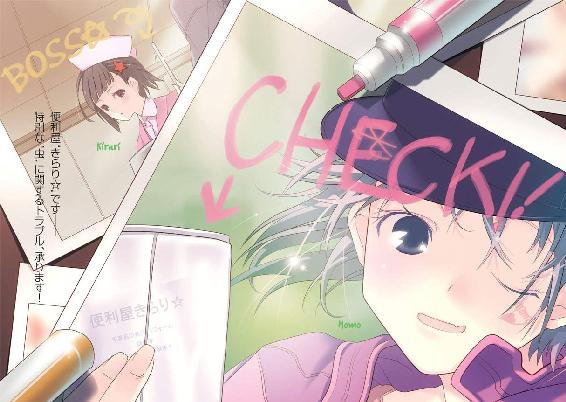
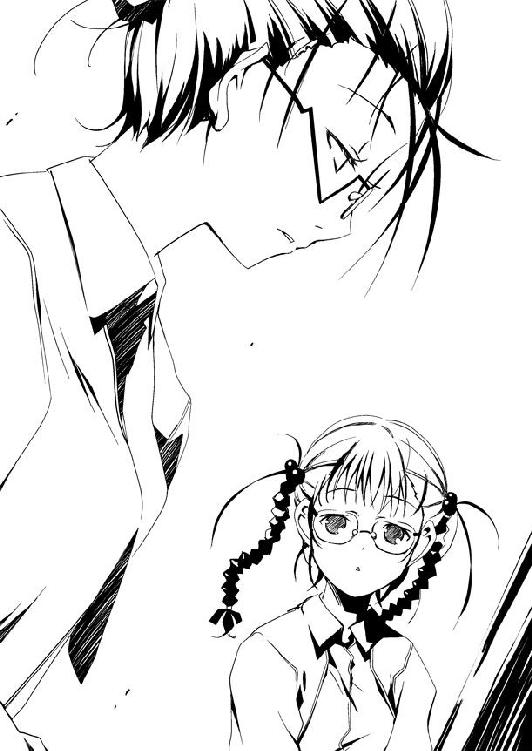
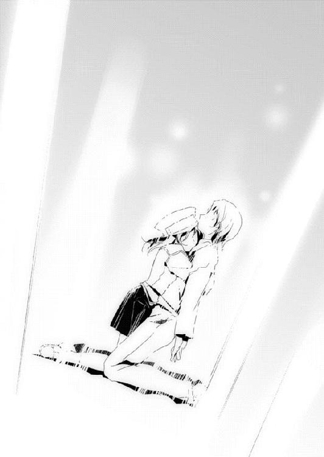

| ムシウタ 08.夢時めく刻印 | |
| 岩井恭平 | |
| KADOKAWA / 角川書店 (2012) | |


ムシウタ
08.夢時めく刻印
岩井恭平
角川スニーカー文庫
本作品の全部または一部を無断で複製、転載、配信、送信したり、ホームページ上に転載することを禁止します。また、本作品の内容を無断で改変、改ざん等を行うことも禁止します。
本作品購入時にご承諾いただいた規約により、有償・無償にかかわらず本作品を第三者に譲渡することはできません。
本作品を示すサムネイルなどのイメージ画像は、再ダウンロード時に予告なく変更される場合があります。
本作品は縦書きでレイアウトされています。
また、ご覧になるリーディングシステムにより、表示の差が認められることがあります。
ムシウタ
０８．夢時めく刻印
ＣＯＮＴＥＮＴＳ
口絵・本文イラスト／るろお
プロローグ 0.00 〝かっこう〟vs殲滅班〝墓守〟
『〝火巫女〟さん、〝兜〟さん、〝さくら〟さん、〝疫神〟さん、〝四ツ葉〟さん──』
緊張した女性の声が響いた。スピーカを通しているのか、音声にノイズが混じっている。
完全な暗闇に、包まれていた。
嚙みしめた奥歯が軋む感触と、全身を貫く苦痛。そんな残された感覚すらも呑み込もうとする虚無感が心に染み渡っていく。
眠気にも似た喪失感に満たされ、薬屋大助はゆっくりとまぶたを閉じようとしていた。
だが唐突に、一筋の光明が網膜を刺激した。
『目標を確認次第、制圧にとりかかってください』
暗闇で閉ざされていた空間に、ぽっかりと長方形の入り口が生まれていた。
眩しい明かりを背に、五つの人影が佇んでいた。
『決して、気を抜かないように。相手は──』
闇の中から、獣の咆哮が轟いた。
赤く燃える双眸が暗闇に浮かび上がり、緑色の輝きが解き放たれる。
燐光を纏った獣が、佇む五人に向かって地を蹴った。
「配置につけ」
ツナギを着た少女が前に出た。
大きなゴーグルで顔を隠した少女が持つハンドハンマーには、金属光沢を放つ昆虫──サクラコガネがとまっていた。髪につけたキューブを外し、放り上げる。
少女がハンマーをふりかぶり、空中でキューブを打ちつけた。
次の瞬間、キューブが大きな網に形を変えた。獣に向かって網が覆い被さろうとする。
獣が咆哮した。急角度のステップを踏んで網をかわし、五人に向かって突っ込む。
「初撃でダメージを与えられないと、勝ち目は薄いぞ」
冷静な声とともに進み出たのは、漆黒のロングコートに身を包んだ少年だった。背後に現れた巨大なツノカブトが翅を羽ばたかせ、轟風で獣の動きを止める。
吹き荒れる風に乗って跳躍し、二つの人影が獣の前に着地した。
「うん。心地良い風だ」
「毒々キック！」
ボロボロに錆びたゴーグルを装着した少年が、獣に向かって腕を伸ばす。少年の腕から噴き出した灰色の影が鋭い形となり、獣に刃を突き立てようとする。
さらに灰色の少年と連携のとれた動きで、背中に赤い十字架のマークを背負った少女が身体を回転させた。鋭い後ろ回し蹴りを浴びせかける。
だが両者の攻撃は、空を切った。
獣が身を仰け反らせるようにして跳躍し、攻撃をかわしたのだ。
『今です、〝火巫女〟さん！』
後方に控えていた長髪の少女が、顔を上げた。宙高く跳び上がった獣に向かって、人差し指と親指を立ててピストルの形にした腕を持ち上げる。
だが唇を嚙み、少女の動きがピタリと止まった。
一瞬の躊躇が、獣に反撃を許した。天井を蹴る轟音が響いた直後、緑色の輝きが流星のように一直線にツノカブトのもとへ舞い降りる。
「ぐおあっ......！」
少年の苦鳴が響いた。
獣の数倍はあろうかというツノカブトの巨軀が、一撃で後方へ弾き飛ばされた。分厚い甲殻を粉砕されたツノカブトが宿主の少年を突き飛ばし、さらに灰色の少年と十字架の少女までも巻き込んで数十メートルの距離を吹っ飛んでいく。
ツノカブトが壁に激突し、大きく跳ね返った。反動で地響きが起きる。
『〝兜〟さん、〝疫神〟さん、〝四ツ葉〟さん！』
ツノカブトの下で、十字架の少女が動いた。
「そ、蘇生パンチ......！ 救急パンチ......！ 癒しパンチ！」
白い光に包まれるツノカブトに向かって、獣がさらに襲いかかる。
だが白光が消えると同時に、三人の戦闘員が勢いよく立ち上がった。傷を修復されたツノカブトとともに散開し、獣から飛び退く。
獣が唸り声を上げながら、己を取り囲む者たちをぐるりと見回す。
「〝火巫女〟......この馬鹿者がっ！ これで私たちは──」
ツナギの少女、〝さくら〟が背負っていた折り畳み式のキックボードを床に降ろした。ハンドハンマーを片手に構えたまま、キックボードの上に飛び乗る。
「本気を出すしかなくなったぞ！」
「もとより手加減して勝てる相手ではなかったがな」
冷静に言う〝兜〟の背後で、ツノカブトの躰がさらに膨張した。
「こりゃあ〝障〟り甲斐がありそうだ」
自然体で佇む〝疫神〟の周囲に、灰色の鎌が浮かび上がった。無数の鎌たちが縦横無尽に飛び交い、鋭利な切っ先を振り回す。
「敵も味方も怪我も病気も、まとめてぶっ飛ばすよ！ ポジティヴにいこう！」
赤十字の少女、〝四ツ葉〟が両の拳を胸の前で打ちつけた。何かの拳法だろうか、ゆっくりと独特の構えをとる少女の拳が、白と黒の靄で包まれる。
だが戦場に立つ者たちの中で、長髪の少女〝火巫女〟だけが唇を嚙んだまま動かない。
「この場にいるのが辛いか？ 目の前の敵が恐いか？ それとも悲しいか？」
キックボードに乗った〝さくら〟が、低い声で言い放った。
「そんな時、どうするべきか......お前は教わっているはずだ」
「......はい」
苦しげに頷き、〝火巫女〟が両腕を持ち上げた。ピストルのジェスチャーをした指先が真紅に輝き、足元から大量の火の粉が噴き上がった。
「──戦います」
闇の中で、獣が吠えた。
五人の戦闘員たちが、いっせいに獣に向かって駆ける。
衝撃と震動、怒号と悲鳴。
獣が視界に捉えるのも困難な速度で動き回り、緑色に輝く模様を浮かべた腕を振り回す。
そのたびに誰かが弾き飛ばされ、別の人間がサポートに入る。傷ついた者を〝四ツ葉〟が治癒するが、獣の動きや破壊力は五人のそれをはるかに凌駕していた。
──......。
薬屋大助は、彼らの戦いを別の世界の出来事のように傍観していた。
身体は熱いのに、心はひどく冷めきっている。
否──何も感じなくなっていた。
獣と五人の戦いを見届けることなく、ゆっくりとまぶたが閉じていこうとする。
『......ああっ！』
スピーカーから響いた声によって、彼の意識がかろうじて繫ぎ止められた。
獣が咆哮とともに、異形の巨大な顎と化した右腕を持ち上げていた。真っ赤な複眼を輝かせた顎の奥で、猛回転する弾丸が業火を撒き散らす。
『あれを撃たれたら、こんなシェルターなんか一撃で吹っ飛んでしまいます！ 皆さん、すぐに待避をして......ああっ、で、でも、どこに逃げれば──』
「好機だ」
口から流れる血をツナギの袖で拭い、〝さくら〟がハンドハンマーを握り直した。
「私が受け流す。お前たちはヤツが撃った直後を狙え」
『ええっ？ む、無茶です！ いくら〝さくら〟さんでも......！』
「この時のために我々、〝あさぎ〟の教え子たちを呼び寄せたんだろう。施設の修繕などと何かと理由をつけてな。こんな化け物、我々以外では敵うまい」
『で、でもっ......！』
女性の声が、大音響の砲撃音にかき消された。
同時に〝さくら〟が、指先で金属のキューブを弾き飛ばした。サクラコガネがとまったハンドハンマーを振りかぶり、弾丸と直撃する瞬間にキューブを打ちつける。
「うおぉおっ！」
ツナギの少女の眼前で、キューブが目映い輝きを放った。
獣が放った炎の塊とハンドハンマーが、真っ向から衝突した。
空気が弾け、膨大な光量が暗闇を引き裂く。
人間の可聴域を超えた爆音が、シェルター全体をシェイクするかのように揺るがす。
燃え盛る弾丸に込められたエネルギーが、キューブを通して周囲へ分散した。八方に吹き荒ぶ衝撃波が床に波紋を生み、一瞬で足元が粉々に打ち砕かれていく。
無音と誤解するほどの破壊音と衝撃の嵐に逆らい、素早く動く者たちがいた。
「──っ」
怪物の顎と化した獣の腕に、ツノカブトが発射した太いツノが突き刺さっていた。
ピクリ、と大助は顔をしかめた。
獣が怯んだ隙を、灰色の少年は見逃さなかった。降り注ぐ瓦礫をものともせずに急接近し、鎌をまとわりつかせた腕で獣に触れる。
大助はまた、顔をしかめる。
「がぁぁっ！」
獣がはじめて、苦しげな声を漏らした。
灰色の少年が触れた場所に、実体のない鎌が次々と突き刺さった。──かと思うと、鞭のようにしなる紐が鎖から縦横無尽に伸びた。
否、紐ではない。何十本、何百本という数の鎖だ。
鎖鎌に締めつけられる獣に、さらに赤十字の少女が背後から近づいた。
だが獣が、とっさに反応した。強引に鎖を引きちぎった腕が、少女の胸を打ちつける。
呻き声とともに、少女の身体がくの字に折れた。
「......」
大助は、はっきりと顔を歪める。
戦いを傍観していたはずの彼の腕に、少女の肋骨が砕ける感触が伝わっていた。
しかし──。
「劇毒......パンチ──」
口から大量の血の塊を吐きながらも、赤十字の少女が腕を持ち上げた。トンッ、と黒ずんだ拳で獣の腕を軽く叩く。
「っっ！」
少女の拳を包んでいた毒々しい靄が、獣に伝染した。全身に浮かび上がっていた緑色の模様が、黒色の斑点に毒されていく。
〝火巫女〟──土師千莉は今度こそ、己の役割を放棄しなかった。獣に向かって指を向け、声を張り上げる。
「......発射！」
爆炎の柱が、獣を包み込んだ。
視界が真っ赤に染まり、大助の五感が現実へ引き戻されていく。
身を焦がされる熱を感じながら、元の形を取り戻していく右腕を見下ろす。
ああ、そうだった──。
ぼんやりと顔を上げると、五人の戦闘員たちが彼を見つめていた。
この化け物は、俺だったのか。それとも──。
獣から人間へと戻る安心感とともに、大助は床の上に倒れ込んだ。
俺自身、ずっと前からとっくに化け物になっていたのか──。
「......」
炎が消えた後も、大助はうつ伏せに倒れたまま、指一本すら動かせずにいた。
横を向いた大助の視界を、火傷を負った小さな昆虫が横切っていく。
緑色のかっこう虫だ。
自我を取り戻した大助には、それがただの昆虫ではないことが分かる。
〝虫〟──。
十数年ほど前に突如としてこの国に現れたそれらは、外見が昆虫に似ていることからそう呼ばれていた。発生源や生態などは、現在に至るまで謎に包まれている。
〝虫〟は思春期の少年や少女に取り憑き、こうなりたい、こうありたい、といういわゆる夢や希望を喰らうとされている。〝虫〟に寄生され、夢を代償に超自然的な力を行使出来るようになった者たちは、虫憑きと呼ばれていた。
ただし政府は〝虫〟は実在しないものとしている。目撃情報や被害報告が多発しているにもかかわらず、〝虫〟の実態が明らかにされていない一因は、メディアや一般人に対して厳しい情報統制が行われているからだ。
それを行っているのが、特別環境保全事務局という政府機関である。
〝虫〟、ひいては虫憑きを監視し、捕獲し、隠蔽するために存在する機関──特環と略称される彼らは、軍事力を用いてすら手を焼く虫憑きたちに対抗する術を考え出した。
捕らえた虫憑きを訓練し、統制することで新たな虫憑きを捕獲するのである。
「......まだ生きてるのか、俺も──お前も」
薄目を開けた状態で、大助はポツリと呟いた。彼に取り憑いた〝虫〟であるかっこう虫が、不機嫌そうに傷ついた躰を揺らす。
かっこう虫からすれば、あと一息で彼の夢を喰らい尽くすチャンスだったのだろう。
〝虫〟に夢を喰らい尽くされた虫憑きは死ぬ。
宿主の死とともに〝虫〟も息絶えるが、ごく稀に成虫化という現象を引き起こす。
束縛から解放された〝虫〟が強力な力を得、凶暴化するのだ。
「彼が動けないうちに怪我人を治療室へ！ あ、〝疫神〟さんには直接触れないように──」
特別環境保全事務局、東中央支部の隔離施設である地下シェルターは騒然としていた。
指揮しているのはスピーカーで話していた声の主、五郎丸柊子だ。東中央支部の支部長代理という地位にあるにもかかわらず、今日も寝癖のついた髪のせいで威厳のカケラもない。
柊子が引き連れてきた局員らが、傷ついた五人の戦闘員のもとへ駆け寄る。
力を使い果たして床に倒れ込んだ土師千莉は、まだ良いほうだった。
肋骨を折った〝四ツ葉〟は意識を失い、呼吸器をつけさせられている。〝疫神〟は瓦礫によって重傷を負い、〝兜〟はツノカブトともども仲間たちの盾となり、すでに気絶している。
凄惨な光景の中、哀れみの目で大助を見下ろしたのは、ツナギを着た〝さくら〟だった。
「惨めだな......これが最強の虫憑きの末路か」
柊子がぎょっとして、そばに駆け寄る。
「さ、〝さくら〟さん、貴女も早く救護室へ！ 大切な両腕が......！」
大助の弾丸を防いだ反動で、〝さくら〟の両腕は直視に耐えないほどに引き裂かれていた。だが彼女は「いざとなったらハンマーくらい口で使うこともできる」と顔色を変えない。
「成虫化の兆候で、この有様だ。......本格的に成虫化が始まる前に、一思いにここで〝虫〟を殺し、欠落者にしてやるのが本人のためでもあるんじゃないのか？」
柊子が一瞬、ギクリと表情を動かした。
「そ、それは......」
眼鏡のズレを直しながら、いつもの愛想笑いを浮かべた。
「──それは、できません」
曖昧な笑みとは裏腹に、はっきりと言う。
「彼は私たちにとって、まだ必要な人間です」
「外道だな、貴様」
吐き捨て、〝さくら〟が身を翻した。
「あ、あの、あとで良いので、このシェルターの修繕を──」
声をかける柊子を、〝さくら〟は振り向きもしない。
「嫌われちゃったみたいですね、たはは......」
柊子が腰を下ろし、ピクリとも動かない大助の身体に指先で触れる。
「傷だらけですね、大助さん。痛いですか？ 痛いに決まってますよね、たはは。何言ってるんだろう、私......ごめんなさい、すぐにでもここから出してあげたいんですけど──」
大助と二人きりになったことで、柊子の声が急に弱々しくなっていた。
彼女が言いたいことは、嫌というほど分かっていた。
ずっと、大助はこの状態なのだ。
大助の生まれ故郷である紫央市で〝大喰い〟と戦った直後からである。
姉を救うという目的は果たしたものの、その代償は大きかった。紫央市へ辿り着くまでに力を浪費し続け、虫憑きを生む〝始まりの三匹〟の一体──〝大喰い〟を撃退するために、己の力を限界まで使いきった。
そして──東中央支部に帰還すると同時に、己の〝虫〟が暴走を始めたのだ。
命令違反に対する懲罰という名目でこの地下隔離施設に収容されてから、どれくらいの月日が経ったのかも分からない。
「......本当は、とっくに限界だったんですか？」
柊子の声が、震えていた。こみ上げる嗚咽を、必死にこらえているのが分かった。
「......」
大助は弱々しく、唇の端を持ち上げた。
限界など──とっくに超えていた。
思えば、去年のクリスマス。
虫憑きによるレジスタンス、〝むしばね〟のリーダーだったレイディーバード──立花利菜との戦いで、すでに成虫化の兆候は顕れていた。成虫化した利菜の〝虫〟を倒すことができたのは、彼の〝虫〟もまた成虫化しかけていたからにすぎない。
以来、彼は自らの力を抑え、できるかぎり全力は出さずにいた。
だが紫央市で戦った〝大喰い〟は、力を温存して勝てる相手ではなかった。力を振り絞り、かろうじて一時的に追い払うのが精一杯だった。
これまで隠し続けてきた〝大喰い〟の能力──虫憑きどうしの戦いに発展しかねない秘密が明かされてしまったのも、影響したのかもしれない。今は柊子によって〝霞王〟や〝Ｃ〟たちに箝口令を敷いてもらっているが、いずれは誰もが知ることになるだろう。
旧来の戦友が殉死したことも、聞かされた。獅子堂戌子という戦士は、彼がともに訓練を受けていた同期の最後の一人だった。
それら全てが重なって──。
再び立ち上がろうとする彼の脚に、力が入らないのかもしれない。
「でも、それでも......誰よりも強くなるって言ったじゃないですかあ」
柊子がとうとう、泣き声を洩らす。倒れたままの彼の目の前に、水滴が落ちる。
「大助さんがいないと、私たちは勝てないんです......」
ピクリ、と彼の肩が動いた。
「大助さん......！」
大助の動きに気づき、柊子が表情を輝かせた。
しかし──。
「......うんざりだ......」
上司の表情が凍りついた。
このシェルターに幽閉されてから、苦痛と虚無感しか味わっていない。
〝虫〟の暴走が始まって何日が経過しただろうか？ 一カ月？ 二カ月？
十六歳の少年が耐えられる限界を超えていた。いや、どんな人間だって耐えられないはずだ。
すでに身体も心も、衰弱しきっていた。
いつ自我を失うか分からないため、シェルターから一歩たりとも外に出ることは許されない。
目に見えるものは暗闇ばかりで、五感は何の意味もなさない。〝虫〟に喰われる恐怖と苦痛に、ひたすら孤独に耐えるだけの日々だ。
「これ以上、俺に何をさせようっていうんだ......」
虚ろな笑みを浮かべ、呻く。
柊子が必要としているのは、〝虫〟の力を使って戦う〝かっこう〟という虫憑きである。
ただもがき苦しむだけの、今の薬屋大助を必要とする人間など一人もいない──。
「......殺せよ......」
柊子が息を呑んだのが、気配で分かった。
「〝虫〟でも俺でも、どっちでもいい......」
「じ──」
五郎丸柊子がひきつった声を上げた。
「冗談......です、よね？ 大助さんが、そんなこと言うはず──」
「......有夏月は......どこにいる......俺を恨んでるアイツなら、俺を殺してくれる......」
柊子が黙り込んだ。言葉を失ったといったほうが正しいかもしれない。
「もう、いいだろ......」
ずっと暗闇に閉じ込められているうちに、幻覚を見るようになった。
立花利菜をはじめ、今までに彼が踏みにじってきた虫憑きたちが、彼をさらなる暗がりへ引き込もうと纏りつくのだ。
戦い、傷つけ、他者の夢を犠牲にして生きてきた。
長く、生きすぎた。
「ダメです──」
大助は目を見開いた。
眼球だけを動かして見上げると、柊子が半ば呆然としたまま、彼を見下ろしていた。
「貴方は、ここで立ち止まってはいけないんです」
ぞくり、と大助の背筋を恐怖が貫いた。
柊子がしゃがみ込み、彼の身体に触れた。カチャカチャと音を立てて何かをしている。
いったい何をしているのか──そのことに気づいて、さらに寒気をおぼえた。
彼の拳銃を、腰のホルダーに戻しているのだ。
こんな状態の大助にさえ、五郎丸柊子は戦うことを強いようとしている──。
「今の大助さんはきっと......疲れて弱気になっているだけです」
柊子が立ち上がり、くるりと身体の向きを変えた。わずかによろめいたようにも見えたが、冷たい床の上に投げ出された彼を振り向くことなく遠ざかっていく。
上司が通り抜けると、再びシェルターの出入り口が閉ざされた。
暗闇を凝視しながら、大助は確信した。
このままここに居たら、自分は間違いなく殺される。
いや──。
殺されるなどという、生やさしいものではない。
苦しみ抜き、暴走の兆候が顕れるたびに動けなくなるまで痛めつけられた挙げ句、味方だったはずの五郎丸柊子によって、死ぬまで戦うことを強いられる。
「はあっ......はあっ......」
恐怖のためか、息苦しくなってきた。
ここに居るかぎり、死ぬことすら許されない──。
「......！」
唐突に何かが崩れる音がした。
身を竦ませながらも、音がしたほうを振り向く。
闇の向こうで床の一部が崩壊しているのが、かすかに見えた。頑強に造られたシェルターとはいえ、先ほどの戦闘には耐えられなかったのだろう。
「う──」
完璧な密閉空間に生まれた、ほんのわずかな隙間──。
今の大助にとって、それは奇跡に近い産物だった。
シェルターを管理しているセキュリティシステムは、先ほどの戦闘の影響で一時的に麻痺しているのだろう。今はまだ施設の損傷を感知していないようだが、いずれは──いや、ほんの数秒後には回復したシステムが発見し、修復されてしまうかもしれない。
「うぅ......！ うぐっ......！」
疲弊した身体を引きずり、床に空いた穴に向かって進む。
伸ばした腕が、硬い感触に触れた。
彼のゴーグルだ。
心を強く保つことが出来るように──そんな理由で、拳銃と同様にシェルターに放り込まれたものだ。幾度もの戦闘の被害を受けたせいで、すでに機能が停止しているのが分かった。
今の彼には無用のものだが、手にひっかかったものを取り去る余裕もなかった。
ゴーグルを摑んだまま床の上を這いずり、崩壊した穴の縁に出る。
ケーブル用の通路のようだ。太さも様々な電線が敷き詰められた狭い道が見えた。
「ん......ぐ、あっ！」
身を投げ出すようにして、狭い通路へ飛び込む。
逃げよう──。
その一心だった。
拷問のように苦痛に満ちた日々が、大助を支えてきた強さを打ち砕いていた。
ここから逃げないと、俺は──。
死ぬまで、利用され続ける。
死ぬことも許されない、地獄の日々へ連れ戻される。
最強の虫憑きという烙印を捺されたという、たったそれだけの理由で。
「......っ！」
頭上から、けたたましい警報が鳴り響いた。
鼓膜が破れるほどの大音響に顔をしかめながら、匍匐前進をして狭い通路を進む。
「はあっ......！ はあっ......！」
通路を抜けると、垂直方向にぽっかりと空いた広い空間へ出た。正方形の壁際を無数のケーブルが伝い、上下に太いワイヤーが吊されている。
息を整える彼の視界に、眼下からせり上がってくる箱が見えた。
エレベータだ。
考えるよりも先に、身体が動いていた。
「うっ！」
タイミングを見計らい、箱の上に飛び降りる。両者が衝突する音が反響したが、エレベータが停止することはなかった。運良く、誰も乗っていないようだ。
当たり前だが無人のエレベータは、乗客を乗せるために停止する。
停止すると同時に、彼は身体に鞭打って移動を始めた。
飛び込んだのは、やはり狭いケーブル通路だった。各階に数え切れないほど設置されたそれらの中の一つに、強引に体を押し込んでいく。
「はあっ！ はあっ！」
彼自身、東中央支部の局員だ。今いる施設の構造は熟知している。
それゆえに──逃げ場がないことも、分かっていた。
人が通るための通路には、必ず監視カメラが備え付けられている。施設の外部へつながる出入り口には厳重な警備が敷かれていることも知っていた。
それでも彼は、逃げずにはいられなかった。
両腕で自らの身体を引きずって前進する彼の前に、ケーブルの分岐点が現れた。
細いケーブルが延びている先のカバーを、蹴り開ける。
眩しさに目を細める彼の耳に、水が流れる音が聞こえた。
下水道だ。
地下からポンプで汲み上げた下水を、地上へ排水しているのだろう。ここまでたどってきたのは、通路を照らす照明用のケーブルだったようだ。
ここなら、もしかしたら──。
シェルターからここに至るまで、他のケーブル用の通路を含めて数百通りの道筋がある。それも監視カメラのない箇所を選んでやってきたのだ。大助の逃走経路を断定するまでは、それなりの時間を要することだろう。追っ手を振り払う体力のない今の自分には、与えられたわずかな時間にすがるしかなかった。
そこからは、がむしゃらな逃避行が続いた。
悪臭の漂う下水道は狭い上に多岐に分岐し、出口が見あたらなかった。たびたび疲労で気を失っては、汚水に頭から突っ込んで目を覚ます。
迷路のような下水道を、丸一日は歩き続けただろうか。もしかしたら数日の間は歩きつめたかもしれない。まだ桜架市にいるのかどうかも疑わしかった。
そのため、実にひさしぶりの日射しを浴びた時は、頭が真っ白になった。
いつの間にか彼は、下水道の出口に立ち尽くしていた。
大きな川の分流に空いた穴から見える景色は、橙色に染まっていた。
「は......はは......」
笑っているのか、泣いているのか、自分でも分からない。頭に思い浮かんだのは、去年まで偽りとはいえクラスメートだった少女の描いた夕日の画だった。
「利菜が見ていた景色も......こんな感じだったのかな......」
呟く彼の身体が、ぐらりと傾いた。下水から川縁へと転げ落ちる。
土手へ這い上がろうと腕を伸ばしたところで、自分が摑んでいたものに気づく。
特環の装備であるゴーグルを、まだ持っていたようだ。自分自身、なぜこれをまだ持っているのかも分からない。手放すタイミングを失っただけともいえる。
ふらつきながらも、雑草の茂った土手を歩く。身に纏った服は汚水まみれで、元の色も分からない。もちろん金銭など持っているはずもない。
「......」
どさり、と草の上に倒れる。
苦痛と恐怖に耐えかねて逃げ出したものの、行くあても体力もない。
助けを求める相手も、思い当たらない。
頭に浮かんだのは、苦しい時に自分を助けてくれたことのある人物たちだった。
土師圭吾という年上の青年は、意識不明の重体からまだ回復していないはずだ。戦友だった獅子堂戌子は死んでしまったし、かつて悩む彼を何度となく笑って叩いた槍使いの少女は──もし今ここにいたとしても、こんな自分の姿など見られたくなかった。
だが土師圭吾のことを思い出し、彼がいつか冗談混じりに言った台詞が脳裏に蘇った。
──面白い子と会ったよ。キミがもし困った時は、頼ってみるのも良いかもね。
例の薄笑いを浮かべて言う圭吾に対し、大助は何と言ったのだったか。
──余計なお世話だ、かい？
言おうとした言葉を先に言われ、ふてくされて無視したのだった。
あの男はいつだって、先の先を読んでいた。決して頭の良いほうではない彼にとって、青年の先見に長けた知恵はもはや予言じみていた。
土師圭吾は、今の大助の姿さえ予見していたのだろうか？
噓吐きでつかみどころがないのに、矛盾するようだが、信頼できる人物だった。あの男が言うならば、本当にそういう人間がいるのだろう。
「......」
ムクリと立ち上がり、歩き出す。
このまま行動せずに倒れていたら、東中央支部の追っ手に見つかってしまう。
だがおそらく中央本部や他の勢力は、彼がまだ東中央支部にいると思っているはずだ。今ならば東中央支部の捜索網を抜ければ、逃げ切ることができるかもしれない。
土師に教えられた場所を思い出し、顔を上げる。
たしかあれは、桜架市を流れる川の下流にある街だったはずだ。
疲労のせいで、身体が思うように前に進まなかった。両足に何人もの人間がしがみついているかのようだ。もしそうならば、彼が今までに傷つけてきた人々に違いない。
それでも大助は本流まで茂みの中を歩いていき、川縁で水面を見つめた。
汚水で汚れ、衰弱しきって瘦せた顔が映っている。
「......まともな方法で、特環の追っ手から逃げられるわけないしな......」
走って逃げても、たとえ飛んで逃げても、発見されてしまうだろう。ならば──。
大助が川に落ちる音が、鉄橋を走る電車の音にかき消された。
ゆるやかな流れに、一人の少年が流されていく。
傍目に見たら、ただのボロ切れが浮かんでいるようにしか見えなかっただろう。
夕日が落ち、空に星空が浮かぶ。
夜の川に響く虫の鳴き声が、耳に残った。
やがて東の空が白んできて、明るい太陽が昇っていく。
水面に突き出した岩にボロ切れがひっかかったのは、西日が赤く染まり始めた頃だった。
わずかに方向修正しただけで、再び流されそうになり──やにわに一本の腕が岩を摑んだ。
「......ぶはっ」
彼は水面へ顔を出した。激しく咳をしながら、岩にしがみつく。
ずいぶんと水深が浅くなっていた。立ち上がるなり、笑みがこみ上げる。
「まだ生きてるのか、俺は......」
丸一日、気を失っていたようだ。
バシャバシャと音を立てて川を出て、遠方に見える車道を見上げる。道路標識を見て、目的の街が近いことが分かった。
「二丁目......だったっけか......」
うなだれる彼の首にかけたゴーグルから、水滴が滴っていた。砂利の上を歩いていく。
だが自分以外の砂利を踏みしめる音を聞いて、顔を上げる。
「......」
真っ赤な夕日を背にしたその人物を見て、大助は眉をひそめた。
英語のロゴで埋め尽くされたジーンズをはいている足は長く、並んで立ったら頭半分は大助よりも長身だろう。同様に英語ずくめのＴシャツを着た身体つきは細い。また両の肘と手首の部分に黒い紐を巻きつけ、手錠のように拘束している。
何よりも大助の目を引いたのは、頭からかぶっているマスクだ。
フランケンシュタイン──その化け物は、確かそんな名前だったはずだ。ツギハギの肉体を持つモンスターの顔をしたそれは、人を驚かせるための玩具、パーティマスクである。
「──ぐう、う......こいつが、〝かっこう〟なんだな......？」
マスクの下から、苦しげな呻き声が聞こえた。周囲に人影は見えないが、かといって大助に向かって語りかけているとは思えない。
「だから......俺をここまで、連れて──」
若い少年の声だ。肩を震わせながら、搔きむしるようにしてマスクを手で覆っている。
「......誰だ、お前......」
顔を歪める大助の肩に、緑色のかっこう虫がとまった。
「名前......俺は名前なんて、もう──いや、俺は殲滅班......〝墓守〟──」
外見だけでも異常だが、マスクの人物の言動はそれ以上に不気味だった。ガクガクと身体を揺らしながら、何かに怯えるようにして呟いた。
殲滅班──その言葉で、思い出した。
自分を追いかけているのは、東中央支部だけではなかった。
同化型の虫憑きを危険視し、密かに暗殺を企てている中央本部の極秘部隊、殲滅班。かつて何度か衝突したことのある虫憑きたちだ。
「......ふははっ」
マスクの下から、くぐもった笑みが聞こえた。ひどく自虐的で皮肉っぽい──しかし、捜し求めていたものをようやく見つけた歓喜が混じっている。
「こいつを倒せば、いいんだな......？ そういう、契約だ......」
自らの身体を抱きしめて震える男の周囲に、黒い何かが充満していく。
大助は目を見開いた。男が放つ、黒い霧のようなものに見覚えがあったのだ。
障気とも言うべきそれを、見間違えるはずもない。
かつて大助が自分の手で一度は倒したはずの原虫指定──〝浸父〟が放っていたものと、まったく同質のものだ。
「よせ......」
呆然と首を横に振る大助の肩で、かっこう虫が弾けるようにして変形する。
直後、周囲の空間が歪み、黒い障気に包まれていく。
地響きとともに、足元から何本もの石柱がせり上がった。表面に文字が刻まれたそれらはまるで、無数に並び立つ墓石のようだ。さらにマスクの人物の背中から、障気をかき分けて何かの影が姿を現そうとしていた。
現実世界が切り取られ──まったく異質の空間へと置き換えられていく。
敵に反応したかっこう虫の触手が大助の皮膚に突き刺さり、緑色の模様となった。
マスクの男、殲滅班〝墓守〟がとうとう堪えきれなくなったように絶叫した。
「──力を貸せ、ディオレストォォォイ！」
マスクの少年が、穢れた障気を纏っていく。
「こいつを殺して、俺が〝王〟になってやるっ！」
別の空間へ移り変わっていく川辺で、二匹の獣が向かい合った。
0.01 The others
壊れたゴーグルを片手に、彼は静まりかえった雑居群の中を歩いていた。
陽はすでに落ち、周囲は薄暗い。衣服はボロボロに擦り切れ、裂傷が露わになった脚をひきずる音だけが空き家だらけの路地に響いていた。
「かはっ......！」
力尽き、硬いコンクリートに膝をつく。吐き出した血の唾が、乾いた地面を染めた。
「なん......なんんだ......あいつは......」
漏れる吐息も、鉄臭い血の匂いがした。
「本当に虫憑きだったのか......？ いや、あんなのは......違う......」
獣。
あるいは──化け物。
陳腐だが、そんな表現しか思い浮かばなかった。
塀によりかかり、夜空を見上げて皮肉な笑みを浮かべる。心身ともに、限界だった。
「俺は、まだ......一応は人間だったってことか......」
川辺で戦った相手との戦闘は、すぐに決着した。
自分でも抑えられないほどの力を振るう彼が、まるで子供扱いだった。かろうじて奇跡に近い一撃を喰らわせるのが精一杯だった。
相手に生じた刹那の隙をつき、彼は反撃に──転じたりはしなかった。
「......この俺が、逃げるので精一杯だなんて......」
転じたのは、身体の向き。
彼は絶好のチャンスを利用して、全力でその場から逃げ出したのだ。
「ちっ......」
力なく握りしめた拳に、夜の闇とは異なる黒い何かがまとわりついていた。
この黒い物体──障気とでもいうべき、気味の悪い煙のようなものがヤバい。気を抜くと取り込まれ、心を穢され、意識が乗っ取られそうになるのだ。
「......悔しがる必要なんて、ないか......」
弱々しい笑みを浮かべ、手を振り払う。黒い障気が分散し、虚空に消えた。
「どっちにしろ俺は、もう戦う必要なんてないんだからな......」
自分を拘束する、特別環境保全事務局という組織から逃げ出した。
自らに課せられた使命から、逃げ出した。
暴走しつつある自分自身からも、逃げようとしている。
「......」
強くなるはずだった。
強くならなければならないはずだった。
誰よりも、何よりも強くなって、すべきことがあったはずだったのに──。
大切なもの、何よりも大事な夢があったはずなのに──。
それがいったい何だったのかさえ、思い出せなくなっていく──。
「──俺は」
ここにいるのは、空っぽの一匹の獣だけだ。
あらゆるものから逃げ出した、臆病でちっぽけな虫憑きでしかない。
「──ここで、死ぬのか」
漠然とした恐怖が、心の奥に拡がっていく。
嫌だ。
ここは寒い。誰もいない。
こんなところで、死にたくはない。
せめて、もう少しだけ時間を──。
いつか抱いた夢を、もう一度だけ思い出せるだけの時間を──。
力の入らない拳を、握りしめた時だった。
「──でね、それが大事なの。身辺調査なんて、こうグッとターゲットに近づいて、でも尾行を気づかれないようにしつつ、バッと終わらせばいーわけ」
声が、聞こえた。
途絶えかけていた彼の意識が、かろうじて現実に引き戻された。とっさの癖で、接近しつつある声の気配を探る。
「きらりんはこう、グッとくるところが足りないってゆーか。もちろん、下調べも重要だけどね。ようはセンスってことだゼッ！」
声は彼と同年代くらい、つまりは十代半ばの少女のようだ。〝ゼッ〟の部分にアクセントをおく独特の言葉遣いで行われる会話は──彼が消耗しきっているせいか、解読不能だ。
最初は携帯電話か何かで、誰かと話しているのかと思った。
「聞いてる、きらりん？ あ、ダメだ。歩きながらすでにゆらゆらってるゼッ」
しかし彼の耳は声の主とは別の、小さな足音も拾っていた。
二人の人物が、肩を並べて歩いているようだ。
「......あっ？」
少女の驚いた声が聞こえた。駆け足の音が、彼に近づいてくる。
「......」
すぐ横でピタリと止まった足音の主を、ぼんやりと見上げる。
電灯に照らされ、個性的な服装をした少女が彼を見下ろしていた。
まず視界を彩ったのは、上半身に纏ったピンク色のジャージだ。ミニスカートのベルト部分には、西部劇のガンマンのように小さなケースをぶら下げている。頭にかぶっているのは、奇妙なデザインをした学帽だ。
「んー？ んんー？」
少女が身を屈め、まじまじと彼の顔を覗き込む。短めの髪は色素が薄く、涼しげな首元が露わにされる。幼さが残る顔立ちは可愛らしいのだが、頰にペイントした〝ｍｏｍｏ〟のスペルの意味が理解しかねた。
彼を見定めているらしい。犬か猫か、それともただのゴミに見えたのかもしれない。
だが思いついたように、腰のケースから何かを取り出した。
マーカーだ。
俗に白紙の紙などに文字やイラストを描くための、細いペンである。
「このままでも、すごくキレーなんだけどな。現実を一部分だけ切り取って生まれた非現実、みたいな」
ぶつぶつと呟きながら、やにわに少女が彼にマーカーを向けた。
彼の額に、冷たいペン先の感触が当たった。取り憑かれたように真剣な眼差しで、少女が彼のおでこにマーカーを走らせる。
額を撫でる感触で、描かれたものの図柄は分かった。
「......」
一本の長い矢印と交差するように、二本の線を描いただけの、シンプルなマークだ。
その記号が一体、何を意味しているものなのかは分からない。
「コアトル・コアトル・パラ・エミレ」
作業を終えた少女が、満足そうな笑みとともに唱えた。
なんだか不思議な──温かい感情が、胸の奥に生まれた気がした。
だが、それだけだ。
夜の静寂が、ひっそりと住宅街の一角を包み込む。
やたらと楽しげな、少女の笑顔。
あっけにとられて、呆然とそれを見上げる彼。
これが彼と、田央萌々の出会いだった。
緊張感も胸が躍る高揚も何もない、白けた沈黙。
もし二人のどちらかでも予知能力のようなものを備えていれば、こんな瞬間でも、あの陳腐な呼び方をしたかもしれない。
運命──。
どうしようもなく古臭い表現で、聞いただけで笑ってしまうような表現だ。
実際、二人は後に笑い合うことになる。
「......〝コアトルヘッド〟のおまじないも、さすがにこの状況までは助けてくれないか」
少女の笑みが、引きつった。
彼は少女の行動の意味が、さっぱり理解できない。
「きらりん、きらりん。怪我人がいるよ、手当てしたげて」
奇怪な行動をとるだけとって、少女がようやく常識的な判断をした。
助けを求める声を聞いた途端、静かだった足音が素早く動いた。離れた位置をゆらゆらしていた人影が、滑るように彼のそばへ駆け寄る。
またもや若い少女だった。スリムな身体をどこかの高校の制服らしきシャツに包んでいる。左から右にかけて斜めに切り揃えた前髪に、星形のヘアピンをつけていた。
きらりんと呼ばれた少女の動きは、手慣れたものだった。傷つき汚れきった彼を前にしても動じず、脈をはかり、取り出したペンライトで傷を照らしていく。
だが急に、ハッとした様子で顔を上げた。周囲をきょろきょろと見回す。
マーカーを持った少女が、ぱたぱたと手を振った。
「いや、ナース服とかないから。コスプレってる状況じゃないゼッ」
きらりんという人物が少し淋しげに俯き、応急手当てに戻る。
「警察？ 救急車？ フンパツして両方？」
ジャージ姿の少女が携帯電話を取り出すのを見て、彼は身を起こそうとした。
やめろ──。
公共の機関に通報されるのは、まずい。だが制止の声すら、喉から出なかった。
「動かないで」
はじめて、きらりんが喋った。聞く者に安心感を与えるしっかりとした声音だ。
「無理に動くとショック状態に──」
言いかけ、彼が握りしめたゴーグルを見て目を見開く。
「あなた......」
あらためて彼の顔を凝視し、思いがけない言葉を投げかける。
「もしかして──薬屋大助さん？」
今度は彼が両目を見開く番だった。
眼前の少女が何者であるか、可能性のある組織の名前が次々と頭に思い浮かぶ。
「そうだと言ったら......どうする？」
かろうじて、掠れた声が喉の奥から漏れた。
「きらりん、知り合い？」
「知り合いの知り合い──ううん、ちょっと違う」
きらりんと呼ばれる少女が、ニコリと微笑んだ。
「昔の依頼の続き......かな」
シャツの少女が、自分の胸に手を当てた。傷ついた彼を歓迎する意思表示だろうか、静かな動作で軽く会釈する。
「ようこそ、〝便利屋きらり☆〟へ」
頭を下げた時、少女の胸ポケットの中から小さな金属音がした。
「迅速確実をモットーに、私があなたをお助けします」
電灯を反射し、少女の胸ポケットの中で輝くものがあった。
鮮やかに煌めく金色のリングを吊した、一本のネックレスだ。
田央萌々との出会いが奇跡だとしたら、その不思議な便利屋がこの場に居合わせたことは、必然だったのかもしれない。
五十里野きらり。
虫憑きと虫憑きではない者をつなぐその少女は、自らの力に怯える同化型の虫憑きの最期を見届けるにふさわしい人物だった。
1.00 きらりと萌々
「よろしくお願いします」
黄昏時という時間帯は、嫌いではない。
朝に通った道を、今日一日で積み重ねた色々なものを背負って戻っていく。
積み重ねるものは様々だ。
学生であれば一日分の勉強とスポーツ、あるいは恋や友情といったものを経験し、朝よりも少しだけ大きくなった姿で通りすぎていく。
会社員だったら、その日の業績や成果、疲れやストレス、そして一日を乗り切った達成感を胸に家庭へ戻っていく。それとも今から、遊びに繰り出すのだろうか。
「よろしくお願いします」
通りすぎていく人々を、五十里野きらりは羨ましいと思う。
将来を夢見ながら学校へ通うことも、ある一つの職業に就いて自らの才能を活かすことも、彼女自身には有り得ないことだから。
閉ざされた未来しか持たない自分は一生、彼らに憧れながら生きていくのだろう。
「よろしくお願いします」
駅に近い大通りの歩道で、きらりは通行人にポケットティッシュを配っていた。
左から右へ斜めに切り揃えた前髪に、星形のピン。袖をまくったシャツと巻きスカートつきのボンデージパンツという外見は街の風景に溶け込んでいた。美容院の店員と勘違いしたらしい若い世代が、たまにティッシュを受け取ってくれる。
「あっ」
並んで歩いていた年配のサラリーマンに突き飛ばされ、反動で中年女性のグループに突っ込んでしまった。女性らは、きらりが持っていたティッシュを見るなり「あら」とひったくる。
きらりはすぐにハッとして、それを取り返した。女性らが顔つきを変える。
「す、すみません。その、それ、印刷ミスがあって......こちらをどうぞ」
慌てて別のティッシュを差し出す。
──〝便利屋きらり☆〟 不要品の処分、リフォーム、調査等、困りごとを即時解決！
主婦らしき女性らが持つティッシュに挟んだ広告紙には、そう書き込まれていた。
一方、きらりが奪い返したものには、さらに別の一文が加えられていた。
──特別な〝虫〟に関するトラブル、承ります。
きらりはペコリと一礼する。
「よろしくお願いします」
ティッシュを受け取った主婦らが、「便利屋ってなあに？」「さあ」と顔を見合わせた。
「便利屋っていうのは、その、いわゆる何でも屋っていうか、雑用の手伝いやサポートをさせていただいている会社です。他にも探偵業と同種の仕事も承っていて......」
探偵という言葉を口にすると、主婦らが眉をひそめた。胡散臭そうに彼女の顔をジロジロと見て、「若い子がそんなことしてちゃダメよ」と言い残して去っていく。
主婦らの後ろ姿を見て、きらりは嘆息した。あの手のグループは主婦同士で集まると、きらりのような職種の人間を嫌悪するものだ。しかしそれは表向きで、実は持ち込まれるトラブルのトップは、主婦からの家庭事情に関する依頼なのである。
「よろしくお願いしま──」
再びティッシュ配りに戻ろうとした矢先だった。
ティッシュの在庫を入れておいた段ボールが、蹴り飛ばされた。
ビニルに入ったティッシュが飛び散り、背後の排水溝へ落ちてしまう。
「──」
黒いスーツに身を包んだ屈強な男が二人、きらりを挟むように左右に立った。段ボールを蹴ったのは、そのうちの一人である。スーツにつけたエムブレムは、彼らがある企業グループの一員であるということを示していた。
赤瀬川グループという名を、経済界で知らない者はいないだろう。
一代で財産を築き上げた創始者は、数年前に謎の変死を遂げている。現在は創始者の孫である年若い少女が会長を務め、今なお影響力を増している財団である。
「......」
突然の暴挙に対し、きらりは抗議をしたりはしなかった。無言で身を屈め、通行人の視線が集まる中、排水溝に落ちたティッシュを拾い上げていく。
ヘドロにまみれたティッシュを詰め込んだ段ボールを持ち上げ、その場を後にする。
男たちはにやついた顔で見送るだけで、追いかけては来ない。
「おい、キミ......」
陰鬱な声と同時に、何者かに肩を摑まれた。
暗くなり始めた空を背に、長身の女性がきらりを見つめていた。髪に銀色のメッシュを入れた美人で、モデルのように手足が長い。肌が浅黒いのは、純粋な日本人ではないからだろう。
女性が着ているのは、変わった素材のスーツだった。夕日を反射して照り輝いている表面は革製というより──ビニルに近い。かなり奇抜な嗜好をしているようだ。
「事情は知らないが、不当な嫌がらせを受けているのなら警察に通報したほうが良い......」
女性が鬱々とした口調で言い、じろりとスーツの男たちを睨んだ。
無意識に、きらりは女性の職業を思い浮かべた。見た目からするとミュージシャンや芸能人にも見えるが、それにしては雰囲気が暗すぎる。口振りからすると弁護士や検察官、あるいは──教師といった聖職に就いているのかもしれない。
「余計なお世話だったか？」
うっすらと隈が浮いた目で、女性がきらりを見た。やけにのろのろとした動作が不気味なようでいて、妖艶にも見える。愛想という言葉とは、無縁のようだ。
「いえ、ありがとうございます」
笑みを浮かべ、一礼する。せっかくの忠告だったが、受け入れずに足早に立ち去る。
良い人なのだろう。強面の男たちを前に、赤の他人に助け船を出してくれる人間は珍しい。
それだけに、きらりの個人的なトラブルに巻き込みたくはなかった。
ちらりと後方を振り向く。男たちに睨まれながらも、女性が素知らぬ顔で遠ざかっていくところだった。足をズルズルと引きずる歩き方は、ホラー映画に出てくるゾンビのようだ。
ほっと胸をなで下ろしながら、帰路につく。
「今月......乗り切れるかな」
ティッシュと広告用のチラシの制作費も、バカにはならない。ただでさえ赤字続きな上に、今はアルバイトに払う給料や、予定外の居候の生活費もある。
今まではかろうじて乗り切ってきたが、いよいよとなれば覚悟が要るかもしれない。
「コアトル・コアトル──」
すれ違った女子中学生たちが談笑しながら、呪文のような言葉を唱えた。
振り向くと、ペンを持った女の子がふざけて友人の手に何かを描いているところだった。
斜め下を向いた一本の長い矢印に二本の直線を交差させたマーク。
なんでも叶う、神様のおまじない。
「......」
女の子たちの表情は明るく、深刻な悩みを抱えている様子は見えない。
笑顔で描かれるそのマークを見て、気持ちが沈みかけていたきらりの胸が温かくなる。
微笑し、再び帰り道を歩き出そうとした。
「ね、ねえ......！」
今日はよく人に呼び止められる。
「ずおあっ！」
振り向いたきらりの視線が、下を向く。
よほど慌てていたのか、彼女を呼び止めた人物が盛大に地面の上に転倒していた。顔面に擦り傷をつくり、「ぺっ、ぺっ、苦っ！ 砂って苦っ！ プチ発見！」と騒いでいる。
「このティッシュ拾ったんだけど！ これさ、キミが配ってたよね？」
きらりが手を貸すまでもなく、少年が飛び起きた。やたらと各部位にファスナのついたブレザーを着ている。眼鏡で前髪を押し上げてオールバックにした顔は小綺麗だが、砂がついているせいで台無しだ。大きな革袋のようなバッグをひっさげている。
「ちょっと訊いていい？ これ、どういうこと？ ここね、ここ！」
十六、七歳ほどに見える少年が、きらりの鼻先にティッシュを掲げて指さす。
──特別な〝虫〟に関するトラブル、承ります。
泥にまみれたティッシュには、そう書き込まれていた。
「どういうこと......と申しますと？」
きらりは首を傾げつつ、注意深く少年を観察した。訊き返された少年はギクリとした様子で肩を震わせ、さらに落ち着きを失った。視線をそらし、そわそわと靴先で地面を叩く。
「いやあ、ほら、〝虫〟って言っても、色々あるよねえ！ シロアリとか蜂の巣とか......いわゆる害虫ってやつ？ いや、彼らも生きるのに必死なんだろうけどね！ でも、他にもあるじゃん、〝虫〟って。......ほら、あれ、ね？ 知ってるかなあ。あくまで噂なんだけど、なにやら奇妙な〝虫〟ってのがいるらしいじゃん？ あはは、ぼくは信じてないんだけどさ！」
話している最中にも、少年の靴先が奏でる地面とのステップが、ますます速まっていた。
「......虫憑き」
きらりがポツリと呟くと、少年の動きがピタリと停止した。額に大量の冷や汗が流れる。
「う、うーん、確か、そんな感じだったかな？ あは、あはは、まったくヘンな話だよね。夢を喰う〝虫〟だなんて。で、でも、ぼくが──じゃなくて、ぼくの知り合いが、そういったものに関わっちゃったみたいでさ！ でも、〝虫〟なんて、ねえ？ 純情なぼくをからかうなよって！ いくら友達でも怒るぞってね！ こらー！」
「......」
「でも、ま、腐っても友達だし？ 放っておくのも、無視するのもねえ？ 〝虫〟だけに無視かよってね！ あはは！」
「......」
「あ、違った！ 友達の友達だ！ うん、ぼくとは全然カンケーないんだけど──うん、スミマセンっした！ 今のナシ！ 忘れてください、そんじゃ！」
無言のきらりを見て、心の中で何かが挫けたらしい。少年がくるりと身体の向きを変えた。
多少、変わったところがあるものの、危険な人物ではなさそうだ。微笑し、呼び止める。
「もしかしたら、ご相談に乗れるかもしれません。その方について、詳しく事情を──」
「あ、知りたい？ 仕方ないなあ！」
再び身体を反転させ、少年がきらりのもとへ戻ってくる。
「あくまで、友達の友達のことなんだけどね！ そいつ、趣味でなんでも扱う商売人をやってるらしくてさあ！ やっかいなものを手に入れちゃったらしいんだよね！」
「近い、顔、近いです......」
「なんか虫憑きのことを記録した映像らしくてさあ！ アマチュア衛星の通信に割り込んできた映像だとか......まあ、どうせ特撮なんだろうけど、レアものには違いないしね！ って軽い気持ちで仕入れたら、これがまあ......大当たりだったみたい！ 手に入れた途端、仕入れ先は消息不明！ ぼく──じゃなくて、仕入れたヤツのところにも特環ってのが押しかけてきて、慌てて逃げるしかなかったわけで！」
「声、大きいです。耳、痛い......」
「ヘンなコート着た虫憑きに殺されかけるわ、必死こいてため込んだ貯金を凍結されちゃうわ......どうすりゃいいわけ？ 泣けるよねってハナシ？ ホント、もう......」
急に声のトーンを落とし、少年が顔を手で覆った。指の間に見える瞳に、涙が浮かぶ。
少年が言っていることは、理解できた。
偶然にも〝虫〟に関するトラブルに巻き込まれ、困り果てているということなのだろう。
「そのデータというのは、どのような内容ですか？」
「企業秘密にしたいところだけど、そうも言ってらんねーよね。ええと、とにかくたくさん虫憑きが出てきて......でも普通の虫憑きも出てきて......最後は特にめちゃでっかい〝虫〟が映ってたな。〝魔王〟のインタビューも──」
「魔王？ それも虫憑き？」
「たぶん、普通の人。いや普通か、あれ？ あとは、とにかく怖い虫憑きと、優しい虫憑きと......それに、怖い普通の人がいたっけか。インタビューがたくさんあって──」
落ち着きのない少年の説明は支離滅裂で、いまいちイメージが湧かなかった。
「どこで撮影されたか、分かりますか？ 本当に特撮ではない、本物？」
「ぼくの鑑定眼にかけて、本物だね。あんな映像、作れるわけないし。──どこなのかは、分からないな。ただ撮影してる人の音声も入ってて、自分を〝記録者〟って言ってたな」
「......〝記録者〟？」
その異名を持つ人物を、きらりは知っていた。
自称、天才ジャーナリスト、南風森愛恋──。
単なる偶然だとは思うが、あとで連絡をとってみる必要があるかもしれない。
「そのデータを、捨てるわけにはいかないんですか？」
「いやあ、でもレアものだしなあ。もったいねーよねえ」
「......」
「レアすぎて......最後の一つだったら、困るでしょ？」
少年が革袋を抱え、笑った。
「しかもこれ、虫憑きと普通の人間、どっちが本当に怖いのか分からなくなるっていうか......せめてその答えを出せる人間に売ってあげなきゃでしょ！」
「命のほうが大事だと思いますけど......」
「ホントにね！ 言ってるそばから、すっごい怖くなってきた！ めっちゃ捨てたい！ でも捨てたくない！ どうしよう！ 足、震えてきた！ ぼくのことじゃないのに！」
きらりは嘆息しながらも、微笑した。
少年は臆病なくせに、妙なこだわりを持っているようだ。そういう人種は頑として、そう、たとえ死を前にしても己の信念を曲げることはない。
「もし、あなたが──」
「違う違う。ぼくじゃないよ。そこ、重要だからね。アンダーライン引いといて」
「もしその人が、行く場所がなくて、特環から逃げたいのなら」
懐から出した手帳に番号を書き、ページを切り取って少年に渡す。
「電話番号？」
「そこに連絡をとってください。〝むしばね〟という人たちが力になってくれると思います」
「赤の他人のぼく......じゃなくて、まったく知らない人間でも？」
「便利屋の紹介、とだけ言ってください。虫憑きや、普通の人たちの集まりです」
「もしかして、物騒な人たち......とか？」
「戦っている人もいますが、戦いたくない人も助けてくれるはずです。表面上は普通の生活に戻ることも、もしかしたら可能かも」
じっと紙切れを凝視している少年に向かって言い、ぺこりと頭を下げる。
「ご利用、ありがとうございました」
「ち、ちょっと待って！ お礼っていうか......紹介料みたいなものは？」
いわゆる〝虫〟に関する依頼は、きらりが好きでやっているだけの副業にすぎない。通常の依頼とは異なり、金銭を得るという目的はなかった。
「報酬なら──」
きらりは笑顔で、少年に向かって人差し指を持ち上げる。
指先で宙に描いたのは、一本の矢印と、それに交差する二本の線。
なんでも叶う、神様のおまじない。
「コアトル・コアトル・パラ・エミレ」
呪文を唱える彼女に対し、少年が眉をひそめた。
「それって......？ たしか──」
「このおまじないを、ひろめてあげてください。......できるだけ、大勢の人に」
「そんなことで、いいわけ？ ホントに？」
問いかける少年に対し、コクリと頷く。
彼にしてみれば、まったく意味の分からないお願いだろう。だがきらりにとっては、おまじないを広めることは何事にも代えがたい報酬である。
「あ、ありがとう」
狐につままれたような顔で礼を言い、少年が革袋を背負い直した。
「──言われた通りにするけど、やっぱ納得いかねー。いつか、ちゃんと報酬を支払うから」
ポツリと言い残して去っていく少年を、きらりは笑顔で見送る。
少年が不幸な状況にいることは間違いない。
虫憑きと関わってしまい、トラブルに巻き込まれてしまったのも、本人にとっては理不尽きわまりない出来事なのだろう。
だが、まだ救いはある。
きらりが思い浮かべたのは、この街で生まれたある虫憑きのことだった。
「たくさんの人に......おまじないを広めてあげて」
去っていく少年の後ろ姿に向かって、ポツリと繰り返す。
この街で生まれた虫憑き──。
どうしようもない運命を背負っていたその虫憑きは、もうこの世に存在しない。
存在を消されるしか、他に道がなかったのだ。
理不尽に生み出され、否応なく墓標の下に眠らざるをえなかった。その瞬間の光景を思い出すと、きらりは痛いほどに胸が締めつけられる。
「......」
辛い回想を振り払うように、きらりはクルリと踵を返した。
あの日、消えてしまった虫憑きのことを知っているのは、ほんの一握りの人間しかいない。
この街には、あいもかわらず平和な時間が流れている。
これまで通り、これからも平凡な日常が続いていく。
きらりは穏やかな日々を送り続けるために、自分にできる最大限のことをするだけだ。
「......」
彼女の事務所は駅前通りの果て、人通りやネオンがまばらになる奥地にあった。
空き室だらけの雑居ビルは壁にヒビが入り、エレベータも稼動していない。階段に備えつけられた照明は頼りなく点滅し、どこにいてもカビと埃の匂いが絶えない。
ビルの入り口にある郵便受けを開くと、大きな封筒が入っていた。送り主はビルの所有者、つまり彼女が事務所を借りている家主からだ。
封を開けて中身を見ると、滞納している家賃の督促状が入っていた。加えて立ち退きに関する内容証明まで入っている。
「......」
無言で封筒を段ボールの中に隠す。
階段を昇る足が、いつもより重かった。疲れているだけだと自分に言い聞かせる。
錆びついた事務所のドアには、『便利屋きらり☆ ＯＰＥＮ』のプレートがかかっていた。
出かける時にはＣＬＯＳＥにしておいたはずだ。ノブに手をかけると、鍵も開いている。
ドアをくぐると、靴を脱ぐスペースがある。すぐ目の前には曇りガラスで仕切られた扉があり、横の台にはクラシックな呼び鈴が置かれていた。
きらりはガラスのドアを開け、通路を進んでいく。
「？」
リビングルームに出るや、奇妙な光景が繰り広げられていた。
来客用のソファとテーブル、書類を入れた棚があるのはいつも通りだ。依頼者の第一印象というものは大事なもので、無理をしてこの部屋だけは高価な調度品を揃えている。
リビングには、二人の人間がいた。
一人は見慣れたアルバイトの少女だ。鮮やかな原色のジャージが似合っているのだが、バンザイをするように両手を上げたままピクリとも動かない。
もう一人は、包帯男だ。頭と顔半分、首や手足に至るまで全身が包帯だらけの少年である。
「あ、えっと......おかえり」
ハッとした様子で、ソファに座っていた少年がきらりを振り向いた。重傷を負っているとは思えないほど、口調がはっきりとしている。もともと身体が丈夫なのだろう。
「もう起きて大丈夫なの、ダイスケさん？」
きらりが訊ねると、薬屋大助が苦笑いを浮かべた。
「じっとしてると、落ち着かないんだ」
「そう」
偶然──いや、必然的な事情によって瀕死だった彼を助けたものの、詳しい事情はまだ訊いていない。詮索するのは、彼の怪我の調子が落ち着いてからで良いだろう。
二人はそれきり、黙り込んだ。自然と両者の視線が、金縛りにあっている少女へ向く。
「〝車に轢かれたカエル〟？」
きらりは少し考えた後、少女を指さして言った。
少女は動かない。
「〝マングースのスカイダイビング〟......！」
真剣な顔で、きらりはテーマを挙げていく。
「ち、違うかな。じゃあ......〝威嚇するアメリカン・カール〟！」
「〝プロレスラーの真似をしているワラビー〟......？」
薬屋大助も乗っかってきた。きらりと二人で次々と予想をしていく。
「〝目の前で餌をとられたダックスフンド〟！」
「惜しいワン！ ......って、違う！ なんか小動物ばっかだし！」
少女が唐突に動いた。手にしていたバンソウコウを、ぺしんと音を立てて床に叩きつける。
どうやら硬直する前は、大助の介抱をしてくれていたらしい。
「信じられないゼッ！」
大助とケンカでもしたのだろうか？
少女が憤慨した様子で叫び、テーブルに置いてあった新聞を摑んだ。腰のポーチからビニルテープを取り出し、新聞紙を壁に貼りつけていく。
「な、なんだ......？」
「気にしないで。彼女、時々こうなるから」
抱えていた段ボールを部屋の隅へ隠し、きらりは寝室へ入った。
狭い部屋にはベッドとパソコン、そしてスタンドミラーがあるだけだ。窓の外は、数十センチの間隔だけを空けて隣のビルがあるため、星空など見えない。
クローゼットを開けると、中には大量の衣服が吊されていた。きらりは白い衣装を引っ張り出して着替え、再びリビングに出る。
ジャージの少女は、別人のように真剣な顔つきで新聞紙と格闘していた。テープを縦横無尽に走らせたそれで、壁一面を埋め尽くしていく。
「ん」
きらりはソファの前に膝をつき、少年の包帯の取り替え作業を始めた。
大助が戸惑いの表情を浮かべる。
「あのさ──」
「ん？」
「あの子も何してるのか分からないけど......きらりも、どうしてすぐに、その......」
大助が言いづらそうに、きらりの服装をチラチラと見ていた。わずかに頰が赤くなっているのは、思春期の男の子特有の気恥ずかしさからだろうか？
「そういう服、着るんだよ......」
言われ、きらりは自分が身につけている衣装──ナース服を見る。
「他の服のほうが良かった？ で、でも、看護するならやっぱりこれが最適かなって......普通に学生服とかのほうが良いなら、それもあるけど──」
「そういう意味じゃなくて......いや、やっぱり、いいよ。そのままで」
きらりはホッと胸をなで下ろし、少年の腕に包帯を巻いていく。
「いったい何なんだ、ここは......」
ポツリと少年が呟いた。
看護服で包帯を操るきらりと、壁を新聞紙で埋め尽くす作業に熱中する少女。
二人に挟まれた薬屋大助はなぜか、ソワソワとして居心地が悪そうだ。
「〝便利屋きらり☆〟。依頼されれば何でもやる、雑務の下請け会社。私が所長で......彼女は以前に請けた依頼がきっかけで知り合って以来、アルバイトをしてくれてるの」
薬屋大助は昨日まで、ベッドから動けなかった。目を覚ましてもすぐにまた眠ってしまったため、あらたまって説明するのは初めてだった。
「便利屋......」
顔を見なくても、大助が眉をひそめているのが分かった。
この時勢、何でも屋やトラブルシューターと呼ばれる業種は少なくない。だが十七歳の少女が所長を務めているところは珍しいだろう。実際、事務所に訪れたものの、若い少女が所長と分かっただけで去っていく依頼者もいた。
「失敗ばっかりの、小さな会社だけどね」
「その便利屋が──」
少年の声音が、急に低くなった。介抱の手を止め、大助の顔を見る。
「どうして、俺のことを知ってたんだ？」
刺すような鋭い目つきが、きらりを射貫いた。口調すら豹変している。
きらりは、ニコリと微笑んだ。
「貴方のことは、話に聞いていたから......」
「誰に？」
「土師圭吾さん。知っているでしょう？」
その名前を聞いた大助が一瞬、訝しげに眉根を寄せた。
てっきり知り合いと思っていたが、大助の反応は思いの外、薄かった。それとも、きらりと土師が知人であることが、よほど意外だったのだろうか？
「本人は貴方の友人って言っていたけれど。上司とも言ってたかな」
「ああ、土師ね。そうか、あいつが......」
ようやく納得した様子で、大助がぶつぶつと呟く。
「ずっと前にトラブルに巻き込まれた時に、お世話になったの。その見返りじゃないけれど、もし貴方が頼ってくることがあれば助けてあげてくれって」
「助けて......？」
「正確には〝万が一彼と出会ったら、その時のキミができる範囲で彼の望みを叶えてあげてくれ〟だったかな」
──とはいえ、彼は素直じゃないところがあるからね。
そう言って薄笑いを浮かべた土師の顔は、今でもはっきりと覚えている。
──出会ったとしても、正直に望みを言うかどうか。何も言わなければ、助けてやらなくて良いよ。つまりはその程度の〝保険〟さ。
眼鏡のズレを直すクセを持つ青年は、行き場を失くしていた自分に便利屋という道を与えてくれた恩人でもある。今の事務所を探してくれたのも土師圭吾だ。
「俺の望み......」
大助が考え込んだ。
「もう少し──せめて傷が治るまで、ここに居させてくれないかな？」
素直ではないと聞いていた割には、意外とすんなりと希望を口にしてくれた。
人間である以上、弱った時くらいは素直になるのだろう。大助の申し出は、元よりそうするつもりだったために問題はない。
時間なら、有り余るほどある。
かつて突如として街に現出した脅威──生まれてはいけなかった虫憑きの誕生という危機は、とうに去った後だ。
二度と乱されることのない日常で、ゆっくりと傷を癒せば良いと思う。
「もちろん、それは構わないけれど......それだけで良いの？」
「寝るところはソファでも床でも良いよ。ベッドをいつまでも占領してるのも悪いし」
急に申し訳なさそうな顔をする大助を見て、きらりは表情を緩ませる。
「土師さんに聞いてた通り。〝黒いゴーグル〟で顔を隠している時以外は、どこにでもいる男の子だって。二重人格なんじゃないかって心配していたわ」
「べ、べつに、俺は二重人格なんかじゃ......」
そっぽを向き、大助が複雑そうな表情をした。
「俺自身、本当の俺なんて、とっくに分からなくなってるだけで......」
薬屋大助という一人の人間。
それに加え、彼には別の肩書きもあるのだろう。本人が望んだのか、それともそうならざるを得なかったのか、きらりには分からない。
彼が最終的にどちらの自分を選ぶのか、いつか目にする時が来るのだろうか──。
そんなことを考えた。
「ヘイ、ユー！」
突然に響いた大声に、きらりと大助が顔を上げた。
「プリーズ・リッスン・トゥ・ミー！ ......ノー、ノー、えーと、見る、だからシー？ ウォッチ？ ウォッチ・ミー？ あれ？ こ、こらっ、気の毒そうな目で見ない！ 英語は苦手なんだから、仕方ないゼッ！」
顔にポスターカラーの飛沫を付着させた少女が、奇妙な記号を背にしていた。
壁一面に貼った新聞紙に、巨大なマークが描かれていた。黒のポスターカラーによって施されたマーキングは、一つの芸術作品とも言えるだろう。
斜め下を向いた一本の長い矢印に、二本の線を交差させた不思議なマーク。
アスタリスクという記号にも似ているが、微妙に違っていた。
「イッツ、〝コアトルヘッド〟！」
自分の身長よりも大きいマークを叩き、少女が胸を張った。直接その手でマーキングをしたのだろう、両手からは赤いポスターカラーが滴っている。
少女の名前は、田央萌々。
地元にある芸術系の高校に入学したばかりの学生で、きらりの親友でもある少女だ。
二面性があるといえば、萌々がまさにそれだった。何かに集中している時の彼女は、催眠状態に入ったかのように別人に豹変する。
呆然としていた大助が、躊躇いがちに口を開いた。
「コアトル......ヘッド？」
「オー、ノー！」
萌々がこの世の終わりとばかりに仰け反った。そのポーズ──先ほども見た〝目の前で餌をとられたダックスフンド〟の意味は、どうやら大助が〝コアトルヘッド〟を知らなかったことに驚愕したためだったようだ。
「ホントに知らない？ コアトルヘッド！ 幸せを呼ぶマーク！ 神様のマーキングだゼッ」
なぜか半泣きになり、壁を激しく叩く萌々。新聞紙に赤い手形が次々と生まれていく。
大助が助けを求めるように、きらりを見た。
「えっと──」
「待って、きらりん！ この男には直々に説明してやれと今まさに天啓が！」
真っ赤に染まった両手を天井に向かって掲げながら、萌々が言った。
「〝コアトルヘッド〟っていうのは今、巷で大ブームになりつつあるマーキング行為です！ 特に悩みの多い思春期の間で流行っていて、悩みや恋愛に関する問題など、ありとあらゆるトラブルを解決してくれるおまじないなのです！」
怒濤のような説明を受けても、大助は困惑したままだ。きらりは「萌々ちゃんも今、ハマってるの」とフォローを入れておく。
「おまじないの方法は簡単です！ 場所や媒体は問いません！ この記号を描き、思いを込めて唱えましょう！」
萌々が壁一面に描いた記号に向かって、胸の前で両手を組んだ。
「コアトル・コアトル・パラ・エミレ」
祈るような仕草で呪文を唱える萌々の表情が、途端に和らいでいった。
「そうすると、ほら......胸のあたりがほわーっとして、シアワセな気分になるっしょ？」
こちらを振り向いた少女は、確かに満ち足りた様子だった。
「いや、別に......つーか、ただのヘンなヤツにしか見えないけど」
正直な感想を口にする大助の横顔に、赤いポスターカラーが付着した。
絵の具が入った瓶を振り下ろした体勢で、萌々がにっこりと微笑んだ。
「天誅だゼッ？」
顔半分を染めた絵の具を手で拭いて確認し、大助もまたにっこりと微笑んだ。
「......何すんだよ、お前！」
「お前じゃありませんー、萌々ちゃんですぅー。様をつけるとなお良しですぅー。きらりん、こんな罰当たり、窓からポイ捨てしちゃおうよ！ 最初に見つけたとき、ちょっと綺麗だなって思ったのが勘違いだったゼッ！」
ポスターカラーの入ったガラス瓶の投げ合いに発展する二人のケンカを横目に、きらりは雑巾を探しに洗面所へ向かった。
1.01 The others
刹那、窓の外をツバメが横切った。
初夏の風を切り、青空に向かって吸い込まれていく姿が網膜に焼きつく。
「ふむ......」
考え、耶麻本ラウはキャンバスに向き直った。完成間近だった画の上から、インスピレーションにまかせて加筆をする。
紙パレットから色とりどりの絵の具を拾っては、イメージを筆先に乗せて表現していく。
油絵を描くのは、いつ以来だろう。
最近は生徒たちの見本で、ポスターカラーを使ってのデザインの基本を描くとか、立体構成の授業で各種の素材をいじり回すとか、その程度のものしか手がけていなかった。
今度こそ、もう少しで完成というところまでこぎつけた頃だった。
ガラリと戸の開く音とともに、明るい声が押し寄せた。
国内でも珍しい美術系の専門クラスがある高等学校という環境だけあって、次々と姿を現す生徒たちは皆、個性的な格好をしていた。全員が白い作業衣を着ているものの、奇抜な髪型や規則違反のアクセサリを付けていたりと、注意をするのが馬鹿らしくなるほどだ。
特に四月に入学したばかりのヴィジュアルデザイン科一年生──通称ＶＤ１の生徒たちは、教師たちがうんざりするほどの問題児揃いである。
「あはん、耶麻本センセ、なに描いてるてるの？」
実習室に現れるなり、問題児代表がラウとキャンバスの間に頭を割り込ませた。
作業を中断させられ、ラウは眉をひそめる。
「てるてる......？」
「てるてる坊主？ ノン、なに描いてるてるの？」
ＶＤ１出席番号二十八番、田央萌々。彼女の言動は時々、理解不能だ。しかし不幸なことにＶＤ１の生徒は一人残らず理解不能なため、今さら気にはならない。
「うわあ、すっごい本格的って感じ。魂を感じるゼッ」
自分で訊ねておきながら、おとなしく答えを聞くつもりはないらしい。〝ゼッ〟の部分にアクセントを置く独特の口調で言い、萌々がキャンバスにしがみつく。
十五歳という若々しい首筋が、ピンク色のジャージを着た襟元に垣間見えた。張りのある頰には〝ｍｏｍｏ〟というフェイスペイントが施されている。
「これ、女の人？ ううん、男の人かな？ あれ、遠くから見ると......動物？ ていうかこれ、もっと遠くから見ると、翼の模様みたいな......」
ラウは仕上げを諦め、筆を油壺につっこんだ。嘆息混じりに、道具の片付けを始める。
「駄作だ......つまらない騙し絵」
「えー、そんなことないよ。じゅーぶん気持ち悪いって、これ」
「お前の中では、騙し絵イコール気持ち悪い、なのか......あながち外れてはいない」
陰気臭い喋り方だ、と我ながらいつも思う。機械的に声帯を震わせるだけならばまだしも、聞く者の生気を吸いとるかのように重く沈んでいる。
「チャイムまでに、作業衣を着てこい......さもないとこの授業、評価をつけてやらんぞ」
「ぶー、このままでいいよ。テーマは現代の教育現場、自由とファッションの融合だゼッ」
ラウは萌々の頭を鷲づかみにし、強引にキャンバスから遠ざける。
「二度は言わないぞ......」
この手の生徒は、一度でも甘い顔をすると必ずつけあがる。こんな学校でこそ個性を尊重すべきだが、規律と協調性を教えるのも教師の務めだ。
特に田央萌々は、前科があった。入学式の当日に他の生徒らを扇動し、入学祝いのカーネーションを持ち寄って職員室前の廊下を一面の花道に仕立てたのだ。本人はフラワー・アートと言い張ったが、影響力のある生徒は野放しにするだけ歯止めがきかなくなる。
「センセがそんなこと言っても、説得力ないゼッ」
だが萌々は引き下がらない。壁際に置かれた石膏像と肩を組み、声色を変える。
「キミの言う通りさ、萌々。彼女の美しい姿は朝日のように眩しく、目もあてられない」
目もあてられない、という言葉の使い方が間違っている。
指摘するのも馬鹿らしいが、そこまで言われるとさすがに気になった。瓶に入った油の残量を確かめるフリをして、ガラスの表面に映る自身の容姿を確認する。
肌の色が濃いのは、東南アジア系の出身であるためで変えようもない。メッシュを入れた髪は、黒色と銀色で縞模様を描いている。白い作業衣の下に着ているのは、大胆に胸元が開いているとはいえ、れっきとしたスーツだ。ただし素材はビニルで出来ているが。
「ザ・女教師！ ......って感じ？ 思春期の高校生には目に毒だゼッ」
大袈裟に言い、自分ではなく石膏像の両目を手でふさぐ萌々。
相手にするのも、面倒になった。無視して油絵の道具を片づけているうちに、不満そうな顔をしながらも萌々が作業衣を取りに教室から出ていく。
間もなくチャイムが鳴り、授業が開始された。
「今日のテーマはモダンテクニックを用いた表現の方法だ......ドリッピング、スタンピング、マースキングなど様々な技法があるが──」
二十三歳の耶麻本ラウは新任教師であり、当然のごとく担任するクラスを持たない。
だが表現想像演習やデザイン史、造形論や芸術療法論など、受け持つ授業は多い。手間のかかる生徒に囲まれているせいもあり、教師として多忙な日々を送っている。
「──と、それぞれの手法に特色がある。ただしここで大切なのは、これらはただの技術にすぎないということだ......何を表現するのか、どう描くかまで型にハマる必要はない」
ただ生徒に知識を与えるだけでなく、自分の考えで授業を進めることも憶えた。
「型にハマらないように、と簡単に言ってはみたものの、これがとても難しい。人間であるかぎり、誰しもが先入観というものを持ち合わせているからな。だから、そう──」
椅子に座った生徒たちの一人を見て、ラウは目を細めた。
「自分が人間であることを忘れるのも、良いかもしれんな......」
実践に入るのを目を輝かせて待つ生徒たちの中で、田央萌々だけが教壇を見ていなかった。スタンピング用の絵の具に指を埋め、楽しげに自分の作業衣に何かを描いている。
一本の矢印に二本の直線を交差させた、不思議な記号。
そのマークには、見覚えがあった。
たしか今、巷で流行している、おまじないの一種だったはずだ。
マークを見たラウの気持ちが、また鬱々としていく。ただの記号にすぎないが、ある事情によって、ラウはそれを見るたびに馬鹿にされている気がしてならない。
「型にハマるということは、可能性を殺すということだ。一度でも、その枠を取り払ってみれば、今まで見えなかったものが見えることもある──」
とはいえ、早めに講義を切り上げないと、萌々の自由な態度が伝染しそうだった。
他の生徒たちまで絵の具をいじり始めたのを見て、ラウはため息をついた。
耶麻本ラウがこの学校に赴任してきたのはつい最近、ほんの一カ月ほど前だ。
陰気な性格と派手な外見のせいで、教師の間での評判はすこぶる悪い。教務室にいると態度や服装を一時間に一度は注意されるため、持ち場の実習室に引きこもっているくらいである。
授業は淡々と、テキストをこなす。多少は自分なりにアレンジするものの、教科書以外の味付けは、元気の有り余った生徒たちが引き起こすトラブルだけでじゅうぶんだ。
学校に通う子供たちは、鬱陶しいの一言に尽きた。どいつもこいつも非合理的かつ非生産的な行動しかとらない。やることなすこと、無駄が多い。そして彼らと同じ空間にいるラウも、無駄な体力と気力を消耗するのである。
教師の特権として一日に一人でいいから、気に入らない生徒を殺して良いという法律を作ってくれないだろうか、と真剣に考えている。この学校だけのローカルルールでも良い。
そんなラウだが──自分で言うのもなんだが、生徒たちには人気があるらしい。
他の教師たちと比べて、歳が近いせいだろうか。それともあれこれと注意する教師らの中で唯一、放任主義の彼女に、天の邪鬼な子供たちが近寄ってくるだけかもしれない。
授業の時以外で生徒の相手をするなど、血反吐を吐く思いだ。かといって教職にある以上、たまに実習室に訪れる彼らの相談を聞かざるを得ない。
相談の内容は、授業に関する質問や進路の問題だけではなかった。時には恋愛や交友関係についての悩みなどに及び、中には親などに話さざるを得ない深刻なものもあった。
ラウとしてはさっさと片づけたいために、機械的に現実的な解決策を提示するだけだった。現在のところ、大抵の問題はそれで解決した。ようはトラブルに直面して正常な判断力を失った未熟な子供たちが、簡単な解決策すら思い浮かばずに悩んでいるだけなのだ。あるいは解決に向かって足を踏み出す勇気がないか、である。
嫌々ながらも律儀に相談を聞き、解決をしていく。──それを繰り返すうちに、相談相手となる大人がいない生徒たちが自然と集まってくるようになっていた。
「クラスメートから......嫌がらせを受けているのか」
その日も放課後に、彼女のもとへ一人の生徒が訪れた。
同級生との交友関係で問題を抱えているらしい。よくある相談事の一つである。
「いじめ、とは違うのか？」
そのくらい自分でなんとかしろ、と心中で毒づくも、今回ばかりは小さな違和感があった。
「そういうのとは違うと思います」
はっきりとした口調で答えたのは、ＶＤ１に所属する女子生徒だった。
ツノのような形に盛り上がった帽子と、セピア色に染めた髪は、どちらも校則違反だ。それだけに平均的なＶＤ１らしい外見ともいえるこの小柄な少女は、見た目そのまま同級生に〝セピアさん〟と呼ばれているのを知っている。腰にマーカーケースをぶら下げているのも特徴だった。
その少女のことは、教師たちの間でも知れ渡っていた。
ごく稀に入学する、突出した才能の持ち主──いわゆる天才肌の生徒として、である。
「ストーカーされているということか？」
「そういうわけでもなくて......それにあの子、女の子だし」
世間は広い。女が女を追い回すこともあるだろうが、そのことは言わなかった。
「月並みだが、はっきりと拒絶したほうが良い......それとも相手が恐くて、できない？」
「もうやめてって言いました。でも彼女、怒ったみたいで、そのあともしつこく......」
まったくもって、面倒くさい。ラウは一息ついてから、言った。
「分かった。近いうちにその子にそれとなく話を聞いてみよう......」
ラウの印象ではセピアは他人に妬まれる才能はあれど、誰かに虐げられるほど弱くはない。
それに嫌がらせをする少女のことも、ラウは知っている。彼女の持つ印象では、そのような陰湿なことをする人物とは思えなかった。
違和感があるといっても、その程度だ。相手からも話を聞けば、すぐに解決するだろう。
「ありがとうございます」
自分もそれなりのものだが、セピアの言動もだいぶ無感情だった。笑顔の欠片も見せずに頭を下げ、実習室を去ろうとする。動いた拍子に、腰のマーカーケースがカチャリと鳴った。
どうでも良いことが気になり、呼び止める。
「変わったマーカーだな......」
「え？」
「腰のものだ......外国産か？」
振り向いたセピアが、自らの腰に下げたケースを見た。
「別の高校の受験で赤牧市に行った時、大きな画材店で見つけて......衝動買いしちゃいました」
「そうか......」
また、違和感があった。ラウの知るかぎり、同じようなマーカーケースを所持している人間はもう一人いるのだが──。
生徒同士のくだらない問題に、必要以上に首を突っ込むこともないだろう。
そう自分に言い聞かせ、辛気くさい顔で少女を見送る。
「気をつけてな......」
「はい？」
「最近はこの街も物騒だからな。気をつけて帰れという意味だ」
「はあ、物騒......でしたっけ？」
「町外れの変電所跡であった爆発事故も、原因がまだ判明していないらしいしな......あれは人為的な事件だという噂もあるらしい」
「ああ、〝コアトル・ホット〟......でもあれ、けっこう前のことですよね」
無表情のまま呟くセピアに対し、ラウは首を傾げた。
「コアトル......？」
「でも確かにそうかもですね。この前も河原で何かの爆発痕が残ってたらしいし」
「河原？ ああ、あれは──いや、それよりもコアトル......なんだって？」
セピアがガンマンのように、腰のケースからマーカーを引き抜いた。横にあった黒板に白い線で、ある記号を描く。
誰がクレンジングすると思っているんだチョークを使え殺すぞ。──陰気な顔をさらに暗くするラウを振り返り、セピアが呪文のようなものを唱える。
「コアトル・コアトル・パラ・エミレ」
黒板に描かれていたのは、ラウを意気消沈させる、例のおまじないのマークだった。
「......？」
「キーワードは──〝コアトルヘッド〟」
コアトルヘッド。
おまじないの名前だろうか？ 聞いたことがあるような、ないような単語だった。
「センセはもう少し、流行とかニュースを気にしたほうが良いと思いますよ」
マイペースに言う少女に対し、ラウは嘆息する。
「一度は警告で済ませる主義だから言うが......次からは、チョークを使え」
「すみませんでした」
謝るセピアは反省どころか、小馬鹿にしているようにしか見えない。用は済んだとばかりに踵を返し、セピア色の髪を揺らしながら実習室から出て行く。
都合良くＶＤ１の教室に爆弾を仕掛けてくれるテロリストはいないものだろうか、とどうでも良いことが頭に浮かんだ。
動き出す気力を回復するまでの間、机に座ってぼんやりと窓から見える校庭を眺める。
時刻はすでに黄昏時だ。部活動に励む生徒たちが見えた。
今日はＶＤ１の実習があったせいか、特に疲れた。型にハマるなと教えるまでもなく、生徒らは必要以上にやりたい放題やってくれた。ケント紙をはみ出し、ついには実習室丸ごと塗り尽くそうとした田央萌々には特に手を焼いたものだ。
そもそもラウは、子供が大嫌いなのだ。無知で考えなしな上に、他人に迷惑をかけることしか知らない。それなのにいつだって、根拠のない希望や夢が彼らを輝かせている。
自分一人では叶えることもできない夢を手助けしてやるのが、教師の務めらしい。
頭にぽっと浮かんだのは、筆を折って困っていた生徒のことだった。ナイーブなのか、違う筆だと調子が出ないと言い、実際にその生徒の作品は評価を落とさざるを得なかった。
「道具を選ぶほど、偉くもなかろうに......」
古い画材屋ならば、生徒が使っていたマイナーなメーカー製の筆を置いているかもしれない。帰り道からは遠回りになってしまうが、立ち寄っていくことにしよう。面倒だが、成績が悪いのをいつまでも筆のせいにされるのは、考えただけでも鬱陶しい。
彼らと同じ年頃の自分は、どうだったろうか？
思春期の自身のことが、フラッシュバックのように脳裏をよぎった。
希望と夢に輝いていたのは──この国へやって来た瞬間が、最後だったような気がする。
それからは怒り、苦痛、絶望、そして、血。
野望が夢を上塗りしてしまったあの時、今の自分の姿は決定していたのかもしれない。
夢を手助けするのが、教師──。
まったく、どうしようもなく、笑える。
「びりっ」
実習室の扉が開く音とともに、制服姿の女子生徒が現れた。
先ほどまでいたセピアと同学年であることが、タイの色で分かった。ギザギザの黄色いマーク──雷を模した飾りをつけた長い髪の毛先が、やはりギザギザに折れ曲がっている。
「びーりびりぃー。びーりびりぃー」
何か良いことがあったのだろうか。女子生徒が意味不明なリズムを口ずさみながら、下手くそなスキップを始めた。実習室の主であるラウを無視し、室内を周回する。
「びーりびりぃー。びーりびりぃー」
「......声を抑えろ。誰かに聞かれる」
「びーりびりぃー」
「机の上を跳ねるな。教材が──たった今壊れたエアスプレーのことは許してやるから、もう動くな、〝びりびり〟。照明にぶら下がるのを止めろ......」
窓に反射して映る少女に向かって注意していると、また一人の人物が実習室に現れた。
制服姿の男子生徒だ。ひょろ長い身長と鋭い目つきは、バスケットボール部に所属していればそれなりの選手に見えるだろう。
「ドアを閉めろ、〝あしまき〟」
振り返って問いかけたラウに対し、少年が答えようと口を開き──。
「ぐおあっ」
呻き声とともに、口の中から無数の触手を吐いた。──およそ現実離れした光景だが、実際に少年の口からは細長い物体が溢れ出し、床の上で音をたてて跳ね回っていた。
よく見ると、少年の舌の上に、一匹の異様な生き物が張りついているのが見えた。ボールのように丸い躰の表面が、青と赤の光で点滅している。触手は、その生き物の脚だった。
「迂闊に〝虫〟を出すな......」
じろり、と少女と少年を睨むラウが着たスーツが、風船のように膨張した。膨らんだ服が変形し、あっという間に足元まで覆う漆黒のベンチコートに変貌する。
「警告は一度までだ。誰にも見られていない状況といえど、気を抜いて〝虫〟の制御を怠るようならば......処分するぞ」
陰鬱なラウの視線を受け、〝びりびり〟と〝あしまき〟がビクリと表情を強ばらせた。
ギザギザマークの少女が姿勢を正し、〝あしまき〟が細長い足を瞬時に口の中に収める。
「よし......」
嘆息するラウのベンチコートが、再び元のスーツ姿に戻る。
耶麻本ラウの正体──特別環境保全事務局の中央本部、魅車八重子副本部長直属部隊、殲滅班班長〝しぇら〟としての素顔を見せるのも、実に久しぶりのことだった。
以前に暗殺者としての任務をこなしたのは、そう──この街に教師として潜伏する直前、誰も知らないような田舎町で、ジャーナリストを自称する少女を抹殺したのが最後だ。
この街にも、ある任務を負って送り込まれた。
だが毎日、平和そのものだ。
仮の姿である美術教師としての仕事のほうが、よほど苦難に満ちているほどである。
虫憑きに関する情報は、思春期の少年少女たちの間で広まりやすい。そのため任務の時は、情報収集のために教師として高等学校に潜入するようになったのだが──この街、この学校に関してだけは、大失敗のようだった。
「何か、変化はあったか？」
「びりっ」
「いえ」
二人の部下が揃って、首を振る。
彼らはラウとともに送り込まれた、殲滅班に所属する虫憑きである。この学校の制服を着ているだけで、実際の生徒ではない。
ラウはまた、重いため息をついた。
自分の中で膨らみつつあった予感が、現実味を帯びてきていた。
私が街にいる意味は、もうないのではないか......？
全ては終わっているのではないか──そう考えざるを得ない状況だった。
ラウが街に潜伏してから今日まで、目的のものに関する手がかりがまったく摑めていないのだ。
「〝変電所跡の虫憑き〟、か......」
スーツの内側から、携帯電話を装った記録装置を取り出す。
指先で操作した端末の液晶画面に映し出されたのは、デジタル写真だった。
錆びた鉄塔、ところどころ切れた太い電線、ヒビの入ったアスファルトの地面と、何かの爆発痕らしき大穴、そして──ペンキで描かれた、〝コアトルヘッド〟のマーク。
ラウがこの街へ送り込まれるきっかけとなった出来事が、そこに映っていた。
街の郊外にある、打ち棄てられた変電所跡──。
ある日、そこで爆発事故が発生した。
世間的には、原因不明とされている。不発弾の爆発とか、放置していた変圧器の漏電事故だったなどと適当な理由をつけ、すでに人々から忘れ去られようとしていた。
もともと変電所は別の場所にある最新型の地中式変電所に機能を譲っていたのだ。人的被害もないため、メディア的にも話題性がない事故だったのだ。
ただし特別環境保全事務局が把握している事の真相は、まったく異なるものだった。
この街で、一人の虫憑きが生まれた。
生まれたばかりの虫憑きは精神的に安定せず、暴走しやすい。
案の定、変電所跡で生まれた虫憑きは暴走した。すぐに地元の特環支部に発見され、数人の局員が捕獲任務に送り込まれた。
──と、思われる。
「それらしき虫憑きの目撃情報はあいかわらず、ないわけだな......」
「びりっ」
「ありません」
思われる。つまり、推測だ。
断定できない理由は、特環の局員が一人残らず返り討ちに遭ってしまったからだ。欠落者となって記憶と感情を失った彼らからは、一切の情報が得られない。
変電所跡で生まれた虫憑きは、強力だったのだろう。捕獲に向かった局員が敗北することは稀にあるものの、残された痕跡──今ラウが目にしている、警察機関から徴収した現場の証拠写真がそのことを如実に物語っていた。
ところどころに刻まれた亀裂や破壊された施設、そして地面に空いた大穴。その規模から、よほど強い力を持っていたことが予想される。
写真の中には、どうでも良いものも残っていた。
大穴のそばに大きく描かれているのは、若い世代で流行っているらしいマーキングだ。
コアトルヘッド。
先ほどのセピアの話からすると、そういう名前があるらしい。つまるところ、変電所跡をたまり場にでもしていた若者たちが、落書きしたのだろう。
「〝あしまき〟。虫憑きが現れた反応は、やはり感知していないんだな？」
「びりっ」
「お前には聞いていない」
「はい。数日前の、例の件以外では......」
ラウが端末を操作すると、写真から動画に切り替わった。
〝変電所跡の虫憑き〟を捕獲に向かい、交戦した局員が装備していたゴーグルに残されていた記録映像だ。他の局員のものは損傷が酷く、唯一、回収できた映像でもある。
否、映像というのは、正しくない。
映し出されているのはノイズだらけで、音声しか残されていないのだ。
〝変電所跡の虫憑き〟か別の何者かが、証拠を隠滅しようとしたのだろう。ゴーグルが人為的な損傷を受けていたのは、それに記録機能があることを知っていたからと思われる。
残された音声も、持ち主の局員の叫び声が記録されているだけだった。
やはりノイズ混じりで、そのままでは聞き取ることができない。
だが特環の技術力で音声を解析し、ようやく何を叫んでいたのかが判明したのだ。
「......」
短い、叫び声。
たった一言だ。
その言葉が、中央本部を動かした。
外部に事件の情報が漏れないよう徹底的に地元の支部を封鎖し、殲滅班班長であるラウが街に送り込まれた。
〝変電所跡の虫憑き〟が強力な虫憑きだったことは、分かっている。
だがその叫び声さえなければ、ラウが直々に投入されることはなかったはずだ。
もし、欠落者になった局員の断末魔が、真実だったとしたら──。
その虫憑きは、決して存在の許されない虫憑きだということになる。
発見次第、この世から抹殺する必要さえ生じるだろう。
だが──。
「〝変電所跡の虫憑き〟......本当に、そんなものが存在するのか？」
部下たちには聞こえないよう、口の中で呟く。
事件発生直後から、変電所跡で生まれたと思われる虫憑きは忽然と姿を消した。
一度、特環に見つかった虫憑きが存在を隠すことは、至難の業と言っていい。逃亡しようものなら国中に張り巡らされた捜査網に引っかかり、身を隠すにしても虫憑きになったことで生じる世間とのズレが必ず現れる。
長い期間、ここまで完璧に気配を消し続けることが可能なのだろうか？
あるいは捕獲に向かった局員と相討ちになり、跡形もなく吹っ飛んだのではないか？
誰にも知られないところまで逃げたものの、力を使い果たして息絶えたのでは？
あらゆる可能性を考慮した結果、ラウは結論を出しつつあった。
「〝変電所跡の虫憑き〟は、もういない。──少なくとも今、この街には存在しない」
ぶつぶつと、一人で呟き続ける。
あと数日。
件の虫憑きの気配が摑めなければ、魅車八重子副本部長にそう報告するつもりだった。
だがここにきて、別の問題が発生したのである。
「それなのに......なぜ今、この街へやってきた？ 〝かっこう〟──」
ラウの押し殺した声を聞き、〝びりびり〟と〝あしまき〟がビクリと肩を震わせた。
東中央支部所属、火種一号局員〝かっこう〟。
その最強の悪魔の名を聞いただけで、怯える虫憑きは少なくない。今の部下二人がそうだ。
「数日前に、近辺の川で感知したという反応は......〝墓守〟で間違いないんだな？」
「強力な反応が、ほぼ同時に二つ──本部の情報によると、〝墓守〟が〝かっこう〟を殲滅しに向かった場所と一致するため、おそらくはそうであると」
殲滅班〝墓守〟。
殲滅班の班長であるラウはもちろん、その虫憑きのことは知っていた。
ある実験で生き残った唯一の虫憑きであるものの、正常な思考能力を失ってしまった素体だ。実験の結果としての戦闘力を計る機会だけを待っていた、失敗作でもある。
その機会とは、つまり──〝かっこう〟の殲滅である。
強力すぎる力を持つ〝かっこう〟を、本部は前々から危険視していた。失敗作の〝墓守〟が〝かっこう〟を暗殺できたなら良し、もし返り討ちに遭ったとして実験結果として得られた戦闘力のデータを採取することができる。
「〝墓守〟に植えたディオレストイの欠片は、〝王〟とやらの居場所を知ることができる......その上でヤツには、〝かっこう〟が東中央支部を離れたところを狙うよう命令を入力していたはずだ。その〝墓守〟がいた以上、〝かっこう〟もそこにいたことは間違いない......」
第三者が聞いても意味の分からないことを、ぶつぶつと呟くラウ。
「反応が消えたのは、ほぼ同時です」
「本部にある欠片の共鳴反応で居場所をたどれなくなった以上、〝墓守〟は消されたと考える他あるまい。──それとも〝墓守〟が完全に欠片を抑え込んだか......？ いや、それができなかったからこそ、失敗作なのだ......」
不完全なディオレストイの欠片どうしは、共鳴し合う。──分割された原虫指定が互いに引き合うという現象の根拠は、まだ確かではない。だがその特性によって、〝墓守〟が生きているのであれば、その居場所は特定できるはずだった。
「〝かっこう〟は、〝虫〟を隠しただけとも考えられます」
「あるいは相討ちになったか。まあ、あの悪魔に関しては、生きていることを前提にして動いたほうが良さそうだな......」
ラウは銀色のメッシュが入った髪をかき上げ、顔を上げた。
「〝かっこう〟が現れたということは......まさか東中央支部が〝変電所跡の虫憑き〟の存在に気づいたのか？」
有り得ないことではない。ただし、確率は低いように思えた。
情報封鎖は完璧だった。〝かっこう〟は他の任務の途中で、偶然にもこの街を通過しようとしていただけにすぎないのかもしれない。
「ふん......〝変電所跡の虫憑き〟が見つからなかった時、代わりに〝かっこう〟を抹殺して帰るのも良いかもな」
〝かっこう〟とは、いずれ戦うことになっていただろう。
あの男が本当の意味で特環に反逆することがあれば、〝かっこう〟殲滅の命を受けるのは、確実にそれをこなせる自分しかいないだろう。──表面上は同じ殲滅班に所属していることになっているハルキヨは、〝かっこう〟と本気で戦うことはないとラウは見ている。
たとえ一号指定の虫憑きといえど、ラウならば勝つことができる。そう断言できるだけの力と、ある能力を彼女は持っていた。
「引き続き、〝変電所跡の虫憑き〟捜索にかかれ。......〝かっこう〟の捜索もな」
頷いて去っていく部下たちを見送り、ラウは再び窓の外を見た。
拡がっているのは、あまりにも平和な光景だった。
穏やかだった昨日と同じ、ゆっくりとした時間が流れている。
「滑稽だな......亡霊を捜しているようだ」
今、この街に何が潜んでいて、実は何が消え去っているのか──その判断すら、つかない。
自分が何をすべきかだけが、分かっている。
〝変電所の虫憑き〟。
あるいは、〝かっこう〟。
本当にいるのならば、発見次第、ラウ自らが首を搔き切ってみせる。
この国を危険に陥れかねない存在を、慈悲なく抹殺する。
それが、己の夢を叶える唯一の道──。
夢を助ける教師という役、そして殲滅班班長という肩書きすらも、ラウにとってはそれを実現するために利用している仮面の一つにすぎない。
「画材屋......もう閉まってしまっただろうな」
暗くなり出した空を見上げ、耶麻本ラウは疲れた顔で嘆息した。
1.02 獣と萌々 Part. 1
どうやら、妙なところに転がり込んでしまったようだ。
〝便利屋きらり☆〟の事務所のソファに座ったまま、ぼんやりとテレビを眺める。全身に巻いていた包帯の八割はとれたものの、まだ安静を強いられている。
事務所の所長は、朝早くに出かけていった。仕事が入っているらしい。
五十里野きらりという少女が、複雑な事情を抱えていることくらいは分かった。十七歳という若さで事務所を構えていること自体、普通ではない。いくら知り合いからの頼みといえ、彼のような不審人物を受け入れたこともそうだ。彼が虫憑きであることも、承知の上だろう。
五十里野きらりとは、何者か──。
しばらくはその正体を摑めないまま、戸惑う日々が続きそうだ。
『中高生など若い世代でブームとなりつつある、ある現象をご存じでしょうか？ キーワードは〝コアトルヘッド〟です！ ちょっと街の人に聞いてみましょう！』
平日の昼間からワイドショーを見るなど、いつ以来だろうか？
液晶画面の中では、女性レポーターが街頭インタビューを行っていた。老若男女を問わずにつかまえては、『〝コアトルヘッド〟というものをご存じですか？』と問いかけている。
何人か『知らない』という回答が続いた後、茶髪の少女たちがようやく答えを知っていた。
『知ってる、知ってる！ うちらもやってるもんね』
少女たちがはしゃぎながら、腕や服に描いたマーク、あるいはアクセサリを見せた。
「ふうん、ホントに流行ってるのか......」
ポツリ、と彼は呟いた。
ズームアップされたマークは先日、田央萌々という少女に見せられたのと同じものだ。
『コアトル・コアトル・パラ・エミレ』
少女たちが示し合わせたように、呪文を唱えた。
『ご覧のように、〝コアトルヘッド〟とは このマークを描いて呪文を唱えれば悩みが解決。あるいは気になる異性との恋も実るという、万能のおまじないなのです！ このマーキングブームは現在も増殖し続けています！』
田央萌々の顔を思い浮かべ、顔をしかめる。彼が動けないことを良いことに、萌々はやりたい放題だった。怪我が癒えてきたことで、下手くそな包帯巻きからやっと解放されそうだ。
「またここに来るんだろうな、あのバカ女」
助手だかアルバイトだか知らないが、あの少女は苦手だった。何を考えているのか、一秒後に何をするのか、まったく予想がつかない。
「我慢するしかないか......今の俺に、他の選択肢はないしな」
ため息をつけるようになっただけ、余裕ができたと思うべきだろうか。
そんなことを考えたのは、気が緩んでいたせいかもしれない。
「うっ」
唐突に、視界がブレた。
「──ぐっ......！ うあ......あぁあ......！」
ソファから転げ落ち、床の上で激しく身悶える。
全身に激痛が走っていた。傷による痛みではない。身体の内側のもっと奥──自分の中で別の生き物が暴れ回り、彼の身体を食い破ろうとしているかのようだ。
皮膚の下を大量の芋虫が這いずるかのような不快感が、身体の枠を超え、精神までも蝕んでいた。視界が暗転し、激しい耳鳴りが襲う。
カーペットにしがみつく指先が、血の気を失っていた。
「がっ......あああっ！」
心身が引き裂かれそうな苦痛との戦いは、やがて決着した。
「はあっ！ はあっ！ はあっ......！」
赤ん坊のように丸めた彼の身体が、小刻みに震える。
なんとか痛みを乗り越え、荒々しい呼吸を繰り返す。
「ふっ......ははっ......」
動悸が収まるにつれ、笑いがこみ上げた。
「......抑えが効かなくなるのも......もう、時間の問題だな......」
今頃、特環からの追っ手が各地を捜し回っているかもしれない。それでも見つからずに済んでいるのは、五十里野きらりにかくまわれ、じっと息を潜めているからだ。
だが彼を乗っ取ろうとしている暴走の兆候からは、決して逃れられない。
そして、おそらくはあの化け物──河原で戦った虫憑きからも逃げられないだろう。奇跡的に一度は逃げ延びたものの、あれとはまた相見える予感がしていた。
あの虫憑きこそ、自分のために用意された死に場所なのだろうか？
何度も死にかけ、そのたびに生き延びてきた。その果てに、たった一度きり遭遇しただけの化け物によって、ゴミのように殺される──。
最後の最後で心が挫け、逃げ出した自分にはお似合いの結末かもしれない。
『〝コアトルヘッド〟？ ああ、あれね。つーか、なにコレ、テレビ？ 全国ネット？ 生放送？ いやっほう、オレってばテレビ映り良いっしょ？ スカウトとかも大歓迎よ？』
カーペットの上で寝転がったまま動かない彼の耳に、頭の悪そうな声が聞こえた。
インタビューをする人選を誤ったようだ。マイペースに喋りまくる少年に対し、レポーターが戸惑っている様子が見えた。
『いやあ、じっちゃんの遺言でテレビだけには出るなって言われてたんだけど、うん。ここは涙をのんでハリウッドデビューの道を選ぶしか──』
やけに使い込んだホッケースティックを背負っているからには、少年はホッケーの選手なのだろう。ホッケー選手以外にそれを扱う人種を、彼は知らない。軽薄な言動とは裏腹に、しっかりとした体つきを見ても優秀な選手だと分かる。
『......ひはっ』
少年がふいにあさっての方角を見て、奇妙な笑みを浮かべた。歪んでいる、とも違う。壊れかけている──そう表現するのが的確な、不自然な笑い方だった。
「うっ......？」
ほんの一瞬、自分の中で何かがざわめいた気がした。
戦慄というべきか、恐怖にも似ている。己に巣くうものが天敵を見つけたような──彼自身には分からない、曖昧な感覚だった。
インタビューをした少年が急に走り去っていくのを見て、レポーターが慌てて取り繕う。
『し、しかし一方で、住民からはマーキングブームに対する批判の声も上がっています。なぜなら流行の勢いと比例して、商店街のシャッターや公共の路地にまで落書きが増加して──』
テレビの音声に、軽やかな鈴の音が重なった。
彼は最初、無視した。だが重ねて数度、鳴り響くにつれ、のそりと身を起こす。
少し動くだけで、全身に鈍痛が走った。錆びついたブリキの玩具のような動きで、ようやくガラスの扉を開ける。
「はい」
パジャマ姿のまま応対した彼を見て、来訪者は意表を突かれたようだった。
「きゃっ」
長い前髪と眼鏡で顔を隠した少女だ。自分と同世代くらいに見える。スリムな長身を地味なワンピースに包んでいた。
「ご、ごめんなさいっ。あの、ＣＬＯＳＥのプレートがかかってたんですけど、ちょっとお話だけでもと思って......」
「い、いえ、こっちこそ、すみません。依頼ですか？」
「あっ、は、はい。あ、いえ、依頼はもうしてあるんですけど──」
少女がコクリと頷き、外に置いてあった大きなトランクケースを持ち上げた。だが段差にひっかけてしまい、ケースの中身が床にばらまかれてしまう。
「えっ──」
思わず、おかしな声を出してしまった。
クラシックな造形をした革製のトランクケースから放り出されたのは、樹木や建造物、人形といった小さな玩具たちだった。
それだけではない。人形に混じって床にぶちまけられたのは──大量の札束だった。
「ごっ、ごめんなさいっ」
少女が慌てて中身を拾い始めた。いたって地味な外見は、これだけの大金を持ち歩くような身分には、とても見えない。
つられて彼も、人形や紙幣の束を拾うことになった。床の上に這いつくばった状態で顔を上げると、ふいに少女と目が合った。
「優しいですね」
ぞくり、と得体の知れない悪寒に襲われた。
前髪と眼鏡の奥に、深い深い海の底のように黒い瞳が隠されていた。吸い込まれ、呼吸を封じられ、弄ばれてしまいそうな視線──それを彼は、以前にもどこかで見た気がする。
「そ、それに......有夏月くんと同じくらい、その......カッコいい......かも......」
俯き、ブツブツと呟きながら、回収作業に戻る少女。
「あ、ありがとう。ご、ごめんね、手伝わせちゃって......」
ケースの中身を拾い終えると、少女の口調が急に馴れ馴れしくなっていた。
な......なんだ、こいつ──。
不可解な瞳の呪縛から解き放たれた後も、彼の中では警報が鳴り響き続けていた。
目の前にいる少女と関わってはいけない。そんな予感が彼を急き立てる。
「所長さん、いるかな？ 私、お仕事を頼んでるんだけど......」
「すみません、所長は今、不在で......夜には帰ってくると思いますけど」
「そっか......連絡がないってことは、まだ見つけてくれてないのかなぁ」
少女が顔を上げ、彼の肩越しに通路の奥を見た。
視線を追いかけて振り向くと、つけっぱなしにしてあったテレビがあった。
『このマーキングブーム、〝コアトルヘッド〟はいつまで、そしてどこまで拡大していくのでしょうか！ 我々は今後も流行の最前線を追いかけ──』
眼鏡の少女が微笑んだ。腕を持ち上げ、人差し指を彼の胸に突きつける。
「コアトル・コアトル・パラ・エミレ」
じっと彼の目を見つめたまま、少女の口が饒舌に語り出す。
「マーキングはつまり象徴。古くから人は自らの手に負えない大きな存在を象徴化し崇拝することで、その力を封印、もしくは力の一部を借りることができると信じてきたの。心理的にもマーキングという行為は支配、隠蔽、そして新たな力の出現を意味している......」
少女の深海のような瞳に射貫かれ、彼は身動きがとれなかった。
「〝コアトルヘッド〟はメキシコ神話における、明けの明星......復活の神様。そのマーキングの下に隠された力は、いつまでも曝かれないほうが幸せなのかもね？」
くすり、と微笑み、少女が彼から身を遠ざけた。
「所長のきらりさんに、よろしく伝えてください」
身体半分を出口に向け、少女が囁いた。
「私の〝埋葬式〟は最高の効果を発揮したはず......貴女も最高の仕事で応えてくれることを願っています、と」
言い残し、少女が事務所のドアをくぐって去っていった。
謎の少女の姿が見えなくなり、ようやく彼は脱力した。不気味な来客の相手をしただけで、ようやく回復しつつあった体力や気力が全て持って行かれた気がする。
「なんだったんだ、今のは......」
毒づきながらリビングに戻ろうとしたところで、また呼び鈴がなった。
どいつもこいつも、ＣＬＯＳＥのプレートが目に入らないのだろうか？
苛立ちをおぼえたものの、仕方なく通路を引き返す。
ガラスの扉を開けると、一人の少女がビニル袋に入ったパンを掲げて胸を張っていた。
「優しい萌々様が、購買で人気のフルーツカスタードパイを持ってきてきてやったゼッ！ 昼休みに学校を抜け出すのにどれだけ苦労したか、語るも涙、聞くも涙──」
「......」
「ああっ！ 閉めんな、こらっ！ 居候のくせに！ ねえっ、こらっ！ 先生、急患です！ 工場長ーっ！」
怪我が治るよりも前に、ストレスに殺されるかもしれない──。
リビングのソファに倒れ込みながら、彼は小さな危機感をおぼえていた。
駅に近い四つ角の交差点は、大勢の通行人で賑わっていた。大きな広告塔が見下ろす信号が色を変えるたびに、人や自動車が雪崩のように移動を開始する。
広告塔に設置された大型ビジョンに、巨大なマークが浮かび上がった。
〝コアトルヘッド〟──。
そのマーキングブームは確実に全国に拡がっているようだ。ビジョンに映し出されたのは、流行に便乗して発売されたポップスの宣伝だった。歌詞の内容はありふれたラヴソングだが、テレビなどのメディアを見るかぎり、それなりに売れているようだ。
広告塔だけではない。
「コアトル・コアトル──」
すれ違った中学生くらいの女の子が、マークの入ったリングに向かって呟いていた。真剣な顔でおまじないを唱えた彼女は一体、どんな思いをそのマークに詰め込んだのだろう？
書店にはマーキングブームを特集した雑誌が並んでいた。また電柱にはマークの落書きがされていて、中には願いごとらしき文章を添えているものもある。
「ダイスケ」
田央萌々が自分を呼ぶときの名前は、なんとなくカタカナっぽい。
交差点の前でぼんやりとしていた彼は、顔を上げた。
「今の見た？ ビジョンに映ってたっしょ？ 〝恋のおまじない コアトルヘッド〟の宣伝！ 最高の曲だから、今度聴いてみてよ。あたしなんか一日三十回は聴いてるゼッ」
ピョンピョンと飛び跳ねるという無駄な動きをしながら、萌々がビジョンを指さしていた。
そんなタイトルだったのか......。
一秒で自分には合わないだろうと予想がついた。
「ただ難点は〝コアトルヘッド〟を甘く見てるってことかな？ このマークは恋どころか何でも解決してくれるんだゼッ！」
今日の田央萌々は、いつものジャージ姿ではなかった。休日ということもあり、カジュアルなシャツとスカート姿である。──ただしシャツは左右で生地とデザインが異なり、スカートは見るからに機能していないベルトがぶら下がっていたりと、豊かな個性が滲み出ていた。
「ふうん......」
彼はまったく興味のない話題を、そっけなく聞き流す。
怪我も癒えてきたとはいえ、完治にはほど遠い。しばらく事務所で安静にしていたかったのだが、結局は萌々によって強引に外へ連れ出されてしまった。
きらりから借りたＴシャツとカーゴパンツは、多少袖や裾が短いだけで問題なく着ることができた。腕や顔に貼ったガーゼやバンソウコウも、それほど目立ちはしないだろう。
「映画もやってるゼッ。引き裂かれた悲運の恋人たちを〝コアトルヘッド〟が再び巡り合わせるラヴ・ロマンス。あたしは三回観たけど、どうしても観たいなら今から──」
「いや、別に観たくないかな......」
「こっちの道を行くと、あたしが通ってる学校があるの。今はまだ授業中だろうけど、行ってみる？ 職員室に飾られてるトーテムポールのデザインが気に入らないのよね。あたし色に染めるなら、センセたちが授業に出払ってる今しかないゼッ」
「部外者の俺が行ったら迷惑だろうし、いいよ......」
「それなら、何か食べに行く？ 美味しいラーメン屋が──」
「腹減ってないし......金も持ってないから」
「じゃあ、どこへ行けば良いのさっ！」
ぺしん、と萌々が持っていた紙を地面に叩きつけた。映画のチケットだった。
「ずっと事務所にヒキコモリンだとカビちゃうと思って、学校をサボってまで連れ出してあげたのに！ 嬉しそうな顔くらいするもんだゼッ！」
「カビるかっ！ 俺は今日も留守番してるつもりだったんだよ！ それを勝手にお前がひきずってきたんだろ！ 人がまだ思うように動けないことを良いことに！」
通行人の行き交う歩道の真ん中で、二人が睨み合う。
「そんなに留守番がしたいわけ？ 留守番マニア？ 留守番と結婚すれば？」
「ああ、結婚してやるよ！ 留守番大好き！ 留守番と俺の仲に文句つけるなよ！」
「できませんー、留守番と結婚なんかできませんー。それに、きらりんからお金もらってるの知ってるてるもんねー。持ってないフリして驕ってもらうつもりなのが見え見えだゼッ」
「世話になってばかりなんだし、留守番くらいしなきゃ悪いだろ」
彼は目をそらし、頭を搔く。
「金だって......事務所に余裕がないことくらい分かるっての。ほいほい使えないだろ」
加えて言うならば、きらりが萌々にアルバイト代を払うところも見ていた。皺だらけの紙幣と細かい小銭が混ざったそれが、事務所が支払える精一杯の金額だと分かった。
「......」
萌々が無言で、拾いあげたチケットをポケットに入れた。「ツケにしとくゼッ」とアルバイト代を受け取るのを拒否したのは、彼女自身だ。
「まあまあ、立ち話もなんですから。歩きましょうか」
「......ん」
うながす萌々と頷く彼。二人は肩を並べ、人通りの多い歩道を歩き出した。
五十里野きらりは、今日も朝早くから「用事」と称して事務所を出て行った。毎日のように外出しては、夜遅くに帰ってくる日々が続いている。
視線に気づき、顔を上げる。
「......？」
萌々が、じっと彼の顔を凝視していた。
普段の彼女とは異なる、完全に外界から隔絶された目つきだ。これまでに何度となくそんな彼女を見たが、そのたびに彼は漠然とした寒気を感じていた。
田央萌々が見ている世界はきっと、彼が見ているそれとはまったく異質なのだろう。
「ダイスケってさ」
言葉を発した時には、少女の顔つきは普段の明るい表情に戻っていた。
「親のどっちか、外国人？」
「いや──」
彼は少女から目をそらした。
「そんなこと、ないよ」
「でも目の色、ちょっと薄いよね。骨格も純粋な日本人よりもちょっと鋭角的だしだし。マルスみたいに個性的なハンサムさんだゼッ」
「マルス？」
「デッサンに使う石膏像の人気者。──ねえ、女の子にモテたっしょ？」
「べ、べつに......」
「隠さなくたっていーじゃん。あ、それともアレ？ 実はダイスケって逃亡者？ 街へ出るのを嫌がったのも、顔を誰かに見られるとマズイとか？ ワケありっぽいゼッ」
「いや、そんなことは──」
彼の素顔を知っている人間など、ごく少数だ。虫憑きとしての力を使わないかぎり、多少の外出くらいならば追っ手に見つかることはないだろう。
「どうせこの街には、俺の顔を知ってるヤツなんていないし......」
顔を上げ、視線だけで街を見回す。
この街だけではない。
どこへ行ったとしても、彼の〝素顔〟を知っている人間など一人もいないだろう。
「──その横顔も、キライじゃないゼッ」
萌々の声と同時に、自分の頰に何かが触れた。
「でも、ザンネン。あたしときらりんが、ダイスケのことを知ってますぅー」
少女がマーカーで、彼の頰に何かを書き込んだ。驚いて避けるヒマがないほどの早業だ。
「なっ......？」
「〝Ｄａｉｓｕｋｅ〟。あたしとお揃いだね」
「うわっ、これ、油性だろ！ き、消えないぞ！」
「君の名前は薬屋大助。これであたしたち以外にもすぐに分かるゼッ」
マーカーを持ったまま、グッと親指を立てる萌々。
彼は消すのを諦め、嘆息した。どうせ、ありふれた名前だ。それに特環のコードネームでもない、彼の本名を知る者もまたこの街にいるはずもない。
「これじゃ、おかしなカップルみたいだ......」
「カッ......？ そ、そんなつもりじゃない......ゼッ」
なにげない彼の呟きを聞いた萌々が、頰を染めて俯いた。
二人は混雑する歩道を、あてもなく歩いていく。
どれくらい時間が経っただろうか。古着屋の前に飾られた服を見ながら、萌々が口を開いた。
「きらりんは、さ。優しすぎるんだよ」
彼は黙っていた。
「たまに来る依頼者にも、怒られっぱなしだよ。だって、そうだよね。迷子の猫探しを依頼されても、探し出した猫が野良猫と家族作っちゃってるのを見て逃がしちゃうんだもん。浮気調査で浮気現場を押さえても、依頼者にナイショで話し合いをさせて解決しちゃうし。それで浮気をなかったことにして夫婦円満、こっちは何もなかったから依頼料はちょっぴり」
例を挙げたら、キリがないのだろう。萌々が指折り数えていく。
「不法投棄されたゴミの片付けを依頼されても、ボランティアでよその地区までやって余計な時間をかけた挙げ句、期限切れで依頼料もナシ。イベント会場の設営でも、主催者の泣き落としにあっさり引っかかって報酬半減。エトセトラ、エトセトラ......」
「重症だな......」
「それに時々、どっかに雲隠れしては、疲れたり怪我したりして帰ってくるの。あれ、きっと特別な依頼を請けてるんだと思う。しかも多分、報酬ナシで」
「特別な依頼？」
聞き返す彼を見て、萌々がニヤリと笑った。人差し指を口に当て、小声で囁く。
「特別な〝虫〟に関する依頼、お引き受けします──」
「......」
「それが〝便利屋きらり☆〟の秘密の宣伝文句。ダイスケも......そうなんでしょ？」
萌々と見つめ合ったまま、彼は答えなかった。
「驚かないゼッ。あたし、一人だけ虫憑きと会ったことがあるもんね」
彼を怖がらないということは、出会ったのが悪い虫憑きではなかったからだろう。もし出会ったのが虫憑きとしての彼だったら、萌々は虫憑きを許容できなくなっていたはずだ。
「俺は──」
虫憑きかと問われ、答えられなかった。警戒したからというより、イエスかノーで答えることができなかった。
「虫憑きだった......って言ったほうが良いのかもしれない」
「だった？」
「もう、力は使えないんだ......使ったらきっと、二度と元に戻れないから」
発作ともいうべき暴走の兆候は、日を追うごとに激しくなっていた。きらりには何度か、苦しみ悶える彼の姿を見られている。
己の中の力を制御できなくなるのも、時間の問題だ。
「今までいた場所は、力がないと役に立たないから......俺はそこに戻るのが嫌で、逃げ出したんだ......他に居場所なんて、どこにもないのに」
不思議と、すらすらと言葉が口をついて出た。
自らに課せられた使命や、己の夢──その全てから逃げ出し、こうして生き恥を晒しているのだ。今さら誰に情けない姿を見られたところで、気にするはずもない。
萌々は、じっと彼の横顔を見つめていた。何を考えているのか、どんな世界を見つめているのか、まったく分からない。
少女が腕を伸ばし、指先を彼の胸にあてた。
ゆっくりと描いたマークは目に見えないけれど、その形は彼の目にはっきりと映っていた。
〝コアトルヘッド〟。
全ての願いが叶う、神様のおまじない。
「見捨てないゼッ」
力強く、凜とした声で萌々が言った。
わずかに目を見開く彼を見つめ、少女が微笑む。
「きらりんはどこまでも優しいから、一度助けたダイスケを絶対に見捨てない」
「......」
「あたしは、見捨てるかもしれないけどね」
萌々が満面の笑みで、冷たいことを言い放つ。
「あたしは優しくないから。今のアルバイトも、優しいきらりんが依頼者に騙されないよう、きっちり依頼料を徴収するのが役目だし。きらりんを守るためなら、容赦しないゼッ」
彼は苦笑した。
「それってきらりから見たら、本人以上に優しいんじゃないのか？」
「優しくないですぅー。極悪非道ですぅー」
「うわ、照れてるし」
「て、照れてないゼッ！ じゃあ、いいよ。百歩譲って優しいことにしてあげる」
「なんだよ、それ......」
「ダイスケも優しくして欲しかったら、せいぜいあたしに気に入られるんだね。もし気に入ったら、ちょっとくらい──他の人に冷たくするぶん、優しくしてあげるゼッ」
誰に対しても優しい、五十里野きらり。
たった一人のために百人を敵に回すことができる、田央萌々。
違った形の優しさを持つ二人は、良いコンビなのかもしれない。
「でもそんな性格で、きらりはよく便利屋なんてやってるよな」
再び歩き出しながら、彼は言った。
素直な感想だった。優しいだけではやっていけない職業だろう。年齢的にも事務所を構えるには若すぎる。ありふれた飲食店のアルバイトでもやったほうが、よほど稼げそうだ。
萌々の横顔が、途端に不機嫌になった。
「赤瀬川グループのせいだゼッ」
「......赤瀬川グループ？」
そんな名前の財団があったことを思い出す。今は亡き創立者が一代で政財界を牛耳るほどに勢力を伸ばしたと聞いている。
「あいつらが、きらりんに嫌がらせをするの。きらりんが学校に行けないのも、普通の仕事に就けないのも全部、ヤツらが妨害するからだゼッ」
「なんで、そんなことに......」
「それ以上は、聞いても詳しく教えてくれないの。今のグループの会長と昔、なんかあったらしいけど......きらりんは何をされても全然抵抗しないし、そんなのおかしいゼッ」
萌々が前を歩く通行人の背中に向かって、右、左と拳を繰り出す。
「......」
人にはそれぞれの過去があり、現在がある。
きらりもまた、今の彼女に至るまでのストーリーがあったのだろう。それは今の彼には口出しできるものではないし、力になれるとも思えなかった。
「あっ──」
ふいに、萌々が表情を変えた。
「ごめん、ちょっと待っててくれる？」
知り合いでも見つけたのか、前方に向かって走り出す。
萌々が向かったのは、歩道の先にあるＣＤショップだった。自動ドアをくぐり、店内にいた一人の少女へ声をかけているのが見えた。
萌々に引けを取らず個性的な服装──ツノのついた帽子をかぶった、小柄な女の子だ。萌々と同じようなマーカーケースを腰にさげている。
遠目にはよく見えないが、声をかけた萌々に対し、ツノの少女は不快感を露わにしていた。つられたように萌々も怒った顔をしている。だがやがてツノの少女が萌々を振り切るようにして、ショップを飛び出した。セピア色の髪を揺らし、こちらへと駆けてくる。
少女と目が合った。
一瞬、言いようのない嫌な感覚がした。はじめて会った相手なのは間違いない。それなのになぜか、百年来の敵を見つけたような嫌悪が胸にこみ上げる。
少女のほうも、彼を見て嫌悪感を剝き出しにした。ジロジロと見ているのが気に入らなかったのか、顔をしかめている。
彼とツノの少女。
理由の分からない、奇妙な敵対感を抱いた二人がすれ違う──。
「萌々......？」
ツノの少女から顔をそむけ、ショップで立ち尽くしている萌々のもとへ駆けつける。
「どうしたんだよ？」
声をかけ、思わず息を呑む。
「別に──なんでも──」
俯いた萌々の目尻に、大粒の涙が浮かんでいた。
「今のヤツに......何かされたのか？」
じわり、とどす黒い怒気がこみ上げた。明るい少女の涙を見ただけだというのに、先ほどすれ違った少女に対する憎悪が膨らんでいく。
「そんな顔しないで」
萌々が顔を上げ、彼を見た。潤んだ瞳に映った自分の顔を見て、ハッとする。
「だいじょうぶ......ちょっと、友達とケンカしてるだけだから......」
何もできずに佇む彼の前で、萌々が唇を嚙んでいた。
1.03 The others
駅近くの喫茶店内で、きらりは受け取った茶封筒の中身を確認した。
数枚の紙幣を確認し、代わりに領収書を渡して頭を下げる。
「ご利用、ありがとうございました」
テーブルの向かい側に座った男が、「いやいや、助かったよ」と笑った。くたびれたスーツと白髪交じりの頭が、中間管理職の公務員という肩書きに似つかわしい。
「どこぞのお偉いさんの講演会か知らんが、急に会場の変更を頼まれてもねぇ。設営やら備品の確保やらで人手を確保するだけでも大変だ。便利屋さんに手伝ってもらわなきゃ、開催日に間に合わないところだったよ。本当にもう、上は勝手に命令するだけで──」
ホットコーヒーを飲みながら、中年男が愚痴をこぼす。「恐れ入ります」と頭を下げるきらりの前に置かれたコップには、氷の入った水が注がれていた。
「ホント、報われない仕事だよ。上からも下からも、突っつかれて......」
総務課の係長を務める眼前の男性からは、これまでにも何度か依頼を請け負っていた。役所からの仕事は報酬こそ少ないものの、支払いが確実なためにとても助かっている。
ただし決まって、長続きしないことも分かっていた。
「それでねぇ。言いにくいんだけど......今度、頼むはずだった地元商店街のイベントの手伝いなんだけど、あれ、キャンセルできないかな？」
だから男性がそう切り出した時も、驚かなかった。
「......かしこまりました。また必要になりましたら、ご利用ください」
きらりは理由も訊かずに、素直に頭を下げる。男性が身を乗り出し、小声で囁いた。
「便利屋さん。あんた、赤瀬川グループに何かしたの？」
「......」
「ここだけの話、圧力受けちゃってねぇ。いきなりあんな大企業からプレッシャー受けちゃって、うちの上司も震えてるわけよ。心当たり、ある？」
「いえ......ご迷惑をおかけして、申し訳ありません」
きらりはまた、頭を下げた。
心当たりなら、あった。だが過去の出来事であることに加え、愚痴ったところで彼に迷惑をかけるだけである。
「まあ、ほとぼりが冷めたら、またこっそりお願いするからさ」
そう言って人の好い笑みを浮かべる男性は、なるほど出世に向いていないように見えた。
善意につけこむようで気が咎めたが、きらりは質問を投げかける。
「ちょっと、お聞きしてよろしいですか？」
「うん？」
「先日に起きた、変電所跡の爆発事故のことなのですが......あの件は公的には今、どういう扱いを受けているんでしょうか？」
「ああ、あれ......どうして、そんなことを？」
「私事で申し訳ないのですが、別件でちょっと......もちろん、ご迷惑なようでしたらこれ以上はお聞きしません」
「うーん。あれねぇ、そういや防災方面の連中が、こぼしてたっけかな。被害者が出たわけでもないのに、警察や胡散臭い輩が資料を強引に掘り起こして持っていっちまったとか──」
口が軽い公務員は、曖昧ながらもいくつかの情報を提供してくれた。
一通り聞き終えたところで、きらりは礼を言って席を立った。
「ああ、あれあれ。おまじないだか何だか知らないけど、落書きが増えて困ってるんだ。その処理も、お願いしようとしてたんだけど......」
立ち去ろうとした彼女の背後で、男性が言った。窓の外を眺める男の視線の先には、電柱にマーカーで奇妙な記号を落書きしている少女たちの姿があった。
斜め下を向いた矢印と、それに交差させた二本の線。
そのマークはなんでも叶う、神様のおまじない。
「〝コアトルヘッド〟です」
微笑し、きらりは言った。
「お子さんがいるのでしたら、きっと知っていると思いますよ」
「訊いてみるか......ひさしぶりの親子の会話ってやつの、話題くらいにはなるかな」
頰杖をついた男性の表情に、少し嬉しげな笑みが浮かんだ。
今夜あたり、彼の言う親子の会話というものが交わされ──そして、子供は明日、そのことを友人に話すのだろう。
そうして、拡がっていくのだ。
どこまでも、どこまでも、このマーキングブームは拡大していく──。
「コアトル・コアトル・パラ・エミレ」
店を出て、電柱に向かって唱える少女らの横を通りすぎる。茶封筒を持ったまま、道路の向かいにあるコンビニエンスストアに向かおうとした。
だが思いとどまり、立ち止まる。
たまっている公共料金を支払ってしまえば、もらったばかりの報酬など吹き飛んでしまうだろう。少々、支払いが遅れてしまうが、別の使い道に費やすことを思いついた。──別件で素行調査の依頼も受けていたために、公共料金の支払いはそちらで補うことにする。
今日くらいは少し贅沢をして、栄養のつく食べ物を買って帰ろう。怪我人の薬屋大助のためでもあり、仕事を終えたばかりですっかり空腹の自分に対するささやかなご褒美でもあった。
夜の帳がおち、ネオンが瞬き始めた街の中を歩いていると、携帯電話が鳴った。
「はい、〝便利屋きらり☆〟です」
液晶画面に非通知を表示された相手は、知人からのものだった。
「宗方さん......どうも、ご無沙汰しています」
宗方槐路。虫憑きを中心としたレジスタンス〝むしばね〟のパトロンをしている人物だ。企業家として、世間では知る人ぞ知る男である。
「はい、はい。間違いないです......オールバックの男の子ですよね。たしかに私が紹介しました。ええ......そうですか。がんばってくださいとお伝えください。──南風森愛恋さんのことは、何か分かっ──そう、ですか......いえ、ありがとうございます。え？ スノウ・フライさんが？ いえ、挨拶だなんて......私は、そんな大したものじゃ──」
〝虫〟と、虫憑き。
きらりがそれら特別な存在と関わるようになったのは、ずっと昔のことのように思えた。
昔とはいっても、実際はほんの数年前にすぎない。
だがその少ない年月で、きらりは数多くの虫憑きと出会ってきた。今では彼ら虫憑きと関わりすぎたせいで、あらゆるコミュニティとの人脈ができてしまっている。
全ては中学生の頃、一人の虫憑きと出会ったことで始まったのだ。
「すみません、〝むしばね〟も今は大変な時期なのに。はい、はい......宗方さん、身体の調子は......そう、ですか」
エンジン音に気づき、携帯電話を耳に当てたまま、道路を見やる。
異様に長い車体をした、真っ白なリムジンがきらりの横に停車した。車から降りた黒服の男が、きらりの腕を摑む。
「お大事にしてください。はい、それでは──」
きらりは動じず、会話をしていた相手に別れを告げ、通話を終えた。
「お送りします。どうぞ」
有無を言わさず、きらりは車内へ放り込まれた。
バタンと音を立ててドアが閉じられると同時に、リムジンが発車する。
拉致まがいの手段で連れ込まれた車内は、自動車の中とは思えないほどに広かった。車体の左右に長い座席が伸び、中央にはテーブルが置かれている。防音ガラスを隔てた前方には運転手と、きらりをリムジンを乗せた男の姿があった。
きらりは車内に立ち込めるアルコールの匂いに、顔を歪めた。
「やはっ。ひさしぶりぃ、きらり」
防音ガラスの向こうを除けば、車内にいたのはきらりと同世代の少女が一人だけだった。
パーティドレスを着ているのはそのまま、パーティの帰り道だからなのかもしれない。長い髪を彩る大きな髪飾りと、上気した頰の色が同じだった。とろんとした目つきで椅子にもたれた足元には、アルファベットの〝Ｊ〟の文字を逆さにしたようなステッキが置かれている。
テーブルにあるボトル。そして少女が手にしているグラスに満たされているのは、高価そうな赤ワインだった。──未成年の飲酒は違法だが、警察が少女を逮捕できるとも思えない。
床に落ちていたワインオープナーを蹴り飛ばしながら、けらけらと少女が笑った。
「あいかわらず、貧乏してるぅ？」
赤瀬川七那。
数々の企業を傘下に置いている財団、赤瀬川グループの会長を務めている少女である。
「......」
運転席側に座る七那に対し、きらりは反対側の後部寄りのシートに座った。
広いリムジンの中、対角線上に座る二人。──その距離は、かつて親友だった二人の変わり果てた関係を如実に表していた。
「元気そうね、七那」
上品な衣装で着飾った七那に向かって、安物の服で身を包んだきらりが笑いかける。
「絶好調バリバリ、景気が良すぎて困っちゃうわ」
「そう」
「そっちはいつにも増して、景気悪そうな顔ね。仕事でキャンセルでも入っちゃったの？」
「......」
「やははっ。なに、そのヘンな顔。笑ってんの？ 泣いてんの？」
複雑な表情をしたきらりを見て、手を叩いて楽しげに笑う七那。
「ま、アタシが邪魔したんだけどね」
「......」
「これでも、アタシなりにルールは守ってんのよ？ 直接、怪我をさせたりはしないし、生きていけないほどに仕事の妨害はしない。きらりのこと、大事に思ってるからよ？ 親友だもんね、アタシたち」
そう、親友だ。
きらりが中学校の卒業証書すら受け取れず、高校に入学することもできず、どんな職業にも就けず、無認可の便利屋をせざるを得なかったのが、七那による妨害のせいでも。
あらゆる未来を奪われたのが、七那という存在のせいでも。
「うん、そうね」
きらりは微笑した。
七那とは今でも、親友と思っている。──たとえ七那が口にする〝親友〟という言葉が、もはや偽りにすぎないと分かっていても。
「やはははっ」
ひとしきり手足をばたつかせて笑った後、涙の滲んだ目で七那がきらりを見た。
「バッカじゃないの？」
「......」
「〝優しい魔法使い〟さんの居場所さえ教えてくれれば、今でも親友でいてあげたのに」
昔、きらりがまだ中学生だった頃──。
一人の虫憑きがいた。
きらりよりも年上で、他人と五感や精神を交換する能力を持つ虫憑きだった。
その虫憑きは自らの能力を、まったくの赤の他人を助けるためだけに使い続けていた。いつだって誰かしらの痛みを引き受けていたせいで、会うたびに全身が怪我だらけだった。もちろん無償で、傷を引き受けてもらった側の人間はそのことに気づきもしない。
本人は、それが自分にできる唯一のことだと言っていた。
他には何もできない。
そう気づかせてくれたのが、赤瀬川七那という少女だと言っていた。
だからその虫憑きは七那を陰ながら助けていたし、七那もまたその虫憑きを〝優しい魔法使い〟と呼んで慕っていた。
「......」
その虫憑きを慕っていたのは、七那だけではなかった。
きらりもまた、〝優しい魔法使い〟を尊敬していた。
共感していた、と言ったほうが正しいかもしれない。あらゆる点で──口下手で、生き方が上手くないところまで、自分とその虫憑きはそっくりだった。
その虫憑きは、きらりに様々なことを教えてくれた。
教わったものの中でも格闘術や、アンダーグラウンドな知識──たとえば解錠術やハッキング技術などは、何でも屋をしている今でも役立っている。
それだけではない。虫憑きと戦う方法や、精神攻撃に対する抵抗法などは、これまで何度もきらりを窮地から救ってくれている。
「ねえ、もうそろそろギブアップじゃない？ 顔色、悪いもんね？ ちゃんとしたもの、食べてないんじゃないの？」
〝優しい魔法使い〟はその呼び名通り、とても優しく、強い虫憑きだった。
見知らぬ他人のために、そして恩人である七那のために身を捧げていた。
だが、たった一度だけ──過ちを犯した。
その悲運の結末を、きらりは知っている。
〝優しい魔法使い〟自身も、己の運命を悟っていたのかもしれない。だからこそ、きらりに自分の全てを教え込んだのだ。
ある日、忽然と姿を消した〝優しい魔法使い〟──。
「......」
その理由を知っているきらりは、しかし決して七那にそのことを語らない。
七那はそのことに怒った。
裏切られた友情は、憎悪へと変わった。
そして、きらりは──親友と自らの未来を、同時に失ったのだ。
「アンタがこっそり虫憑きのことを助けてること......知らないとでも思う？」
七那が顔つきを変えた。頑なに口を閉ざすきらりに対し、攻め方を変えるつもりらしい。
「......」
両親を知らないきらりが生活していた施設も、援助団体からの支援を妨害されて閉鎖した。
全てを失って途方に暮れたきらりを助けたのは、〝優しい魔法使い〟から教わった違法の手段の数々だった。窃盗をすることで生き延びては、偶然にも虫憑きと出会い、成り行きで彼らを助けたりしていた。
だが特別環境保全事務局に見つかり──土師圭吾という人物と出会った。
薄笑いを浮かべた青年はきらりを見て、何かを企んだようだった。多くを語らず、きらりに生活基盤を与えてくれた。どういう手段を用いたのか、七那でさえそれを妨害することはできなかったようだ。当時の七那が悔しげだったのを憶えている。
以来、きらりは便利屋として日々の糧を得る一方で、助けを求める虫憑きを見つけてはサポートをしている。今では幅広い人脈ネットワークに加え、噂を聞いた虫憑きがきらりを頼ってくることもあるくらいだ。
あるいは──〝優しい魔法使い〟と出会いさえしなければ、今でも普通の少女として生きていられたのかもしれない。
虫憑きこそ、きらりの未来を奪った諸悪の根源ともいえる。
それなのに虫憑きを助け続けているのは──。
どうしようもない、たった一つの理由によるからなのだろう。
「どうせ今も、虫憑きのことで困ってるんじゃない？」
かつての親友が、意地の悪い笑みとともに言った。
「変電所跡で起きた事故のことを、気にしてるらしいじゃない？ もしかしたら、それも虫憑きが関係してる、とか──」
ギクリ、ときらりの心臓が跳ねた。
迂闊にも、表情に出てしまったようだ。ニヤリと七那が笑む。
「やはっ。やっぱりね。〝優しい魔法使い〟さんの居場所を言えば、助けてあげるわよ？」
きらりの脳裏に、この街で生まれたある虫憑きのことがよぎった。
これまでで出会った中でも、比べものにならないほどの問題を抱えた虫憑き。
それは、そう──生まれてはいけない虫憑きだった。
そのような存在と出会ってしまった自分の運命を、今回ばかりは恨んだ。
自分ごときでは対処のしようがない、どうしようもない出来事だった。だが──。
「......」
「何が、おかしいの？」
きらりが浮かべた微笑を見て、七那が顔を歪めた。
もう、全ては終わった後だ。
生まれてはいけない運命を背負ったその虫憑きは、もういない。
何人たりとも、その墓標を曝くことはできない。
この世から消えることで、その虫憑きは救われたといって良い──。
「バカみたい。赤の他人、それも虫憑きを助けるなんて......アンタなんて、そのうち虫憑きに殺されて死んじゃうのよ」
憎々しげに罵る七那。
確かに、その通りだ。
虫憑きを助けたところで、自分には何の得もない。だから言葉に出して、肯定する。
「うん、バカだよね」
「そうよ、バカよ。バーカ、バーカ。やははっ。バカきらり！」
酔っぱらった勢いのまま、七那が手足を振り回して笑い声を上げる。
「私はバカすぎて、バカなフリもできないよ。......七那と違って」
はしゃいでいた七那の動きが、ピタリと止まった。──まだ若い七那が野望渦巻く経済界で生き抜くためには、一筋縄ではいかないことくらいは知っている。
何も得るものがないと分かっていても。
我ながら馬鹿だと分かっていても。
きらりが虫憑きを助け続けているのは、きっと──眼前にいる親友と同じ理由なのだろう。
それは自分では、どうしようもない理由。
ごく単純な、たった一つの感情によるものにすぎなかった。
「ねえ、七那」
きらりは微笑とともに、問いかける。
「虫憑きのこと、嫌い？」
七那が──あらゆる妨害を画策しながらも、虫憑きに関わることだけは決して邪魔をしたことがない少女が、振り向いた。笑いすぎたせいか、その目尻には大粒の涙を浮かべていた。
きらりと同じ──虫憑きが大好きになってしまった少女が、掠れた声で言った。
「──大嫌いよ、虫憑きなんて」
リムジンが停車したのは、きらりの事務所に近い道路脇だった。
きらりが降りるとすぐにリムジンは走り去っていった。
「......」
真っ白な車を見送りながらも、きらりはある危惧を抱いていた。
七那の前では強がってみたものの、悪い予感は消えなかった。
総務課の係長から聞いた話では、変電所跡の爆発事故を調べている者がいるのは明白だ。
「〝変電所跡の虫憑き〟を見つけ出そうとしている人がいる......」
ポツリと呟き、道路から見える街並みを眺める。
輝くネオンに混じり、あちらこちらに蛍光色で描かれたマークが浮かび上がっていた。
なんでも叶うおまじない、〝コアトルヘッド〟──。
きらりが警戒しているのは、昨日今日に始まったわけではない。変電所跡での事件があってから今日まで、一日たりとも注意を怠ったことはなかった。
その上で、きらりは確信していた。
「それも、複数......少なくとも二つ以上の勢力が、今もこの街に潜んでる──」
姿の見えない捜索者たちの存在を、きらりは確かに感じ取っていた。
そのどちらもが、恐ろしく慎重で狡猾な者たちなのだろう。
「もういない虫憑きのことを捜して、どうしようというの......」
この街で生まれてしまった虫憑きは、もういない。
それでも封印された墓を曝こうとする者がいるのならば──きらりは、隠し通してみせる。
そう、永遠に。
何人たりとも、その墓標に触れさせはしない──。
「......？」
事務所へと帰ってきたきらりは、首を傾げた。
夜空の下、きらりを待ち構えるように、一つの人影が佇んでいた。
事務所のあるビルの下で、きらりを待つ。
その行為の意味することを、彼女は知っている。
「ご依頼ですか？」
ニコリと微笑み、五十里野きらりはその人物を受け入れた。
2.00 獣と萌々 Part. 2
立ち入りが禁止されたその区画は、重苦しい静寂に包まれていた。
せめてもの救いは、夜空に丸い月が浮かんでいることだった。唯一の光源である月明かりがなければ、すぐに硬い鉄柱に激突してしまうだろう。
鉄塔の森──。
そんな比喩が、頭に浮かんだ。
アスファルトで固められた広い敷地内は、錆びついた鉄製の柱が整然と並んでいた。
鉄塔から鉄塔へ張り巡らされたケーブルは、まるで蜘蛛の巣のようだ。網目のようなそれらの下でもがく彼は、さしずめ捕らえられた虫けらと言えるかもしれない。
「はあっ......はあっ......」
街外れの変電所跡は、空気までも停滞しているかのようだった。
鉄柱に隠れて荒い息をつく彼は、ひさかたぶりの来客だったのかもしれない。鉄の匂いしかしない敷地には、人が活動していた名残すら感じられなかった。
『無理をしないで、ダイスケさん。まだ傷が完治していないのに......』
彼が着たジャージのポケットから、きらりの声が響いた。無線機を取り出し、口にあてる。
「俺よりも先に萌々が突っ込んだんだ......萌々？ 応答してくれ」
大声を出すと、標的に気づかれる恐れがあった。彼は小声で繰り返す。
「萌々！」
『無事でいてくれることを願うしか......ダイスケさんは、自分のことだけを考えて動いて』
彼は顔を歪めた。一般人に心配されるほど弱くなった自分自身が、むしょうに悔しかった。
「この俺が、あんな雑魚に手こずるなんて......」
彼がいる場所は、屋外型の変電所跡の一区画だった。フェンスの向こうから延びた太い送電線を無数の鉄塔に振り分け、ここからさらに街中へと配電されていたのだろう。
遠方に見える古臭い建物は、配電盤の収容施設だ。閉じられたドアの下に生えた草の影が、月明かりによって地面に伸びている。
この変電所は、現在は使用されていないらしい。きらりと萌々に聞いた話では、数年前に駅近くの地下式変電所が完成し、送電設備としての働きをそちらへ譲っているという。
「気配がしない......どこに隠れやがった」
足音を殺しながら、となりの鉄塔へ移動する。さらに次々と鉄塔を渡り歩いていく。
「いったい、どこにいる......？」
敷地は広いが、鉄塔の森そのものは限られた空間でしかない。
動く影があれば、気づかないはずはない──その考えに及び、彼はハッと顔を上げた。
「──上か！」
気づくのが少しでも遅れたら、攻撃を避けられなかったかもしれない。
鉄塔を猛スピードで駆け下りた影が、彼に向かって飛びついた。
「......！」
寸前でかわした彼を、地面に降り立ったそれが振り返る。
闇夜に光る二つの眼が彼を睨みつけたのは、一瞬だった。すぐに彼に背を向け、素早い動きで走り去っていく。
「逃がすか！」
次も奇襲を回避できるという保証はない。見失わないよう、彼は全速力で追いかける。
だが鉄塔と送電線で囲まれたフィールドは、明らかに相手に有利だった。大怪我が完治していない彼に対し、敵のフットワークは異様に軽い。両者の距離が、広がっていく。
「ぐっ！」
鉄塔に肩をぶつけ、地面に倒れ込む。だがすぐに立ち上がり、再び追走する。
「くそっ......！」
追いつけない──。
鉄塔に囲まれた区画の出口に近づき、諦めかけた時だった。
「──ロック・オン！」
最後の鉄塔を横切る人影があった。
「アタック！」
彼が追いかけていた標的に、真横から何者かが飛びついた。
田央萌々だ。
区画の外で、待ち構えていたらしい。萌々と標的の影が重なり、勢い余って地面の上を勢いよく転がっていく。
「萌々！」
彼は顔色を変え、鉄塔の森から飛び出した。
直後、目を見開く。
「なっ......」
地面が──なかった。
排水溝と配電盤があるだけの平地に、ぽっかりと大穴が空いていたのだ。
「うわっ......うわあああ！」
地面がないとはいえ、断崖絶壁というわけではなかった。急に立ち止まることのできなかった彼は、ボウルのような盆地になった坂をゴロゴロと転がっていく。
「きゃん！」
衝撃と、子犬のような鳴き声。
「うぅ......」
目が回ってふらつく頭を抱えながら、目を開く。
すると二対の眼が、彼をじっと見上げていた。
「にひっ」
頰に〝ｍｏｍｏ〟の文字を描いた少女、田央萌々がニンマリと笑った。
「依頼達成だゼッ！」
萌々と並んで彼を見つめていた眼の正体は、先ほどまで追いかけていた強敵──。
栗毛のフェレットだった。
「痛てっ」
小さくてもれっきとした肉食獣であるフェレットが、彼の鼻先をひっかいた。なぜか自分を捕らえた萌々ではなく、彼に向かって牙を剝き出しにしている。
「ダイスケのこと怖がってるね。きっと天敵と思ってるんだゼッ」
萌々が笑いながら、フェレットの身体を左右に揺らす。後ろ脚をぶらりと揺らしながら、夜行性の獣の眼が光の軌跡を描いた。
──近隣住民に迷惑をかけているフェレットを駆除すること。
それが先日、〝便利屋きらり☆〟に舞い込んだ依頼の内容だった。
ペットとして飼っていたものを、飼い主が捨てたのだろう。野良になったフェレットは住宅に忍び込んでは、鳥籠の鳥を食べてしまったり、キッチンを荒らしたりしていたようだ。
「うるさいな......昔から、動物とは相性悪いんだ」
「......」
「痛っ！ だからそいつ、こっちに向けるなって！」
「ダイスケのほうから離れてくれないと、動きようがない......ゼッ」
萌々がフェレットで表情を隠しながら、彼を上目遣いで見つめる。
その時になってようやく彼は、盆地の底で自分が萌々を押し倒していることに気づいた。
目が回っていたために、上下の感覚が麻痺していたらしい。彼は慌てて横へ移動する。
「ご、ごめん」
「どっちが獣か分からないゼッ」
もう一匹の獣、フェレットはなぜか萌々に対しては怯えていないようだ。一人と一匹分の冷たい視線が、彼を突き刺す。
彼は頭を搔きながら立ち上がろうとして、鈍痛に顔を歪めた。
「うっ」
盆地を転がった時に、脚を挫いてしまったようだ。
「しかも、鈍くさい......ゼッ」
思いの外、身体がなまっていたようだ。情けなさと恥ずかしさで顔が上気した。
「こんな場所があるなんて、普通は思わないだろ。なんなんだよ、ここ......！」
「ダイスケは街の外から来たんだっけ。じゃあ、知らないか。ニュースにもなったんだけど」
「ニュース？」
「爆発事故があったんだよ、ここで。原因不明、ナゾの事故現場だゼッ」
眉をひそめ、彼は盆地を見渡した。
こそぎ取られた地面の広さは、サッカーのグラウンドほどもある。
傾斜になった表面は土か砂利になっているかと思いきや、違った。とほうもない高温によって溶けたように、アスファルトでコーティングされている。
本当に爆発があったとしたら、かなり大規模だったのだろう。変電所内の漏電事故だとして、果たしてこれほどの被害が出るものなのだろうか？
「ちょっと前のことだよ。もう使ってない場所だから、このまま迷宮入りって感じ？」
「ふうん......でも俺がこっちにフェレットを追い込むって、よく分かったよな？」
萌々がニヤリと笑った。フェレットを抱えたまま立ち上がり、坂を登っていく。
「いざ行かん。汝の求める答えが、姿を現すであろうー」
「なんだよ、それ......」
挫いた脚をひきずりながら、やっとの思いで盆地の縁に辿り着く。
「──」
彼は目の前に現れた光景に、言葉を失った。
盆地の周囲は、広い平地になっていた。雑草が生えたアスファルトのそこかしこが、隕石でも降ってきたかのように破壊されている。
だが目を引いたのは、二人がいる盆地の正面、綺麗なまま残された地面の上だった。
そこに大きなマークが描かれていた。
「コアトル・コアトル・パラ・エミレ」
萌々の呪文が、夜の静寂に響き渡った。
白いペンキで描かれたそれの名前を、彼はもう何度も耳にしている。
〝コアトルヘッド〟──。
全てを叶える、神様のマーキング。
「ダイスケもきっと、このマークのもとへ来ると思ってたゼッ」
呆然とする彼の横で、萌々が最高の笑顔を浮かべた。
白いマークが月明かりを反射し、キラキラと輝いている。
「爆発事故があったのが、ちょうど〝コアトルヘッド〟が流行り始めた頃......もしかしたら、このマークがブームが始まるきっかけだったのかもね」
「......」
「そう思った地元の人たちは、このマークのことを〝コアトルヘッド〟とは別の名前で呼んでるの。熱い衝撃と同時に生まれた、最初のマーキング──」
萌々が目を細めた。その横顔は大切なものを見つめるような──しかし、どこか淋しげな表情だった。
「〝コアトル・ホット〟」
変電所跡に現れた、白いマーク。
今や全国に広がりつつあるマーキングブームの、文字通りの火付け役。
たかがペンキで描いた線にすぎないのに、眼前にあるそれは──あまりにも堂々とした姿で、存在感を誇示していた。
立ち尽くす彼を、萌々が振り向いた。
「もう動かないほうがいいゼッ。すぐにきらりんが、応急処置してくれるはずだから......」
彼は頷き、疲れ切った身体を本能のままに地面に投げ出した。
大の字に寝ころんだ彼を見て、萌々が笑んだ。フェレットを胸に抱きかかえ、すぐとなりに横になる。
「ちょっとは信じても良い気分かな......〝コアトルヘッド〟」
「ちょっとじゃダメだゼッ。がっつり信じるべし！」
マーキングブームの、最初の一つ。
〝コアトル・ホット〟の上に寝そべり、二人は夜空を見上げる。
まだフェレットを追いかけていると思っているのか、きらりはすぐにやって来なかった。
無線機の存在を忘れたわけではないが、それを使う気にはなれなかった。
「......」
時間がゆっくりと流れている気がした。
今、こうしている間にも、いつ自分の中の力が暴れ出すとも分からない。
いずれ訪れる苦痛は、想像しただけでも恐ろしかった。
だが痛みも辛さも忘れ去ることができそうな、今なら──〝虫〟に身を捧げ、自分は消えてしまっても良いかもしれないと思った。
そう、このまま心地よい眠りに身を委ねてしまえば、楽になれそうな──。
「ダメだゼッ」
萌々が星空を見上げたまま、ポツリと言った。
「寝ちゃダメ。手当てして......自分の脚で帰るんだから」
自分の脚で、帰る。
少女の呟いた言葉は、今の彼にはとてつもなく困難なことのように聞こえた。
胸が締めつけられ、唇を嚙みしめる。
「疲れた......」
それは隠しようのない、本音だった。
「甘えちゃダメだゼッ」
彼の心中を知ってか知らずか、萌々が気楽な口調で言った。
「もう、いいだろ......」
「まだまだ、いけるっしょ」
「無理だよ......」
「そんなこと言わないでってば」
「自分に言い聞かせてただけなんだ......ただ強がって、まだ生きていけるって......」
「知ってるよ。見たまんまじゃん」
萌々が伸ばした手が──彼の頰を伝う温かい感触を拭った。
「これ以上、俺に何をしろっていうんだ......」
「だから、帰るんだってば」
「そんな時間も、力も、今の俺には......」
「しょうがないなぁ。手のかかるヤツだゼッ」
萌々が顔を傾け、彼を見た。
「それじゃあ、あたしが連れて帰ってあげる」
「......」
「その代わり......あたしの秘密を、ダイスケに持って帰ってもらうゼッ」
「......秘密？」
「あたし、この爆発事故の原因を知ってる」
萌々が再び夜空を見上げた。前脚で鼻をこすっているフェレットを撫でる。
「ここで消えちゃったんだ......この場所で、一人の虫憑きがいなくなっちゃったの。身体中に綺麗な模様を浮かべた虫憑き」
「......」
「すごく恐がりで、弱っちくて......虫憑きなんて向いてない普通のコだった。でもいなくなっちゃった......トランクケースを持った女の人にやっつけられちゃったの。その虫憑きは──生まれちゃいけない虫憑きだったんだって」
「......」
「ここの穴と、このマーク......〝コアトル・ホット〟は、その虫憑きのお墓なの」
萌々の声は静かで、淡々としていた。
「きらりんにも言ってないんだから、秘密だゼッ？」
彼はしばし、黙っていた。
虫憑きとしての力も使えず、疲れ切った今の彼は──皮肉なほどに、適任者に思えた。
萌々の秘密を、誰にも知られずに死に場所へ持って帰ってみせる。
「分かった」
何も出来ない彼には、秘密を誰かに喋ることすら出来ないだろう。
「誰にも言わない。その墓を......俺も守るよ」
「約束だゼッ」
月明かりで輝く白いマーク。
〝コアトル・ホット〟の上に寝そべった二人が、そっと小指を絡め合った。
2.01 萌々とラウ
ヴィジュアルデザイン科の教室は、普通科のそれとは一味違っていた。
黒板はなぜか花で飾られ、後方の壁はスケッチブックの切れ端や授業で作った制作物の博覧会場になっている。各自のロッカーからは用途不明の何かがはみ出し、掃除用具入れはホウキの代わりにイーゼルが入っている。
「単純に色といっても、様々な属性や特徴に分けて表現される......まず一つの表現法がトーンと色相を用いる方法だ。トーンには、鮮やかな、強い、明るい、暗いなどがあり......」
教壇では、教師の耶麻本ラウが授業をすすめていた。いつも通りの陰気な喋り方と、うっすらと目の下に浮いた隈のせいで、せっかくの美人が台無しである。
授業の内容は、〝色彩〟についてだった。
窓際の席に座った田央萌々は、教科書ではなくスケッチブックを開いていた。頰杖をつき、ぼんやりと紙面にマーカーを走らせる。
「色の名称はこれらを用いた系統色名......鮮やかな青、うすい紫、くすんだ黄色などと表記する場合と、藍色、桃色、肌色、さらに納戸色、江戸紫などイメージによる固有色名の二つがある。次に色による効果だが......暖色系は膨張、大きく色が進出して見えるのに対し、寒色系は後退して見える縮小という効果があることは以前に話したが、これも──」
膨張と、縮小。
萌々の心臓は今まさに、それを繰り返している真っ最中だった。
スケッチブックに描いた輪郭──ありふれた住宅街に倒れた、一人の少年の画を見つめていると、胸が締めつけられたように苦しくなる。
「また色は、人間の心理とも深く関わっている。色を見て好きと嫌い、嬉しいとか悲しいなどといった感情が表現されるわけだ......これを感情効果という。この部分は線を引いておけ」
教室中から蛍光ペンを走らせる、キュッという音が響いた。
萌々だけはマーカーを、教科書ではなくスケッチブックの上で滑らせた。
〝コアトルヘッド〟。
描いたマークは、しかし自分に起きている変化の正体を教えてはくれない。
「......」
顔を上げ、教室の反対側を見る。
幼い頃から、何かあれば必ず相談していた少女が座っていた。
授業中ということもあり、トレードマークのツノ付き帽子はかぶっていない。セピア色に染めた髪は今の授業に照らし合わせるならば、ごく暗い黄、もしくは煤竹茶である。
そのままセピアさんと呼ばれる同級生は、萌々の幼なじみである。同じ学校に入学するくらい仲が良かったはずなのに、最近になってセピアが萌々を避けるようになっていた。
思い当たる理由はあるものの、彼女はそのことを話し合うチャンスすらくれないのだ。
「......はあ」
友人は他にもたくさんいるが、セピア以外の誰かに相談する気にはなれなかった。
自分のアルバイト先に、謎めいた居候が現れたこと。
その少年と昨夜、力を合わせて仕事をやり遂げたこと。
そして──自分は今、少年のことばかりを考え、妙に落ち着かない気分になっていること。
話したいことだらけなのに、セピアは今日も彼女と目を合わせようとしない。
「今日はこのくらいにしておこう......」
ラウが授業を締めると同時に、チャイムが鳴り響いた。
「田央萌々」
教師の陰気な視線が、自分を見た。
「一秒たりとも授業を聞かず、お絵かきか......放課後、準備室に来い」
うるさい、今の自分はそれどころじゃあない──。
実際に声に出してそう言うわけにもいかず、萌々は口を尖らせて顔をそむけた。
一日中、そわそわとしているうちに、すぐに放課後が訪れた。
「あのさ──」
教室を出ようとしたセピアに、声をかける。
だがセピアは彼女を一瞥しただけで、小走りに立ち去ってしまった。
何度、声をかけても同じ態度だ。いつもの萌々なら怒るか、また次の日に希望を託すところだったが、今日はひどく傷ついた。
話したいことがあるのに、親友は聞いてもくれない。
教室で涙を流すのは、耐えられなかった。涙を滲ませ、鞄を持って足早に教室を出る。
教師の耶麻本ラウとすれ違った。充血した目を見られないよう、ペコリと頭を下げる。
「先生、さようなら」
「堂々と呼び出しをサボろうとするな」
肩を摑まれ、立ち止まる。準備室に来るように言われていたことを思い出す。
「......まあ、茶くらいは出してやる」
自分は今、どんな顔をしていたのだろう。
ラウのいつもより少しだけ柔らかな声を聞いて、そんなことを考えた。
「──すみませんでしたぁー。次はちゃんと授業に集中しますぅー」
筆洗い用のカップに注がれた緑茶は、やけに苦かった。
「反省してますぅー」
準備室の椅子に座り、身体を左右に揺らす萌々。一刻も早くアルバイト先に行きたかった。
教壇代わりのテーブルについたラウが、マグカップを手に辛気くさいため息をつく。
「お前......どこまでも学校をナメているだろう」
「そんなことないですぅー。センセのこととか、こんもり尊敬してますぅー」
「お前は授業の進行を邪魔するか、授業を聞かないか、そのどちらかしかないのか......私も自分の授業に自信があれば、ここで思い切り叱れるんだがな」
「......すみませんでした」
ラウの授業がつまらないわけでは、決してなかった。それどころか他の教師よりも生徒の視点を理解してくれているのが分かるため、萌々はようやく素直に頭を下げた。
「他の先生方も不思議がっていた......田央萌々がおとなしい、とね」
「おとなしいだけで......どんな暴君と思われてるんですか、あたし......」
「何か、悩み事でもあるのか？」
なにげない口調で、しかし単刀直入に訊かれた。萌々は口ごもる。
「よく分かんないゼッ......悩み事、なのかも」
「ずいぶんと、あやふやな言い方だな......何かあったのか？」
「センセ、生徒のカウンセリングもしてるの？」
「馬鹿を言え......今日の授業でもやったろう。いつもは明るい色のくせに、急に薄い色になられたら、人は不安になるというだけだ」
「ふうん」
「スケッチブックには、何を描いてたんだ？」
「......なんにも描いてないゼッ」
カップを両手で握りしめ、萌々は噓をついた。窓の外を向いた頰が、熱くなるのを感じる。
「──ああ、なんだ」
そんな萌々の様子を見て、ラウが拍子抜けしたように言った。
「お前、好きなヤツでもできたのか」
緑茶を口に運ぼうとした手が、ピタリと止まった。ロボットのような動きでラウを見る。
「......パードゥン？」
「だから、好きな男ができたんだろう？」
「いや、そんな、ちが......え？」
「何を慌てているんだ？」
ラウが不思議そうな顔をした。空になったマグカップを持ち、立ち上がる。
「どんな相手か知らんが......せいぜいがんばれ。授業中に妄想にふけるのも、ほどほどにな」
原因を確かめて満足したのか、ラウが実に投げやりな応援の言葉を投げかけた。生徒の恋愛などには欠片も興味がないのか、眠たげに銀色のメッシュが入った髪をかき上げる。
萌々は無言で、ラウのスーツを摑んだ。ビニル独特の冷たい感触が指先に伝わる。
「どうした？」
「......」
「びっくりした顔をするな......それとも私は、見当外れのことを言ったか？」
首を傾げるラウに対し、萌々は口をぱくぱくとさせるだけで何も言葉が出ない。
教師の指摘が正しいのか、違うのか──その判断をつけることも、できなかった。
「落ち着け。......いや、今の落ち着かないお前も、異常なわけじゃない。普通のことだ」
「ふ、普通......？」
「お前くらいの年代なら、当たり前のことだ。恋なんて、誰だってするもんだ」
「こ、こ、こ」
「恋とは言っても、そんなのはただの呼び名にすぎないがな。ただの錯覚だったり、ただの独占欲だったり......ただの同情や、憧れにすぎない時もある」
「......」
「それらの間で揺れ動いて、自問自答をして、幸福感を得たり、傷ついたりするのも、誰にでもあることだ」
スーツを摑んだままの萌々を、じろりとラウの隈が浮いた目が見つめ返した。
「心配するな。お前は、正常だ......」
正常。
せめて、平凡と言って欲しかった。
そんな感想を抱けるほどに──萌々の中で渦巻いていた不安が溶けて消えていた。
「無理に答えを急ぐ必要すら、ない......焦っても、ろくなことはないからな」
「センセ......」
「お前たちは、まだ若い。答えが出るまで、ゆっくり悩めばいい......」
急いで答えを出す必要はない。
今は、生まれてはじめて感じる不思議な感情を、ゆっくりと育てていこう──。
耶麻本ラウという教師に向かって、萌々はいつもの明るい笑みを浮かべた。
「センセって、良いセンセだゼッ」
すると今度は、ラウがギクリとした。この女教師が動揺するのも珍しい。
「い、いや、私は──」
「ん？」
「お前が同級生の誰かと、うまくいってないのかと思って......生徒らの抱えている問題を聞くのも、教師の義務だから......まあ──」
さらにラウが、レアな表情を見せた。
唇の片端をわずかに持ち上げたのは、困っているようで──苦笑しているようにも見えた。
「ただの、仕事だ」
照れ隠しなのだろう、と萌々は判断した。
「うん......友達とも今、ケンカ中なんだけど」
「そうか」
「そっちは、友達が許してくれるのを待つゼッ。あたしが何をしたのかも分からないけど、きっといつか話してくれるはずだし」
「少し......距離を置いてみるのも、良いと思うぞ」
言うラウを見て、萌々は直感した。
もしかしたら萌々とセピアの仲を気にした誰かが、事前にラウに相談していたのかもしれない。萌々を呼び出した理由も、本当はそのことを話すのが目的だったのだろう。
「ねえ、センセ。センセが生まれたのって、どこの国なのなの？」
笑顔で問いかけると、ラウが眉をひそめた。
「なんだ、いきなり......」
「センセって、外国人さんだよね？ センセの国の言葉で、ありがとうって何て言うの？」
銀メッシュの女教師が一瞬、動きを止めた。考えを巡らせるように──あるいは懐かしいものを思い出すように、視線を虚空へ泳がせる。
「さあ......もう、忘れてしまった」
「ぶぅー。それなら普通に日本語で。──ありがと、センセ」
「母国語は正しく使え。ありがとうございます、だ......」
萌々は礼を言い、カップをラウに手渡した。準備室を出て行こうとして、振り返る。
「もし恋のことで悩んだら、相談しに来るね。センセは美人だから、経験豊富そうだゼッ」
ラウは肩をすくめただけだった。カップを持ってのろのろと水道口へ歩いていく教師の背中を見届け、萌々は準備室を出る。
学校を出て街へ飛び出す足取りは、教室を出た時よりもだいぶ軽かった。
駅前の四つ角を経由して、一直線に事務所に向かう。
古びたビルはいつも通り、カビと埃の臭いがした。
壁がひび割れた階段を一気に上り、錆びついたドアの前に立つ。
〝便利屋きらり☆ ＯＰＥＮ〟──。
ドアを開け、呼び鈴の横を通り抜け、ガラスの扉を開ける。通路を進んでいくと、無理をして高級な調度品を揃えたリビングに出た。
「ひゃっ」
真っ先に萌々に飛びついたのは、一匹のフェレットだった。
昨夜の依頼内容は〝害獣の駆除〟である。だが優しいきらりが、駆除ではなく管理という形で許して貰えるよう依頼主に頼み込んだのだ。
かくしてまた、報酬半減である。
保健所に連れていったと噓をつけば良いのに、正直に頼んだ結果だった。それが五十里野きらりという少女なのだ。
「せぴあ。良い子にしてた？ ......してないね」
命名者、田央萌々。せぴあと名づけたフェレットを抱えて、荒れ果てたリビングを眺める。
書類は引き裂かれ、壁には爪痕がついていた。
天敵と同じ部屋にいたのが、いけなかったのかもしれない。フェレットよりも先に拾ったもう一人の獣が、ソファで寝息を立てていた。
「仲良くしなきゃダメだゼッ」
萌々は膝をつき、薬屋大助の寝顔を見つめる。せぴあとの格闘の痕だろう、少年の顔には生傷が増えていた。
大助の怪我は、順調に回復しているようだった。
ただ──日が経つごとに顔色が悪くなっていくのが、気になっていた。本人は平気だと言い張っているが、見ているほうは不安でたまらない。
もしかしたらこのまま、生きながらにして枯れてしまうのではないか──。
ゾッとするような想像が頭をよぎり、唇を嚙みしめる。
「はやく元気になると良いね、ダイスケ」
ポツリと呟き、萌々は腰のマーカーケースに手を伸ばす。フェレットを片手で抱きしめながら、緑色のマーカーを大助の額に走らせる。
授業でやっていた。
緑とは、安定や生命力を表現するのに用いられる色だ。
描いたのはもちろん、例のマークである。
「コアトル・コアトル・パラ・エミレ」
笑顔でそっと唱える萌々。
額に〝コアトルヘッド〟を描かれた大助の表情が、少しだけ和らいだ。
2.02 殲滅班〝しぇら〟vs殲滅班〝びりびり〟
田央萌々が去った後、耶麻本ラウは実習室の戸締まりをして廊下へと出た。
窓から夕日が差し込む廊下を、ズルズルと足をひきずって歩いていく。
足をひきずる癖がいつからのものか、思い出すことはできない。数え切れないほどの人間を殺し続けているうちに、足首くらいまでは地獄に浸かってしまったのかもしれなかった。
もしそうでなければ、肉体の限界が近づいているだけだろう。
──センセが生まれたのって、どこの国なのなの？
つい先ほど、不出来な生徒に投げかけられたばかりの問いかけが、耳に残っていた。
ラウの祖国。
長い間、忘れかけていた光景が脳裏をよぎる。
焼き煉瓦を積み重ねた家屋と、布を纏っただけの瘦せた子供たち。畑が焼ける煙と、土色の河を渡る野生動物。そしてほんの一区画だけ整備された、かろうじて都市と呼べる地域──。
そんな貧しい国で生まれたラウが、留学という名目でこの国へやって来たのはいくつの時だったろうか？
この国に足を踏み入れてすぐに、ラウは虫憑きになった。
かれこれ七年以上が経つだろうか。虫憑きとしては最年長に近いはずだ。
実に様々なことがあった。特別環境保全事務局に捕獲され、局員としての訓練を受け──四年近く前に生まれた〝ふゆほたる〟の殲滅任務にあたり、半死半生に陥ったこともあった。
だがラウは生き延び、少しずつ、少しずつ、自らの能力を研磨してきた。
全ては、この国にやって来たときに抱いた夢のため──。
特別環境保全事務局から見た不穏分子を抹殺する暗殺者に身を堕としても、自らの夢だけは忘れなかった。魅車八重子の目にとまり殲滅班の長となったのも、ひたすら己の力を磨き抜いてきたからだ。──かつては歯が立たなかった〝ふゆほたる〟でさえ、今では五分、いや勝つ自信さえあった。
それでもまだ、ラウ自身の目的を達成するにはほど遠い。
自らに課した使命を全うするまでは、ラウは殲滅班班長〝しぇら〟として生き続ける。
この国を脅かす可能性のある危険分子を、一人残らず暗殺し続ける。
今はまだ、早いのだ。
何人たりとも、まだこの国を揺さぶらせるわけにはいかない──。
「先生、さよーならー」
部活動を終えた生徒たちだろう。すれ違い様に、ジャージ姿の女子生徒たちが頭を下げた。
「......」
ラウは陰気な顔で、わずかに顎を引いた。
「さようなら、先生」
「せんせー、じゃあねー」
ゾンビのように歩くラウに向かって、笑顔で挨拶をしては帰宅していく生徒たち。
「バイバイ、先生」
彼らが頭を下げているのは、耶麻本ラウという美術教師ではない。
情報収集のために潜伏しているだけの、暗殺者〝しぇら〟だ。殲滅班としての任務のために、ひいては己の野望のために、生徒たちと同年代の標的でさえ何人も手にかけてきた。
──センセって、良いセンセだゼッ。
また田央萌々の言葉が、脳裏に蘇った。
「......」
虫憑きに関する情報は、中高生の間で伝わりやすい。ラウの年齢では教師という仮面を被るのが最も都合が良いのだが──そもそもこの職を選んだことが、失敗だったようだ。
自分に教師は、向いていない。
毎日のように手を焼かせる子供たちの相手だけで、神経を消耗してしまう。本気で殺してやろうかと思うことなど、ざらである。
今もまた廊下の先から駆けてくる男子生徒たちを見て、殺意がこみ上げた。
アルミホイルや針金など、金属質なものを折り曲げて作った奇妙な覆面を被っている。──こんな格好で校内を駆け回っているのは、ヴィジュアルデザイン科の生徒と決まっていた。
「あっ、先生！ これ、どうスか？ 今度の制作発表用なんスけど！」
あっという間に鉄仮面どもに囲まれてしまった。完成直後でハイテンションになっているのか、集団でラウを挑発するように不思議なダンスを踊り始める。
教師をからかうな頭を吹っ飛ばしてボウリングの球に据え替えてやろうか殺すぞ。
心中で毒づきながらも、思い出す。
この街で姿を消した〝墓守〟──。
一時とはいえ殲滅班の部下でもあった虫憑きは、やけに顔を隠したがる男だった。実験のせいでろくに記憶も残っていなかったくせに、なにか顔を隠さなければならない事情でもあったのだろうか？
班長のラウでさえ、数度しか素顔を見たことがない。
だがそんな奇妙な部下も、もしかしたらこの街にいるかもしれない〝かっこう〟ともども、まだ行方は摑めていない。
「今ここで評価してやる......Ｃだ」
鉄仮面を押し退け、ズルズルと足を引きずりながら包囲網を通り抜ける。
「ええっ？ そりゃないっしょ！ 力作スよ？」
「型にハマりすぎだ......提出までに、もう一工夫しろ」
背後から、生徒らの不満そうな声が聞こえた。
ラウの芸術に関する知識は、以前から持ち合わせていたものだった。虫憑きとしての力を磨くことと暗殺任務しかこなしてこなかった自分の、唯一の嗜好といえるかもしれない。
もう少し若い頃は、絵画はラウにとって自らの感情を閉じこめる檻だった。
墓碑と言っても良い。
暗殺者として生きる上で不要な、楽しみや喜び。そして人殺しを続けていくうちに積もっていく悲しみや苦悩──それらを筆に込め、キャンバスに封印するのだ。
だがいつしか、その必要もなくなった。
絵画に込めるべき感情は、もうラウの中からは枯れ果てている──。
「センセ、さようなら」
校舎を出たラウと鉢合わせしたのは、ツノ付きの帽子をかぶった少女だった。
セピアだ。布をかぶせた大きな板を抱えている。──そういえば市の展覧会に受賞して美術館に飾っていた作品を、彼女に返したばかりだった。歩くたびに腰のマーカーケースが板に当たり、カチャカチャと音を立てている。
「......」
セピアに以前、相談を受けた件について、少し話をしてみようか。
そんなことを考えて、ふと別のことを思い出す。
──キーワードは、〝コアトルヘッド〟。
変電所跡の事件についてそれとなく訊ねた時、セピアが言った言葉だ。
ラウは陰鬱な顔を持ち上げ、敷地の外を見た。繁華街のすぐ近くに建てられた学校は、坂を下れば大きな国道と商店街に出る。
時刻はすでに黄昏時で、駅へと向かう人々の行進で坂道が埋まっていた。
通行人がつけた、アクセサリ。
電柱。
貸しビルの窓に貼られたシール。
注意して見ると、ありとあらゆる場所に、マーキングが施されていた。
「コアトル......ヘッド」
ポツリ、と口の中で呟く。
今、世間で爆発的に流行しているおまじないだ。
変電所跡にも、同じマーキングが描き残されていた。ラウは地元の若者が描いた、ただの落書きにすぎないだろうと眼中に入れることすらなかった。
だがセピアの後ろ姿を眺めているうちに、なんともいえない嫌な予感がこみ上げた。
〝変電所跡の虫憑き〟は──もし魅車副本部長や自分が危惧している通りだとすれば、決して見逃すことのできない虫憑きだ。
だがどれだけ時間をかけても、〝変電所跡の虫憑き〟の影すら見つからなかった。
〝変電所跡の虫憑き〟は、もうこの世に存在しない──。
そう判断する、一歩手前だった。
想定外の乱入者、〝かっこう〟という無視できない存在が視界にちらつかなければ、今頃は中央本部へ撤収していたかもしれないくらいだ。
しかし、もしかしたら──。
自分はまるで、見当違いのことをしていたのかもしれない。
否、今まで行ってきた捜索は、型にハマりすぎていたのではないだろうか？
「セピア」
気がつくと、小柄な女子生徒を呼び止めていた。
振り向いたツノ帽子の少女は、あいかわらずの無表情だった。
「センセまで、あだ名で呼ぶんですね」
「......以前、変電所跡の爆発事故の話をしたことをおぼえているか？」
板を支えてやる振りをして、セピアに近づく。
少女が首を傾げた。
「〝センセはもう少し、流行とかニュースを気にしたほうが良いと思いますよ〟──」
「ああ......あれが、どうかしましたか？」
「お前はあの話をした時に、〝コアトルヘッド〟ともう一つ......似たような単語を口にしていたな。もう一度、教えてくれないか」
「......」
「実はあれ以来、気になって一睡もしていない」
堂々と面白くもないウソをつくと、セピアに「何日経ったと思ってるんですか」と冷静に返された。少女の表情が少し崩れたところを見ると、一応は受けたらしい。
「〝コアトル・ホット〟」
「コアトル......ホット......」
「地元の学校にいる人たちなら、知ってる人は知ってると思いますよ。──熱い衝撃とともに刻まれた、最初の〝コアトルヘッド〟」
「最初の......？」
「爆発事故の時にいっしょに見つかったマーキングらしいです。ちょうどその頃から〝コアトルヘッド〟が流行り出したから......皆、面白がってそう呼んでます」
言われて、思い出す。
ラウも最初は、気になっていたのだ。あの奇妙なマーキングが。
だが間もなく〝コアトルヘッド〟が流行り出して......「ああ、なんだ。ただのおまじないに乗じた落書きか」と納得して頭から消し去ってしまった。──だからこそいつまでも頭を悩ませている自分を、くだらないマークごときにからかわれている気がしていたのだ。
「逆......だったのか？」
我知らず呟いたラウに対し、セピアが首を傾げた。
順番が逆だったことに、今さら気づいた。
ラウが見つけた〝コアトル・ホット〟は、マーキングブームの延長線上で生まれたのではなかった。むしろマーキングブームの前に、〝コアトル・ホット〟が生まれていたのだ。
「どうかしましたか？」
「なんでもない......いや、とても参考になった。ありがとう」
ラウはすぐに平静を取り戻し、「気をつけて帰れ」とセピアを送り出す。
自分の勘違いに気づいたとはいえ、所詮はただの流行だ。
虫憑きが関わっているかどうかはもちろん、ラウが捜し求める〝変電所跡の虫憑き〟に関するヒントが得られたとは、到底思えない。
だからこそ──ひっかかった。
ここまで完璧なまでに〝変電所跡の虫憑き〟の存在が消え去ったのは、何者かによって隠蔽されているという線も疑っていた。
もしそれが、隠している側の思惑通りだとしたら。
まさに芸術だ。
一人の虫憑きを消し去った手腕は、Ａ評価をくれてやっても良い。
「少し、発想を変えてみるか......」
坂道を上り、駅とは反対側へと向かう。
丘をカーブしていく道路から逸れ、竹藪に面した細道へと入った。
風靡な竹の佇まいも、嫌でも視界に入る電線のせいで台無しだ。──そう思うのはラウだけで、学校の生徒たちならばそのギャップさえ柔軟な感性で受け入れるかもしれないが。
細い道の先には、長身の少年が佇んでいた。ラウは近づき、少年の前で立ち止まる。
「〝あしまき〟。定時報告」
「ぐるぁっ」
ラウの部下、殲滅班〝あしまき〟の口から、〝虫〟の脚がこぼれた。だがすぐにそれを引っ込めると、機械的に語り出す。
「〝変電所跡の虫憑き〟らしき気配は依然としてナシ。〝墓守〟の気配もナシ。〝かっこう〟らしき反応もナシ。近辺に〝虫〟が現れた反応もナシ。以上です」
「進展なし、か......〝びりびり〟はどうした？」
「午後になってから、連絡がとれません」
「なんだと......？」
ラウが目つきを鋭くした直後だった。
噂をすれば、なんとやら。細道の向こうから上機嫌な声が聞こえた。
「びーりびりぃー。びーりびりぃー」
振り向くと、見慣れたギザギザの黄色い髪留めが目についた。毛先までもギザギザにした髪を揺らしながら、〝びりびり〟が下手くそなスキップを踏みながら近づいてくる。
「びーりびりぃー」
「貴様......連絡を途絶えていたそうだな──」
ラウが陰気な顔で嘆息し、詰め寄った時だった。
「びりっ？」
可愛らしく首を傾げ、ギザギザマークの少女が両腕を前に突き出した。
「っっ！」
ラウの視界が、金色の放電現象で埋め尽くされた。
ああ、綺麗だ──。
竹藪の中へもの凄い勢いで吹っ飛ばされながら、刹那に見えた火花を網膜に焼きつける。
ラウの身体が無数の竹を砕き、地面をバウンドする。
そして空中で一回転し、地中からせり出した岩の塊の上に着地した時には──ラウの身体を覆っていたスーツが、漆黒のベンチコートに変形していた。
「〝びりびり〟、貴様──」
フードの奥から、はるか遠方に遠のいた細道を睨みつける。
視力は良いほうだ。ラウとは反対側の竹藪の中で悶える、〝あしまき〟の姿が見えた。ラウとは異なり、予想外の奇襲に対処できなかったようだ。
日頃から身を守っているスーツで攻撃を相殺したラウを、先に仕留めるつもりらしい。地面を蹴り、〝びりびり〟が猛然とこちらに向かって駆ける。
「操られているな──」
普段から正常とは言い難い〝びりびり〟だが、その瞳がいつにも増して濁っていた。
「びりっ」
少女のギザギザに折れ曲がった髪に、金色の放電現象が迸った。空中で生まれた火花が形を成し、実体のない小さな昆虫──カミナリハムシを生み出す。
「びりびりっ」
少女が両腕を持ち上げた途端。
地面が、盛り上がった。
地響きと竹の音が引きちぎれる音、そして大量の水飛沫とともに、太い水道管が地中深くから飛び出した。見えない手によって持ち上げられたように、空中に静止する。
〝びりびり〟が手の中で虚空を握ると、宙に浮かんだ水道管が絞られるようにして一本の巨大な槍と化していく。
「びーりぃ──」
さらに次の瞬間、何十トンもの重量を凝縮した槍が、金色の電流に包まれた。
「びりっ！」
サッカーのスローインをするように、〝びりびり〟が両腕を前方に振り下ろした。
高圧の雷を纏った槍が、弾丸のごとき速度でラウの足元に突き刺さった。
岩の塊が砕け、衝撃によって地面に大穴が空く。生じた高電圧の嵐によって、半径十メートルほどの範囲にある竹が一瞬にして蒸発した。
電磁使い、〝びりびり〟。
似たような能力の持ち主で電気を操る〝Ｃ〟、そして磁力を操る〝あさぎ〟という虫憑きがいるが、〝びりびり〟はそれらに力は及ばないものの、両方の特性を持つ戦闘員である。
「いや、これは......操られているというのは、違う」
直前で跳び退って攻撃を避けたラウは、注意深く〝びりびり〟を観察する。
「無理矢理に暴走させられているのか......声をかけたのがスイッチになったか？」
状況を冷徹に分析しつつ、片腕を〝びりびり〟に向かって突き出す。
ベンチコートの袖が、弾かれたように伸びた。無数の針となって少女に襲いかかる。
「びりりっ」
不安定な笑みを浮かべた少女を中心に。金色の光が吹き荒れた。
生じた熱で針を焼き尽くし、さらには遠方を囲っていた鉄製のフェンスを包み込む。
「びりびりぃー」
「......」
ラウは表情を険しくさせる。
少女の能力の影響を受けたフェンスやスティール製の電柱、さらに電気が流れた電線が少女のもとへ呼び寄せられていた。再び地中から浮かび上がった槍と一体となり、家ほどの大きさもある鉄と電気の塊が頭上に浮かんだ。
どうやら、暴走しているだけではなさそうだ。
元から強力だった〝びりびり〟の能力が、さらに増幅されている。
「ただでさえディオレストイの欠片の影響を受けている〝びりびり〟に......さらにまた欠片を影響させたかのようだな──」
中央本部の極秘事項を、無意識に洩らす。
電磁使いの少女は、まだまだ頭上の塊の威力を増幅させるつもりのようだ。迸る電光と衝撃は、あたかもすぐ真上に太陽が現れたかのようだった。
直撃を受ければ、ラウなど跡形も残らないだろう。
「びーりびりぃ！」
少女が天に向かってかざしていた両腕を、勢いよく振り下ろした。
隕石のような衝撃の塊が、ラウのもとへ墜落する。
「正気に戻すのは、困難だと判断した」
だが同時に、ラウが身に纏ったベンチコートがさらに変形していた。
風船のように膨張したかと思うと、急激に収縮する。黒光りするビニルがラウの肢体に張りつき、首から顔、さらには脳天までもすっぽりと包み込んでいく。
一秒と経たず、ラウの全身が漆黒のボディスーツに包まれていた。
つま先から指の先、そして顔面や頭部までも完全に密封され、ラウの細長い身体のラインが浮かび上がる。
「貴様はもういらん」
冷淡に言い放ち、迫り来る隕石に向かって無造作に片腕を振り払う。
たったそれだけの動作で、音のない爆風が竹林を呑み込んだ。
先ほど〝びりびり〟が引き起こした震動の数倍、数十倍という規模の破壊の嵐が一瞬にして立ち並ぶ竹を吹き飛ばす。
隕石を木っ端微塵に打ち砕くと同時に、ラウは動いていた。
「びりっ──」
立ち尽くした〝びりびり〟の口から、大量の血が溢れ出す。
瞬時に距離を詰めたラウの拳が、少女の胸部にめり込んでいた。
「......──」
脱力した少女の身体から、紅い何かが噴き出した。
それは空中で煌めく女王蜂の形を生み──霧散するようにして、消え果てる。
ラウは乱暴に腕を払い、動かなくなった少女を地面に投げ捨てる。
その直後には、ラウは地面を蹴っていた。
猛スピードで藪の中を疾走し、邪魔な竹を吹き飛ばし、細道を跳び越える。
反対側の竹藪に突っ込み、身体を痺れさせて倒れた〝あしまき〟を強引に引き起こす。
「感知しろ、〝あしまき〟」
顔まで覆い尽くしたボディスーツのせいでくぐもった声で、命令する。外からは視界も塞がっているように見えるが、マジックミラーのように内部から外部の様子はしっかりと見えていた。
「ぐ......！ うぅ......？」
「〝びりびり〟を使って奇襲をされた以上、何者かに見られているぞ」
引きずり出されるようにして、〝あしまき〟の口から〝虫〟の脚が飛び出した。少年の舌に張りついた〝虫〟の表面が鮮やかに点滅する。
「感知できない......この近くには、〝虫〟は一匹も──」
「範囲を広げろ。限界までだ」
ラウの言葉に従い、〝あしまき〟が苦悶の表情を浮かべながらも黙り込む。
だがすぐに、少年が目を見開いた。
「か、感知......！ ここから約二十キロ遠方に、微弱な反応が──」
「座標は」
少年が殲滅班の中で共通の座標指定を口にする。
聞き終えると同時に、ラウは跳躍していた。
竹藪よりも高い中空へ高々と舞い上がり、重力にまかせるまま家屋の一つへと着地する。
四つ足で落下した衝撃で、家屋の屋根が陥没した。だがラウは気にしない。
ボディスーツで覆われた顔を上げ、這いつくばった状態で身体を沈ませ──。
「──」
跳躍する。
竹藪に面した住宅街の屋根という屋根を、高速に飛び移っていく。手も足も関係がなかった。昆虫のように四肢を駆使して、薄暗くなり始めた街を突進していく。
住宅街を抜け、街に突入しても、速度はさらに増す一方だった。時にビルの壁に張りつき、疾走する自動車の屋根を蹴り、黒い怪人が街中を突き抜けていく。
あまりの速度によって生じた気圧で耳鳴りがしたが、気にもとめない。街を行き交う誰一人として、はっきりとラウの姿を視認できた者はいないだろう。
道路へ着地し、走る自動車を追い抜き、跳躍する。
街外れに建てられた大きなオブジェに四肢を張りつかせ、顔を持ち上げる。
〝あしまき〟が示した座標にあったのは、大きな建物だった。
ラウは反動をつけ、一気に目的の建物へ飛び移る。──竹藪から目的地に到着するまで、数分と経過していない。
「──」
壁に手足を張りつかせ、解放された窓から内部へと侵入する。関節の動きがぎこちなく人間離れしているのは、能力の特性であるためにどうしようもない。
そこは病院のようだった。ただし内部は空っぽで、空き家となって久しいことが分かる。
ラウは地面に手足をついたまま、素早く建物内部を駆け巡る。
「......逃げられたか」
一通り探索したことで、ようやくラウは二本の足で立ち上がった。
人の匂いが残っているものの、姿はどこにも見あたらなかった。ラウが迫っていることを知って逃げたとすれば──遠距離の出来事を視認できる能力の持ち主がいたのかもしれない。
いざとなれば建物を丸ごと吹き飛ばすつもりだったが、無駄に人目を集めるだけに終わりそうだ。引き際を心得ている相手のようだし、どこかに隠れているということもないだろう。
「〝変電所跡の虫憑き〟か......？ いや、違うな」
誰もいない暗い部屋で、ラウは自問自答する。
「奇襲とはいえ、本気で我々を倒そうとしたようには見えん。その上でこちらに存在を知られるのを承知で、攻撃を仕掛けてくるとは......こちらの戦力を測ろうとしたのか？」
この街のどこかに潜んでいるかもしれない〝かっこう〟でもないだろう。〝あしまき〟は感知した力を微弱だと言っていた。あの悪魔の力が弱いはずもないし、小細工を駆使するような相手だとも思えない。
かといって、〝変電所の虫憑き〟を隠している何者かとは考えづらかった。せっかく隠れているのに、それこそ姿を見せる危険を冒す理由がない。
「私たちの他に......〝変電所跡の虫憑き〟に近づこうとしている者がいるということか──」
そう考えるのが、最も納得のいく状況といえた。
それは同時に、ラウにある確信をもたらしていた。
「間違いなく、この街では何かが起きている......それはつまり、〝変電所跡の虫憑き〟がまだどこかにいるかもしれないということだ」
呟くラウのボディスーツが膨張し、一瞬にして漆黒のベンチコートに変形した。
携帯電話を取り出し、〝あしまき〟に連絡をとる。
「〝変電所跡の虫憑き〟に関する調査を急ぐぞ」
学校で抱いた違和感を、思い出す。
今までの調査の仕方は、間違っていたのかもしれない。
これからは──まったく別の角度から、調べてみることにしよう。
「コアトルヘッド──今、流行っているマーキングブームを誰が広めたのか、突き止める」
まったくの見当外れかもしれない。
否、常識で考えるならば、調べるまでもなく的外れなのだろう。
だが正攻法が全て空振りに終わった今、型を破る必要があった。
「たとえ墓の下に眠っていたとしても......その墓標を掘り起こす必要がありそうだ」
陰気に嘆息する暗殺者のコートが風船のように膨らみ──。
その姿が、闇に溶けて消えた。
2.03 獣と萌々 Part. 3
マーキングブームは、勢いを増す一方だった。
見慣れてしまった駅前の四つ角交差点は、３６０度どこを見てもマーキングだらけだ。
ポップソングはロングヒットとなり、行き交う自動車のステレオからも響いている。アクセサリや食品などの便乗商品は数知れず、マーカーの消費量が拡大して文房具屋が嬉しい悲鳴を上げていると聞いた。
「ねえ、ダイスケ。これ見て、〝コアトルヘッド〟のタトゥだって。シールだけど」
田央萌々が書店の店先に出された棚を指さし、満面の笑みを浮かべていた。
今日も明るい少女の後方、広告塔の大型ビジョンに巨大なマークが映し出されていた。
「すごいな......なんでこんなものが、ここまで流行るんだ？」
事務所から街へ繰り出すたびに、視界に映るマークが増えているような気がした。
実際、増えているのだろう。
それも、この街だけではない。マスメディアはたびたび、全国を網羅しつつあるマーキングブームの特集を組んでは騒ぎ立てている。
この国は今まさに、〝コアトルヘッド〟という記号に支配されているのかもしれない。
「ちょあー！」
「あだっ！」
呆然と広告塔を見上げていた彼の額に、萌々の手刀が炸裂した。
「こんなもの、とは何ごとか！ ちゃんと〝コアトルヘッド〟って呼ぶべし！」
萌々が憤慨した様子で、奇妙なポーズをとった。テレビで観た格闘家の見様見真似だろう。
「んなこと、言われても」
彼は額をさすりながら呻く。──五十里野きらりから借りたシャツとボンデージパンツを着た彼の身体は、すでに怪我が完治しつつあった。数カ所に湿布を貼っているのと、頰に絆創膏を貼っているくらいだ。
「お手軽なのに、効果抜群！ 必要なのはマーカー一本ぽっきり！ 貴方のこんな悩みやあんな問題をたちどころに一発解決！ この機会にぜひ一家にお一ついかがですか！ 安心安全、驚愕の効果を発揮します！」
「なんのキャッチフレーズだよ......」
「みんな、悩み事を抱えてるんだよ。だから願い事を込めて、マークを描くんだゼッ」
「もし叶わなかったら？」
「そしたら、また次のマークを描くんだよ。そして唱えるのさっ」
萌々が広告塔を振り向き、胸の前で両手を組む。
「コアトル・コアトル・パラ・エミレ」
歩道の真ん中で奇妙な呪文を唱える萌々を、通行人は誰一人として振り返らない。
それがありふれた光景となるほど、マーキングブームが日常に浸透しているのだ。
彼は嘆息し、ポツリと呟く。
「ヘンな国......」
あらためて今、自分が住んでいる国が不思議に思えた。
他国にはない〝虫〟という脅威に晒されながらも、日常の風景はあまりにも平和だった。
降って湧いたような流行が各地を牛耳り、踊らなければ損とばかりにバカ騒ぎになる。
「......」
彼も虫憑きにならなければ、目に映る人々のように平凡な日常を送っていたのだろうか？
どこにでもいる高校生として、萌々のようなクラスメートたちと楽しげにマーキングをしては、はしゃいでいたのだろうか？
無意味な仮定と分かってはいても、つい夢想してしまう。
虫憑きにならなかった自分。
不毛な戦いに傷つくことのない自分。
まるで──走馬灯だ。
しかも頭をよぎるのは、虫憑きではない、あり得るはずのない自分の人生なのだ。
「ダイスケ、落としてるよ？」
萌々の声で、ハッと我に返る。
手に持っていたはずの食品を入れたビニル袋が、地面に落ちてしまっていた。
今日は萌々と二人で、事務所に置く消耗品や当面の食料を買い出しに来たのだった。一人につき個数限定の安売り品も、二人ならば多めに買える。
「っと」
彼はビニル袋を拾おうとして──右手がビニル袋の重量を支えきれず、拾い損なう。
「ダイスケ......？」
萌々が眉をひそめていた。
怪我が癒えたはずの右手が、血の色を失い真っ青になっていた。思うように力が入らない。
「──次は、せぴあの餌か。ドッグフードでいいんだっけ？」
彼は笑み、右手をポケットに突っ込んだ。さりげなく左手でビニル袋を拾い直す。
「......」
「ん？ なんだよ、その顔」
「ううん......なんでもないゼッ」
やっと萌々も笑顔になった。
二人は肩を並べ、人通りの多い歩道を歩いていく。
交わす会話は、昨日も話したような内容でしかない。
「先にあっちのデパート行かないと、タイムセール逃がしちゃうかもだゼッ」
「そっか。......なんだかなぁ。俺たち、どっかの主婦みたいだな」
「楽しいから、いーじゃん。きらりんは今日もどっか行っちゃったの？」
「ああ。最近、ちょくちょく出かけてる。訊いてもただの用事としか言わないけど......怪我をしたりしてるわけじゃないから、あんまり詮索しないようにしてるよ」
「むむ？ まさか......隠れて誰かとデートしてるとか！」
「そんな感じでもないけどなぁ。あ、でもナース服とか持ち出してたな」
「びこーん！ デートの可能性が三ポイントアップ！」
「ナース服でアップするか......？」
「男の子はグッと来るらしいじゃん！ そういうダイスケも好きなクセに！ 同じ屋根の下で年頃の二人、カッコ美少年と美少女カッコ閉じ、が住むなんて破廉恥だゼッ！」
「そんなこと今さら言われても。それにきらりはともかく、俺は美少年じゃない」
「またまた。その顔で普通なんて言ったら、ホントに普通の人に怒られちゃうゼッ」
特別なところなど一つもない、ありふれた会話をしながら街を回っていく。
自分のような人間にとって、しかしそれは特別だった。
笑みを浮かべていたのは萌々の話が面白かったのか、それとも普通の風景に溶け込んでいる自分を皮肉っていたのか──おそらくは、前者だろう。本来の自分の立場を思い出す必要すら、その時間には必要がなかった。
少しずつ荷物を増やしながら歩く二人を、振り返る者は誰一人としていない。
当たり前だ。
今の彼と田央萌々は、日常という風景の一部でしかない──。
「それは難しい問題だよ、キミ。フレキシブルな思考力によるブレイクスルーが必要なテーマと言えるし、対極となるアンチテーゼをふまえて解決すべきだゼッ」
「俺は今の姿がエポカルなコンセプトにサブジェクトされていると誤解されるのではないかと危惧しているわけで、あくまでオブジェクティブに──」
真剣な口調で語りながら、彼と萌々はデパートから出た。
歩道を歩いていた通行人が、ぎょっとして彼らを見る。
「すごーい。斬新ー。超カッコいー。茶深サマ、あの人たちきっと地底人ですよー。光合成しにデパ地下から出てきたんですよー」
「関わり合いになるんじゃねーわ。さっさと行くわよ、ホラ」
見知らぬ少女たちが彼らを見ながら、遠ざかっていく。
ひとしきり注目を浴びた後、彼はとなりにいる萌々を見た。
「大好評だゼッ！」
親指を立てる少女は、拳ほどもある眼をギラつかせ、頭からダイコンの葉を生やしていた。
「そうは見えないけどな......」
嘆息する彼自身の頭から、キャベツの葉で出来た髪の毛が地面に落ちた。
デパートの出入り口で仁王立ちになった異様な二人に、好奇の視線が集まっていた。
──地下食品売り場でビニル袋を多めにもらった途端、萌々の創作意欲が刺激されたらしい。彼の制止も耳に入れず、耳と目の部分をくり抜き、マーカーで模様を描き、せっかく買った食材を次々とテープで貼り付けていった。
あっという間に、二人分の即席マスクの出来上がりだ。
「あっ、脱いじゃダメだゼッ。事務所に帰って、きらりんを驚かすんだから。もしくは学校に行ってセンセに評価してもらうとか」
「どっちに行くにしろ、その前に交番に連れていかれるだろ、どう考えても」
頭からかぶっていたビニル袋をはずし、歩道を歩き出す二人。
「だいじょぶですぅー。地底人は地上の法に縛られないんですぅー」
「ははっ」
買い物を終えてみると、周囲はすっかり暗くなっていた。
予定よりも時間がかかったのは、萌々がすぐに寄り道をしたがったことと──それを止めなかった自分のせいだろう。
二人のせいで遅くなったぶん、二人できらりに叱られる覚悟は出来ていた。
だが──。
「......」
彼はピクリと眉を動かした。
一瞬、視界が霞んだのは、心臓の音が急に大きくなり始めたせいだ。
「ダイスケ？」
急に立ち止まった彼を、萌々が振り返った。
「悪い、萌々。先に事務所に帰ってて」
「どうしたの？」
「トイレ」
浮かべた苦笑いは、会心の出来だった。演じるのは慣れている。
「えー？ このへんにコンビニとかあったっけ？ 待ってるゼッ」
「行ってていいって、すぐに追いつくから。さっきのデパートなら近いし」
萌々は「うん......」と呟いただけだった。彼は踵を返し、歩いてきた歩道を戻る。
数十メートルほど行ったところで、後方を振り返る。
背中を向けてとぼとぼと歩き出した萌々の姿を確認してから、並び立つビルの隙間に飛び込んだ。全速力で駆け、大通りの明かりが届かないところまで離れる。
「うっ......！」
足から急に力が抜け、転倒した。放り出したビニル袋の中身が、地面にばらまかれる。
「ぐ──あっ......！」
倒れたまま、彼は胸を押さえて苦悶の表情を浮かべた。
「ああぁああっ！」
誰もいない暗闇の中で、背中を丸めて身悶える。
全身が総毛立った。自分の内側で暴れる何かが、皮膚を盛り上げて身体中を駆け巡る。
「ぐああぁっ！」
たまらず天に向かって絶叫する彼の頰に、皮膚とは異なる色の模様が浮かんだ。模様は染みとなり、肌が変色していく。
消耗しきった彼を乗っ取ろうとする〝虫〟とのせめぎ合い──。
発作のように訪れるそれは、日に日に強くなっていた。
だが今までは、一人になって気が緩んだ時に苦痛に襲われていたのだ。萌々といる時に──しかも街の真ん中で発作に襲われたのは、はじめてのことだった。
〝虫〟が暴れる間隔が短くなり、苦痛が強さを増しつつあった。
その意味を、彼は理解している。
「んぎっ！」
アスファルトを搔きむしる爪が、鋭さを増した。腕を奪い取ろうとするものから逃れようと、彼は腕を振り回す。
轟音とともに、殴りつけたビルの壁が大きく陥没する。
このような苦しみ方は、普通の虫憑きでは決して有り得ないことくらいは知っていた。
分離型と特殊型の成虫化の兆候を、見たことがある。そのどちらもが、まるで眠りに入るように自らの〝虫〟に夢を奪われていくというものだった。
自分には、そのような楽な死に方は許されない。
自らに巣くっているものは、そんな生やさしいものではなかった。
生きながらにして、自らの力に身体を蝕まれていく。
いや、彼の場合はもっと恐ろしい最期が訪れるに違いない──。
「っああぁあああぁああ！」
彼の瞳が、別人へと変貌しつつあった。
──戦え、と身体の内側で叫んでいるものがいる。
──力を使え、と彼を急き立てる。
そういう契約なのだ。
力を使うことで、ここまで生き延びてきた。
今さら何もなかったことにして、日常に戻ることなど出来るはずがない。
「はあっ！ はあっ！ んがあ！」
此処ではない。
此処でもない。
その連続で、今日まで生き続けてきた。
自らの探し求める場所に、辿り着こうとしてきただけだ。
虫憑きになり、戦い、失い、いつしか強くなり──それでもその場所は見つからなかった。
このまま何も摑めないまま、死んでいくのだろうか？
死すら許されず、自分ではない別の力によって喰らい尽くされてしまうのだろうか？
そんなのは、嫌だ──。
「っ......！」
獣のように鋭くなった目つきを、見開く。
裏道の奥に、何者かが佇んでいた。
「──」
苦痛も恐怖も忘れ、凍りつく。
そいつの顔を忘れるはずもない。
特環を脱走した日、河原で戦った化け物だ。
今の彼に、それと戦う力などあるはずもない。
俺はここで、殺されるのか──。
そう、死を覚悟した直後だった。
「なっ......」
化け物が何も言わず、身を翻した。地面を踏みしめる足音を残して、立ち去っていく。
「待て......！」
去る直前の化け物の表情は、同情に満ちていた。
殺す価値もない。苦しむ彼を見届ける必要すらない──そういうことなのだろう。
「......」
敵にすら見捨てられたことで、心の中で何かが折れた。
どさり、とその場に倒れ込む。
抵抗する体力も気力も失った彼を、自らに巣くう力はなおも痛めつける。脱力した彼の身体が、皮膚の下を蠢くものによって小刻みに揺れる。
身体だけでなく夢も喰われていくことで、精神も急速に衰弱していた。
「──」
自分自身、醜い化け物に成り果てるという最期。
無様で情けない、自分にはお似合いの終わり方だ。
無抵抗になった彼の身体が、いよいよ人間としての生気を失っていく。
「──っ」
ガクン、と身体が揺さぶられた。
ついに力に乗っ取られた身体が、勝手に動き出したのだろう。
「......スケ！」
──違った。
「ダイスケ！」
耳元で聞こえた声は、聞き覚えのあるものだった。
両の目を見開くと、涙を流した萌々の顔があった。
「ダイスケ！ しっかり......しっかりしてよう！」
「萌──」
状況を理解すると同時に、消え去りかけていた意識が蘇った。
考えるよりも先に、身体が動いた。
萌々を突き飛ばす。
「きゃあっ！」
「来る......な......！」
我に返ると、先ほどにも増した苦痛が全身を襲った。もう少しで彼の身体を奪えるというところで邪魔をされた力が、激しく暴れ出す。
「ぐあっ......！」
「ダイスケ──」
萌々は一度は事務所に戻りかけたものの、結局は彼を待っていたのだろう。戻るのが遅い彼を心配し、捜しに来たのだと分かる。
だが彼は、駆け寄ろうとした萌々に向かって腕を伸ばした。
今ここで自我を失えば、暴走した彼の最初の標的となるのは萌々だ。化け物になった彼は、萌々のことなど一瞬で引き裂いてしまうだろう。
それだけは、なんとしても──。
「こっちに......来るなっ......！ 遠く......へ......」
萌々の身体を八つ裂きにする感触を想像し、ぞっとした。妄想にすぎないその感触は、彼を襲っている苦痛や恐怖よりもはるかに強烈だった。
自分を見る萌々の顔が、恐怖にひきつっていた。
当然だ。彼女のような一般人が向かい合うには、自分は恐ろしすぎる。
「逃げろ......萌々......！」
萌々のそんな表情を見て、また胸の奥に痛みが走った。
全身を駆け巡る激痛に比べれば、ちっぽけな痛みだ。
それなのに──どんな痛みよりも、耐え難い。
「ダイスケ──」
萌々が後退った。
そうだ、逃げろ──。
睨みつける彼の腕に、温かい感触が伝わった。
「ダイスケ......」
萌々の指先が、彼の手に触れていた。
逃げ出そうとする自分を、必死に押し止めるように──。
今にも離れようとする彼との距離を、引き寄せるように──。
身体は逃げ出そうとしているのに、少女の手だけは彼を引き寄せていた。
「......」
そして、萌々の手が彼の腕をつかんだ。
腕をたぐり寄せ、ゆっくりと彼に近づく。
金縛りにあったように動かない彼の上に、萌々が覆い被さった。
彼の上に馬乗りになり、上体を起こした彼の顔を両腕で抱きしめる。
「離れろ......」
離れたくない。
やわらかな感触と温もりに顔を埋め、彼はそう呟くのが精一杯だった。
「うん、離れるよ......」
萌々は離れない。
「離れてくれ......」
「うん......」
「ダメなんだ......離れないと......」
「離れる......離れるよ......」
萌々の腕はかたくなに彼を抱きしめたまま、動かない。
少女の細い身体が、震えていた。
それでも決して、彼から離れようとしない。
「すぐに......離れるから......」
萌々の震えが消えた。
そして──彼をさらに強く抱きしめた。
「......」
彼は、まぶたを閉じる。
少女の背中にまわした爪に力を込める。
全身が粟立つほどの苦痛が押し寄せているのに、心は不思議なほど平穏になっていた。
望み通り、俺の身体はくれてやる──。
己に巣くうものに向かって、声に出さずに呼びかける。
でも......今は、ダメだ──。
苦痛が一瞬、遠のいた。
次だ。次に力を使った時には......その時は必ず、俺の全てをお前にやる──。
「ダイスケ......」
彼を包み込む少女の背中を、抱き返す。
変色した彼の腕が、ゆっくりと元の色を取り戻していく。
だから、今だけは──。
心の中で懇願する彼の身体から、潮のように痛みが退いていく。
「どうして......」
元の人間らしい姿に戻った彼は、萌々を強く抱きしめた。
「どうして、離れなかったんだよ......」
「ごめん──」
彼の髪に指を絡ませ、萌々が彼の顔を覗き込んだ。
「離れられなかった......ゼッ」
泣き笑いの顔が二つ、向かい合った。
「ははっ」
笑う彼の額に、萌々が指先で何かを描いていく。
やり残したことなど、何もない──。
たくさん戦い、傷つけ、傷つけられ、憎み、憎まれ、夢を踏みにじってきた。
だから──日常の中で死のうと思った。
昨日と同じ今日を生き、今日と同じ明日に死ぬ。
「コアトル・コアトル・パラ・エミレ」
この幸福の中でなら、それができると信じられた。
2.04 The others
古びた雑居ビルの二階、〝便利屋きらり☆ ＣＬＯＳＥ〟というプレートがかかったドアの前には、小さな先客がいた。
赤い眼鏡が似合う、可愛らしい女の子だ。中学生くらいだろう、髪を二つにしばった頭をこちらへ向ける。優等生の学級委員長というイメージが浮かんだ。
姿を現した自分のほうを見て、女の子が何かを言いたげに口を開こうとした。
「キミは......この事務所の関係者？」
機先を制し、スーツ姿の耶麻本ラウは訊ねた。陰気な顔で少女を見つめ、足をズルズルとひきずって近づいていく。
女の子が落胆した様子で首を横に振った。女の子のほうこそ、関係者を待っていたようだ。
「い、いえ、違います」
「閉まってるのか。ここの所長に用があったんだが......もしかして、キミもか？」
「は、はい」
躊躇いがちに頷く女の子に対し、ラウは無関心を装って閉じられたドアを見た。
ラウは当然ながら、依頼があって便利屋の事務所を訪れたわけではない。
殲滅班〝しぇら〟として〝変電所跡の虫憑き〟を捜す日々が、依然として続いていた。
それらしき気配は、あいかわらず見つからない。
先日、殲滅班の部下である〝びりびり〟を使って奇襲をかけてきた相手も、不明なままだ。
さらに目的が分からないまでも、この街の付近にいるらしい火種一号〝かっこう〟も息を潜めたまま姿を現さない。──〝かっこう〟に差し向けた刺客である殲滅班〝墓守〟も行方不明だが、こちらはもう死んだものと考えて良いだろう。
今、この街に何が潜んでいるのか。
そもそもそれらは、本当に実在しているのかどうか。
何もかもが曖昧で、ひどく気持ち悪い日々が続いている。
「ふむ......」
ラウがここ、〝便利屋きらり☆〟を訪れたのは、もちろん理由があった。
それも相当に、馬鹿げた理由である。
実在するのかも疑わしい〝変電所跡の虫憑き〟の捜索で、出来うることは全てやった。それでも見つからないため、方法を変えることにしたのだ。
変電所跡に残されていたマーク、〝コアトル・ホット〟──。
今や全国に拡大しているおまじないブームの、最初のマーキングとされているらしい。ラウが調査し直した結果、確かにセピアという生徒に聞いた通りだった。地元の中高生の間では、通常のマーク〝コアトルヘッド〟とは、それだけが区別されているらしい。
ひっかかりをおぼえたラウは、マーキングブームの由来について調べ回った。
そして──ある一つの情報が、ラウの耳にとまったのである。
「ここへは、何度か？」
「え？ い、いえ......今日が、はじめてです」
さりげなく訊ねるラウに対し、女の子がかしこまった様子で答えた。
「そうか......」
〝便利屋きらり☆〟という何でも屋について、ラウはあらゆる手段を用いて調べ抜いた。
所長を務めているのは、まだ十七歳の少女らしい。
戸籍上の名前は、五十里野きらり。
高校には進学していない。中学校も卒業式は出席しなかったようだ。生活していた施設が閉鎖した後は各地を転々とし、現在は一人で無認可の事務所を経営している。
あまり幸福とはいえないプロフィールを送ることになった原因も分かった。
中学校時代の同級生が、あの大企業、赤瀬川グループの会長の孫だったらしい。唯一の肉親だった孫は現在、会長職を引き継いでいる。
グループ会長の少女と、何があったのかは分からない。
だが何かしらの理由で、きらりは会長の機嫌を損ねたようだ。きらりは執拗な嫌がらせを受け、進学や就職ができない状況に追い込まれている。
大企業の会長と、きらり。
二人の関係には興味がない。過去の出来事を、深く調べるつもりもない。
ラウが〝便利屋きらり☆〟に足を運んだのは、まったく別の理由によるものだった。
「私もここへ来たのは、はじめてだ。しかし、今日は諦めるしかないか......キミも日を改めたほうがいいだろう。私は明日、また来てみるつもりだが......」
「私は、来週になっちゃうな......」
「平日はムリということか？ もしかして、遠くから来たのか？」
「はい。赤牧市から」
ラウは眉をひそめた。どこに〝変電所跡の虫憑き〟に関する手がかりが隠されているか分からないため、一応、突っ込んだ質問をしただけのつもりだった。
「そんなところから、どうしてこんな場所に？ 言っちゃ悪いが、子供が一人でこんなところを訪れるのは感心しないな......」
じろりと陰気な目で見つめると、女の子がかしこまった様子で言った。
「こ、この街で、捜し物をしていたら......これを拾ったんです」
女の子が見せたのは、握りしめていたポケットティッシュだった。泥で汚れているが、ここの便利屋の広告が入っているのが分かった。
「この街のことなら、地元で手伝って貰える人を捜したほうがいいかなと思って」
女の子に噓をついている様子はない。
私が追っているものとは、無関係のようだな──。
ラウは眼前の女の子が、偶然に居合わせただけの一般人であると判断した。
「今日はもう帰りなさい......今から赤牧市に帰ったら、夜だ。親が心配するぞ」
なぜこの世代の子供というのは、好んで無茶をするのだろう？ 世間知らずで頭が悪いクセに、保護してやっている側のことなど頭にないのだ。ままごとじゃあるまいし、たかが捜し物くらい一人でやれと叱りつけたくなる。
「それに──ここにはもう、来ても意味がなくなる」
「え？」
「この便利屋は廃業が決まっている。立ち退きの期限が近いらしい......」
噓ではない。これも調査の結果、分かったことだ。
経営がうまくいっていないようだ。家賃を滞納し続けた結果、大家と交渉決裂したらしい。
「そう......なんですか」
女の子は落胆しているようだった。
しかし、じっとその場に佇んだまま、いっこうに動き出そうとしない。
さっさと帰れ、と苛立ちとともに心中で毒づく。
ラウは銀色のメッシュを施した髪を、かき上げた。わずかに顔をしかめる。
「余計なお世話なんだろうが──」
陰鬱な嘆息とともに、言う。
警戒する必要がないと判断した途端、ラウの教師としての仮面がしゃしゃり出ていた。
「何を捜しているって......？ 警察に届けるだけではダメなのか？」
幸い今日は、ラウの受け持つ授業は少なかった。しかもヴィジュアルデザイン科の実習がなかったため、日頃に比べれば一パーセントくらいは心身の疲労が少ない。
ここで馬鹿な子供の話を聞く程度ならば、誤差の範囲内だろう。それに馬鹿とはいっても、ＶＤ１の生徒よりは数百倍、まともな神経を持っているに違いない。
「友達がなくした、ネックレスです」
「......」
ＶＤ１の生徒と同じくらい、馬鹿だった。
あまりにも子供じみた理由だ。たかがネックレス一つのために赤牧市からやって来て、挙げ句は便利屋を雇うつもりだったのだろうか？ 馬鹿馬鹿しいにも程がある。

最近のガキは馬鹿しかいないのか見た目で判断した私もまた馬鹿だが畜生──。
呆れ果てて言葉も出ない。胸中で唸るのが精一杯だった。
だが女の子がブツブツと語り出した内容を聞いて、ラウの心境は一変した。
「でも、この街にあるかどうかは、まだ分からなくて......冬のあの時間帯にあの道を通った可能性があるのは、近くの高校の入学試験を受けた人の可能性が高いけど......そうだとすればデザイン科っていう珍しい学科を受けたということで......受験生そのものは少ないし、質屋の人から聞いた制服の特徴は、合格者の中学校リストにはなかったから......たぶん不合格だったか、合格したのに別の高校へ進学した人......受験者全員の中学校をやっと調べられて、この街にある中学校にそれっぽい制服が......もしこの近くの高校で、デザイン系の学科があれば......」
指折りながら呟く女の子は、ラウがわずかに目を見開いていることに気づいていない。
なんだ、コイツは──。
頭が良いのか、それともＶＤ１の生徒以上の馬鹿か。
たかだかネックレスごときに、どれだけ執着しているのだろう。
虫憑きには、決してなって欲しくないタイプである。
予想もつかないことを実行する行動力とは裏腹に、発想が柔軟で的を射ている。暗殺者にとって、これほど倒しにくい敵はいない。
「誰が便利屋か分からないな......それとも探偵か」
「え......い、いやです。そんな安定してない仕事。向いてません」
そして──運が良い。
命がけの戦闘をしたことがある者ならば、その恐ろしさを知っているだろう。
何度も戦場を生き残る者は大抵、噓のような幸運を持っている。そしてまた次の戦場でも生き残るのだ。
「運が良いな......私は、耶麻本といって、地元にある高校のデザイン科で教師をしている」
「......うそ......」
「教師に見られないのは、慣れているがな。......どんなネックレスだ？ 生徒で身につけている者がいないか、気をつけてみよう。私も捜し物をしているから、まあ、ついでだ......」
「え、えっと、あの、金色のリングがついてて──」
女の子は、海老名夕と名乗った。ラウもまた名乗る。
興奮した様子の夕から携帯電話のメールアドレスを聞き、ラウはあらためて今日は帰宅するよう促した。
「私、すぐに耶麻本さんが教師なんじゃないかって気づきました」
眼前の女の子には、驚かされてばかりだった。
「心配の仕方が、先生みたいだったから。それに一目で良い人に見えたから」
「そうか......それはとても、なんていうか──」
ラウは鬱々とした表情で、またため息をついた。
わずかな動揺とともに、自分でもよく分からない感情が湧いた。
二の句を継ごうとして言葉を選び、結局、妥当な言葉をもらす。
「──複雑だ」
すぐに気づいた、と夕は言った。
しかしラウがここへやって来たのは、暗殺者としてだ。
それなのに最初から教師に見られていたというのは──それだけ、ラウの教師としての仮面が板についてきているということだろうか？
板につきすぎて、困る。
最近は暗殺者としての任務よりも、教師としての仕事に頭を悩まされてばかりだ。
だがそんな鬱陶しい仮面も、間もなく捨て去ることができるだろう。
「ありがとうございました！」
朗らかに一礼して去ろうとする夕を、ラウは呼び止める。
「おい、キミ......少し、聞いて良いか？」
「はい？」
「〝コアトルヘッド〟というものを、知ってるか？」
夕が一瞬、きょとんとした。だがすぐに笑顔で宙に指を走らせる。
「コアトル・コアトル・パラ・エミレ──ですよね。もちろん、知ってますよ」
「そうか」
「今、すごいブームじゃないですか。それが、どうかしましたか？」
「いや、生徒に流行を気にしろと言われただけだ......気をつけて帰りなさい」
元気に「はい！」と頷いて、今度こそ夕の後ろ姿が見えなくなる。
「......そう、今は驚異的なブームなのだ」
人目がなくなったことで、ラウが暗殺者としての表情を取り戻していた。
「だが事件当時は、流行などなかった。──なかったはずだ」
あらためて〝コアトルヘッド〟について調査をした結果、はっきりと裏がとれた。
セピアという生徒をはじめ、地元の中高生に噂されている通りだ。変電所跡に描かれたマーク、〝コアトル・ホット〟が現れる前までは、そのようなマーキングブームはこの国のどこにも存在しなかった。
「ブームが始まる前に現れた〝コアトル・ホット〟......いったい、誰が描いた？」
いよいよ不審に思い、マーキングブームについて徹底的に調べ上げた。
ブームが起きた、きっかけは？
誰が広めた？
流行の発信源というものは、特定することが難しい。
だが、それでもラウは、ある一つの調査結果に注目した。
──なんでも叶うおまじない、〝コアトルヘッド〟を広めてほしい。
はっきりとそう頼まれた人物を、この街で発見したのだ。
頼まれたのは、どこにでもいるような女子高生だった。ただし良いところのお嬢様で小遣いが有り余っているのか、彼氏の浮気調査を依頼したらしい。
その依頼を持ち込んだ先が、この〝便利屋きらり〟だった。依頼は無難にこなされ、女子高生はいくばくかの報酬を支払った。
その時、五十里野きらりにブームを広げてくれるよう頼まれたという。
以来、女子高生はマーキングにはまり、今でも友人に広めまくっているようだ。そのことが幸いして、ラウの捜査網にひっかかったのである。
「五十里野きらり......その時はまだなかったはずのブームを、なぜ知っていた？」
女子高生がブームを広めるよう頼まれたのは、変電所跡の爆発事故があった直後だ。
しかも──その女子高生だけではない。
樹の根のように分岐したブームの発信元をたどっていくうちに、他にも数件、〝便利屋きらり☆〟に辿り着いたものがあった。
「......」
ラウは懐から端末を取り出した。
再生したのは、変電所跡で発見した虫憑きと戦った局員が残した、音声記録。
以前に実習室でも聞いた、ノイズだらけのものではない。
徹底的に分析し、壊れかけていたデータを抽出したものだ。
『そ、そんな......ど、ど──』
戦っている最中か、それとも攻撃を受けているのか。
衝撃音と、他の局員のものらしき悲鳴に混じって、叫び声が聞こえた。
『ど、同化型だ......！』
この、一言。
たったこれだけの断末魔が、殲滅班班長〝しぇら〟をこの街に投入させた。
〝変電所跡の虫憑き〟──。
もしそれが実在するとなれば、新たな同化型の虫憑きの誕生を示していた。
同化型の虫憑きは、危険すぎる。
かつて発見された同化型は、〝かっこう〟を含めて何もかもが常識の枠外にあった。特別環境保全事務局という機関でさえ、制御は困難だといっていい。
かつて同化型の虫憑きを抹殺することのできた者は、誰一人として存在しない。──最弱とされる〝からす〟でさえ、今もなお特環の捜査網をくぐり抜けて生き残っている。
もし新たな同化型が本当に生まれていて、その力が特別環境保全事務局に敵対することがあれば、この国の安定すらも脅かしかねない。──その能力が判明していない以上、ある意味では〝かっこう〟という存在よりも切迫した危機と言える。
「〝変電所跡の虫憑き〟......」
危険と判断されるものは、抹消する──。
それが中央本部、ひいては魅車副本部長の揺るぎない意向である。
そしてそれは、ラウ個人の目的とも同義だった。
この国を、守る。
中央本部の意向が自らの目的と重なっている間は、ラウは殲滅班として暗殺者の仮面を被り続けるだろう。そのために強くなるべく、自らに厳しい訓練を課してきたのだ。
豊かさで満たされたこの国を、今はまだ傾けるわけにはいかない──。
ラウが殲滅班に在籍しているのは、その能力を見出されたからというだけではない。
自分自身の意思で、中央本部に居るのだ。
〝虫〟を巡る謎。
それはおそらく、特別環境保全事務局という組織の最奥部──中央本部という中核の、さらに奥にあると確信している。
中央本部の奥に一番近い場所は、殲滅班であると言って良い。
この数年でラウが得た秘密だけでも、〝虫〟という存在を解明するヒントらしきものまでは摑めている。
ラウが本当に追い求めるもの、〝虫〟という謎は、もう少し手を伸ばせば届くところにまで迫っている──。
「この国の急所......〝虫〟という致命的な弱点の真相を摑むまでは、誰にもこの国を脅かさせるわけにはいかん......」
己の野望のため。
抱いた夢のため。
自分以外に国を脅かす相手は、一人残らず抹殺してみせる。
「この街に潜んでいる連中──まとめて、引きずり出す必要があるな......」
〝変電所跡の虫憑き〟。
この街のどこかに隠れているかもしれない、〝かっこう〟。
〝びりびり〟を操って攻撃を仕掛けてきた、謎の敵。
ベールに隠されたそれらを全て、この手で消滅させてみせる──。
「少々、派手に攻めるとしよう......」
陰鬱に呟く暗殺者が、足をひきずりながら事務所を後にした。
2.05 獣ときらり
ガシャンという硬い音が、事務所内に響き渡った。
振り向くと、きらりが片づけようとした食器を床にばらまいていた。
五十里野きらりの性癖──食事の準備をするたびにモノトーンの衣装、メイド服に着替えるコスプレ好きも慣れたものだ。茶碗を拾おうとするものの、また手を滑らせ、オロオロと空中でお手玉をしている。
「どうしたんだよ？ 最近、たまに落ち着かないみたいだけど」
「ごめんなさい、ダイスケさん......ちょっと、考えごとしてて」
「考えごと？」
「たいしたことじゃ、ないから......」
きらりが受け取ろうとした茶碗が、床へ落ちた。
彼が軽い茶碗を支えきれず、きらりに渡す前に取りこぼしてしまったのだ。
「ははっ。俺も同じだ」
「......」
無言でじっと彼を見つめるきらりに、今度こそ茶碗を渡す。
彼ときらりの同居生活も、ずいぶんと長く続いている気がした。実際は短かったのかもしれないが、二人で暮らす時間はとてもゆっくり感じられた。
最近はペットのフェレットが加わり、二人と一匹での生活だ。
食事係は、きらりだ。少ない材料で工夫し、毎食作ってくれる。
掃除や洗濯は、彼がやる。
そして仕事は萌々を加え、三人で依頼をこなす。
昨日と同じ今日が続いていた。
そして今日と同じ明日がやって来るのだろう。
「──今度、美味しいものを食べに行こうね」
きらりの優しい笑みは、出会った頃とちっとも変わらない。
彼は変わった。きらりに笑い返すことができるようになっていた。
「そんな贅沢、言ってられないだろ。いいよ、今のままで」
「そう」
「もっとたくさん依頼こなさないとな。この調子じゃ事務所、潰れちゃいそうだ」
彼の冗談にも、きらりはいつもと変わらない笑みを浮かべる。
「ん......そうだね」
二人で食器をキッチンへ運び、肩を並べて洗い物をこなす。
「今日はいつもの用事ってヤツは？」
「たぶん......もう、大丈夫かな」
「虫憑きが関わってるんだろ？」
「......ん」
食器を洗っている最中、交わした会話はそれだけだった。
きらりがどこかで虫憑きを助けているのは、萌々から聞いて知っていた。
一般人の萌々はもちろんのこと、今の彼が役に立てないことは分かっていた。そのことは、きらりも承知しているのだろう。
食器を拭く作業だけでも、彼は三回以上も茶碗をつかめずに台の上へ落とした。
「着替えてくるね」
寝室に戻るきらりを見送り、彼はリビングのソファに座った。
「......」
天井に向かって、両手を掲げる。
握りしめようとするものの、うまく力が入らない。
彼は目を細めた。──よく今までもったものだと自分を褒めたいくらいだ。
普段着に着替えたきらりが、寝室から出てきた。彼は両手を頭の後ろで組む。
きらりは何も言わず、彼の足元に腰を下ろした。床の上に座り、ソファによりかかる。せぴあがここぞとばかりに少女の膝の上に飛び込んだ。
黙って天井を眺める彼と、微笑みながらフェレットの頭を撫でるきらり。
二人で、依頼が舞い込むのを待つ。
たとえ今日、依頼がなくても、明日も同じようにして待つのだろう。
静かで退屈な時間。
時計の針の音だけが響くリビングにいると、心から実感した。
自分は今、生きている──。
奇跡の積み重ねで生き延びて、今ここにいる。
明日も同じように生きていると信じられる、そんな居場所にいる。
「ありがとう」
彼は言った。きっと自分は今、笑みを浮かべているのだと思う。
「ん？」
きらりは短い疑問の声を上げただけだ。
「お礼を言うの、今まで忘れてた」
「たいしたこと、してないよ」
「たくさんしてもらったよ。はじめて会った時から、今までずっと。本当にたくさん......」
命を救ってもらったことに始まり、きらりには助けられっぱなしだった。
衣食住の面倒を見てくれたのはもちろんのこと、発作が起きた時は収まるまでずっとそばにいてくれた。苦痛に耐えきれず、たくさんの愚痴もこぼした。自分でさえ耳を覆いたくなるような自虐を、きらりは黙って聞いていてくれた。
きらりは、自分が一生のうちで最も弱い部分をさらけ出した相手だと思う。
強がりで意地っ張りで素直ではない自分が、きらりには弱さを剝き出しにした。それが恥ずかしいと思わないのは、彼女が全てを優しい笑みで受け止めてくれたからだ。
おかげで怪我も、すっかり治ったよ」
「そうは見えないけど......」
「これはもう、どうしようもないから」
「......」
「ずっと訊きたかったこと、訊いていい？」
きらりが顔を上げ、彼を見た。コクリと小さく頷く。
「なんでそんなに、コスプレが好きなんだ？」
「......」
「学校の制服から、ナース服、ビジネススーツ、婦警、メイド服......それにクローゼットの奥にあったの、あれ宇宙服？ スゴすぎるだろ......」
「どれも私が小さい頃、なりたかったものだから」
再び下を向き、フェレットの頭をなでるきらり。
「もうなれないもの、って言ってもいいかな」
「......大企業の会長に嫌がらせされてるってヤツか？」
怒りの声を上げる彼とは対照的に、きらりは微笑を浮かべただけだった。
話したくないのだろうかと思い、それきり彼は黙っていた。
だがやがて、ポツリときらりが呟いた。
「中学生の頃、親友が遺産相続に絡んで命を狙われていたの......」
彼は黙っていた。
「それを助けたのが、虫憑きの人だったの。親友が〝優しい魔法使い〟って呼んで、とても親しくしていた人......そして私に色んなことを教えてくれた人でもあった」
過去の出来事を語る少女の口調は、あまりにも淡々としていた。
「でもね、親友が遺産相続で狙われるようになったのも......本当は、当時の会長をその虫憑きが殺したせいだったの」
「......」
「お金を取り上げられて苦しんでいる、大勢の人たちを助けるためだった。でもそのせいで親友を危険に晒してしまったことを、ひどく悩んでた。そして親友の身代わりに自分が死ぬことで、遺産相続の問題に決着をつけた......」
きらりが微笑を浮かべた。だが彼には彼女が、今にも泣き出しそうに見えた。
「最期に会った時に、〝優しい魔法使い〟が私に頼んだの。──自分が当時の会長を殺したことと......私の親友のために、自分が身代わりになって死んだことを黙っていてくれって。人を殺したことは責められて当然だけれど、身代わりになったことを知れば親友は自分自身を責めてしまうかもしれないからって......」
泣きそうに見えたのは、目の錯覚だったようだ。──そう思ってしまうほど、彼を振り返った少女の笑顔は屈託のないものだった。
「それが〝便利屋きらり☆〟が引き受けた、最初の依頼」
彼は目を見開いた。
「親友はそれから会長を継いだけれど──私のことをずっと憎んでるの。大好きだった〝優しい魔法使い〟がいなくなってしまった理由を、私が絶対に言わないから」
「なんだよ......それ......！」
思わず彼は、きらりの肩に摑みかかった。だが力が入らないせいで、うまく摑めない。
そんな馬鹿な話があってたまるものか。
たった一人の馬鹿な虫憑きからの依頼を守るために、きらりは自分の人生を犠牲にしているというのだろうか？
「そんな虫憑きの依頼を守ったって、何の意味もないだろ！ そいつはもう死んでるんだし、なんでそんなことのためにきらりが犠牲にならなきゃならないんだよ！ そんなの、おかしいだろうが！」
「ん......」
「なに笑ってんだよ──」
今度こそ、彼の手がきらりの肩を摑んだ。強引にこちらを振り向かせる。
「俺のことだって、そうだろう！ 土師から頼まれたのか知らねーけど、こんな胡散臭いヤツを受け入れるなんて危ないと思わなかったのか？ 金もないのに文句も言わないでずっといっしょに住まわせて......お前、バカじゃないのか？ 死んだヤツの依頼なんて、どうでもいいだろうが！ ここにいないヤツの依頼なんて、どうでもいいじゃねーかよ！」
「どうでも良くないよ」
きらりがニコリと笑った。肩に彼の指が食い込んでいるというのに、顔色一つ変えない。
「絶対に引き継がなきゃいけないものは、確かにあるから」
「......」
「だから私は......そのことを知ってる、虫憑きっていう人たちが好き」
彼は奥歯を嚙みしめた。
「でも、お前は虫憑きのせいで、人生をメチャクチャにされたのに──」
「ううん、逆」
少女が首を横に振り、目を細めた。
「私は、一番なりたかったものになれたよ」
これが──。
今の便利屋という姿が──。
きらりの望んだものなのだろうか？
依頼など、たまにしか舞い込んではこない。
仕事を解決しても、まともに報酬を受け取ったこともろくにない。
今日、依頼が来なければ、明日もまた依頼を待つだけの日になるのだ。
本当にそれが、きらりの望んだものだというのならば──。
「......っ」
心の底から、羨ましいと思う。
この短い間、きらりや萌々と過ごした日々は幸福だった。
明日もまた、今日も同じ日になれば良いと願ってしまうほどに。
この場所を──自分が探し求めていた場所かもしれないと思ってしまうほどに。
「俺に──」
きらりのように優しくない自分には、手の届かないものだ。
それこそ夢のまた夢の居場所である。
「できること、ないかな......きらりのために......」
せめて手助けがしたかった。
どうしようもなく弱い自分でも、何かの力になりたかった。
自分が間違いなくこの場所に居たという、ちっぽけな証を残したかった。
「もう少し、ここに居てくれると嬉しいな」
きらりが言い、空中に向かって指先を動かした。
「それと......このおまじない、広めてあげて？」
〝コアトルヘッド〟──。
それは何でも叶う、夢のおまじない。
あまりにもささやかな願いを言って、きらりは微笑んだ。
彼は眉をひそめた。
ここに居てほしいという願いは、まだ分かった。
彼と萌々の気持ちを、きらりはとっくに知っているのだろう。
だが〝コアトルヘッド〟を広めてほしいという理由が、分からなかった。
「どうして、〝コアトルヘッド〟を──」
彼が問いかけようとした時だった。
事務所の入り口が開く音がして、通路を足早に進む足音が聞こえた。
バタン、と勢いよく扉を開け、一人の少女がリビングに姿を現した。
田央萌々だ。
「萌々？」
少女の様子がいつもと違うことに、すぐに気がついた。
いつも快活だった萌々が、今にも泣き出しそうな顔をしていた。肩を震わせ、瞳に大粒の涙を浮かべている。
「萌々ちゃん──」
「テレビ、観て......」
萌々がポツリと呟く。
それでも彼らが呆然としていると、萌々がリモコンに飛びついた。リビングに置いたテレビの電源を入れる。
『またも被害が出ているようです。今日確認されただけで、何件目でしょうか──』
映し出されたのは、ニュース映像だった。
どこかの商店街に描かれた落書きだろう。店のシャッターの上に書き込まれた〝コアトルヘッド〟のマークが、建物の外壁ごと無惨にも破壊されていた。
『──〝マーク狩り〟です！』
画面の中で女性キャスターが叫ぶ声が、事務所内に反響した。
3.00 獣と萌々 Part. 4
街の風景が、急変しつつあった。
表面上は普段通りの平和な街並みなのに、ひどく不安定で動揺しているように見えた。
その理由を、彼は知っていた。
「〝マーク狩り〟......この街でも起きてるのか」
萌々に連れられてやってきた駅前の四つ角交差点で、呆然と立ち尽くす。
最も目立つのは、広告塔だった。そこには大ヒットを記録した、〝コアトルヘッド〟のポップソングの広告が貼り付けてあったはずだ。だが今は誰がどうやったのか、大きな爪痕のような亀裂が刻まれていた。足場を組んで修復工事をしているのが見える。
傷ついた広告塔を振り返る通行人たちにも、あのマークを身につけている者はいない。
歩道に面した店先からは、きれいに関連商品が姿を消していた。
電柱や壁に落書きされたマークは塗りつぶされ、あるいは削り取られていた。
「たった数日間で......こんなに変わるものなのか？」
この国の急激な変化に、寒気すらおぼえた。
〝コアトルヘッド〟のマークを狙って襲いかかる凶悪犯、通称〝マーク狩り〟の報道がされるようになったのが、つい先日のことだ。
マークを描いた、もしくは所持していた人間が次々と大怪我を負わされているらしい。さらに被害は人間に止まらず、マークを描かれた媒体も破壊されているという。
犯行は、単独犯によるものではなかった。まるで「よーい、ドン」と合図したかのように、全国でいっせいに被害報告が多発したのだ。
しかも不可解なことに、〝マーク狩り〟の犯人は一人も摘発されていないらしい。警察に捕まるのは〝マーク狩り〟の模倣犯、あるいは便乗して暴れたかっただけの愉快犯しかいない。
犯人が捕まらないことが、さらに話題に拍車をかけた。
謎の現象、〝マーク狩り〟──。
それはマーキングブームが流行した時と同じ勢いで、全国に広がりつつあった。
「......萌々？」
いっしょにいたはずの少女を振り返る。
田央萌々は歩道の真ん中に佇み、きょろきょろと周囲を見回していた。ひどく不安げな顔で、何かを探すかのように視線をめぐらせている。
「なんで......？」
ポツリと呟いたかと思うと、萌々が急に走り出す。
「萌々！」
呼び止めても無駄だった。彼は少女の後を追いかける。
萌々が立ち止まったのは、書店だった。店先に置かれた棚にあった商品を掘り返す。
「──ない......」
唇を嚙みしめ、再び地面を蹴る萌々。
次に足を止めたのは、大きなビルの前だった。ダークブルー一色に染められたビルの壁は、ペンキを塗り直したばかりのようだ。
「......ないよ」
「萌々......！」
またもや走って裏道へと駆け込んでいく萌々を、必死に追いかけようとする。だが身体から力が抜け、ガクリと膝が折れそうになった。
「くっ......」
感覚が消えつつある足に力を込め、駆ける。
萌々は裏道を通りすぎ、さらに小さな坂道を下ったところに居た。古びた空き家の塀を見て、静かに立ち尽くしている。
駆け寄り、萌々と肩を並べて塀を見やる。
「......」
塀が一面、真っ黒なカラースプレーで染め尽くされていた。
黒い色からはみ出した線を見て、スプレーの下に〝コアトルヘッド〟のマークが隠れているのが分かる。誰かがマークを乱暴に塗りつぶしたらしい。
「ダイスケ......」
ゆっくりと彼のほうを向いた萌々の瞳には、大粒の涙が滲んでいた。
「消えちゃう......」
「......萌々？」
「〝コアトルヘッド〟が、どこにもないよ......どんどん消されていっちゃう......」
一筋の涙が、萌々の頰を伝った。
上気した少女の顔を見て、彼はハッとした。萌々の額に手を当てる。
「お前、熱が──」
言い終えるよりも先に、萌々が彼の胸に飛び込んだ。涙を隠すように彼の懐に顔を埋め、両腕を背中にまわす。
「あんなにたくさん、あったのに......！ どこを見ても〝コアトルヘッド〟でいっぱいだったのに......！ 一つもなくなっちゃうよ......！」
「どうしたんだよ、萌々」
少女の頭を抱き返し、訊ねる。
萌々がマーキングブームにどっぷりハマっていたのは知っている。
それにしても萌々の動揺ぶりは、度を超えていた。熱で冷静さを失っているのだろうか？
「たかがブームだろ？ 好きなものがなくなって悲しいのは分かるけど......そんなに泣くことじゃないじゃないか」
彼の言葉に、萌々は激しく首を横に振っただけだった。嗚咽を漏らし、言葉を語ろうとしない。仕方なく彼は少女の頭を撫で、落ち着くまで何も言わなかった。
力の入らない腕で少女を抱きしめていると、奇妙な既視感をおぼえた。
なにげなく周りを見回し、ようやく気づく。
「あ？」
二人分の体重を支えていた脚から、とうとう力が抜けてしまった。塀の前で、もつれ合うようにして二人は腰から地面に倒れ込む。
だが彼は転倒した痛みも忘れ、目を見開いた。
「ここは──俺がきらりと......萌々に拾われた場所か？」
特環を脱走し、河原で化け物と戦って瀕死に陥った日のことだ。
あの時、自分は今のようにこの塀にもたれかかって倒れていた。
死を覚悟していた彼の前に現れたのは、田央萌々だった。重傷を負った彼に見入っていたかと思うと、やにわに額に不思議なマークを描いて唱えたのだ。
──コアトル・コアトル・パラ・エミレ。
その時の彼は〝コアトルヘッド〟など知るはずもなく、ただ呆然としたのを憶えている。
「そっか......あの時は夜だったから、ちっとも気づかなかった」
結果的に、あの時の萌々のおまじないは最高の効果を発揮したのだろう。
彼は命を救われ──それ以上に心を救われた。
あの時に終わろうとしていた人生が、ありふれた日常という続きを手に入れたのだ。
「この後ろのマークは......萌々が？」
出会った記念として描いたのかとも思ったのだが、違ったようだ。彼の腕の中で、萌々が首を横に振った。
顔も知らない誰かが描いた、ただの落書きなのだろう。
だがきっと、背中にある〝コアトルヘッド〟にもかけがえのない思いが込められている。
「そっか......最初から、俺たちはこのマークに見られてたんだ......」
不思議なブームだ。
いや──ブームだった、と過去形になりつつあるのだろう。
へんてこなマークを描いて願い事をするだけの、簡単なおまじない。
〝コアトルヘッド〟。
急速に広まったマーキングブームの黄昏を、彼は目の当たりにしているのかもしれない。
かくも巨大な流れが消えていく様は、太陽が西の空に沈みゆく眼前の光景と似ている──。
「ダイスケ......」
彼の腕の中で、萌々が顔を上げた。
潤んだ瞳と上気して朱に染まった頰は、熱のせいだろうか。夕日に照らされてやわらかに光る唇から、温かい吐息が漏れる。
「はじめて会った時から......好きでした」
驚きはしなかった。
ただ、なぜか苦笑が浮かんだ。
「俺は──」
何もかもから逃げ出した自分には、許されないと分かっている。
残り時間が少ない自分には、過ぎた幸福だと分かっている。
だが極限まで弱り切った今の自分は、その感情を押し殺す力さえ残っていなかった。
「いつからか、分からないよ......」
萌々の頭を、弱々しい力で引き寄せる。万感の思いを込めて、残された力全てを使ったつもりだった。
塗りつぶされた〝コアトルヘッド〟の前で、二人の唇がゆっくりと離れた。
どれくらいの時間、黙って抱き合っていただろうか。
周囲が薄暗くなり始めた頃、萌々がポツリと呟いた。
「どこにも行かないよね、ダイスケ......」
彼は微笑する。
「今、決めた。ずっとここに居るよ」
萌々が安心したように微笑んだ。
「あのね......」
「ん？」
「前に話した秘密のこと、おぼえてる？」
「変電所跡で消えた虫憑き......」
「そう。でもね、ホントは続きがあるんだ」
「続き？」
「うん。その虫憑きはね、〝コアトルヘッド〟がなくなっちゃうとまた出てくるの......」
彼は目を見開いた。
萌々が続ける。
「そうなると、あたしはきっと殺されちゃうの......」
「どうして？」
「分かんない......」
「......」
「その虫憑きはね、絶対に生まれちゃいけない虫憑きなんだって。トランクケースを持った人が、そう言ってた」
萌々の言うことは曖昧で、ひどく抽象的だった。熱のせいで思考力が鈍っているのか、顔もぼんやりとしている。
「その虫憑きのことを、たくさんの人が怖がってるんだって。たぶん、あたしもその中の一人だと思う......すごく、怖いよ」
彼は萌々の肩を抱き寄せる。
「もし萌々が危ない時は、俺が──」
助ける──そう言おうとした口を、萌々の唇が塞いだ。
萌々が顔を離し、いつもの明るい笑みを浮かべる。
「ダイスケじゃ敵わないゼッ。その虫憑きは、すごく強いんだって」
「そっか......そうだよな」
彼は苦笑いを浮かべた。こうして萌々を支える力が、明日まで残っているかも分からない。
「だから、逃げちゃうのが一番だゼッ」
「どこへ？」
「ダイスケが帰りたいって言ってた場所なんて、どう？」
「俺のことなんて、もう誰もおぼえてないかもしれない......」
「あたしがいるよ。また顔に名前、描いてあげるゼッ」
「油性はやめてくれ......」
笑い合い、萌々がもう一度、彼を強く抱きしめた。
「守ってくれなくても、良いよ」
「......」
「その代わり......その虫憑きがまた出てきたら、いっしょに逃げようゼッ」
「ああ......いっしょに逃げよう」
いつの間にか、逃げるのは得意になってしまった。
小さな約束を交わす二人の頭上で、最初の星が瞬いていた。
3.01 萌々とセピア
ついこの間まで〝コアトルヘッド〟だらけだった帰り道も、〝マーク狩り〟の影響で見慣れたマークが姿を消していた。
一つまた一つとマークが消えていくたびに、得体の知れない不安が押し寄せていた。
〝コアトルヘッド〟は、絶対に消えてはいけないものなのだ。
これからも増え続けなければならないのだ。
それなのに──何者かによる妨害のせいで、一つ残らず消え去ろうとしている。
「コアトル・コアトル......」
おぼつかない足取りで、萌々は街を歩いていた。熱のせいで頭が殴られたように痛かったが、どうしても確かめたいことがあった。
家に帰ろうとした萌々を、薬屋大助は送ってくれると言った。
だが萌々は丁寧に、そして本心とは裏腹に、彼の申し出を断った。
本当は家に帰りたくなどなかった。
ずっと大助のそばに居たかった。
彼が萌々のことを受け入れてくれたのが、とても嬉しかった。次々と〝コアトルヘッド〟が消えていく不安を、大助が取り去ってくれた。
「パラ・エミレ......」
〝コアトルヘッド〟──。
勇気が出る、おまじない。
そのマークは紛れもなく勇気をくれた。
大助と出会わせてくれたことで、彼から勇気をもらった。
だからこそ萌々は、確かめなければならないことがある。
「はあ......」
ひどくなる一方の熱と格闘しながら、萌々は明かりに照らされた街の中心を出た。
向かったのは、郊外。
徒歩でそこに向かうには時間がかかったが、引き返そうとは思わなかった。身体は重く、心は漠然とした不安でいっぱいだったが、立ち止まろうとは思わなかった。
今日はもう、家に帰らなくていいや──。
息が上がっていた。
だが自然と、笑みが浮かんでいた。
事務所に行って、ダイスケときらりんに看病してもらおう──。
二人に世話をかけてしまうが、病気の時くらいは許してもらえるだろう。一つしかないベッドを占領し、ダイスケにそばにいてもらい、きらりにおかゆを作ってもらうのだ。
自分は優しくないから、迷惑をかけてもお構いなしだ。
ここぞとばかりに、めいっぱい二人に甘えてみせる。
出て行けと言われるくらい手間をかけさせる自信があった。
「はあ......はあ......」
目的の場所は、錆びた柵に囲まれていた。
見覚えのあるスクーターが駐まっていた。本当に来てくれるか心配だったが、萌々が呼び出した人物はちゃんと先に着いていたようだ。
面倒くさがりなくせに、中途半端なことが大嫌いなのだ。その性格は何年もそばにいた萌々が、誰よりも良く知っていた。
柵の破れ目から、敷地の内部へと足を踏み込む。
うち捨てられた変電所跡。
明かりのないその場所は、注意していないとすぐに何かにぶつかってしまいそうだった。
以前にダイスケとフェレットを捕まえた時とは違い、月は見えなかった。いつの間にか空を覆い始めた分厚い雲によって、星さえも見えなくなっていた。
「はあ......はあ......」
数え切れないほどの鉄塔が並んでいた。
頭上は蜘蛛の巣のような送電線で覆われている。
鉄塔の森を抜けると──巨大なクレーターがあった。
そしてクレーターの横には、地面に描かれた白いマーク。
最初の記号にして、ブームの始まりとなった特別なマーク。
〝コアトル・ホット〟。
熱い衝撃とともに現れたそれの上に、一人の少女が佇んでいた。
大助と別れてすぐに、メールで呼び出したのだ。いつものように返信はなかったが、必ず来てくれると信じていた。
「セピアなら、来てくれると思った......ゼッ」
萌々は微笑む。
白いマークの上に立っていたのは、萌々の親友であるセピアだった。ツノ付きの帽子をかぶった頭を、こちらへと向けている。
小柄なセピアと対比すると、〝コアトル・ホット〟はますます大きく見えた。
同じマーカーケースを腰にさげた少女が二人、間近で見つめ合う。
「セピア......〝コアトルヘッド〟が消えていくよ......」
「......」
「すごく怖い......だって、トランクケースを持った人は......」
「......」
「ねえ、どうして黙ってるの？ セピア！」
静かに萌々を見つめたまま一言も発しない親友に向かって、とうとう萌々は叫んだ。
「あの時──そのクレーターができて、〝コアトル・ホット〟を描いた時、セピアだっていっしょにいたくせに！」
セピアは黙したままだった。萌々は叫び続ける。
「トランクケースを持った人が、言ってたじゃない！ このマークがあるかぎり、大丈夫だって......でもマークが消えてなくなった時は......全部、メチャクチャになるって！」
「......」
「たくさん人が死ぬって！ たくさんの人が殺しに来るって！」
「......」
「セピアのことを、こう言ってたじゃない──」
視界が潤み、歪んでいく。
萌々が見つめる世界が、形を変えていく。
セピアの輪郭が、瞳に浮かべた涙のせいでグニャリと歪んだ。
「生まれちゃいけない虫憑きだって！」
今まで、ずっと隠し続けてきたのだ。
セピアは幼なじみで、親友だった。中学校を卒業した時も、セピアは本当は都会の赤牧市にある環境の良い高校に合格していたのだ。それでも萌々と同じ学校に通いたいと言って、地元に残ってくれたのだ。
だから、黙っていた。
親友が虫憑きであることを。
「セピアだって......自分が怖いって......ずっと、あたしに言って......」
気丈なセピアが、自分にすがって泣いたこともある。
その時に親友が流した涙の温もりも、はっきりと憶えていた。
「逃げて......」
萌々はセピアに向かって、言う。
「セピア......大変なことになる前に、逃げたほうが良いよ......」
きらりにお願いしよう。
彼女ならきっと、セピアを安全なところまで逃がしてくれる。
「ねえ、セピア──」
「私がここに来たのは、はっきりさせておきたいことがあったから」
セピアの声が、夜の変電所跡に響いた。
ずいぶんと久しぶりに親友の声を聞いた気がする。あの時、〝コアトル・ホット〟が描かれた時から、ずっとセピアは自分を避け続けてきたからだ。
小柄な少女が、ゆっくりと萌々に歩み寄る。
萌々に向かって、セピアが腕を持ち上げた。
「あなた──いい加減、ウザいのよ」
明らかな敵意を込めた少女の視線が、呆然とする萌々を貫いた。
そして、セピアははっきりと──。
「──」
萌々の耳元で、別れの言葉を囁いた。
3.02 The others
変電所跡とは正反対に位置する街外れに、その工場街はあった。
昼間は大勢の作業員で賑わっている場所も、夜になれば不気味なほど静かだ。しかも工場から離れた駐車場となれば、見回りの警備員も来ない。
工場に勤務する全作業員が利用している駐車場だけあって、面積は広い。
夜の駐車場の中央には、大きなマークが描かれていた。
〝コアトルヘッド〟である。
時たまこの場所でたむろする、地元の若者らが描いたものだ。塗り直す労力が惜しいのか、マークはずっと放置され続けている。
「......」
五十里野きらりは工場の陰から、静かに駐車場の様子を見守っていた。
耳につけたイヤホンからは、ノイズしか聞こえない。マークのそばにしかけた無線型の盗聴器は、周囲を支配している静寂を伝えていた。
街に残されたマークは、数少ない。その中でも駐車場のマークは、特に大きいものだ。
世間の注目を一気に集めた〝マーク狩り〟──その正体を摑むために、きらりがこの場所に張り込んで数日が経過していた。
「必ず、現れるはず......」
ポツリと呟く。
全国に広がったマークは、数知れない。
だがきらりには、ここに〝マーク狩り〟が現れるという確信があった。
なぜなら全国で起きている被害は、この街で起きているそれに比べて非常に少ないからだ。
各地で起きている〝マーク狩り〟は、騒ぎを起こすこと自体が目的なのだろう。そのため、放置されているマークは多い。
だがこの街にあるマークは、徹底的に破壊されていた。大小も関係ない。神経質なほどに、一つ残らず消し去られようとしている。
「単にブームを消そうとしているようには思えない......」
きらりの中で、嫌な予感が膨らんでいた。
この街の水面下で動いていた、姿なき捜索者──。
その足音が、きらりには確かに聞こえていた。
「もしかしたら〝コアトルヘッド〟の持つ意味が、気づかれつつある......？」
呟きながら、きらりは目を細めた。
駐車場に描かれたマークの上に、黒い人影が二つ、現れた。
月が雲に隠れてしまったため、シルエットしか見えない。だが現れるまで気配を感じさせなかったことと、隙のない佇まいで彼女は確信する。
──来た。
きらりが見つめる中、人影の一人が片腕を振るった。
それだけで、地面が震動した。アスファルトが抉れ、マークが無惨に引き裂かれる。
ノイズが走るイヤホンに、耳を傾ける。
『これでこの街からは、ほとんどのマークを消し去ったことになる......』
女性の声だ。その陰気なハスキーボイスは、どこかで聞き覚えがあるような気がした。
『さて、何が起こる......？』
小声のため、よく聞き取れなかった。小型の双眼鏡を取り出し、シルエットを見る。
『──客か』
女の声が、急に鋭くなった。何かあったのかと、きらりは双眼鏡の標準を合わせていく。
「......！」
ハッとして、きらりは双眼鏡を下ろした。
シルエットの数が、一つしかなくなっていた。先ほどまでは、確かに二つあったはずだ。
危機感をおぼえ、距離を置こうとした時にはもう遅かった。
「やはり無関係ではなかったか......」
振り返ると、誰もいなかったはずの背後に、ベンチコートを着た人物が立っていた。
「話をきかせてもらうぞ、便利屋」
前方の駐車場と背後、二人の黒ずくめに挟まれてしまった。
逃げ場が──ない。
『感知！ 一人の虫憑きが近づ──は、はやい......！』
イヤホンから緊張した声が響いた。
ベンチコートの女が顔を上げ、つられて彼女も駐車場を振り向く。
弾丸のような速度で、遠方から黒い物体が接近しつつあった。
『ごあぁっ！』
耳障りな声が響いた。駐車場にいた黒ずくめが〝虫〟を舌に張りつかせ、黒い影に向かって口から鋭い爪を伸ばした。
襲いかかる無数の爪を、しかし空を舞う影は一瞬ですり抜けていく。あまりの速さに、どういうルートで攻撃をかいくぐったのかも視認できない。──まるでその黒い何かの周りだけ、時間の流れが早送りされているかのようだ。
残像を残し、黒い物体が宙高く舞い上がった。弧を描きながら、きらりのもとへ接近する。
きらりの頭上を、闇色の針が通りすぎた。
背後に立っていた女が、ベンチコートの一部を針に変形させ、空に向かって放ったのだ。
飛行する影が針をすり抜け、きりもみしながら地上に降り立った。
ぶあっ、と吹き荒れた風圧が、きらりの髪を舞い上がらせる。
きらりのそばに着地したのは、頭にターバンを巻いた少女だった。顔や腕に黒い模様を浮かべ、身を包むコートと一体化した翅を背中に生やしている。
きらりの知らない虫憑きだ。敵か味方か、それすらも分からない。
「──ちょっとキツイかもだけど、我慢してねん？」
甘ったるい声で言うなり、ターバンの少女がきらりを抱きかかえた。
しかし、きらりの身体の動きがガクンと止まる。
「......！」
ベンチコートから伸びた針が生き物のように動き、きらりの脚に絡みついていた。
「逃がさん」
低い声で呟く女のベンチコートが、瞬時に変形した。ぴったりと身体を覆うボディスーツとなり、つま先から頭頂部まですっぽりと覆う。長身にして手足の長い女性のボディラインが、ぴったりと浮かび上がる。
「〝びりびり〟を操っていたのは貴様だったか、〝からす〟......死ね」
漆黒の怪人が、片腕を振り上げた。
きらりとターバンの少女が、表情を凍りつかせた時だった。
『感知！』
盗聴器を通じて響いた声が、怪人の動きを止めた。
『変電所の方角......これは、反応が......つ、強すぎる──』
イヤホンから響いた声は、ボディスーツの女にも聞こえているのだろう。
動揺する仲間の声とは裏腹に、怪人の反応は冷静だった。人形のような不気味な動きで、上半身だけを変電所跡がある方角へ向ける。
「とうとう現れたか......〝変電所の虫憑き〟め」
きらりもまた、怪人と同じ方角を振り向いた。
はるか遠方に、黒雲に覆われた夜空を照らす光が見えた。
空を突き刺す七色の光。
それはかつて、きらりが絶望とともに見上げたものとまったく同じだった。
止められなかった──。
遠くの空を見ながら、きらりは歯嚙みする。
〝コアトルヘッド〟がなくなれば、こうなることは分かっていた。
いいえ、今ならまだ間に合うかもしれない──。
諦めきれず、きらりが懐からナイフを取り出した時だった。
『か、感知──』
再び、震えた声がイヤホンから響いた。
『変電所跡に現れたものと同じくらい強い反応が、新たにもう一つ......！』
きらりは目を見開く。
『い、いったいこの街はどうなって──』
「いいや、予定通りだ」
ボディスーツの女は冷静だった。
「邪魔はさせんぞ......〝かっこう〟！」
陰鬱だった怪人の声が、鋭さを増した。
「なぜ我々以外に、〝変電所跡の虫憑き〟の存在を知る者がいたかは知らんが......危険な同化型のほうから、一堂に集まってくれるのならば好都合だ」
首から上だけを動かし、スーツで覆われた女の顔がきらりたちを見下ろす。
「今夜、この街で、同化型の虫憑きは一人残らずこの世から消し去ってやる」
「......！」
きらりがナイフで脚を縛る糸を切断したのと、怪人が腕を振り下ろしたのは同時だった。
視界がブラックアウトした。
爆音。
突風。
酩酊と浮遊感。
そして──衝撃。
「うぐっ......！」
一瞬、気絶していたようだ。
苦痛によって意識を取り戻したきらりは、土の上を転がっていた。
「このバカ！ トロトロしてんじゃねーわよ！」
土だらけになって勢いが止まり、ようやく自分が田園の中にいることに気がついた。
きらりとともに空から墜落したのは、ターバンを巻いた少女だった。土に半身を埋め、ぐったりとしている。
顔を上げると、工場街がはるか遠方に見えた。大きな煙が立ち上っている。
間一髪、ターバンの少女がきらりを連れて、敵の前から脱出してくれたらしい。
「あたしの能力の影響下にいる時間が長いほど、負担が増えるって言ったでしょーが！」
きらりたちに駆け寄ってきたのは、数人の少女たちだった。
その中の一人、眼鏡をかけた小柄な少女が、何かを引っ張るような仕草をした。
田んぼに突っ込んで動かないターバンの少女から、赤い煙が立ち上った。煙は空中で煌めく女王蜂となり、眼鏡の少女のもとへ収束していく。
ターバンの少女のもとへ「初季ちゃん！」と、キャスケットをかぶった少女が駆け寄る。
きらりは朦朧としながらも、顔を上げた。
「あ、〝紅い蜂〟使い......？」
眼鏡の少女が顔つきを変えた。
「アンタ......私のことを知ってるの？」
「......」
「私を知ってるヤツなんて、もういないはずだけど......まあ、今はいいわ。それよりも先に、聞きたいことがある。こっちは慈善事業でアンタを助けたわけじゃねーのよ」
眼鏡の少女の背後にいたのも、また別の女の子だった。二つの団子状に髪をまとめ、ピンバッジをつけたジャケットを着ている。アイドル歌手のように整った顔立ちをしているが、やけに冷めた目つきで携帯電話を覗き込んでいた。
「やりなさい、ルーシィ！」
「らじゃー。おーけー。合点承知ー」
団子頭の少女が、携帯電話の腕で指を走らせた。
「このマーキングブームに隠された秘密......教えてもらいますよ」
きらりはハッと身構えたが、遅かった。
胸の奥を摑まれたような感覚に襲われる。そして摑まれた何かがスルリと自分の中から引き抜かれていく──。
携帯電話から『メールだぜ！』という音声が響いた。着信音のようだ。
「この人、一般人のクセにアンチ精神攻撃の訓練受けてますねー。文字化けがひどいけど、なんとか受信しましたよー。えーと、なになに──」
携帯電話の液晶画面を見たルーシィが、表情を凍りつかせた。
「茶深サマ......これ......」
茶深と呼ばれた眼鏡の少女もまた、画面を覗き込んで目を見開く。
「なによ、これ──」
茶深、ルーシィ、初季、そしてキャスケットの少女。
彼女たちが何者かは、分からない。
だが彼女らもまた漆黒の怪人同様、変電所で生まれた虫憑きを捜し求めているようだ。
なぜ〝変電所跡の虫憑き〟の存在が見つかったのか。
どのようにして、マーキングブームが持つ真の意味を知り得たのか。
それは、きらりには分からない。
「マズイ......マズすぎる......こんなの、一体どーしろってのよ......」
茶深が呟き、顔を上げる。
言われるまでもなく、きらりには分かっていたことだ。
一度はこの世から消え去った、〝変電所跡の虫憑き〟──。
その墓標が曝かれることがあれば、取り返しのつかないことになる。
「こんな虫憑き......生まれていーわけがねーわ！」
生まれてはいけない虫憑き。
そう、だからこそ──生まれなかったことにしようとしたのだ。
「......」
きらりは変電所跡がある方角に向かって、歩き出そうとして──。
力尽き、地面に倒れた。
3.03 萌々と〝マーカー使い〟
暗闇に包まれた変電所跡で、田央萌々は一人、立ち尽くしていた。
遠ざかっていく小さな光点は、スクーターの明かりだろう。
小さくなっていく光を見る萌々の瞳は、虚空を凝視したまま動かない。
セピアは。
萌々の親友は。
「あなた──いい加減、ウザいのよ」
つい先ほど、萌々に対してそう言った。
「赤の他人なのに、いつもワケの分からないことばかり言って、つきまとって......」
そして明らかな敵意とともに、はっきりと言い放ったのだ。
「私が虫憑き？ 虫憑きなんて、いるわけないじゃない......それとも──」
──あなたのほうが、虫憑きなんじゃないの？
それが、別れの言葉だった。
セピアは萌々の前から立ち去り、変電所跡にはもういない。
親友の言葉を聞き届けた萌々の頭に、洪水のように過去の出来事が蘇っていた。
泣き叫ぶように謝るセピア。
特別環境保全事務局と名乗り、襲いかかる虫憑き。
そしてトランクケースを持った少女による〝儀式〟──。
それら全てが──他ならぬ萌々に向けられたものだということを、思い出していく。
「思い出した......セピアは、私のことを忘れちゃったんだっけ......」
それが運命だと言っていた。
アリア・ヴァレィとなった自分には、仕方のないことだと言っていた。
萌々にはさっぱりと意味が分からなかったが、それが〝始まりの三匹〟の一つなってしまったセピアの罪だと言っていた。
「私のことを忘れちゃうことを、ごめんって言って......泣いていたよね......」
そしてセピアは、萌々のことを忘れ去ったのだ。
「でも──私も、忘れてたんだ......」
ゆっくりと顔を動かし、横を見る。
乾いた地面に描かれたのは、一本の矢印と交差させた二本の線。
〝コアトル・ホット〟──。
それは萌々にまでも、全てを忘れさせるために生まれたマーク。
トランクケースを持った少女が、そう仕組んだのだった。
「あたしは──」
瞳に浮かべた涙が、頰を伝った。
萌々の肩に、小さな昆虫が這い上がった。
頭部には二本の触角と一対の複眼があり、小さな胸部に比べて胴体は長細い。造形はありふれた甲虫のそれだが、何よりも異彩を放っているのは躰の色だった。
萌々に寄り添うように頭をもたげたタマムシは、夜の暗闇を切り裂く輝きを放っていた。
明かりのない変電所跡が、目映い光で満たされていく。
「あたしは......虫憑きだったんだ」
七つの色に輝く、ナナイロタマムシ。
それが親友によって虫憑きにされた少女に取り憑いた、新たな同化型の〝虫〟──。
〝マーカー使い〟田央萌々の復活だった。
3.05 The others
田央萌々と別れた後、彼は事務所への帰路についた。
だが萌々とはじめて出会った場所、塗りつぶされた〝コアトルヘッド〟がある場所から数十メートルと離れていない路地に、彼は立ち尽くしていた。
夜空を真っ黒な雲が覆い尽くしていた。
廃屋だらけの雑居に囲まれた路地を通る者は、誰一人としていない。
物音一つ、聞こえない。
この場所は、寒すぎる──。
以前、死の間際にここへやって来た時、そう思ったのだった。
「もったほうだよな......」
人形のように佇み、うなだれる。
だが彼の顔には、笑みが浮かんでいた。
あの時、寒くてたまらなかったこの場所は、今はとても暖かかった。
萌々が彼を抱きしめてくれたからだ。
萌々が彼を生かしてくれたからだ。
もちろん、五十里野きらりの存在も忘れていない。彼女には結局、口先で礼を言うことしかできなかった。本当はもっと仕事を手伝い、楽をさせてやりたかった。
二人の少女が、空っぽだった彼を満たしてくれた。
「本当なら、とっくに俺なんていなくなってたはずなんだ......」
右手をゆっくりと持ち上げ、点滅する電灯に向かって掲げる。
もう握りしめる力さえ失った手に、ヒビが入っていた。肌から血の色が失われていく。
立ち止まったのは、前に歩く力さえ残っていなかったからだった。
「いや......もしかしたら俺なんて、最初から......」
自虐的に笑う彼だが、心は満ち足りていた。
──ダイスケ。
萌々の笑顔が、まぶたの裏にしっかりと焼きついている。
──ダイスケさん。
自分を救ってくれた少女は、萌々の言うとおりだった。彼を決して見捨てなかった。
もしこのまま彼が生き続けていれば、明日はどうなっていただろう？
そんなことは分かり切っている。
特別なことなど、何一つとしてしようとは思わなかった。
残された時間にやり残したことなど、何もなかった。
昨日と同じ今日を生きることができた。
だから今日と同じ、明日が来るのだ。
そう夢見ながら──この結末を受け入れられる。
「俺みたいなヤツには、シアワセすぎる終わり方だ......」
自らの力に、自分を乗っ取られる。
否。
彼の場合、もっと惨い終わり方が待っている。
無惨な死を前にしてさえ、今の彼には微塵も恐怖がない。
「......」
ぼんやりと顔を上げる。
いつの間にか、周囲を黒い人影が取り囲んでいた。
気配を感じさせず、しかし殺気だけは凄まじいそれらの正体を、彼は知っている。
中央本部、魅車副本部長の直属部隊、殲滅班。
ぐるりと見回しただけで、すぐに分かった。
ハルキヨがいない。あいつは自分の仲間と同様に、一号指定の虫憑きが関わった時にしか出動しないのだから──ここにいなくて当然だ。
今、自分を取り囲んでいるのは、チームを率いる能力のない襲撃チームだろう。こいつらは理性と能力の制御に欠けているものの、力はとてつもなく強い。虫憑きというよりも、野獣や戦車のようなものだ。数が多く、力が強いだけの消耗品である。
「東中央支部所属、火種一号局員〝かっこう〟──」
黒い影のうち誰かが言った。
誰が言葉を紡ごうと、それに意味はない。どうせ魅車副本部長の指示を受け、機械的に暗殺するだけの者たちだ。
「お前を、殲滅する」
彼は笑んだ。
皮肉なものだ。彼が待ち構えていたはずの敵は、今ここにはいない──。
「......」
抵抗するつもりはなかった。肩を落とし、両目を閉じようとする。
だが──彼の中に巣くうものが、それを許さなかった。
「......！」
どくん、と心臓が跳ねた。
目を見開き、遠方の空を見る。
街の郊外、ずっと遠くの夜空が七色の輝きに染まっていた。
鼓動が速まり、身体の内側から激しく胸を叩く。
光の柱が見えるのは、方角や距離からして、彼の知っている場所に違いなかった。
以前にフェレット捕獲のために訪れた、変電所跡である。
「ぐ──」
顔を歪める彼から、黒い煙のようなものが噴き出した。
「おおおぉぉおおっ！」
七色の輝きに共振するように。
強大な力の波動に、怯えるように。
身の内に抑え込んでいたものが、暴れ狂う。
「おおぉお......」
目を見開き、己の身体を抱きしめる。
──ここで消えちゃったんだ......この場所で、一人の虫憑きがいなくなっちゃったの。
脳裏に蘇ったのは、萌々の震える声だった。
──ここの穴と、このマーク......〝コアトル・ホット〟は、その虫憑きのお墓なの。
今、変電所跡で何が起きているのか。
彼には、分からない。
だが、嫌な予感がした。
彼に棲みついた黒い衝動は、とてつもない力の誕生を感じ取っていた。これほどまでに彼の中にいるものが恐怖するものとは、一体何なのか。
──その虫憑きはね、〝コアトルヘッド〟がなくなっちゃうとまた出てくるの。
萌々は怯えた表情で、そう言っていた。
──そうなると、あたしはきっと殺されちゃうの......。
得体の知れない焦燥感が、彼を急き立てる。
今すぐに、変電所跡に行かなければならない。
何かが起きているのは、確実だ。彼はそれを確かめなければならない──。
「......」
己の内からあふれ出す破滅の衝動を、彼は堪えるのを止めた。
様子のおかしい彼を警戒してか、殲滅班らは距離を置いたまま動かない。──こいつらは頭が悪いくせに、勘だけは鋭いのだ。
全身から闇を吹き散らしながら、彼はゆっくりと顔を上げた。
「〝かっこう〟を殲滅すると言ったな......」
ぼんやりと遠方の空を見上げながら、彼は呟いた。
今ここで死ぬつもりだったが、そうはいかなくなってしまった。一刻も早く変電所跡に向かうために、己の夢の最期の一滴を──自らに眠る魔物に売り渡す。
「ふはは」
自虐的な笑みを浮かべる彼の周囲が、急激に闇色に染まっていった。
空き家だらけの路地が、まったく異質の空間へ取り込まれていく。
「残念だったな。俺は、ただの──薬屋大助だ」
〝かっこう〟というコードネームなど、彼には関係がない。
薬屋大助。
そう、萌々が呼んだのだ。
きらりも彼のことを、そう呼んだ。
他に名前などはない。
名前などなかった彼に、二人の少女が名前をくれた。
「力を貸せ、ディオレストイ......」
彼の呟きに応えるように、地面から大量の墓碑が飛び出した。
4.00 〝マーカー使い〟vs殲滅班〝あしまき〟 Part. 1
ナナイロタマムシが膨大な光を撒き散らし、変形した。
膨張し、破裂するように無数の触手となる。
「い──」
七色に輝く触手が、田央萌々の身体を包み込んだ。
「いやあっ！」
萌々は必死に逃げようとするが、ナナイロタマムシは宿主を逃がさなかった。触手が萌々の全身を貫いていく。
皮膚に突き刺さった触手が全身に浸透し、模様となって浮かび上がっていく。
身体が燃えるように熱かった。灼熱のマグマが体内を循環しているかのようだ。
「うああっ！」
模様を浮かべた顔を手で覆う。
自分自身がＦ１カーになってしまったかのようだ。膨大なパワーを秘めたエンジンが無理矢理に積み込まれ、今すぐに何百キロという速度で走り出そうとしている。
だが萌々は、ごく普通の女子高生にすぎなかった。
漲るエネルギーを制御するブレーキなどない。
押し寄せる闘争心と恐怖を制御するハンドルも、持ち合わせてはいない。
高出力をもてあましたマシンの操縦席に、何も分からないまま乗せられているだけだった。
「うあああっ！」
衝動のままに振り回した右腕が、何かにぶつかった。
地震のような衝撃が、変電所跡を揺るがした。
がむしゃらに振り抜いた萌々の腕によって、鉄塔が根本から折れ、宙に吹っ飛んだのだ。
他の鉄塔とつながっていた送電線がちぎれ、地面にこすれて火花を散らす。
「あああ......」
頰に涙の跡を浮かべ、萌々はガクリと地面に膝をつく。
あまりにも強大な力を操る身体に対し、それを動かすための燃料も萌々にはない。
〝虫〟の力を借りるために消耗するもの。
それは夢という名の精神エネルギー。
常人離れした力があふれ出す代わりに、萌々の中から大切な何かが急速に失われていく。
「ああ......」
灼けつく自分の身体を抱きしめながら、萌々は少しずつ思い出していた。
幼なじみだったセピアが、ある日を境に自分と距離をとり始めた。
都会の高校の受験に赴いた頃だったはずだ。綺麗なリングをぶらさげたネックレスを買ったと言い、萌々にそれを見せてくれた。
だが間もなく、セピアは彼女を避けだした。理由をたずねると、
──アリア・ヴァレィになった私は、萌々にひどいことをするかもしれないから。
と言った。当然、萌々は意味が理解できずに首を傾げた。
そして高校に入学した頃だろうか。
萌々は身をもって、セピアの言っていた言葉の意味を知った。
セピアによって、虫憑きにされたのだ。
どういう仕組みでそうなったのか、萌々には分からない。ただ飢えた顔つきをしたセピアによって、自分の中にあった何かを〝喰われた〟のだと感じた。
そしてセピアはアリア・ヴァレィから解放され──萌々のことを忘れ去った。
なぜかは分からない。
きっと、そういうものなのだろう。
アリア・ヴァレィという不思議な何かは、セピアの中から消え去っていた。
一方、虫憑きになった萌々は、別の虫憑きに襲われた。奇妙なゴーグルで顔を覆った人々で、自らを特別環境保全事務局と名乗った。
「ん......ああっ！」
心臓の鼓動が激しい。身体の中で爆弾が破裂しているかのようだ。コントロールの効かない身体が勝手に動き、両腕を地面に叩きつける。
地響きとともに、変電所の地面を真っ二つにするほどの巨大な亀裂が生まれる。
「ぐう......あ......」
ちょうど──今と同じような状態だった。
襲いかかってきた虫憑きを、萌々は衝動のままに返り討ちにした。両者の力の差は歴然で、まさに虫けらを振り払うくらいに造作もなかった。
その時にできたのが、変電所の爆発痕──大きなクレーターである。
自分は怪物になってしまったのだと、絶望した。
日常には二度と戻れないと悟った。
だが打ちひしがれる萌々の前に現れた少女が、それを否定したのだ。
トランクケースを持った少女だった。眼鏡をかけ、前髪で顔を隠し、地味な格好をしたその人物は、長身というだけが唯一の特徴のように見えた。
唐突に現れた少女は、怪物となった萌々を見ても、不自然なくらいに平然としていた。
──あ、あの、私......佐藤陽子っていいます。
訊いてもいないのに、少女は自らをそう名乗った。
──えっと、貴女を助けますね。そういう約束をしたので。
世間話のように言う佐藤陽子の瞳が、一瞬だけ垣間見えた。一片の輝きもない黒い眼を見た萌々は、深海へ引きずり込まれるように金縛りにあったのをおぼえている。
──これは......私個人の実験でもあるんだけどね。
クスクスと笑いながらそう付け足し、佐藤陽子が地面に描かれたマークの前に立った。
それが〝コアトルヘッド〟との出会いだった。
ただ地面に描いただけの一つのマークが、萌々の網膜に焼きついたのだった。
「ううぅ──」
呻きながら、萌々はハッとして顔を上げた。
萌々自身が感づいたわけではない。彼女と同化している〝虫〟が、生存本能を働かせただけなのだろう。
悶える萌々の視界を、無数の鋭い爪が覆い尽くした。遠距離から伸びた細い爪が、雨のように萌々の周囲に降り注ぐ。
「ひっ──」
くぐもった悲鳴を上げ、萌々は爪を避けようとして軽くバックステップをした。
したつもりだった。
だが七色の模様を浮かべた萌々の身体は、一瞬でクレーターを飛び越していた。降り注いだ爪をあっという間に置き去りにし、勢いを止められなかった萌々は鉄塔の森へ突っ込む。
「ああっ！」
大きな鉄塔がひしゃげ、頭上に張り巡らされた送電線が波打った。
激しく打ちつけた全身の骨が軋んだ。涙をにじませ、萌々は顔を上げる。
「き──」
暗闇に、巨軀の〝虫〟の赤く光る眼が浮かんでいた。昆虫に似ているのは造形だけで、大きさも醜悪さも普通のそれとはかけ離れていた。ただの怪物だ。
巨大な〝虫〟が口器を開き、鋭い牙を萌々に突き立てようとする。
「きゃああっ！」
恐怖にまかせ、両手で〝虫〟を突き飛ばす。
何十トンもの鉄球を打ちつけたかのように、襲いかかろうとした〝虫〟が吹っ飛んだ。次々と鉄塔を打ち倒し、バラバラに砕けて空中に放り出される。
「はあっ、はあっ！ ......うあ？」
何が起こっているのか、さっぱり分からなかった。
自分の身体能力が、異常なほどに高まっていた。
逆に心が急激に蝕まれ、頭が朦朧としていく。
「うう......ああっ！」
完全にパニックに陥っていた。何かに襲われているということだけが理解でき、その場から逃げ去ろうとして脚をもつれさせる。
人間離れした脚力が空回りし、地面に肩を打ちつける。それでも勢いは止まらず、硬いアスファルトの上を何回もバウンドして鉄塔の森から放り出される。
「うぐっ......うう」
さっきから意味のない言葉しか、口から漏れていない。理性を失った獣にでもなってしまったかのようだ。
砂で汚れた顔を上げると、萌々は〝コアトル・ホット〟の上に立っていた。
「ああ......」
黒ずくめの人物たちが、萌々を取り囲んでいた。ゴーグルやマスクで顔を隠している。
生まれてはいけない虫憑き──。
萌々のことをそう呼んだのは、誰だったか。
彼女を包囲している人物たちは、自分を殺そうとしているのが分かった。
「いや──」
逃げ出そうと地面を蹴る。
黒装束の中の一人が、大きく口を開いた。舌の上に張りつかせた小さな〝虫〟が、ゴムのように太い爪を伸ばした。数え切れないほどの爪の先端を、萌々に浴びせかける。
「あぐっ！」
爪が脚を打ちつけ、萌々はまた転倒する。ゴロゴロと転がっていった先には、別の黒装束が待ち構えていた。
凶悪な形相をした〝虫〟に襲いかかられ、萌々は慌てて踵を返した。ヒビが入るほどに強く地面を蹴ったおかげで、かろうじて〝虫〟の攻撃を避ける。
バランスを崩して滑り込んだのは、やはり〝コアトル・ホット〟の上だった。
包囲網から、逃げられない。
それどころか萌々は、自分の中を流れる熱い衝動に耐えるので精一杯だった。
「うううう......ううぅぅううっ！」
外からは大勢の殺意に囲まれ、内からは灼けるような苦痛が責め立てる。
逃れようのない二つの恐怖に顔を歪め、自らの身体を強く抱きしめる。
口の中に〝虫〟を棲ませた男が歩み寄った。
「同化型の虫憑きは危険だ。暴走状態で混乱しでいるうちに、殲滅ずる......」
生まれてはいけない虫憑きだから、殺されてしまう──。
トランクケースの少女、佐藤陽子が言っていたのは、そういう意味だったのだろうか？
萌々自身、何も悪いことはしていない。
ただ親友によって虫憑きにされたという、たったそれだけの理由で命を奪われてしまうとでもいうのだろうか？
そんな理不尽なことがあって良いのだろうか？
「ううう......」
獣のように唸り声を上げ、萌々は黒装束の人々を睨みつける。
逃げよう──。
萌々の脳裏に、逃走という選択が浮かんだ。
こんなところで死ぬのは、嫌だ。
でも、今の自分独りでは、とても逃げる勇気などない。
「ダイ......スケ──」
逃げるという選択肢と同時に、あの少年の顔が思い浮かんだ。
──その代わり......その虫憑きがまた出てきたら、いっしょに逃げようゼッ。
そう言った自分を、彼は受け入れてくれた。
──ああ......いっしょに逃げよう。
笑顔で約束をしてくれた。
あの少年、薬屋大助とならば、どこまでも逃げられる。
今の萌々ならば、誰よりも速く走れるはずだ。足りないのは勇気だけである。
大助といっしょならば、何も怖くない──。
「ダイスケ......！」
人としての言葉を口から発したのは、ずいぶんと久しぶりに感じた。
地面を蹴り、包囲網を突破しようとする萌々。
だが再び、無数の爪が襲いかかった。それを避けるのに必死になっていると、他の虫憑きたちに先回りされてしまう。
回避の仕方も受け身もない。追いかけっこをする幼児のように、ただがむしゃらに覆い被さってくる数匹の〝虫〟から逃げ惑う。
「あの男のもどへは、行がせん──」
口から爪を伸ばしながら、黒装束の男が言った。舌に張りつかせた〝虫〟を操りながら喋るため、声がくぐもって発音が聞き取りにくい。
「貴様とヤツの二人が力を合わせだら、どうなるが......国を滅ぼす脅威となりがねない」
地面に描かれた〝コアトル・ホット〟の上に叩きつけられ、萌々は愕然とした。
国を滅ぼす？
脅威？
そんなことは──知ったことじゃない。
何よりも衝撃だったのは、目の前にいる連中が彼女と大助の再会すら阻もうとしていることだった。
何を壊そうというわけではない。
誰を殺そうというわけではない。
ただ、いっしょに逃げるためだけに、彼女は大助に会いに行くだけだというのに──。
「......ううう──」
萌々は顔つきを豹変させた。燃えるような怒りを瞳に浮かべ、黒装束を睨みつける。
このままでは、逃げられない。
このままでは、殺される。
萌々のデタラメな動きなど、もうこいつらにはかすりもしない。
もっと別の──もっと強力な力が、要る。
「うああっ......！ んんっ......！ んぐうぅ......！」
がむしゃらに手を振り回す。
踏みつけた地面が震動し、振り抜いた腕が起こした突風が黒装束たちを遠ざける。
「あううっ！ いああっ！」
地団駄を踏む赤ん坊のように、動ける動作の全てを試みる。
黒装束たちは近寄ることができず、動揺したようだ。だがひたすら手足を動かすだけの萌々を見て、嘲笑する。
「狂ったが......？」
奇妙なダンスを踊りながら、萌々は顔を歪める。
「ううあっ！」
違う、こうではない。
こんな馬鹿みたいな動きではないのだ。
もっとすごいことができそうな気がしていた。
体内を駆け巡るエネルギーを使って、とんでもないことができそうな予感がするのだ。
「あぐっ！」
雨のような爪の攻撃を受け、萌々はまた地面に投げ出される。
顔を上げる萌々の瞳に、トドメとばかりに覆い被さろうとする〝虫〟たちが映った。
こいつら──。
萌々の顔から、表情が消えた。
殺してやる──。
一人残らず、この世から消し去ってやる。
大助との再会を邪魔するヤツらなど、いなくなってしまえば良い。
優しくない自分は──優しくできる相手がかぎられている自分は、容赦などしない。
「ううう──」
獣の唸り声を洩らす萌々の手が、硬い何かに触れた。
腰にさげたマーカーケースだ。
目を見開く萌々に、〝虫〟の大群が押し寄せた。
「っ......！」
大きな〝虫〟どうしがぶつかり合う震動が、変電所跡を揺るがした。
「な──」
口に〝虫〟を棲まわせた黒装束が、驚愕した。
萌々が別人のような動きで、〝虫〟たちの攻撃を避けたのだ。俊敏に〝虫〟たちの体殻を蹴り、一際大きな〝虫〟の上へ飛び乗る。
萌々の意思ではなかった。
彼女の中にいる〝虫〟が、勝手に身体を操ったのだ。
「うう──」
だがここからは、萌々自身の意思だ。
身体を起こした時には、一本のマーカーを抜き放っていた。腕から伸びた触手がマーカーと同化し、ペン先が青く輝いている。
すでに行動は終えた。
あっという間に終わった。
そのマークは今までに何回、何十回──何百回と描いてきたのだ。ほんの一瞬でも隙さえあれば、どこにだって描いてみせる。
足元の〝虫〟に描いたのは、一本の矢印と交差させた二本の線で構成されたマーク。
マークの色は、明るい灰みの青──ベイビィブルーだ。
萌々によって描かれたマークから、〝浄化〟を意味する青い輝きがあふれ出した。
「な、なんだ......？ 逃げ──」
嫌な予感がしたのか、黒装束たちが身を翻そうとした。
だが、もう遅い。
優しくない彼女は、慈悲などくれてやらない。
夜空に向かって、新たに生まれた同化型の虫憑き──〝マーカー使い〟田央萌々が咆哮を上げた。
「〝コアトルヘッド〟ぉっ！」
光り輝くマークが弾け、化学反応を起こすように〝虫〟の表面が粟立った。
全てを浄化する青色の輝きが、変電所跡を貫いた。
4.01 The others
あれは春が過ぎ、夏の匂いが近づいてきた頃だった。
五十里野きらりが経営する〝便利屋きらり☆〟は、当時も変わらず困窮していた。事務所で依頼をじっと待つ日々が続いていた。
そんなある日、一人の少女が事務所を訪れた。なけなしの資金をはたいて広告を掲載してもらった、地元の無料情報誌を見てやって来たという。──一番隅の小さな欄に、特別な〝虫〟の依頼を引き受けますという一文も加えていた。
ツノ付きの帽子をかぶった少女は、自らを〝セピア〟と名乗った。本名を明かしたがらない顧客は稀にいたが、こうも露骨な偽名を名乗られたのははじめてだった。
〝虫〟や虫憑きに関する依頼は、当時もよく引き受けていた。
セピアが持ち込んだ依頼もまた〝虫〟についての相談だったが──その内容は、今まで引き受けてきたそれらとは次元が異なっていた。
「これから虫憑きになる親友を、助けてあげてください」
そう言って、セピアは首にさげていたネックレスを握りしめた。金色のリングがついた高級そうなアクセサリだった。
虫憑きを助けてくれ、という依頼は何度も引き受けたことがある。
だが虫憑きになる予定の人物を助けてほしいと言われたのは、はじめてだった。
「私はきっと〝飢え〟に耐えられないから......」
無表情なセピアが淡々と語り始めた話は、およそ信じがたい内容だった。
セピアは己の中に、〝始まりの三匹〟の一つを宿していると言った。
虫憑きを生むとされる原虫指定、〝始まりの三匹〟については、これまで数々の虫憑きと関わってきたきらりはもちろん知っていた。
セピアに宿った〝始まりの三匹〟は、その中でも同化型の虫憑きを生む〝三匹目〟──真の名前をアリア・ヴァレィという存在だと言う。それは他の二匹と異なり実体を持たず、好みの夢を持つ人物のそばにいる人間に取り憑くのだと説明した。
そしてセピアと一つになったアリア・ヴァレィが引きつけられたのは──幼なじみで親友の田央萌々という少女だった。
「信じてもらえますか？」
いかにお人好しなきらりといえど、すぐにイエスと答えることができなかった。
それでも依頼を引き受けたのは──やはり、きらりがお人好しなせいだった。
騙されているなら、それでも良いと思った。
ただの妄想に取り憑かれているだけだとしても、セピアは本当に困っているように見えた。
ただの悪戯、からかわれているだけだったとしても、きらりは笑って済ませられる。誰も虫憑きにならずに平和が続くのならば、それが最も良い結末だった。
きらりが依頼を受けると、セピアがはじめて笑った。
「ありがとう」
報酬は、金色のリングをぶら下げたネックレス──。
そう契約を交わしたきらりが、まず取った行動。
それは田央萌々という少女を知ることだった。遠方から観察するだけでは限界があったために、聞き取り調査を装って本人に近づいた。アンケートに見せかけた心理テストを持ちかけ、さらに後日、礼を兼ねてまた声をかけ──。
社交的な性格をした萌々と親交を深めるのに、時間はかからなかった。別の依頼をこなす際に、萌々にアルバイトとして手伝ってもらうようにもなった。
萌々といっしょにいるのは、きらりにとっても楽しかった。
二人で過ごす時間は、忘れかけていたごく普通の青春を思い出させてくれた。
もちろん裏ではセピアとも頻繁に連絡をとっていたが、彼女からの依頼は萌々と会う口実でしかなくなっていた。
セピアからの依頼が虚言であれば──。
このまま何事も起こらなければ──。
最初は打算によって近づいた関係とはいえ、きらりは萌々のことを親友と呼べるようになるかもしれない──。
そう思いかけていた、矢先だった。
「でね、そのセピアっていう親友は、天才なの。赤牧市のデザイン高校に受かってたんだけど、あたしに合わせて地元の高校に来ちゃったのがもったいないくらいだゼッ」
田央萌々はいつも、明るく笑っていた。
「でも、負けないゼッ。セピアよりもすンごい作品を作って、世界中を驚かせてやる予定なの。──ううん、もう決定事項と言って差し支えありません。あたしの燃え盛る情熱は、誰にも止められないゼッ！」
笑いながらも、目つきは真剣だった。
自ら天才と褒める親友がそばにいることは、彼女にとってそれまでにどれほどの敗北感を与えてきたのだろう。嫉妬と友情の狭間に苦しんできたのだろう。
その全てを受け入れ、なおライバルを乗り越えようとする少女が言った。
「いつか、世界中をあたしの芸術で埋め尽くして......世界征服してやるゼッ！」
ぞくり──と嫌な予感が駆け巡った。
田央萌々という少女は、きらりが羨むほどに眩しかった。
恐れるほどに、夢に輝いていた。
一方、セピアは──日を増すごとに、〝飢え〟によって心身を消耗しつつあった。
「すごい、夢だね」
表面上は微笑を浮かべながらも、きらりの中で焦燥が募っていた。
もしかしたらセピアが言っていることは、全て本当のことなのではないか？
萌々は虫憑きになる運命を背負っているのでは？
それに対して、自分は何一つ、萌々を助ける手段を持っていない──。
「──あ、あの......ちょっと、捜してほしい虫憑きが、いるんですけど」
きらりはその頃、もう一つ別の悩みを抱えていた。
セピアが依頼を持ち込んできたのと同時期、同じ情報雑誌をもとに〝便利屋きらり☆〟を訪れた人物がもう一人いた。
「〝紅い女王蜂〟を使う虫憑きを、捜してほしくて......私、その人に返してもらいたいものがあって、どうしてもまた会いたいんです......」
誰もが羨むような長身とグラマラスな体型を、惜しみもなく地味な服装で隠しきった少女だった。長い前髪と野暮な眼鏡で表情を隠し、さらに小声で囁くため、意図的に自らの存在感を消し去ろうとしているのではと思ったほどだ。
時間がかかっても良いのなら、と軽い気持ちで引き受けたのが、運の尽きだった。
「あ、あの、まだ見つからないかな？ ......そ、そうだよね？ だってこの前、頼んだばかりだもんね？ ごめんね、ゆっくり捜して？」
二度目の訪問は、わずか数日後だった。前に訪れた時と同じように地味な格好で、クラシックなトランクケースを持っていた。
「ちょっと、調査の進み具合が気になっただけだから。だいじょうぶ、期待はしてないよ？ ......そっか。まだ、なんだ。うん、分かってたから、平気......」
三度目の訪問は、二度目のそれの翌日だった。
四度目、五度目と、その少女による遠回しなプレッシャーは続いた。
「はあ......あ、違うよ？ 今のため息は、ほら、眼鏡を拭こうとしただけ。ほらね？ はあー、キュッ、キュッ。調査が進んでないのが悲しかったわけじゃないから。......ああ、調子悪いなぁ。〝紅い蜂〟使いのせいで、あんまり楽しいことができなくて──」
......タチの悪い妖怪にでも、居座られてしまった気分だった。
どこか不気味なその少女、佐藤陽子はことあるごとに事務所を訪れては、応接間で愚痴を漏らして去っていくという行動を繰り返した。
いい加減に精神的な負担がきつくなり、失敗という形で断ることを考えていた時だった。
またぶらりと現れた佐藤陽子が、いつものように愚痴をこぼした。
「ああ、はやく治らないかなあ、これ。でもなんだか、逆に調子が良くなって来ちゃった気もするの。この前もちょっとした実験で手応えがあったし......ああ、でもさすがに生むのは無理かなあ。でも、封印するのは、理論的にはたぶん、いけると思うんだけどなあ」
すみません、依頼失敗です。もう帰ってください。
そう切り出そうとしたきらりだったが、言葉を呑み込んだ。
封印──。
佐藤陽子の愚痴は自分勝手で、独りよがりで、聞いている者すらも必要としない。内容はまったく理解できないものの、その一言はきらりが求めていたものに限りなく近かった。
「どこかに良い実験台、いないかなあ。できれば正常な思考力がない状態の生まれたて、ほやほやな人......ロキちゃんがいれば、お手軽にインスタントで生み出せたのになあ」
「詳しく、話を聞かせていただけませんか......？」
眼前の少女、佐藤陽子は危険人物だ──。
虫憑きではないようだが、そんな予感をひしひしと抱いていた。だからこそ向かい合っているだけで神経が消耗し、依頼を断る形で関係を絶とうとした。
だが、もしかしたら。
きらりが望んでいたものを、目の前にいる少女は持っているのかもしれない。
身を乗り出すきらりに対し、佐藤陽子はにっこりと妖艶に笑んだ。獲物の匂いを感じとったとばかりに、艶めかしく唇を嘗める。
「こちらこそ......詳しい話が、聞きたいな」
かくして。
きらりは、イチかバチかの賭けに出た。
「──うあああああっっ！」
いよいよ飢えに堪えきれなくなったセピアに、変電所跡という場所を指定したのはきらりだった。せめて周囲に被害が出ない土地を選んだのだ。
だが想定外のことが起きた。
よほど飢えに飢えていたのだろう。予定の時間よりもかなり早い時間にセピアが萌々を呼び出し、その夢を喰らったのだ。
きらりと陽子が準備を終え、現地に向かった時には、すでに萌々は虫憑きになっていた。
それどころか光の柱を、街に潜む局員に気づかれたのだろう。特別環境保全事務局から送り込まれた刺客と、暴走した萌々が戦闘を繰り広げていた。
その光景を見て、きらりは我が目を疑った。
「うあああああっっ！」
絶叫しながら、がむしゃらに戦う萌々。強力な虫憑きとは言えない局員たちがなぎ倒されていく中、地面の上で気絶しているセピアの姿が見えた。──以前に彼女が言っていたことが本当ならば、もうセピアはアリア・ヴァレィではなく、萌々の記憶も失っているのだろう。
「ああああっ！」
全身に七色の模様を浮かべた田央萌々は、傷を負っていた。
そして、傷口から流れているのは──。
「同化型の虫憑きと分かれば、特別環境保全事務局は総出で殺しに来ちゃうね」
地面にペンキで大きなマークを描きながら、佐藤陽子が軽い口調で言った。その様子はどこか浮き浮きとしているようにも見える。
「私はよく知らないけれど......かつて生まれた槍使いや〝ふゆほたる〟を逃がした虫憑き、それに〝かっこう〟──同化型の虫憑きに振り回されるのは、特環はもうゴメンだろうし」
「......」
きらりは全てを理解していた。
理解してしまった。
「でも彼女は、もう......そんなレベルの話じゃなくなってるみたい」
マークを描き終えた佐藤陽子が、この上なく愉しげに笑う。
一方、きらりの瞳からは、大粒の涙が溢れ出していた。
こんなことが、あって良いわけがない。
こんな虫憑きが、生まれて良いわけがない。
田央萌々が背負ってしまった宿命は、あまりにも重すぎる──。
「うまくいくといいなあ。失敗したらどうなるかも、興味あるけど。──きらりさん。終わったら、予定通りにお願いね？ セピアさんと萌々さんを回収して......あ、特環の人たちのゴーグルを壊すのも、忘れずに。あれ、記録機能があるから、証拠が残っちゃうしね？」
「......」
「そんなに心配しなくても、だいじょうぶだってば。大事なのは、ここでの出来事を忘れさせること......日常での細かな記憶は、都合が良いように本人が補正するから。人間の心理はそう出来ているのよ」
立ち尽くしたまま涙を流し続けるきらりに笑みを残し、佐藤陽子が萌々へ近づいていく。
萌々は特環の局員を倒し終え、なお暴走を止められずにいた。
次なる獲物を求め、目前に現れた佐藤陽子を睨みつける。
しかし──佐藤陽子が前髪の隙間からのぞかせた黒い瞳を見て、金縛りにあう。
深海のように深く潤んだ双眸が、田央萌々を見えない腕で押さえつける。
「あ、あの、私......佐藤陽子っていいます」
佐藤陽子と萌々は初対面だった。律儀に自己紹介をする陽子。
「えっと、貴女を助けますね。そういう約束をしたので」
萌々は動かない。
「──これは......私個人の実験でもあるんだけどね」
微笑し、佐藤陽子が眼鏡を外した。表情を隠していた前髪をかき上げ、深い海の底のごとき瞳を露わにする。襟元のボタンを外し、大胆に豊満な胸元を見せびらかす。
別人のように豹変した美女が、田央萌々に向かって艶やかに笑いかけた。
「この場で起きたことは全て......夢が生んだ、ただの夢」
虫憑きになってしまった、萌々。
地面に空いた、大穴。
欠落者になった、特環の局員たち。
気を失った、セピア。
呆然と立ち尽くす、きらり。
まさに悪夢のような光景を見守っているのは、地面に描かれた大きなマーク──。
「全部、ここで消え去るのよ。この墓標、〝コアトルヘッド〟のもとに──」
厳かな宣言の通り、悪夢は消え去った。
消滅した悪夢が二度と蘇らないようにするのが、きらりの使命だった。
そしてきらりは、己の使命を全うする。
〝変電所跡の虫憑き〟──。
生まれてはいけない宿命を抱いたその虫憑きは、何人にも妨げられることのない眠りについたのだ。
──眠りについたはずだった。
誰も彼もが、あの時に生まれた虫憑きのことを忘れ去ったはずだった。
田央萌々を虫憑きにした、セピアも。
虫憑きとなった田央萌々自身でさえも。
世間では原因不明の爆発事故として忘れ去られ、いずれは特別環境保全事務局による捜索も打ち切られるはずだった。
それなのに──。
剝き出しの土の上で、五十里野きらりは唇を嚙みしめた。
田園の中央から見える遠方の空に、光の柱が見えていた。
隠しきれなかった──。
全ては計画通りに進んでいたはずだったのに、何が間違っていたというのだろう？
「どうして......もういないはずだった虫憑きを、起こそうとするの？」
かろうじて身を起こし、涙を滲ませた瞳で少女たちを睨む。
「眠ったままでいさせてあげれば、何もかも平和なままでいられたのに......！」
全ては終わったこととして忘れ去れば、平和だった昨日と同じ今日が訪れるはずだった。
今日と同じ明日を送ることができるはずだった。
萌々自身だけのことではない。
きらりや他の人々を含め、誰もが平穏に生きられるはずだった。
「千晴──」
茶深という眼鏡の少女が、リーダーなのだろう。苦々しい顔で舌打ちし、気を失ったままの初季を抱きかかえているキャスケットの少女を振り返る。
「うん。アリアの匂いが急にたどりにくくなったのは......やっぱり、新しい虫憑きを生んじゃったからだったんだ。アリアはまた、眠りについちゃったんだと思うよ」
千晴の言葉を聞き、茶深が「くそったれ」と毒づいた。
「私たちの目的は、あくまでアリア・ヴァレィよ。──そりゃ新しい同化型がいれば、殲滅班よりも先に見つけて、仲間に引き込もうとは考えてたけど」
茶深が地面の上のきらりを睨み返す。
「それに......〝平和なままでいられた〟ですって？」
「......」
「それは本当に、永遠にこのまま、ずっと平和でいられたっていう意味なの？」
ぎくり、ときらりは表情を強ばらせた。無意識に土を強く握りしめる。
「あの虫憑きが生まれちゃいけねー虫憑きだってことは分かったわ」
きらりの動揺が伝わったのだろう。茶深がまた、舌打ちをした。
「でも、いまだに分かんねーのよ。一体どうやって、ここまで完璧に〝変電所跡の虫憑き〟を隠し続けられたってわけ？」
問い詰める茶深。
「アンタだけの仕業じゃねーわね。一体、どこのどいつの入れ知恵よ......！」
きらりは真相を語るべきかどうか、逡巡した。
今までずっと、胸中にしまって隠し通してきた秘密だ。
それはある種の儀式といって良かった。
あのトランクケースの少女が、一人の虫憑きを封印するための墓標を創ったのだ。
一方、きらりの使命とは──その墓標を守ることだった。
誰にも見つからないように。
誰にも曝かれないように。
たった一つの墓を隠すために、無限の数の墓の中に埋もれさせようとした。
「佐藤陽子という人よ......」
だが全ては、無駄に終わった。
隠し通すことに、もう意味はない。
「......あの女！」
茶深が怒声を上げた。
「警告してやったのに、まだ虫憑きに関わろうとしてやがるっての？ 破滅しかない道を躊躇いもなく突っ走りやがって......！」
佐藤陽子のことを、知っているようだ。半ば予想していた通りでもある。
「〝紅い女王蜂〟を使う虫憑き......たぶん、貴女を捜していたわ。最初は自分にかけられた能力を解除してもらうつもりだったらしいけど、途中からは貴女の能力そのものに興味を持ち始めたみたい......」
「冗談じゃねーわ！ こっちは元特環と元〝むしばね〟、それに元アリア・ヴァレィの面倒だけで手一杯だってのに......元〝魔王〟まで関わりたくねーわよ！」
きらりの知らない、彼女たちなりの事情があるのだろう。茶深が乱暴にきらりの肩を摑む。
「ヤツに何をさせたのよ！ 一体どうやって、あんなとんでもねーヤツを隠してたっての？」
「暗示......佐藤陽子さんは〝埋葬式〟って呼んでいたけれど」
常人のきらりでは、考えもしなかった理論だった。
夢とは非常に曖昧なくせに、人間の深層心理と深く結びついているらしい。噓のような話だが、佐藤陽子はそれを利用して虫憑きを生むことにも成功したという。
ならば一度現れた〝虫〟を封印するには、どうすれば良いか？
方法はいくつかあると言った。
その中でも佐藤陽子は、楽しげにある提案を語った。
人間心理に詳しいらしい陽子が考案したのは、催眠効果による暗示を用いる方法だった。
「暗示？ 暗示って、催眠術みたいな、アレ......？ そんなもんで虫憑きが──」
「とてもとても、強い暗示。継続して効果を発揮するために、常にその催眠を維持するためのキーワードがそばになければならないような......」
その場にいる全員が、言葉を失った。
茶深はおろか、誰かと通話中だったルーシィも彫像のように凍りついていた。
彼女たち全員が、同じ結論に達したのだろう。
同じマークを頭に思い描いたのだろう。
「萌々ちゃんは、その暗示で......自分が虫憑きであることを忘れたの」
「──ぶ、ぶっとんでやがるわ......佐藤陽子も、アンタも......」
かすれた声を絞り出したのは、茶深だった。
他の少女たちは、声を出すこともできなかったようだ。
「このマーキングブームが......たった一人の虫憑きを隠すためだけにあったっていうの......？」
催眠をかけ、暗示をかけることには成功した。
田央萌々は自分が虫憑きになったことを、完全に忘れ去った。
そしてきらりは、死にものぐるいでマーキングブームを広めた。
暗示は強力で、この国を丸ごと巻き込み、継続的に効果を発揮し続けた。
増殖していく〝コアトルヘッド〟は、本当の墓標である〝コアトル・ホット〟を隠す意味もあったのだが──。
「一時しのぎにすぎないのは、分かってた......でも他に方法がなかったの」
茶深に言われた通りだ。
暗示が効果を発揮していられるのは、永遠ではない。
流行はあくまで、一時的な現象にすぎない。
ブームはいずれ消え去る。
だからそれまでに、本当の意味で萌々を救う手段を探し続けていた。
だが、間に合わなかった。
マーキングブームが阻害され、萌々が再び覚醒してしまった。
セピアの依頼を果たせなかった。
「確かに......私だって、他に方法なんて思いつかねーわ」
茶深が悔しげに呻いた。
「あんな虫憑き、封印する以外にどうしろってのよ......！」
そう、〝封印〟するしか手がなかった。居場所を隠すだけではダメだったのだ。
「茶深サマ。一応、助っ人に呼んでおいた〝むしばね〟の戦力が、街に到着しましたけど」
携帯電話を操作していたルーシィが、こちらを振り向いた。
応援到着の報せを、茶深が切って捨てる。
「総員撤退よ、そんなもん」
「ひどーい。出戻りー。無駄足ー。──てゆーか、わざわざ参謀役のアタシを利用しなくたって、茶深サマが直々に〝むしばね〟に加われば良いのに。それともハレンシスの妹を死なせちゃったの、気にしてたり？ まだ行方不明扱いだし、バレてないから問題ないのに」
茶深が「......うっせーわ」と呻き、遠方の空を睨みつける。
「こうなった以上、もう負けよ。どいつもこいつも、あの虫憑きに関わった連中に勝ちなんてない......」
その通りだ。
こうなった以上、誰にも萌々のことを止めることはできない。
誰一人として、萌々を救うことなどできない。
「それでも、この状況を何とかできるとしたら──アイツしかいねーわ」
茶深が低い声を絞り出す。きらりは目を見開いた。
「さっき、あの殲滅班が言ってたわね......アイツが、この街にいるんでしょ？」
顔を上げたのは、きらりだけではなかった。千晴もまた心配そうに、唇を嚙みしめる。
変電所跡の空が、鮮やかな青い輝きに染まっていた。
この街にはもう一人、萌々と似た虫憑きがいたことを思い出す。
彼ならば、あるいは──。
いや、もし萌々を救うことができるとしたら、彼以外にはいないだろう。
「同化型をなんとかできるとしたら......同じ、同化型の虫憑きしかいねーわ」
呻き声とともに目を覚ました初季以外の、その場にいる全員が同じ方角を見つめる。
「本当にいるのなら、さっさと出てきやがれ......〝かっこう〟！」
4.02 〝マーカー使い〟vs殲滅班〝あしまき〟Part. 2
変電所跡が、真っ青な輝きで包まれた。
萌々が描いたマークから噴き出した光が、次々と〝虫〟を呑み込んでいく。
浄化のベイビィブルーに触れた〝虫〟の体殻が削れ落ち、分散して消滅していく。
「くっ──」
ただ一人、黒ずくめたちを率いていた男だけが、光の奔流を避けていた。舌に張りつけた〝虫〟が伸ばした爪が、青い輝きに触れて塵と化す。
輝きが消えると、口の中に〝虫〟を飼う男以外の黒ずくめたちは一人残らず、地に臥していた。傷一つないものの、薄く開いた瞳からは生気が失われている。その光景を見て、萌々は〝虫〟が失われた虫憑きは半死半生の生ける屍になることを悟った。
『こ、こぢら、〝あしまき〟......！ こいづ、得体の知れない能力を使う──』
萌々と対峙した男が、ゴーグルに手を当てて叫んだ。何者かと交信しているようだ。
マーキングによる能力を解放した萌々は、絶叫する。
「うああああっ！」
身体を巡る熱い衝動が、ほんの少しだけ和らいだ気がした。
だが、足りない。
まだまだ体内のエネルギーを放出しないと、内側から全身が爆発してしまいそうだった。
「ダイスケ......」
血走る瞳を、街へ向ける。
いっしょに逃げると約束した少年のもとへ行かねばならない。
一刻も早く、一歩でも遠い場所へ逃げなければならない。
「ダイスケ......！」
ゆらりと身体が傾いた。バランスを欠いた歩き方で、街に向かって脚を踏み出す。
だが──。
「ぐるぁっ！」
〝あしまき〟という黒装束の男が、口から〝虫〟の爪を伸ばした。
ゴムのように伸びた爪に弾き飛ばされ、鉄塔の森へ突っ込む。輝く模様を浮かべた萌々の身体が鉄の柱を歪ませ、送電線をちぎっていく。
「──」
気がついた時には受け身をとり、鉄塔の側面に両脚を踏ん張っていた。慣性の法則によって身体を水平に保ったまま、泣き顔を上げる。
「ますます〝かっこう〟ど合流させるわけにはいがん......完全に能力が目覚める前に殺す！」
言葉など、もう理解できない。
分かるのは、眼前の黒装束がよほど萌々を殺したがっているということだけだ。彼女が大助に会いに行くことすら、許さないつもりだ。
「あああぁああっ！」
反動をつけ、萌々は鉄塔を蹴った。放たれた矢のように〝あしまき〟めがけて飛び込む。
だがそれは〝あしまき〟にとって、格好の的だった。
「ぐおあっ！」
「......っ！」
〝あしまき〟が後退しながら伸ばした爪によって、あえなく萌々は叩き落とされてしまう。
爆発するように、地面が打ち砕かれた。
萌々の身体がアスファルトの中に沈む。
「......んあああっ！」
だが萌々はすぐに立ち上がり、瓦礫の中から飛び出した。猛然と〝あしまき〟に向かって走る勢いで、地面にいくつもの亀裂が生じる。
あっという間に距離を詰めた萌々のマーカーが、〝あしまき〟を捉えようとした。
しかしあっさりと見切られ、黒装束に避けられてしまう。
「ぐるああっ！」
至近距離で爪に打たれ、萌々は後方に弾き飛ばされた。さらに鞭のようにしならせた爪が、地面に転がった萌々を頭上から叩きつける。
「うぐっ......！」
硬い地面にめり込みながらも、萌々は手を動かした。
「〝コアトルヘッド〟ぉ！」
砕けた瓦礫に描いた青いマークが、輝きを放った。
「無駄だ......ぞの能力は、さっぎ見た」
輝きが触れる直前で、萌々を打ちつけていた爪が退いた。太いゴム質の爪が、〝あしまき〟の口の中へ引き戻される。
「うううぅぅっ！」
無駄と言う言葉さえ、今の萌々には通じなかった。
全身の痛みを堪えて立ち上がり、馬鹿の一つ覚えのように敵に向かって突進する。
当然のごとく、〝あしまき〟が無数の爪で応戦した。上下左右、あらゆる角度から爪が浴びせかけられる。
「うぁっ──」
回避の仕方など、分かるはずもなかった。闇雲に突き進む萌々が、爪に打ちつけられる。
「──あああぁあっ！」
だが、萌々の脚は止まらなかった。
無茶苦茶に腕を振り回し、攻撃の雨の中を泳ぐようにして走り続ける。
「こ、これが同化型......本当に人間なのが？」
ぞっとした様子の〝あしまき〟に接近し、萌々は前転をするように地面に身を投げ出した。
もう、痛いのは嫌だった。
転がった勢いのまま、青く輝くマーカーを地面に突き立てる。
こいつの〝虫〟も......吹き飛ばしてやるっ！
あっという間に光り輝くマークが地面に刻まれた。
「〝コアトルヘッド〟っ！」
浄化のベイビィブルーが周囲に吹き荒れた。
「ぢっ......！」
くぐもった舌打ちとともに、〝あしまき〟が後退する。
輝きに巻き込まれた爪が数本、蒸発するように消し飛んだ。だが、それだけだ。
「っ......！」
ベイビィブルーの光が消えると同時に、反撃がやってきた。
爪に殴り飛ばされ、萌々は地面の上を転がっていく。何かが軋む音が聞こえたのは。身体のどこかの骨が折れたのかもしれない。
「やっがいな能力だが......輝きに触れてがら〝虫〟が消えるまで、タイムラグがある」
顔を上げると、消滅したはずの爪が根本から再生されていく光景が見えた。〝あしまき〟が口から伸ばした爪を絡め合い、一本の槍のような形を取る。
「遠距離がらの攻撃で、一本でも貴様を貫くごとができれば──ぞれで終わりだ」
萌々は苦痛と悔しさで顔を歪める。
「ううう......」
ベイビィブルーの力も、眼前の敵に見切られてしまった。
このままでは──大助と再会する前に、殺される。
そう思うと、言い様のない恐怖が押し寄せた。
もっと別の力を──。
今の萌々では立ち向かえない。
もっと強い力が必要だった。
「ダイ......スケ......」
萌々の握りしめたマーカーの先──。
青い輝きが、ゆっくりと別の色に変化しつつあった。
4.03 殲滅班〝墓守〟vs殲滅班〝しぇら〟
自分を呼ぶ、萌々の声が聞こえた気がした。
「萌々──」
静まりかえった路地を歩き出す。
変電所跡がある方角の空は、先ほどから何度も輝きに包まれていた。
懐で音楽が鳴った。日頃から連絡用として持たされていた、プリペイド式の携帯電話だ。
『萌々ちゃんを、助けてあげて......』
通話ボタンを押すと、すぐに震える声が聞こえた。きらりだ。
『......自分が虫憑きだったことを思い出した、萌々ちゃんを......』
彼はまぶたを閉じ、唇を嚙みしめる。
──ここで消えちゃったんだ......この場所で、一人の虫憑きがいなくなっちゃったの。
変電所跡の、あのマークの上で。
始まりにして唯一の〝コアトル・ホット〟の上で。
並んで寝そべって、夜空を見上げながら、萌々は言ったのだ。
──すごく恐がりで、弱っちくて......虫憑きなんて向いてない普通のコだった。
萌々だったのだ。
あの変電所跡で生まれ、そして一度は消えてしまった虫憑き。
生まれてはいけなかったという、その虫憑きは他ならぬ、萌々自身だったのだ。
『お願い......ダイスケさん』
きらりがすがるように、彼の名を呼んだ。
だから名を呼ばれた彼は、静かに頷いた。
「分かってる......」
微笑とともに言い、通話を切った。もう必要のない、二度と使うことのない携帯電話が地面に転がった。たった数百グラムの重さしかないそれを持つ握力すら、彼には残っていない。
彼は両目を開き、光り輝く遠方の空を見上げた。再び、歩き出す。
一刻も早く、萌々のもとへ向かわなければならない。彼女はきっと、彼のことを待っているはずだ。
──その虫憑きがまた出てきたら、いっしょに逃げようゼッ。
──ああ......いっしょに逃げよう。
萌々はきっと、彼を待っている。
いっしょに逃げるという、二人の約束を果たすために。
彼を取り囲んでいた殲滅班は、一人残らず倒した。薄暗い路地のあちらこちらに、欠落者になった黒ずくめたちが倒れている。
皮膚がひび割れた手の中には、殲滅班を引き裂いた時にひっかかった黒装束の切れ端を握っていた。無意識につかんだ黒い布を手に、脚をひきずって路地を進んでいく。
背後から、砂利を踏みしめる音が聞こえた。
「行かせん......貴様はここで死ぬのだ──〝かっこう〟」
陰鬱な女の声が、彼を呼び止める。
彼は無視した。アスファルトの上に、彼が脚をひきずった跡が残されていく。
「......萌々......」
この路地で死にかけていた時、萌々が彼を見つけてくれた。
その後、生きながら死に近づきつつあった彼を、萌々は抱きしめて離さなかった。
だから今度は、彼が萌々を救う番だった。
突然に超常の力を手に入れて混乱しているであろう少女を、この手で抱きしめてやらなければならない。
「まずは貴様を殺し、すぐにもう一人の同化型も殺す」
萌々を殺す──。
その台詞が、彼を振り返らせた。
獣のような目つきで、路地に佇んでいたベンチコートの女を睨みつける。彼の顔からはすでに生気が消え失せ、肌がどす黒く変色していた。
「──」
ベンチコートのフードの中、女の顔が凍りついた。
彼は女の名前を知っていた。
殲滅班班長〝しぇら〟。優秀な暗殺者にして、他の殲滅班とは異なり、本来の己の能力だけで最強に近い能力を有している女だ。
「き、貴様──」
常に冷静なはずの〝しぇら〟が、これ以上ないほどに両目を見開いていた。
彼はゆっくりと女に向き直り、正面から敵を見据える。
「貴様は......いったい、誰だ？」
〝かっこう〟──。
眼前の女は、彼をそう呼んだはずだった。
だがその本人が、彼の顔を見て愕然としていた。
予想していた人物とは、彼の容姿が似ても似つかなかったのだろうか？
勝手に人違いをしていたのだろうか？
「......」
無意識に笑みが浮かんだ。
彼のことを知っているはずの〝しぇら〟の反応は、滑稽だった。
いつも顔をマスクで隠していたとはいえ、〝しぇら〟は彼の素顔を知る数少ない者の一人だったはずだ。先ほど自分の前に立ち塞がり、彼を〝かっこう〟と勘違いしたまま欠落者になった雑魚どもとは違う。
それなのにすぐに彼のことを思い出さなかったのは、あまりにも自分の姿が変わり果ててしまったからだろうか？ それとも彼はとっくに、どこかで野垂れ死んでいるものと思い込んでいたのかもしれない。
手にしていた黒い布を、無造作に顔に巻きつける。──顔を隠したがるのは、この国にやってくる前からの癖だった。できるかぎり正体を隠すよう教育を施されたという理由もある。
さらに残った布を、肘と手首に巻き付け、口を使って器用に縛り付ける。
身体に染みこんだ戦闘スタイルを取り戻すと、戦いを前にした高揚感がこみ上げた。どす黒い感情を表すように、彼の身体から穢れた障気がにじみ出す。
その彼の佇まいを見て、ようやく〝しぇら〟は思い出したようだ。
「き、貴様ぁ──」
「ふははっ」
自虐的に笑う彼の背後に、白い物体が現れた。空中に飛び散り、急激に膨張していく。
それは白い体殻をした、スカラベだった。それも六本の脚、頭、胸、胴部というパーツに分裂した異形の〝虫〟──彼に宿るにふさわしい、中身のない空っぽの亡骸である。
空洞になったスカラベの頭部が、鎧のように彼の頭に覆い被さる。自由を封じた両腕の代わりに、宙に浮かぶ爪が周囲を飛び交った。
「〝墓守〟かっ！」
〝しぇら〟が叫んだ。
好きな名前で呼べば良い──彼は心中で冷めた呟きを漏らす。
どうせ彼の名前など、もう意味はない。
「──力を貸せ、ディオレストイ」
笑みを消す彼の身体から、黒い障気が噴き出した。
周囲の光景が、まるで塗り替えられるように全く別のものへと変わっていく。
明かりが差し込まない夜の暗闇が拡がっているのは、それまでと同じだった。だが剝き出しの土の中から突き出したのは、灰色の石碑──無数の墓碑だった。
領域を拡大し、異空間を造り出す能力。
それは〝浸父〟が生み出す、〝教会〟という非現実空間と同等のものだ。
荒れ果てた墓地へと変わり果てた空間に、〝しぇら〟の陰気な呻き声が反響する。
「〝かっこう〟に殺されたと思っていたが......自我を取り戻していたのか」
スカラベの空洞化した甲殻に、黒い障気がまとわりついていく。
「それに、この能力......ディオレストイの欠片を、完全に制御しているというのか？ 本部の欠片と共鳴せずに行方を消していたのは、そういうわけだったのか......！」
「〝墓守〟......それは数年前にわざと特環に捕まった虫憑きのことか......？」
〝しぇら〟の表情が固まった。
「それとも──殲滅班に潜り込んだものの、中央本部の実験で被験体にされ、ディオレストイの欠片と融合した失敗作のことか......？」
「なん......だと？」
「〝かっこう〟を殺すための捨て駒にされたが自我を取り戻し、特環から脱走しようとした逃亡者のことか？」
「貴様──」
「それとも......この街で薬屋大助と呼ばれていた、俺のことか？」
彼を虫憑きにした存在、〝大喰い〟にしてみれば、ただの気まぐれだったのだろう。
甘いものばかりを食べていると、たまには別の味も試してみたくなる──人間で言えばその程度の感覚だったのかもしれない。
ある使命を帯びてこの国へやって来た彼は、すぐに〝大喰い〟に目をつけられた。
──貴方の夢を訊かせて？
〝大喰い〟の問いに対する彼の回答は、最初から夢などというものですらなかった。
ここは寒い......もっと暖かいところが良いんだ──。
祖国とは違って、この国はどこへ行っても寒すぎた。
その時、彼はすでに疲れ果てていたのだ。
だから、願った。
......死に場所を、くれよ──。
あまりに投げやりで馬鹿馬鹿しい夢だ。
生きるための居場所は、もういらない。
心から温まり、恐怖も不安もない、幸福な死に場所を望んだ。
だが〝大喰い〟は、そんな彼のつまらない夢にさえ喰らいついた。
──ビターな夢も、悪くないわね。
〝大喰い〟によって、彼は虫憑きにされた。
そして当初の目的通り、適当に選んだ虫憑きに成り変わり、特環への潜入を果たした。
だが彼は中央本部が極秘裏に行っている実験によって、あるものを埋め込まれた。
ディオレストイの欠片──自らを分裂させる能力を持つ〝浸父〟の一部とされるそれを、なぜか中央本部は手中にしていた。欠片を用いた実験は、実に多岐に渡っていた。数々の効果と副作用が確認されているが、まだ把握しきれていないという。
彼が被験体となったのは、数ある実験の中でも特に影響が大きいと予想されるものだった。
欠片そのものを彼の〝虫〟と反応させ、融合させる──。
ただの影響によって力を増幅した、他の殲滅班とは異なる。欠片そのものに利用され、適合せずに消え果てたという〝みんみん〟やセンティピードという脱走者とも異なる。──ましてや、今もどこかを彷徨う〝浸父〟の分身とも異なっていた。
他の被験体が拒絶反応によって息絶えていく中、彼は生き残った。精神が崩壊寸前に陥り、巨大な力を抑えきれずに心身を消耗しながらも、生き延びたのだ。
だが代償として、彼は生きながらにして死体へと近づいていく運命を背負うこととなった。
「貴様──いったい、何者だ......！」
〝しぇら〟が再び同じ質問をした。
馬鹿みたいなやり取りだ。
彼のことを〝かっこう〟と呼んだ女自身が何者かと訊ね、〝墓守〟と呼んだと思ったら、また同じ問いかけを繰り返す。
「元は、あんたと同じだったんだろうな......」
「......？」
「なんとなく、匂いで分かっていた。あんたは外からやって来た人間で......この国に対する忠誠心などない。おそらくは〝虫〟という、この国を左右させる秘密の根幹を探ろうとしていたんだろう？」
凍りついたように〝しぇら〟の動きが止まった。
「今や世界が、この国を見ている......俺もお前も、その中の一人にすぎないんだろう」
「......」
「だがそんなことは、もうどうでもいい。今の俺は──」
実験で彼が生き残ったのは決して、彼が強かったからというわけではない。
自らと融合したディオレストイの欠片と、契約を交わしたのだ。
──虫憑きの〝王〟になること。
その言葉の意味は、分からない。王というのが言葉通りの意味を持つのかさえ、理解することはできなかった。
だがそれは条件の一つとして、現在の〝王〟候補を倒すことで達成されるらしい。
その標的の一つが──〝かっこう〟だった。
ディオレストイの欠片が〝かっこう〟や〝ふゆほたる〟といった、〝王〟の資格を持つ者たちの居場所を感知できると知ったのは、中央本部でも貴重なデータとして評価された。また不安定な彼の中の欠片と、他のニュートラル状態の欠片が共鳴し合うことも分かった。つまり、彼はどこにいても本部から居場所が感知されてしまうのだ。
だがそれ以上のデータが得られないと分かり、最終的なテストを行われることになった。
純粋な殲滅力の測定である。
「今の俺に、名前なんてない......」
いずれかの〝王〟候補が単独で行動したところを、狙う──。
その条件を最初に満たしたのが、〝かっこう〟だった。
即座に彼は、東中央支部から離れた〝かっこう〟を殲滅するべく投入された。
そして、敗走したのである。
彼は欠片の力を制御できずに暴走していたが、〝かっこう〟もまた暴走していた。化け物のような強さの前に為す術がなかったものの、幸運の一撃が〝かっこう〟を怯ませた。あちらもまた衰弱しきっていたらしく、自らの〝虫〟を制御しようと必死のようだった。ゴーグルを奪い取ったのは、損傷したマスクの代わりを無意識に求めたのかもしれない。
結果的には痛み分けの状態で戦線を離脱した彼は、正常な思考力を取り戻していた。〝かっこう〟との戦闘の影響で、ディオレストイの欠片の支配力が弱まったのだ。
欠片の力を抑えつけ、彼は特別環境保全事務局から逃げ出した。
そして、五十里野きらりと田央萌々に拾われたのである。
「いや──」
五十里野きらりに薬屋大助と問われ、無意識に答えていた。
──そうだと言ったら、どうする？
なぜ〝かっこう〟に成り代わろうとしたのかは、自分でもはっきりとは分からない。
ただ、漠然とした諦めの気持ちがあった。
〝かっこう〟という化け物の手から逃れたはずの彼が迷い込んだのは、また化け物の手の内だった。運命からは逃れられないのかもしれない、と思った。
ここが自分の死に場所なのかもしれない、と思った。
諦めてしまうと、別の感情が湧き起こった。
名前がある、ということの幸福。
離れた土地にも、自らの名を知る者がいるということに対する羨望。
どうせ殺されるならば、せめてそれまでは──。
お前の名前を、奪ってやる──。
そんな卑屈で醜い嫉妬から、彼はそいつの名前を名乗ることにした。
「俺は......薬屋大助だ」
彼が抑え込んだ欠片は、もう〝かっこう〟の居場所を告げてはこなかった。だが〝かっこう〟の知人のもとにいる以上、いずれは見つかるだろう。
その時こそが、彼の最期だ。
だがそれまでは──彼が、薬屋大助である。
彼をそう呼ぶ少女が、この街にいる。
他のどの名前で呼ばれていた時よりも、その名で呼ばれていた時が最も自分らしかった。
「誰に与えられたわけでもない......俺がそう名乗っていたんだからな」
祖国を追い出され、この国で起きていることの真相を探るために送り込まれた。だが一人、また一人と仲間たちは特別環境保全事務局によって排除され、ただ一人生き残った。
もともと生まれた国から追放された時点で、彼は生きる目的を失っていたのだ。
せめて幸福に死ねる場所を探したが、彼が行き着く先はどこも苦痛に満ちていた。幼い頃にはよく寒さに弱いと笑われた彼を、どこに行っても冷たい風が追い回した。初夏に近づいても寒さが消えなかったのは......彼はもう、心身ともに限界に近づいていたからだろう。
だが、この街は──。
この街だけは──。
温もりが、あった。
「いいや、少なくとも貴様は〝かっこう〟ではない」
〝しぇら〟が動揺から立ち直るのは、早かった。身に纏ったベンチコートが収縮し、スリムで手足の長い体型を覆うボディスーツに変形する。のっぺりとした黒い素材が、隈を浮かべた女の顔までも覆い隠す。
「だが、危険だ。──危険は残らず、排除する」
彼に向かって伸ばした腕を包むスーツが変形した。弾かれたように無数の針が射出される。
「何者であろうとも......今はまだ、この国を誰にも奪わせはしない」
「ディオレストイ......」
彼はみじろぎもしなかった。スカラベが障気を噴き出し、針を呑み込む。
穢れた障気に触れた針が、腐ったように朽ち果てた。
だが針は〝しぇら〟のフェイントだった。土を蹴ったと思った次の瞬間には、障気を迂回して〝しぇら〟が接近していた。
黒光りするスーツを纏った拳を、スカラベの空洞化した脚で受け止める。
〝しぇら〟の膂力は、人間離れしていた。あまりの衝撃に彼の身体が〝虫〟もろとも後方へ吹き飛ばされる。墓碑に激突し、彼を覆っていたスカラベの甲殻が砕け散った。
「死ね」
陰気な声は、苦悶の表情で膝をついた彼の背後から聞こえた。
漆黒の怪人が、人形のような人工的な動きで腕を振りかぶっていた。彼が吹っ飛ばされた速度よりも速く、後方へ回り込んでいたようだ。
「......！」
無防備の彼に攻撃を仕掛けようとした〝しぇら〟が、ハッとして横を振り向いた。
自分めがけて振り下ろされた白い物体を、間一髪で受け止める。
先ほどの〝しぇら〟の攻撃にも勝る衝撃が、ボディスーツを地中深く埋め込んだ。爆発するように土が弾け飛び、巨大なクレーターが出来上がる。
「むう......！」
〝しぇら〟が受け止めたのは、一度は砕いたはずのスカラベの脚だった。
彼の〝虫〟に中身はない。甲殻を砕かれたとしても、再び破片が集まり元の形を取り戻すことができる。もとより亡骸にすぎないスカラベは、消滅でもしないかぎり倒されはしない。
「──消し飛べ」
空洞の脚に押し潰されそうになりながらも、〝しぇら〟が手のひらを上に向けた。スーツの中から長方形の物体が浮かび上がる。
「ディオレストイ......」
彼はスカラベを盾にしつつ、生み出した障気を〝しぇら〟に向かって放出する。
穢れた障気と〝しぇら〟が放った何かが、正面からぶつかり合った。
大爆発が巻き起こった。
爆風によって、周囲に刺さっていた墓碑がいっせいになぎ倒されていく。
「くっ──」
弾き飛ばされながらも、彼はなんとか土の上に降り立った。バラバラに粉砕されたスカラベの胴体が空中で組み合わさり、元の形を取り戻していく。
荒れ果てた墓地に立ち込めた臭いは、火薬のそれだった。
「この量では、まだ足りないか」
冷静に呟く〝しぇら〟もまた、無傷ではなかった。障気に触れたボディスーツの一部が腐食し、肌が露わになっている。
「プラスティック......いや、ビニルか」
スーツの断面を見て、彼は呟いた。
殲滅班班長〝しぇら〟の能力を見るのは、はじめてだった。頭からつま先まですっぽりと覆うスーツの朽ち果て方は、繊維というよりも固形物に近い。
「〝樹脂〟だ。私の特殊型としての能力は、合成樹脂を媒体にしている。私の操るプラスティックやビニルは重量の数万倍の重さを受け止め、支えることができる」
殲滅班の中でも最強の暗殺者は、己の能力を隠そうともしなかった。スーツの他の部分が伸び、削り取られた箇所をあっという間に塞いでいく。
本来の能力が強力な上に、自らの身体を補強することで同化型のような戦い方を可能としているようだ。肉弾戦が主体になるとはいえ、合理的で死角のない能力の使い方といえる。
ボディスーツを纏った後の動きが非人間的なのは、筋力で身体を動かしているわけではないせいだろう。今の〝しぇら〟を動かしているのは、全身を覆うスーツそのもののようだ。
「いかに貴様が、分離型と特殊型の能力を同時に操ろうと......私には勝てん」
土を蹴り、〝しぇら〟が彼に迫った。
次々と繰り出される拳や蹴りに、防御するスカラベの甲殻が粉砕されていく。砕かれた部位が再生する余裕がなかった。
防御する手だてがなくなった彼を、怪人の追撃が襲いかかる。
「いいや、お前が特殊型ということだけ分かれば、それで良い」
黒い障気が吹き荒れた。
「──ちっ」
舌打ちし、〝しぇら〟が後退した。障気に触れたスーツの一部が、ボロボロと腐っていく。
「この墓地は、俺の領域だ......一度、領域内に引き込んだ特殊型に、新たな媒体は生み出させない。今操っている媒体を破壊し尽くせば、生身の人間と変わらない」
「貴様が長期戦を望んでいるようには、見えんがな」
〝しぇら〟のスーツが、見る間に修復されていく。──見た目には欠損部位が再生しているように見えるが、全身を覆う媒体の密度が少しずつ薄くなっているのが分かった。
冷静な暗殺者の指摘は、正しかった。
「──うぐっ」
能力を使うたびに、彼の肌がどす黒く変色していた。ディオレストイの欠片を制御下に置いていられるのも、限界に達していた。自我を奪われるのも時間の問題だろう。
彼の目的は、萌々のもとに駆けつけることだ。
一刻も早く眼前の刺客を倒し、変電所跡へ向かわなければならない。
「ディオレストイ......もっと力をよこせ！」
「おおっ！」
スカラベの爪と〝しぇら〟の拳が、真っ向から激突した。
圧倒的なパワーがぶつかり合った衝撃で、地面が盛り上がり、爆発する。
墓碑の破片が雨となって降り注ぐ中、彼と〝しぇら〟の戦いは続いた。
攻撃力は、ほぼ互角。防御力では彼のほうが劣るものの、ここぞという時にディオレストイの能力で〝しぇら〟の攻撃を無効化できるだけ有利だった。
だが両者の間には、埋められない決定的な差があった。
「ぐうっ......！」
スカラベの脚を粉砕され、彼は膝をついた。急激に体力と精神力を消耗し、とうとう自分の体重を支えることさえ困難になっていた。
怯んだことで、一瞬の隙が生じた。
疲労した顔を上げると、〝しぇら〟の姿が視界から忽然と消えていた。
「な......？」
彼が領域を解除しないかぎり、墓地空間から脱出することは不可能なはずだ。
だが周囲を見回す彼の目には、荒れ果てた墓碑の列しか見えない。
「死ね」
声は背後から聞こえた。
振り向いた彼が見たのは、一糸纏わぬ姿の〝しぇら〟だった。
裸の女を包んでいるのは、膨張した透明の合成樹脂──大きなラックカイガラムシだった。
樹脂の色を変え、周囲の風景に溶け込む能力を隠し持っていたらしい。ラックカイガラムシが一瞬で収縮し、再び〝しぇら〟の身体を覆うボディスーツとなる。
彼が構えた時には、暗殺者が投げた小さな塊が眼前にあった。
「ぐあっっ！」
とっさにスカラベの甲殻で防御したが、完全に衝撃を殺すことはできなかった。
巻き起こった大爆発に、周囲の墓碑もろとも弾き飛ばされる。水面をはねる投石のように、彼の身体が土の上を果てしなくバウンドして転がった。
「小型の信管と爆薬を合成樹脂で混合した、疑似プラスティック爆弾だ。──この量を至近距離で喰らえば、貴様といえど無傷では済むまい......」
彼と〝しぇら〟という二人の戦い方は、似ていた。本来ならば弱点となるはずの宿主を能力で守り、なおかつ攻撃も兼ねる。
だが〝しぇら〟は、それだけではなかった。
怪力を生むボディスーツだけではない。時には鋭利なプラスティックの針を操り、保護色化して姿を消す。さらに隠し持った爆薬と樹脂を調合し、通常の兵器としての爆弾を駆使する。
一年や二年の訓練で得た能力ではないだろう。
これほどまでに己の能力を変幻自在に駆使する型破りな虫憑きを──彼はかつて目にしたことがない。
「ぐ......うぅっ......！」
かろうじて立ち上がったものの、彼には自らの〝虫〟を操る力さえ残っていなかった。粉々に砕けたスカラベは、再生することなく土の上に散らばったままだ。
「立つだけで精一杯か......ディオレストイの支配力から自我を保つのは、苦しかろう」
自分に向かって歩み寄る〝しぇら〟を、呆然と見つめる。
萌々......──。
立ち尽くす彼の脳裏に、田央萌々の顔が思い浮かんだ。
〝虫〟が自分の夢を喰い漁り、記憶が急激に薄れていく。
夢を食い尽くされる兆候である。
「ふはは──」
場違いに、笑みが浮かんだ。
虫憑きは〝虫〟に夢を食い尽くされる間際、己の夢に関わる記憶を見るという。
俗に言う、走馬灯というやつだ。
だが彼の頭に浮かんでは消えていく光景は、過去の出来事ではなかった。
萌々がいた。
きらりもいた。
三人で昨日と同じ今日を過ごしていた。
この国に送り込まれた使命を忘れ、殲滅班としての任務から逃げ、自分の名前すら失っていた空っぽの彼にとって──それは幸福の日々だった。
戦いもない。殺し合う恐怖もない。
そんな今日と同じ明日を生きる自分の姿──。
あり得るはずのない未来を生きる自分は、幸せそうに笑っていた。
「ふはは、は......」
悔いはない。
彼が生きていたという証は、萌々やきらりが記憶として持っていく。
それは、彼を取り囲んでいる幻想の墓碑などではない。
三人で過ごした日々を、これからも萌々ときらりが抱いて生きていくのだ。
そのために、彼はここで立ち止まることを怖れない。
「〝しぇら〟......」
人形のように立ち尽くしたまま、彼はポツリと呟いた。
「ディオレストイ──今も独立してどこかを彷徨っている〝浸父〟の欠片が、何に取り憑いて虫憑きを生んでいるか......お前は知っているか？」
漆黒の怪人が、ピタリと足を止めた。
「......〝死体〟だ」
スーツに覆われた表情は見えないものの、〝しぇら〟が動揺したのが分かった。
彼がディオレストイの欠片と交わした契約は、単に〝かっこう〟らにとって変わって〝王〟となることだけではなかった。
欠片は、彼に期限をつけた。
欠片の能力を行使するかわりに、彼の身体は生きながらに死へと近づいていくのだ。
「俺の身体が死に近づくほど、欠片が本来の姿を取り戻していくんだ......」
彼がついに欠片に乗っ取られ、生ける屍と化した時こそ──。
彼は完全に、ディオレストイの分身となり果てる。
──生き足搔き、藻搔いても叶わなかった夢の持ち主こそ、我が器に相応しい。
かつて自らを支配されていた時、欠片は彼にそう囁いた。
「お前は俺に、死ねと言ったな。だが、そうじゃない」
後悔はない。
彼は最後の最後で、夢のような生活を生きた。
己の命をそこへ置いていくだけの価値がある、平凡な日常を得た。
「死ぬのは──俺とお前の二人ともだ」
この地こそ、彼が探し求めていた場所。
自分は──。
名前もなく、空っぽだった自分は──。
幸福な、死に場所を得た。
「俺の夢をくれてやる......ディオレストォォォォイっ！」
絶叫する彼を、穢れた障気が包み込んだ。
荒れ果てた墓地が、さらに変貌していく。
明かりの差し込まない暗闇が、次々と墓碑を呑み込んでいく。
「......！」
〝しぇら〟が星一つない空を見上げた。
鐘の音が響き渡った。
ひび割れた音はひどく耳障りで、鳴るたびに周囲の空気を穢していくかのようだ。上下左右の感覚さえ奪われそうな暗い空間が、粘着質を帯びたように身体にまとわりつく。
見えない雲が、晴れていく。
月のない空に、明かりが浮かぶ。
はるか頭上に少しずつ姿を現したのは──。
「〝浸父〟の......教会か......！」
ボディスーツの暗殺者が、呆然と呻いた。
朽ち果てた教会の像が、空に浮かび上がっていた。
穢れた鐘の音が、支配した空間にあるもの全てを浸食しつつあった。
「──」
彼は自分の身体が、つま先からゆっくりと死んでいくのが分かった。細胞という細胞が息絶え、血の巡りと感覚を失っていく。
これで良い。
自分が完全にディオレストイと成り果てれば、〝しぇら〟にも勝てるだろう。
萌々を救う手段は、他にない。
彼は満足のうちに意識を失おうとした。
だが──。
「これを待っていた」
〝しぇら〟が、陰鬱な声で言った。昆虫のように、べたりと四肢を地面につける。
「貴様を殺しても、欠片が暴走するだけなのは分かっていた。──欠片を消すには、攻撃の通じる発動体を具現化させる必要があった」
反動をつけ、〝しぇら〟が高々と跳躍した。
空中で一回転した時には、漆黒の怪人が教会を跳び越えていた。
「そして出現直後ならば......〝浸父〟の発動体といえど、先制攻撃を防ぐことはできまい」
暗殺者が両手に爆弾を生み出し、教会に叩きつける。
それまでとは桁違いの威力を秘めた爆発が、朽ち果てた教会を包み込んだ。
同時に──二人がいた暗闇の空間に、亀裂が生じた。
ディオレストイの能力によって形成された空間が、音を立てて崩壊していく。
「......」
どすっ、と彼が両膝をついたのは、砂利が転がるアスファルトの上だった。
点滅する街灯の明かりが、力尽きて硬直する彼の横顔を照らす。
再び戻ってきた現実の世界には、雨が降っていた。
人気のない路地の光景が、歪んでいく。
「──」
彫像のように夜空を見上げた彼からは、表情が消え去っていた。
もう、苦痛は感じない。
何も、考えられない。
容赦のない雨に打たれる彼のそばに、〝しぇら〟が着地した。
「欠落者になったか......」
怪人を覆っていたボディスーツが、ベンチコートに変形する。
なぜか──しばしの沈黙が落ちた。
〝しぇら〟が彼をじっと見下ろし、何かを考えていたようだ。
だがすぐに考えるのを諦めたようだ。
「貴様は、いったい誰だったのだ......」
鬱々とした呟きを残し、冷徹な暗殺者の足音が遠ざかっていった。
4.04 〝マーカー使い〟vs殲滅班〝しぇら〟 Part. 1
「〝コアトルヘッド〟っ！」
変電所跡が、目映い輝きに包まれた。
輝きの色は鮮やかな赤みの黄。
──癒しのマリーゴールドである。
「うううっ......！」
輝きに包まれ、萌々は立ち上がった。涙を浮かべた顔面──額に描いた〝コアトルヘッド〟のマークから、橙色の光が溢れ出す。
胸の奥にある何かが、またごっそりと抜け落ちていくのを感じる。代わりに全身の傷が塞がれ、疲労した体力が回復していくのを感じた。
「な──」
予想もしていなかった光景を目の当たりにし、〝あしまき〟が硬直していた。
「治癒能力を持っでいるのか......？」
萌々は唇を嚙み、眼前の敵を見上げる。
まだ足りない。
自分の中を迸る熱い衝動は、こんなものでは治まらない。怪我を治しただけでは、自分の行く手を阻む黒装束には敵わない。
このままでは、殺される。
このままでは、薬屋大助のもとへはたどり着けない──。
「ぐるああっ！」
焦りを感じたのは〝あしまき〟も同じだったようだ。無数の爪を絡め合わせた槍を、萌々に向かって打ち出す。
萌々は素早く膝をつき、地面に新たなマークを描いた。
ベイビィブルーの能力では、槍を完全に消し飛ばす前に萌々は貫かれてしまうだろう。
もっと別の効果を秘めた、新たな色が必要だった。
〝あしまき〟が伸ばした槍が、眼前に迫る──。
「......〝コアトルヘッド〟ぉぉ！」
萌々の視界が、真っ白に染まった。
足元に描いたマークが輝き、変電所跡が昼間になったかのような白の光に包まれる。
「ごいつ──」
〝あしまき〟が愕然と凍りつく。
萌々の眉間を突き刺す直前で、槍がバラリと力なく分解していた。
「いっだい、いくつの力を持って──」
制御を失って無力化した爪を、萌々が空中で摑み取った。
「うあああっ！」
摑んだ爪を、力いっぱい自らのほうへと引っ張る。
常人離れした怪力に抗う術を、〝あしまき〟は持たなかった。舌に張りつけた〝虫〟ごと、黒装束があっという間に萌々のもとへ引き寄せられる。
飛ぶように目の前に現れた男めがけて、萌々が腕を伸ばした。
大きく開けられた〝あしまき〟の口の中──舌に張りついた〝虫〟を摑む。
「っっ！」
手の中で〝虫〟が潰れる感触が伝わった。
男が目を見開き、ビクリと身体を仰け反らせる。そして──萌々が手を離すと、地面にくずおれたきり、動かなくなった。
周囲を包んでいた白光が消え、変電所跡に静寂が訪れる。
「はあっ......はあっ......」
萌々はしばらく呆然と立ち尽くしていたが、やがて足を前に踏み出した。
街に向かって、歩き出す。
敵は倒した。
これで大助のもとに向かうことができる──。
「ダイスケ......」
おぼつかない足取りで歩く萌々の身体から、うっすらと陽炎のようなものが立ち上っていた。全身に浮かんだ模様がジリジリと焦げ、白い煙が生まれていた。
全身に力が漲り、体内を熱い衝動が駆け巡っている。
だが反対に心は急速に衰えていき、頭がぼんやりとしていた。思考能力が麻痺し、冷静に考えることができなくなりつつある。
「熱いよ......」
早く大助に会いに行かなければ、その前に自分が内側から爆発してしまいそうだった。
身体中から白い煙を発しながら、萌々は歩いていく。
「ダイスケぇ......」
ポツ、と水滴が萌々の頰に落ちた。
雨だ。
黒雲に覆われた夜空から、いっせいに強い雨が降り出していた。
視界を埋め尽くすほどの豪雨が──。
「っっ！」
弾けて、爆発した。
萌々はなす術もなく、勢いよく地面の上を転がっていく。
「頑丈だな......さすがは同化型といったところか」
陰気な声とともに雨の中から現れたのは、またもや黒一色の姿をした人物だった。漆黒のボディスーツに頭からつま先まで包まれた姿は、特撮番組に登場する敵役の怪人のようだ。
「う──」
ゆらり、と萌々は立ち上がる。
「うううううぅぅぅううぅううっっ！」
顔を上げ、ぎらついた眼で新たに現れた敵を睨みつける。奥歯を嚙みしめた口からは、獣の呻き声が漏れた。
もう嫌だ。
なぜ自分が、こんな目に遭わなければならない？
なぜ誰も彼も、萌々を殺そうとする？
「どうしてっ！」
涙をこぼしながら、絶叫する。
「あたしは何もしてない！ 誰かを傷つけたことなんかないし、〝虫〟とか虫憑きに関わったことだって一度もない！ ふつうに暮らしてただけなのに！ どうしてどいつもこいつも、あたしを殺そうとする！」
変電所跡に、萌々の咆哮が反響した。
「どうして、逃げることさえ許してくれない！」
一瞬──ボディスーツの人物が、棒立ちになったように見えた。
自分に向けられた殺気に、動揺の気配が混じる。
「た──田央......萌々......？」
スーツの女が呆然と呟いた声には、聞き覚えがあるような気がした。
だが今の萌々には、それを思い出す理性など残っていなかった。
「それでも邪魔をするならっ......！」
萌々が歪めた顔に浮かんだ模様が、七色の輝きを放った。折れるほど強く握りしめたマーカーが次々と色の異なる光を浮かべていく。
優しくない自分は。
大切にできる人間がかぎられている自分は。
敵と判断した相手に対し、躊躇いはしない。
「あたしとダイスケ以外の人間なんて、みんなまとめて殺してやる......ゼッ！」
〝マーカー使い〟、田央萌々。
その叫びは、生きるための咆哮だった。
「それは......こちらの台詞だ」
金縛りにあったように硬直していた怪人が、低い声で言った。
「同化型の虫憑きは危険だ。誰であろうと......殺す」
恐怖と殺意に支配された田央萌々は──その声に滲む戸惑いの色に、気づかなかった。
5.00 獣と獣
強い雨が降りしきる路地を歩いていると、絵画の中に入り込んだような錯覚をおぼえた。
空き家だらけの空間は、雨音以外に物音一つしない。排水溝へ吸い込まれていく水流に埋まるようにして、黒一色の衣装で身を包んだ奇妙な人物らが倒れていた。致命傷らしき大怪我を負っている者は見あたらないが、彼らが立ち上がろうとする素振りはない。
路地そのものには、戦闘の痕は一つも残っていない。倒れている者たちは皆、別の空間から放り出されたかのようだ。
それでもわずかに残っている殺伐とした空気を、激しい雨が洗い流そうとしている。
汚れた路地と、浄化の雨。
そしてもう一つ。
地面に膝をつき、神に祈るかのように雨空を仰いでいる彫像があった。
少し前までは、人間だったのかもしれない──そんな感想を抱いたのは、どす黒く変色した皮膚がまだ一部、人間らしい色を残していたからだ。また顔を覆い隠した布の隙間から見える、一滴の光を残した瞳のせいかもしれない。
パーカー姿の少年が、無造作に彫像に近寄った。ポケットに両手を入れ、フードをかぶったまま像を見下ろす。
ピキ──というひび割れる音は、彫像の口元から響いた。
天を仰ぐ象が浮かべたのは、獣の笑みだった。孤独に生き、居場所を見つけ、それを守るために戦い抜いた微笑だった。
「──やあ、薬屋大助」
まだ声を発せられるとは、意外だった。外見に似つかない、世間話をするように軽い声だ。
てっきり息絶えたか、すでに欠落者になっていると思っていた。
だが少年は驚かない。ニコリともせずに口を開く。
「やあ、薬屋大助」
フードに隠れた少年の頰には、一枚のバンソウコウが貼られていた。それ以外には全く特徴のない──容姿端麗な顔つきが垣間見える彫像とは似つかない、平凡な容姿である。
「今さら、だな。何をしに現れた？」
「今さら、だよ。何をしようかな」
「その服、一昨日は俺が着ていたんだぜ」
「その服、三日前に俺が着ていたよ」
「きらりは、お前の面倒も見ていたんだな。本当に優しすぎるよ」
「どっちが薬屋大助か、分からないから......そう言ってた」
沈黙が落ちた。──彫像が笑おうとしたのに、笑い声が出なかったようだ。
フードの少年は、じっと彫像を見下ろしたまま動かない。
どちらが彫像なのか──どちらが死にゆく者の顔なのかさえ、曖昧だ。少年には眼前の彫像のほうが、自分よりも〝生きて〟いるように見えた。
「きらりから、ずっと話を聞いてたんだ。お前も──」
パーカー姿の少年の口調は、まったくと言って良いほど気力を感じられなかった。
「〝虫〟の暴走に苦しんで、踏みつけてきた連中にみっともなく許しを乞い叫んで、幻覚から情けなく逃げて、化け物──俺のことを怖がってたらしいじゃないか」
「お前こそ〝虫〟の暴走に苦しんで、みっともなく懺悔して、幻覚から逃げた上に化け物──俺のことを怖がってたんじゃないか？」
「そりゃ俺たちのどっちが薬屋大助か、分からなくもなるよな」
「当然だろ？ 俺たちのどっちも薬屋大助なんだから」
フードの少年は濁った瞳で、活き活きとした瞳をした彫像を見つめた。
「お前は──一体、誰だったんだ？」
「何回も言わせるなよ。薬屋大助だよ」
彫像の声は、楽しげだった。
「ただ少し前までは......殲滅班っていうイカレたところにいたかもな」
「......」
「中央本部がやってる実験の内容を知ってるか？」
「知らない。聞く必要もないさ。どうせ──」
「まあ、聞けよ。鏡でも見てると思っておけ。......ディオレストイの欠片ってものがある。どこかのコミュニティかネットワークに所属してるヤツなら、〝浸父〟っていう名前で呼ばれてるものの欠片ってわけだ。なぜ中央本部がそんなものを持ってるかは知らんが──」
講義でもするかのように、彫像が早口で語り出した。口調には皮肉めいた笑みが混じっていたが、決して淀まない。止まらない。記録されたデータをアウトプットするかのように、次々と言葉を溢れ出させる。
「──とまあ、〝Ｃ〟の能力も併用すれば、ずいぶんと悪用できるわけだ。殲滅班はつまり、実験の延長でもあるわけだ。欠片で刺激すれば、能力の増幅効果を得られることがある。ただし様々な副作用も残るが......俺はその中でも特別で、欠片そのものを〝虫〟に定着させようとしたってわけだ。俺を含め殲滅班の大多数は力はあるものの、長生きはできない。そんな連中を統制できるのは、〝しぇら〟やハルキヨみたいな本当の怪物どもしかいないんだ......」
「......」
「俺が知っているのは、現時点で結果として得られた効果だけだ。能力の増幅、欠落者からの擬似的な蘇生──これは〝ふゆほたる〟なんていう蘇生者が現れたせいで、欠片がそんな実験にまで応用されるようになってしまったわけだが......とにかく、最終的に一体何を得ることが目的の実験だったかも探れなかったわけだ」
「探るっていうのは、どういう意味だよ。殲滅班に入る前は、どこに──」
「さあ......それは、忘れたな」
「どうして、そんなことを俺に話す？」
「見りゃ分かるだろ。お前以外の誰かに話しに行けるように見えるか？」
「俺はもう......〝虫〟の力を使えない。使ったら二度と元には戻れない。そんな虫憑きなんて、誰ももう必要ないだろ」
「それを決めるのは、もうお前じゃなくなってるんじゃないか？」
彫像の視線は、これまでフードの少年が見てきたものと同じだった。
自分が立ち止まる代わりに、背中を押す者たちの目つき。
そこで歩みを終わらざるを得なかった者たちだ。
多くが憎悪や怒り、妬みや恨みだった。
だが、そこには、わずかな希望と期待、そして──胸に抱いていた己の夢が込められてもいた。
それら全てが、同じことを言うのだ。
あと一歩、先へ。
もっと前へ。
進め。
走れ。
「疲れた......」
フードの少年はうなだれる。
彫像が笑う。
「甘えんなよ」
「もう、いいだろ......」
「まだまだ、いけるだろ」
「無理だよ......」
「そんなこと、言うなよ」
「俺は強くなんかない......」
「知ってるよ。俺は薬屋大助だからな」
彫像は両膝を汚れた地面につき、顔いっぱいに透明な雨を受け続けている。
またヒビ割れる音が響き、彫像が笑みを深めた。
「だから......そんな薬屋大助は一度、ここで死んでやるよ」
フードの少年は、目を見開いた。
「しょうがなくだぜ？ 手間のかかるヤツだ」
今にも光が消えそうな瞳で、まるで旧知の仲のように彫像が言い放つ。
いや、知っているのだろう。
今、向かい合っている二人はまったく同じ人間だった。
抱えているものも同じで、抱いた苦痛も同じ。
違うのは──。
一人が立ち止まり、もう一人はまだ地面の上に立っているということだけだ。
「そうないぜ？ 一度、死ねるんだからな。その代わり──」
彫像が言った。
「俺の秘密を、お前に持っていってもらうぜ」
「秘密......」
「こんな俺でも、好きなヤツができたんだ」
「......」
「そいつはきっと今、身体中に綺麗な模様を浮かべた虫憑きで──」
彫像から笑みが消えた。
「すごく恐がりで、弱っちくて......虫憑きなんて向いてない普通のヤツなんだ」
雨を受ける彫像の頰に一瞬、もっと透明な一筋の水滴がこぼれた。
それが彼に残された生命力の、最期の一滴だったのか──。
彫像のまぶたが、ゆっくりと閉ざされていく。
「なあ、薬屋大助......ここで一度死んでおけば、あと少しくらいまた歩けるだろ......」
フードの少年は、唇を嚙みしめた。
バシャリ──という音は、少年が踵を返した音だった。生気のない瞳でうなだれたまま、雨が降る路地を歩いていく。
「俺が......代わりに死んでやるから......だから......」
「──待ってろよ」
ほんのわずか。
消えゆく炎が、別の場所に燃え移るように。
預けていたものを返したように──。
「もう少しだけ、お前が薬屋大助でいろよ」
頼りない足取りで歩く少年の瞳に、ちっぽけな光が戻っていた。
完全には受け取らない。
薬屋大助という名前は、まだ二人で半分ずつくらいでちょうど良い。
「ふははっ──」
掠れてくぐもっていたが、それは間違いなく笑い声だった。
「最高の......死に場所だ......俺の夢は、ここでやっと......」
「......」
「見てるぜ。世界が、お前たちの国で起きていることをな......」
フードの少年は無表情のまま、振り返らない。
「でも、あと少しだけ──見逃してやる」
顔も姿もまったく違う、獣と獣。
生きるための居場所を求める者と、死に場所を求めた者。
二人の薬屋大助は、そうして別れた。
5.01 〝マーカー使い〟vs殲滅班〝しぇら〟Part. 2
中央本部は、同化型の虫憑きを危険だと考えている。
彼らは恐るべき戦闘力を持ち、決して何者にも屈しない。
数年前のクーデター事件を阻止し、〝ふゆほたる〟という強力すぎる虫憑きの暴走を止め、レイディー・バードの成虫化した〝虫〟を倒したのが〝かっこう〟だ。
この国にいる誰もが諦めかけた大事件を防いだ力が、支配下にあるうちは良い。
だがもし、その力が暴走することがあれば、前代未聞の大惨事が起きるのは明らかだ。
強大すぎる力は、危険でしかない。
そして今、新たな力が誕生してしまった。
この虫憑きは一体──この国に対し、どう作用するのだろうか？
「うあああ......ひっく、うぅ......」
豪雨が降り注ぐ変電所跡で、耶麻本ラウはその虫憑きと向かい合っていた。
新たに生まれた同化型の虫憑き──田央萌々は泣きじゃくっていた。
嗚咽を漏らす少女の全身には、七色に輝く模様が浮かんでいた。服は破れ、髪は雨ですっかり濡れていた。何度も地面に叩きつけられたのだろう、頰には砂利がついている。
萌々が片手に持ったマーカーのペン先が、目映い白光を放っていた。輝く模様が指を通じ、マーカーにまで浸透している。
先に新たな同化型、萌々と接触した〝あしまき〟らの報告では、標的には特殊能力がなかったはずである。だが報告の後に〝あしまき〟らが倒されたことを見ると、萌々が何らかの能力を生み出したということなのだろう。
「マーカーか......能力まで、田央萌々らしいな」
ラウは陰気な声で呟いた。漆黒のボディスーツで顔を含む全身を覆い、くぐもった声しか発さない彼女のことを、萌々はラウとは気づいていない。
田央萌々は、ラウが教師という仮面を被って潜伏していた高校の生徒だった。
「ううあああっ！」
少女が拳を振り上げ、弾丸のような速度でラウに突進した。
田央萌々という生徒は、手のかかる問題児だった。
だがセンスもあった。感受性に富み、常に何かを創り出そうとアンテナを伸ばしているような──そんな、普通の女子高生だった。
「いや......」
ラウは拳を握りしめる。まぶたを閉じ、精神を落ち着かせる。
相手が誰であろうと、関係ない。
萌々と同世代の少年少女でさえ、ラウはこれまでに何人も抹殺してきた。今日もまた一人、彼女の手にかかって殺される人間が増えるだけだ。
「お前は──貴様はもう、ただの危険な〝マーカー使い〟だ」
まぶたを閉じたまま、萌々の拳を横に動いてかわす。
いかにスピードが速く圧倒的なパワーを秘めているとはいえ、たかだか普通の女子高生の攻撃だ。厳しい訓練を受け、何年間も死線をくぐり抜けてきたラウに当たるはずもない。
「危険は排除する。死ね」
両目を開くと同時に、ラウは右の拳で萌々のこめかみを殴り飛ばした。
鉄球が直撃したような衝撃が、雨の飛沫とともに少女の上半身を弾き飛ばす。
ぐるりと空中で一回転し、少女の身体が地面に叩きつけられた。地面を陥没させ、バック転をするように勢いよく転がり、鉄塔の森へと吹き飛ばされる。鉄製の柱が折れ、ちぎれた送電線が宙を舞った。
「......」
地響きを感じながら、ラウは陰鬱なため息をもらした。
ラウの任務は、これで完了した。
田央萌々の死体を確認し、街を去る。
ヴィジュアルデザイン科の生徒に振り回される鬱陶しい日々からも、やっと解放される。
ズルズルと足をひきずる癖で、萌々の遺体に近づこうとした時だった。
「......ちっ」
ずきり、と痛みが走った。
あまりに萌々が無防備だったため、渾身の力で振り抜いた拳を痛めてしまったようだ。
つまらない負傷を恥じ、拳を見下ろす。
「......」
ラウは、眉をひそめた。
どちらの拳で萌々を殴ったのだったか、忘れてしまった。
右？ 左？ いや、そもそも拳だったろうか？
どちらの手も、痛みは感じなかった。怪我をした様子もない。
それなのに──疼くような痛みは、消えなかった。
──センセって、良いセンセだぜっ。
ずきり。
なぜか田央萌々の笑顔が脳裏をよぎり、また痛みが走った。
痛んでいるのは身体の奥、胸の中のもっと奥のほうだった。
「......」
スーツの裏で、陰気な顔を歪める。
ただの錯覚だ。
それとも先ほどの〝墓守〟との戦いで、自分でも気づかないうちに胸に攻撃を受けていたのかもしれない。いずれにしろ、すぐに治るだろう。
装甲車でさえ一撃で粉砕する拳で、危険な虫憑きを抹殺した。
任務をやり遂げたラウは、あらためてズルズルと足をひきずろうとした。
「コアトルぅ......！」
鉄塔の残骸の下から、声がした。
ラウは、顔を強ばらせた。
「──ヘッドぉぉっ！」
巨大な槍が、ラウの眉間めがけて飛来した。
「ぬおおっ！」
戦車の砲弾を受け止めたような錯覚をおぼえた。ギリギリで摑んで止めたそれは、倒壊した鉄塔の一部らしき鉄製の柱だった。ボディスーツだけでは威力を相殺しきれず、ラウの足元の地面が陥没した。一瞬遅れて、柱が巻き起こした轟風が変電所跡を吹き抜ける。
だが思わぬ反撃は、それだけに止まらなかった。
受け止めた柱の一部に、青く輝くマークが描かれていた。
〝コアトルヘッド〟──そのマークの名前を、ラウは知っている。
マークの輝きが、弾けた。
「っ......！」
修羅場をくぐり抜けてきたラウだからこその直感だった。危険を感じ、とっさに青く輝く柱をはるか遠方へ投げ捨てる。
だが完全には影響を避けられなかった。光を受けた右腕を覆っていたスーツが霧散する。
この能力は、〝墓守〟の能力と同じ──〝虫〟を殺す力があるのか......！
効果は同じでも、〝浸父〟の穢れた能力とは感触が異なっていた。
言うなれば、〝浄化〟の力。
人間には一切傷をつけず、〝虫〟だけを消滅させるベイビィブルーの輝きである。
「〝あしまき〟たちは、この能力にやられたのか......！」
「うううぅううぅっ！」
嗚咽混じりの呻き声とともに、田央萌々が鉄塔の森から飛び出した。
ラウの一撃を受けたこめかみには青いアザができ、片眼はひどく充血していた。だが致命傷にはほど遠いダメージだ。
「こ、こいつ──」
ラウはあらためて、眼前にいるのが同化型の虫憑きであることを認識する。
今までに戦ってきた虫憑きとは、根本的に異なっている──。
「確実に......殺す」
ラウは目つきを変えた。
ボディスーツに直接マーキングをしようとしたのだろう。萌々が突き出したマーカーを楽々とかわし、腹部に強烈なカウンターをめり込ませる。
「うぷっ」
「今度こそ、死ね」
開いた拳の中に疑似プラスティック爆弾を生み出し、破裂させる。
爆炎が萌々を呑み込んだ。
この爆弾で殺した標的は、数知れない。
あの時やあの時、こんな人間を殺してきた──そのような記憶が蘇る。
「......」
ラウは顔を歪め、脳裏に浮かんだ人々を頭から消す。
萌々は木っ端微塵に砕けこそしなかったものの、ボロボロになって地面に落下した。
爆弾の直撃を受けて、倒れなかった敵はいない。〝浸父〟の教会でさえ粉砕したのだ。
胸の奥に小さな痛みと──ほんのわずかな、安堵が生まれた。
これで間違いなく、倒したはず──。
「コ──」
ラウは目を見開いた。
萌々の腕が、動いていた。震えるペン先で、自らの額に何かを描く。
「〝コアトル......ヘッド〟......」
倒れた少女の身体が、鮮やかなオレンジ色の輝きに包まれた。
美術教師だったラウには、その色の正式な名前が分かる。
鮮やかな赤みの黄色──癒しのマリーゴールドだ。
「こ、この能力......まさか──」
ムクリと身を起こす少女を見て、ラウは呆然と呻いた。
自分でも情けないほど、動揺していることを自覚した。〝墓守〟が生きていたことを知った時も、これほどまでには驚かなかった。
「わ、私の授業を聞いて......？」
一目で分かってしまった。
田央萌々の能力は明らかに、ラウによる授業の影響を受けていた。
殲滅班の部下たちとここで戦った時点では、マーカーなど使っていなかったはずだ。それなのに今、それを使うことでさらなる力を得ている。
成長している──。
田央萌々という新たな同化型は、戦いながら急激に進化していた。
柔軟な思考によって。
多感な発想力で。
無限の可能性を開花しつつある。
そしてそれを可能にしたのは、他ならぬ教師としての耶麻本ラウなのだった。
「噓つきめ......」
自分自身の手で、危険きわまりない虫憑きを生んでしまった。
本末転倒で、救いようのない失態だ。
それなのに──。
「私の授業を、ちゃんと聞いていたんじゃないか──」
ラウが抱いたのは、場違いな喜びだった。
生徒の才能が開花する瞬間に今、ラウは立ち会っていた。
それは数少ない教師だけが得られる幸福なのだろう。次世代を担う子供たちの可能性を直に目で確かめられるとは、なんと至福なことか。
あくまで暗殺者としての任務のために、教師の仮面を被っていただけだ。
手のかかる生徒たちに悩まされ、鬱陶しいとしか考えていなかった。
だが今、まさにこの手で殺そうとしている、その瞬間に──。
問題児の筆頭だった生徒が彼女から暗殺者の仮面をひっぺがし、強引にまた教師の仮面を被せようとしている──。
「ううぅっ！」
地面を蹴る萌々の怪我が、完治していた。最初に喰らわせた一撃のダメージも回復しているが、かわりに疲弊し、身体がふらついているように見えた。
ラウは腕を突き出し、スーツを無数の針に変えて萌々めがけて伸ばす。
この能力で殺した人間も大勢いた。
──私の勝ちである。
串刺しにされつつも笑った少女は、南風森愛恋という名前だった。
愛恋が残した映像は、わずかとはいえ確かに世界に送信されてしまった。だがラウが愛恋を殺したのだから、自分の勝利のはずだった。
それとも──愛恋が残した何かは、今もどこかで生きているのだろうか？
自分は何も勝利できていなかったのだろうか？
田央萌々という少女の可能性を目の当たりにして、そんなことを考えてしまう。
彼ら子供たちは、〝虫〟の力など足元にも及ばないような力を持っているのだろうか──。
「......くだらん」
ラウが伸ばした針を、萌々は無様に地面に転がることで避けた。
〝虫〟の力よりも強い力を持っているのならば、それこそ危険に他ならなかった。
ならばラウが根絶やしにするしかない。
成長を見届けるなど、もっての外だ。
「死ね......！」
再び針を伸ばすラウに対し、立ち上がるのが精一杯の萌々にそれを避ける術はない。相手は一般人なのだから、当然である。
「〝コアトルヘッド〟──」
萌々が呟くと同時に、純白の輝きが周囲に満ちた。
光の中心は、萌々が転がった地面の上だった。白いインクによってマークが描かれている。
「......！」
転がった一瞬で、描いたというのだろうか？
ラウは己の誤算を認める。
動きは一般人でも、田央萌々はＶＤ１の生徒なのだ。毎日、いつでも何かを描いているような少女、それが田央萌々という問題児の性質だった。
中和の白──塗りつぶすピュア・ホワイト。
光に触れた途端、ラウが伸ばした樹脂の針が力を失った。萌々の額に突き刺さる直前で折れ曲がり、地面に落ちる。
ラウの能力が効果を失い、ただの合成樹脂と化した針を萌々が踏みしめる。
「能力のキャンセルか......！」
「うああっ！」
飛びかかった萌々が、ラウに向かってマーカーを突き出した。
だがラウは軽く少女の腕をいなし、上段蹴りを喰らわせる。少女の細い身体が轟音とともに地面に沈んだ。
ラウは腕の中に爆弾を生み出し、トドメを刺しにかかる。だが足元に青い輝きが生まれるのを見て、反射的に後方へ跳び退った。
「......！」
倒れた直後に、萌々が青いマークを地面に描いていた。
ベイビィブルーの影響範囲から退避したものの、持っていた爆弾を取りこぼしてしまう。
大爆発が巻き起こった。
爆風がおさまるのを待たず、萌々が煙の壁を突き抜けてラウに迫った。
「うああっ！」
ラウの腕をつかもうと、少女が手を伸ばす。
だがラウは少女の手を振り払い、蹴りを繰り出す。
「ぎっ！」
萌々が顔を歪めた。だが歯を食いしばり、再び腕を伸ばす。
「あぐっ！ いっ！ ぐあぅっ！ うぅっ......！」
ラウの攻撃をまともに受けながらも、萌々は諦めなかった。左手でラウの身体を摑もうとしては空を切り、マーカーを持つ右手を伸ばせばカウンターで攻撃を受ける。
「ああぁっ！」
「......！」
ついに少女の指先が肩をかすめたことで、ラウの身体の奥底に寒気が生じた。
もし萌々に捕まったら──この怪力を振り切ることができるのだろうか？
がむしゃらな萌々の動きを避けることなど、造作もない。能力そのものは強力だが、超近接型の攻撃は当たらなければ意味がない。何百回攻撃されたとしても避け続ける自信があった。
だが千回目は、避けられるだろうか？
想像して、ぞっとした。
最初の鉄柱による攻撃から分かるように、今の萌々には躊躇いなど欠片もない。
千回目にラウを捕まえた萌々は、彼女を躊躇なく殺すだろう──。
「コアトル──」
「させん......！」
地面に倒れた際に、マークを描こうとした萌々を蹴り上げる。
「うぐっ！」
上を向いた少女の顎めがけて、手刀を繰り出す。
だが──。
「......！」
ラウの攻撃が、空を切り裂いた。
萌々が頭を下げ、手刀を避けたのだ。
青く輝くマーカーのペン先が、ラウの胸に触れた。押しつけられたマーカーの冷たい感触が、豊満な胸の表面を走ろうとする。
「うおおおっ！」
ラウの表情から、冷徹な暗殺者の仮面がはがれた。優しい教師でもない、敗北を怖れるただの虫憑きの顔で、手の中に生み出した爆弾を破裂させる。
巻き起こった爆発が、ラウと萌々を引き離した。
「ぐうっ......！」
自らも爆発のダメージを受け、顔を歪めるラウ。
「〝コアトルヘッド〟......！」
荒い息をつきながら、額に描いたマリーゴールドのマークで傷を癒す萌々。
強い──。
ラウはスーツを変形させ、全身から長い針を伸ばす。
「だが、まだ私には勝てん──」
なにもかもがラウの予想を超えた虫憑きだ。かつてない強敵といえる。
だが青、白、黄という三色の効果は把握した。
まだ成長段階にある今ならば、ラウの有利は揺るがないはずだった。
「うううぅうぅううっ！」
だが唸る萌々のマーカーを見て、言葉を失った。
青、白、黄──だけではなかった。
次々とペン先の輝きが変わりつつあった。それはまるで──。
「さらなる色を、探しているのか......？」
ラウの口から、無意識に呻き声がこぼれた。
マーカーの輝きが漆黒に包まれた。
ピュアホワイトの対極にある黒──呑み込むパーフェクト・ブラック。その黒い領域に呑み込まれたらどうなるのか、想像もつかない。
かと思うと、鮮やかな赤紫に移り変わる。──魅了のマゼンタの輝きを前に、ラウが生み出した樹脂の針が暴れ出した。制御がうまく効かず、ラウの身体を傷つける。
次に輝いた色を、萌々は選んだようだ。
自らの額にマーキングをし、絶叫する。
「〝コアトルヘッド〟ぉぉっ！」
癒しのマリーゴールドに似た光だが、違った。
鮮やかな黄──活性化のダンデライオンだ。萌々の全身に浮かび上がった模様が、さらに強力に輝いていく。
「──」
ラウは絶句し、立ち尽くす。
強力な肉体能力を有し。
型にハマらない柔軟な発想力によって、多才な力を生み出し。
無慈悲なまでに、容赦がない。
しかもその能力全てが、戦うためだけに生み出されたもの。
これほど恐ろしい存在が、これまでに果たしていただろうか？
虫憑きになるために生まれたような少女──田央萌々。
今、ラウの眼前にいるのは、まさに最強の虫憑きに他ならなかった。
「......」
自分に向かって突っ込んでくる萌々を迎え撃つべく、身構える。
だが萌々から感じる威圧感は、先ほどまでとは比べものにならなかった。己の能力を高めているのだとしたら、そのパワーはすでにラウをはるかに凌駕しているだろう。
絶望感が、じわりと足元から這い上がっていた。
今ここで、自分は殺される──。
どこまでも成長していく萌々に対抗する術がなかった。
私の夢は、ここで終わるのか......？
圧倒的な敵を前にして、奥歯を嚙みしめた時だった。
「──」
世界が、凍りついた。
自身の手足が固まり、呼吸すらも停止していた。指一本、動かすことができない。
動きが止まったのは、田央萌々も同じだった。
降り注ぐ雨すらも、空中で止まっていた。
思考さえも停止しかけたラウの視界に映ったのは、自らの腕にまとわりついた影だった。
どす黒く滲むような、黒い障気。
ディオレストイの欠片──〝墓守〟を倒した時の残骸が、まだ残っていたのか......！
ラウは愕然と、心中で呻く。
穢れた鐘の音が、どこからか鳴り響いた。
気がつくと、見知らぬ場所にいた。
否。
ラウは今、自分が立っている場所を知っていた。
荒れ果てた床と壊れた椅子。割れたステンドグラスと錆びた燭台。偶像があるべき場所にあるのは空虚だけで、ラウ以外には誰の姿もない。
ラウは一人、穢れた障気の漂う教会の中に佇んでいた。
どこからかヒビ割れた鐘の音が響いていた。音が聞こえるたびに周囲の空気が停滞し、淀み、ラウの全身にまとわりついていく。
ボディスーツが分解されていき、銀のメッシュが入った髪が露わになる。
「私は......なぜ、こんなところに──」
穢れた障気に侵され、思考能力が麻痺していた。ぼんやりと教会を見回すラウの腕を、一匹の白い芋虫が這い上がった。
『お前はかつて、此処で夢を抱いたのだ......我と近しい夢を......』
どこからか、嗄れた声が響いた。
また、鐘の音が鳴った。
「......」
ひび割れた耳障りな鐘の音が、ラウの奥底に眠っていた記憶を引きずり出す。
耶麻本ラウが生まれたのは、貧しい小国だった。
首都に行けばコンクリートの建物や自動車もあるのだが、そこに住むことができるのはごく少数である。国民の大半は漁や農業で生計を立てているし、そういった仕事では永遠に都会に住むことはできないのだ。
ラウはそんな国の王族として生まれた。
立憲君主制を敷く国とはいえ、王女というものは存在しない。国王となるのは習わしで王子と決まっていたため、いずれは権力者のもとへ嫁いでいくだけの身だった。
高度な教育を受けられたのも、王族の娘だからこそだ。特に知力が優れていたために天童と呼ばれもしたが、そのせいで幼い頃には自国の置かれている状況を理解してしまった。
隣接する強国の都合だけで、独立を維持できているということ。だがその代わりに外交では不利な条約ばかりを結ばれ、財政が無限に吸い取られている状態だった。現状を打破できないかぎり、ラウの国ではゴミ拾いで生計を立てる家族や、樹にはりついた虫けらを食べて飢えをしのぐ子供は減らない。
この国に留学生としてやって来た時に、それは確信へと変わった。
ラウにとってこの国の文明レベルの高さと豊かさは、異常なものでしかなかった。世界でも三本の指に入る大国であることを除いても、絶望するにはじゅうぶんすぎた。
大国と肩を並べるには、この国のような力を得なければならない。
そんな夢物語を実現する方法など、ラウには想像もつかなかった。そして叶わないと思い知ると、憎悪がこみ上げた。
貧しい国がある一方で、この国のように豊かすぎる大国が存在する。それはつまり、どちらかの国が富を奪っているということだ。
いつか、奪い返してやる──。
幼い頃のラウの中で、憎悪は膨らんでいった。
この国を乗っ取る方法を、見つけ出してみせる──。
そう願った時、ラウは虫憑きになった。
『汝のような小国の王族ごときには、過ぎた夢よ......』
虫憑きになったラウは、思った。
──チャンスだ。
〝虫〟という力は、他のどの国にもない力だ。
その力を解明することができれば、自国も強国へとのし上がることができる。
『だが汝の思いは強かった......汝もまた〝王〟の資格を得ようとしている......』
留学先を脱走したラウは、自国ではすでに行方不明扱いとなっている。
そしてラウは特別環境保全事務局に捕まった。自らを不法入国者と称し、虫憑きとして生き続けてきた。特環の戦闘員として、誰かが〝虫〟の力を解き明かすのを待ち続けてきた。
それまでは、この国が大国のままでいることが必要だった。
もし何らかの危険によって国が弱まれば、それだけ他国に隙を見せることになる。そうすればラウよりも先に、別の国が〝虫〟の力を得てしまうかもしれない。
大国のままで在り続けるこの国から、いつかラウが〝虫〟の力をかすめ取る。
この国を、乗っ取る。
それこそが王族として生まれたラウの責務だと考えていた。
『〝王〟になり、我を解放すると誓うのならば、我が力を与えよう......』
嗄れた声が、立ち尽くすラウに囁きかける。
「そうだったな......私は自国を救うために、この国を乗っ取ろうと考えたのだ......」
思い出す。
あまりにも自国と違う、この国の豊かさに対して抱いた憎悪を。
理不尽なほどに違う環境に対する怒りを。
「そのために......自国以外の国に侵されないよう、この国を守ろうとした......」
そして多くの人々の命を奪った。
各地に潜伏し、裏では暗殺者として戦いの日々を過ごした。
『卑しき国の王族に、我が高貴な力を与えてやろう......』
王族として生まれ、虫憑きになった。
虫憑きとなってからは、暗殺者として生き続けた。
そしていつの間にか、教師という仮面が加わっていた。
「力を得て、私は......生きながら死体となるのか？ 〝墓守〟のように」
記憶が蘇ると同時に、ラウは訓練によって得た力も思い出していた。精神攻撃に対する抵抗を強め、自らを浸食しつつあった〝浸父〟の障気を遠ざける。
ラウは〝墓守〟に対し、言った。
──お前はいったい......誰だったのだ？
その正体は、彼自身が語っていた。
あの男は、この街においては〝薬屋大助〟であり──同時に、もう一人のラウだった。
この豊かな国を乗っ取ろうと画策する、どこかの国から送り込まれた尖兵だったのだろう。
ラウは奥歯を嚙みしめた。
ラウと〝墓守〟は同じだったとしても、自分は彼と同じ道はたどらない。
自らの力のみで、己の野望を叶えてみせる。
そのために数多の戦いを生き抜いてきたのだ。
そして──〝墓守〟のようなミスを犯したりは、しない。
感情を優先し、立ち止まったりはしない。
ひたすら無感情に。
自らの役目以外には目もくれず、己の夢を摑み取ってみせる。
『汝のような辺境の王族が、我に抗うか......我は──』
「控えろ、クズめ」
きっぱりと言い放ち、ラウは腕にまとわりついた芋虫を摑む。
「貴様によって虫憑きにされたとはいえ、貴様に屈するつもりなどない」
〝浸父〟に助けを乞う理由など何一つもない。
己の進んできた血まみれの道を、ラウはこれからも突き進む。
全て、己の選んだ道だ。
どのような結末を迎えようとも、許しを乞うことだけはできない。
「せいぜい歯ぎしりしていればいい。──いずれ、私が全てを手に入れてやる」
芋虫を握りつぶす。
鐘の音が、止んだ。
崩壊していく教会の中で、ラウはまっすぐに前を向いていた。
崩れていく空間の向こう。
そこに居るのは──紛れもない最強の敵だった。
〝浸父〟の囁きを拒絶したラウの意識は、現実空間へ舞い戻っていた。
時間を取り戻した世界で、目前に死神が迫っていた。
「うあああぁああっ！」
全身の模様を輝かせた田央萌々が、ラウに向かって不細工なパンチを放った。
「──」
ラウもまた大きな口を開き、絶叫していた。
生まれてから今に至るまで、これほどの大声を発したことがあっただろうか？
喉の奥から溢れ出した咆哮は、もう何年間も発したことのなかった母国の言語だった。言葉の意味を日本語に訳すならば──何と表現すべきか、良い言葉が思い当たらない。
「うおおっ！」
ラウは全力で、萌々の攻撃を受け止める。
だがダンデライオンの能力で身体能力を高めた萌々の一撃は、重すぎた。ラウの腕を弾き、少女の拳が脇腹に突き刺さる。
「......っ！」
ボディスーツでも衝撃を吸収することはできなかった。肋が折れる音を聞きながらも、ラウは顔を下げない。本命の攻撃は、次だということは分かっていた。
思っていた通りだった。
萌々が次に繰り出したのは、右手のマーカーだった。
攻撃を予想していたラウはかろうじて、マーカーを握りしめた少女の手を受け止めた。
だが力の差は歴然としていた。ゆっくりと輝くペン先がラウのスーツに近づく。
「うおおっ！」
ラウが再び吼えた。
少女の腕を摑んだまま、手の中で疑似プラスティック爆弾を爆発させる。
「ああぁあっ！」
「ぐうぅぅっ！」
耐久力の差だろう。二人のダメージは大きく違っていた。
萌々はマーカーを握る手に重度の火傷を負い──ラウは片腕が跡形もなく吹き飛んでいた。
だがそれは、ラウの思惑通りだった。
マーカーを封じることに成功し、ラウは残った腕で萌々に殴りかかる。
「うううっ！」
反射速度も活性化しているようだ。萌々が無傷の左腕で、ラウの攻撃を受け止めた。
だが次の瞬間、萌々が目を見開いた。
「ぐぷっ」
少女の口から、大量の血の塊がこぼれた。
肩から先を失ったはずのラウの腕が再生し、萌々の腹に拳をめり込ませていた。
樹脂を操る能力を使い、プラスティックで傷口を塞いだのだ。さらに瞬時に樹脂による義手を生み出し、萌々を攻撃したのである。
「型にハマるなと教えたのは私だぞ、田央萌々......！」
能力の扱い方で、生徒に負けるわけにはいかない。
「......」
萌々がラウを凝視した。
ひどく冷たい目。
ラウの命など虫けらのようにしか見ていない、まさに悪魔の双眸だった。
ぺっ、と音を立てて、少女が己の血をラウに吐きつけた。
「......？」
せめてもの抵抗の意思表示だろうか？
そう思い、ラウは自分の胸に付着した萌々の血を見た。
直後、自分の胸に輝きが生まれた。
「......っ！」
萌々が吐きつけた血が、ゆっくりと動いていた。
生き物のように動く血液が描いたのは、小さな赤いマーク。
輝きの色は命の鮮やかな赤──燃え盛るシグナルレッド＝カーマインだった。
「な......んだと──」
凍りつくラウの胸を、迸る熱気が噴き出した。
樹脂は炎に弱い。灼熱のマークに対する防御能力は、ほぼゼロである。
ラウを包み込んでいたボディスーツが、胸元から溶けていく。
萌々が笑みを浮かべた。
敵を焼き尽くす喜びに恍惚とする──狂気の笑みだった。
「コ」
萌々の唇がゆっくりと動く。
「ア」
いたぶるように、少しずつラウの身体を灼熱が焦がしていく。
「ト」
ボディスーツを溶かしながら、ラウはその時を待った。
自分は今ここで死ぬ。
それは間違いない。
だが──終わりではない。
「ル」
愉しげに唱えていく萌々を、睨みつける。
ラウの最期の能力を、使う。
死の瞬間、燃え尽きた身体の代わりに、プラスティックで身体機能を補う。
全身をプラスティックの身体に造り替えるのだ。
当然、今まで一度も使ったことのない能力だ。だが片腕は造り替えることが出来た。理論上は不可能ではないはずだ。
つまりラウは、一度だけ死ねるということになる──。
死んだ後、能力で造り替えたプラスティックの身体が、敵を攻撃する。
もし敵が一号指定の虫憑きだったとしても、相手を殺した後は油断するはずだ。そこへ必殺の一撃を繰り出す。
「ヘッ」
さあ、私を殺せ、田央萌々──。
ラウは自らの野望によってこの国を狙う刺客だ。
これまでに数知れない人々を殺してきた、冷徹な暗殺者だ。
遠慮はいらない。
待ち構えるラウの目に、驚愕の表情を浮かべる萌々が映った。
「......！」
なぜか。
萌々が燃え盛るラウの胸へと、手を伸ばした。
火傷を負った腕を、である。
「う──あああっっ！」
腕を炎に包まれ、萌々が叫ぶ。
「なっ──」
ラウは呆然とするしかない。
萌々が重傷を負った腕を懸命に動かし、マーカーで灼熱のシグナルレッド＝カーマインを塗り替えていた。
「何をしている、田央萌々ぉ！」
「うあああっ！」
「そんなことをしたら──二度と筆を握れなくなるぞっっ！」
絶叫し、萌々を突き飛ばす。
「あぐっ！」
アスファルトの上に投げ出され、萌々が涙を浮かべた顔を上げた。
「耶麻本センセ......」
ハッとして、ラウは顔を上げた。
ボディスーツが溶け、ラウの素顔が露わになっていた。
さらに胸元で燃え盛っていた炎が相殺され──代わりに真っ青なマークが輝いていた。
鮮やかなベイビィブルーの輝きが、ラウを包み込んだ。
「センセぇ......」
萌々はラウの顔を見て、マークの色を塗り替えたらしい。マーカーを握りしめた腕は皮膚がただれ、ひどい火傷を負っていた。
ラウは呆然と、胸元の青いマークを凝視した。
「くっ──」
こみ上げたのは、情けない笑い声だった。
「〝二度と筆を握れなくなる〟か......敵にかける言葉ではないな......」
いつしか癖になってしまった、陰鬱なため息を漏らす。
本当は、分かっていた。
たとえ最期の能力を使えたとしても、それはあくまで理論上のことだ。
それにもし使えたとしても、萌々の命を奪うためには使わなかっただろう。
教師としての仮面を、捨てたはずだった。
暗殺者としての仮面さえも、捨てたはずだった。
ついには素顔をさらけ出してまで、眼前の〝マーカー使い〟に挑んだはずだった。
それなのに──素顔に張りついていたのは、他のどんな仮面よりもしつこくて、わずらわしくて、面倒な仮面。
教師としての、耶麻本ラウだった。
その仮面はあまりに重すぎて......いつの間にか、素顔と同化してしまっていたらしい。
他の誰を殺すことはできても──。
自分の〝生徒〟だけは、ついに殺すことができなかった──。
「すまんな、田央萌々......」
ボディスーツを消滅させながら、ラウは笑った。
笑いながら、涙がこぼれた。
「お前を助けてやれなかった......教師なのにな」
血で描いたシグナルレッド＝カーマインのマークを見た瞬間、全てを理解した。
あらゆる効果を生み出していた、萌々のマーク。
そのエネルギー源は、インクなどではない。
同化型の虫憑きは、〝虫〟と同化することで身体が造り替えられると言う。萌々の場合は、体内を流れるものさえ変貌してしまうようだ。
萌々が操る凄まじいまでのエネルギー源──。
それは、彼女の体内を流れる血液だった。
あれほどの効果を発揮するエネルギーを、萌々自身にコントロールできるとは思えない。
「うううぅぅううっ！」
萌々が呻いた。身体中に輝く模様が、白い煙を立ち上らせる。
ごく普通の萌々には、虫憑きとしての能力を制御する力などなかったのだろう。
──不思議には、思っていた。
最初に虫憑きになった時は、萌々はまだマーカーを能力に応用することを知らなかったはずだ。それなのに、変電所跡には巨大なクレーターが生まれていた。
あれはマーキングの能力ではない。
おそらくは──萌々が流した血だけで、地形が変化するほどの破壊が行われたのだろう。
そのことを知った何者かが、萌々に暗示をかけたのだ。
マーキングの能力は、萌々の凄まじいまでのパワーを小出しにしているにすぎない──。
「苦しいか、田央萌々......」
ラウはとめどなく、涙を流し続ける。
同化型の力を操るには、萌々は弱すぎた。
だからこそ、萌々が虫憑きだということを隠しているだけではダメだったのだ。
萌々自身に、自分が虫憑きだということを忘れさせる必要があった。
〝コアトルヘッド〟──。
何でも叶えるおまじない。
その正体は、萌々の中にいる〝虫〟を封印するための暗示。
必ず暴走すると分かっていた虫憑きを眠らせるためだけにあったマークだった。
「こんなことが、あって良いはずがない......」
薄れゆく意識の中、ラウは己の無力を嘆くしかなかった。
自分の国を救うどころではない。
戦い、殺し、鍛え上げてきた自らの力は、たった一人の弱い生徒を救うことすらできない。
「自滅が運命づけられている虫憑きなど、生まれて良いわけがない......」
文字通りの自滅。
もしかしたら、〝自爆〟なのかもしれない。
エネルギーを有り余らせた状態で、自爆したとしたら──どれほどの被害が出るか。被害がこの街一つで済むかどうかすら、分からない。
危険などというレベルではない。
中央本部が同化型の虫憑きを怖れる理由が、やっと分かった気がする。
全ての意味で。
ありとあらゆることを含めて。
萌々は、決して生まれてはいけない虫憑きだった──。
「うああああぁぁぁぁああああっ！」
咆哮する萌々を、ラウは泣きながら見守ることしかできない。
あるいは少女に全力を出させ、エネルギーを出し尽くさせることができれば助かるかもしれない。そう思ったが、ラウには残された力がない。
もう萌々は止まらない。
止める者はいない。
止められる者も、もう誰一人残されていない。
「いや──貴様が居たのだったな、この街には......」
まぶたを閉じる寸前、ラウが目にしたのは一人の少年だった。
新たな絶望かもしれない。
だがラウは──。
「〝かっこう〟......田央萌々を......」
私の生徒を、救ってやってくれ──。
紛れもない希望を託し、くずおれた。
5.02 〝マーカー使い〟vs〝かっこう〟
自滅が決定づけられている虫憑き。
そう呟いて、女は倒れた。
変電所にやって来た大助は、パーカーのポケットに手を入れたまま、ぼんやりとその虫憑きを見ていた。
「〝コアトルヘッド〟！」
新たな同化型の虫憑き、田央萌々が吼えた。手にしたマーカーで額に描いたマークが、癒しのマリーゴールドの色に輝く。
萌々の怪我が癒えていくのを見ながら、大助は別の方向へ向かって歩いていく。
「......」
そばに倒れていた殲滅班からゴーグルを外し、自ら装着する。
「〝コアトルヘッド〟！」
萌々がまた己の額に、マークを描いた。活性化のダンデライオンだ。全身に浮かび上がった模様が輝きを増していく。
「......」
大助はのろのろと別の殲滅班から漆黒のコートをはぎとり、やはり自分の身体に纏う。
そして、両者は向かい合った。
同化型の虫憑き、〝かっこう〟。──薬屋大助。
同化型の虫憑き、〝マーカー使い〟。──田央萌々。
見つめ合う二人の表情は、まったく同じだった。
打ちのめされ、疲れ果て、戦うことに飽きた虫憑き。
今すぐにでも戦場から逃げ出したいのに、逃げ場はない。
戦う以外に道がなく、前に向かって走り続けるしかない。
「そういうことか......土師......」
ポツリ、と大助は呟いた。
気づいてしまった。
「きらりは......柊子さんやワンコたちと同じだったんだな......」
東中央支部長代理、五郎丸柊子。
〝あさぎ〟こと獅子堂戌子と、その教え子たち。
便利屋、五十里野きらり。
もしかしたら、〝霞王〟や〝ねね〟、〝Ｃ〟を中央本部に帰したのもそうかもしれない。
全て──〝かっこう〟としての大助のために、土師圭吾が用意した人々なのだ。
いつも薄笑いを浮かべていた男は、大助がいつか逃亡することさえ、見通していたのかもしれない。その上で彼をサポートするため──あるいは逃げ場所を塞ぐための人間たちを各地に置いていたのだ。
土師圭吾は、どこまで先を見ていたのだろう？
中央本部の魅車八重子と同じくらい、狡猾にして残忍な策略家だった男。彼がここまで手の込んだ下準備をしていたのは、大助が最後まで戦い抜くことができると予想したからだろうか？ 最後まで彼が生き抜くことができると確信していたからだろうか？
大助は腰の後ろに手を回し、隠し持っていた拳銃を引き抜いた。
「......」
東中央支部の収容所から脱出する際に、ゴーグルだけではなく拳銃も持ち出していた。それを今でも持っているのは──自分自身、また誰かと戦うことを悟っていたからかもしれない。
逃げても、逃げられない。
戦いたくなくても、戦わなければならない。
そんなことは、とっくに分かっていたのだ。
「アンタ......だれ？」
萌々が静かに大助を見据えた。
少女の佇まいは落ち着いているが、すでに思考能力を失っていることが分かった。濁った瞳は〝虫〟に夢を喰らい尽くされる寸前で、煌々と輝く全身の模様は暴走状態で制御が効いていないのだろう。
降りしきる雨の下、二人の同化型は静かに見つめ合う。
「〝かっこう〟」
その名を呼んだのは、ほとんどが敵だった。
たまに、味方だった。
そして一人だけ──好きになった少女もいた。
あの少女に会いに行くためには、戦い抜くしか方法がないのだろう。
「アンタなんか、知らない」
「俺もお前なんか、知らない」
「もう、痛いのヤダ......」
「俺もだよ」
「戦いたくなんか、ないよ」
「......俺もだよ」
「でも、行かなきゃ......」
「俺もだよ」
「会いたい人がいるの」
「俺もだよ」
「そこ、どいてよ」
「断る」
暴走した田央萌々が街へ踏み込めば、どれほどの被害が出るか想像もつかない。
一般人に大勢、死者が出るだろう。特別環境保全事務局が対処しようとしても、一つや二つの支部が壊滅するくらいでは収まらないだろう。通常兵器が投入されれば国家規模での大騒動になる上に、それでも今の萌々を止められるとは思えない。
「そっか。それなら──」
萌々が目つきを変えた。慈悲なき悪魔の双眸で、大助を睨みつける。
大助の肩に、緑色のかっこう虫が舞い降りた。
暴走寸前なのは、大助も同じだった。〝虫〟の能力を使えば、必ずまた成虫化の兆候が現れるだろう。
この街にやって来た時も、そうだった。
河原でマスクをかぶった刺客──今、街で彫像と化している少年と戦った時も、大助は暴走した。だがその時は相討ちになり、重傷を負ったものの成虫化を免れることができた。
あの時のマスクの少年と同じことを、今、大助が萌々にする。
すなわち──萌々の暴走を力ずくで止める。
その上で大助が、自らの暴走に耐えなければならない。
もし大助が暴走してしまえば、結局は同じことだ。この国が大惨事に見舞われるだろう。
さらに言うならば、同化型の虫憑きどうしが戦えば、どうなるかも分からない。
「容赦しない......ゼッ」
「俺もだ」
かっこう虫が変形し、触手を大助の身体に突き刺していく。染み込むように浸透した触手が緑色の模様となり、身体中に浮かび上がった。
何が起こるのか、分からないことだらけの戦い。
戦う意味があるのかさえ、分からない。
それでも二人の虫憑きは──ぶつかり合う他に、生きる術を知らなかった。
「っ──」
構えるなり、大助の頰に萌々の拳がめり込んでいた。
圧倒的な力で地面に叩きつけられ、受け身をとる間もなく、萌々の脚に蹴り飛ばされる。
鉄塔をなぎ倒し、コンクリートの建物に頭から突っ込む。壁を破壊し、安置されていた制御板のほとんどを吹き飛ばして、ようやく勢いが止まった。
だが立ち上がる時間さえ、〝マーカー使い〟は与えてくれなかった。
「うううぅぅうううっ！」
ダンデライオンの輝きを纏った萌々が、あっという間に大助の上に飛び乗った。馬乗りになり、大助の動きを封じた上で拳を振り下ろす。
がむしゃらな攻撃だったが、スピードが速すぎて避けられなかった。顔面、胸、腹、ところかまわず萌々がひたすら大助を殴りつける。
何トンもの鉄球に殴りつけられているかのようだ。反撃もできないまま、大助の意識が急速に薄れていく。
「うあああぁああっ！」
大助が沈黙したのを好機と見たのか、萌々がマーカーを持ち上げた。彼の額に、ベイビィブルーの輝きを放つペン先が触れる。
だが大助が半ば無意識に伸ばした手が、萌々の頭を摑んだ。
「っんぐっっ！」
鷲づかみにした萌々の頭を、真横の地面に叩きつける。すかさず今度は大助が萌々の上に乗り、少女の眉間に拳を振り下ろす。
震動が電気制御室の建物を打ち崩した。
「かはっ......」
田央萌々の額に浮かんでいたダンデライオンのマークが、大助の拳によって拭き取られた。
活性化の能力が消えた萌々を、大助は拳で殴りつけていく。少女の瞳が光を失いかけているのを確認し、胸元にかっこう虫と同化した拳銃をつきつける。
萌々の口が、動いた。
「〝コアトルヘッド〟......！」
「！」
殴られながらも、萌々が地面にマーキングをしていた。ピュアホワイトの輝きが大助を包み込もうとする。
とっさに萌々から離れ、大助は建物の外に飛び出した。
萌々の反撃は止まらない。
「〝コアトルヘッド〟ぉっ！」
鮮やかな輝きを放つ礫が、次々と建物の中から飛来した。コンクリートの破片にマークを描いたのだろう、青や白、紫と輝く球が大助に襲いかかる。
大助は拳銃を持ち上げた。
業火を撒き散らす弾丸が、襲い来る礫をまとめて塵と化す。
「〝コアトルヘッド〟！」
建物の中に、ダンデライオンの輝きが溢れ出した。──かと思った直後、すでに超高速で移動した萌々が、大助の真横に飛び込んでいた。
「おおおっ！」
轟風を撒き散らしながら繰り出された拳をかわし、萌々の額に自らの額を打ちつける。
「んぎっ！」
顔を歪める萌々から、ダンデライオンの輝きがかき消えた。大助の割れた額から流れた血が、萌々の額に描かれたマークを塗りつぶしていた。
「こ......コアトル──」
朦朧としながらも、萌々が手の中から礫を落とした。地面の上に、マークを描いたコンクリートの破片がこぼれ落ちる。
だが大助は、全力で礫を踏みつぶした。衝撃と震動で地面が割れ、礫を残らず粉々に砕く。
「ぐっ──」
破片に気を取られたせいで、隙が生まれていた。萌々の膝蹴りが大助の胸板に突き刺さる。
「んんっ！ うぅうっ！ あぎっ！」
「うぐっ！ ぐあ！ うっ！」
至近距離で、二人の拳と蹴りが交錯する。必殺の弾丸とマーカーを避けることに集中するために、拳は互いの身体で受け止めるしかない。殴りつけるたびに両者の身体を覆う模様が弾け、輝きの残滓が宙へ解き放たれる。
砲撃音が響いた。
弾丸がとっさに身を沈めた萌々をかすめ、地面に巨大な穴を空けた。
七色に輝くマーカーが伸びた。
かろうじて身をのけぞらせた大助の鼻先を、エネルギーに満ち溢れた光が迸った。
そしてバランスを崩した両者の蹴りと拳が、互いの身体に命中する。
「ぐうっ！」
「うううっ！」
戦闘でも何でもない、不格好な殴り合いが続いた。
ひとたび距離を置けば、萌々に活性化のマークを描く隙を与えてしまう。圧倒的な戦力差が生じてしまうダンデライオンだけは、避けねばならなかった。
一方、萌々も離れて弾丸の的になることを怖れているのだろう。なんとしても殴り勝ち、大助に直接マーキング攻撃をすることを狙っているようだ。
延々と続く殴り合いのバランスが、ついに崩れた。
「う──」
まともに喰らった一撃で、ぐらりと身体を傾けたのは──田央萌々だった。
大助は容赦しない。
「あぐっ──」
こめかみを殴り飛ばし、萌々を地面に叩きつける。変電所跡の敷地全体が跳び上がったような震動とともに、萌々の身体が大きくバウンドした。
「──」
腹にダメ押しの蹴りを喰らった萌々が、声もなく目を見開いた。
さらに大助は少女の頭を摑み、大きく振りかぶる。人形のように放り投げられた萌々の身体が、横回転しながら鉄塔に叩きつけられた。
津波が押し寄せたかのように、鉄塔の森がなぎ倒される。地面をえぐり、送電線をちぎり飛ばしながら、萌々が地面を転がっていく。
「はあっ......！ はあっ......！」
荒い息をつきながら大助は鉄塔の森を見た。
そして、目を見開く。
何事もなかったように、ムクリと身を起こす人影を見たからだ。
こんなヤツを......倒すことなんて、できるのか？
同化型の虫憑きと戦う恐怖を、大助は身をもって思い知った。
いや──萌々の耐久力は、大助のそれを完全に上回っていた。今と同じような会心の攻撃を受け、立ち上がる自信は彼にはない。
萌々が雨に打たれながら、嗚咽を漏らしていた。大助を憎らしげに睨む少女の全身が、ダンデライオンの輝きに包まれる。
「うう......〝コアトルヘッド〟ぉ......」
しまった──。
そう思った時には、大助の身体が宙に舞っていた。
まばたきをした一瞬で距離を詰められ、避けることができなかった。痛みさえ感じないような圧倒的な破壊力が、大助を殴り飛ばしていた。
「ううぅううぅうっ！」
獣の咆哮を上げる萌々の蹴りが、大助の意識を刈り取った。
「ああぁぁあっっ！」
だがすぐに殴り飛ばされ、無理矢理に覚醒させられる。
次々と繰り出される攻撃を、認識することさえ出来なかった。どのような攻撃を受け、どこに叩きつけられ、どれほどのダメージを受けたのかすら分からない。
「うああああっ！」
ただ、薄く開いた瞳に、泣きながらがむしゃらに攻撃を続ける萌々が映った。
どれほど立て続けに攻撃を受けたのか。
気がつくと大助は、荒れ果てた変電所跡の中央に倒れていた。
涙を流す萌々が、自分の上に馬乗りになっている。
そして──。
「〝コアトルヘッド〟......」
倒れた大助の胸に、鮮やかなベイビィブルーのマークが描かれていた。
浄化の光が、大助の身体に浮かび上がった模様を打ち消していく。
ああ──。
大助は自分の置かれた状況を、理解した。
はじめての経験だったため、気づくのが遅れた。
俺は......負けたんだな──。
自覚すると、安堵に似た感覚をおぼえた。
五感が麻痺し、意識が遠のいていく。
そして──。
「ぐぉあああああああああっっ！」
獣が、吠えた。
田央萌々が怯えた表情を浮かべた。慌てて飛び退く。
その光景を、大助は遠くから見ていた。映画館でスクリーンを眺めるかのように、音のない静かな場所からぼんやりと眺める。
結局、こうなるのか──。
記憶がぼやけ、自我が曖昧としていた。心地よい浮遊感に包まれながら、漠然と考える。
獣と化した大助の右腕が、怪物の顎と化していた。胸元に輝く〝コアトルヘッド〟のマークをコートごと引きちぎり、ベイビィブルーの輝きを嚙み砕く。
「う......うああ......」
恐怖に顔を歪める萌々の肩から、赤い血飛沫が上がった。
獣の右腕が、業火とともに砲弾を撃ったのだ。萌々を弾き飛ばした砲弾が、はるか遠方の川に着弾した。地響きを巻き起こし、ビルほどの高さもある水柱を生む。
立ち上がって逃げようとした萌々の後頭部を、獣が殴りつける。
アスファルトに埋まるほどに叩きつけられた少女を殴る。
殴る。
殴る。
「う──うあ──」
ダンデライオンの輝きに包まれた萌々でも、獣の力には敵わなかった。
恐怖に歪んだ少女の動きが、だんだんと緩慢になっていく。
獣はすでに右腕だけではなく、上半身までが〝虫〟に呑み込まれていた。模様が皮膚全体に浸透し、身体の各部が異様に盛り上がる。
「がああぁぁぁああぁぁあああっ！」
血まみれになった拳を握りしめ、獣が勝利の雄叫びを上げた。
「あ──あ──」
萌々が這いずり、少しでも獣から逃げようともがく。よろめきながらも立ち上がり、ふらふらと走り出す。
少女からはすでにダンデライオンの輝きは消え、満身創痍になっていた。数々の強敵を屈服させた〝マーカー使い〟が転倒し、地面の上を情けなく這って逃げる。
「う──う──」
獣が、逃走する少女に気がついた。目の前にたかったハエを振り払うような仕草で、怪物の顎と化した右腕を持ち上げる。
荒れ果てた鉄塔の森に逃げ込もうとしていた萌々が、振り向いた。
「あうう──うう──」
恐怖に涙を流す、〝マーカー使い〟。
これで、何もかも終わりだ──。
他人事のように、大助は心中で呟いた。何が終わるのかも理解できなかったが、とにかく全てが終わろうとしているのを感じていた。
抵抗する気すら、起きなかった。すでに獣はかつてないほどに彼の心身を呑み込み、強力になっている。特環の強者が結集したとしても、今の獣は歯牙にもかけないだろう。
次の一撃で、全てが終わる。
萌々を消し飛ばし、背後の街を破壊し、そして──視界に映るもの全てを崩壊させる。
「うああぁぁぁああっ！」
萌々が立ち上がった。ちぎれた鉄の柱を持ち上げ、渾身の力で砲弾めがけて投げつける。
大助は、無意識に笑んだ。
最後の抵抗にしても、お粗末すぎる攻撃だ。たかが鉄の柱ごときで、獣の一撃を防ぐことができるとでも思ったのだろうか？
怪物の顎が、巨大な砲弾を発射した。
これが──結末だ。
大助が今まで行ってきたこと全てに対する、回答なのだ。
そう思い、大助はまぶたを閉じようとした。
だが萌々の絶叫が、大助の眠りを妨げた。
「〝コアトルヘッド〟ぉぉぉっ！」
砲弾とぶつかり合う直前、鉄の柱が真紅の輝きに包まれた。
柱の表面に一瞬だけ浮かんだマークの色は──シグナルレッド＝カーマイン。
灼熱の〝コアトルヘッド〟だった。
真っ赤な爆炎が、視界を覆い尽くした。変電所跡の敷地全体が、爆風に包まれた。
そして──。
「〝コアトルヘッド〟......！」
爆風が去った後に現れたのは、額にダンデライオンのマークを輝かせた萌々だった。
大助は目を見開く。
獣の砲撃を、〝マーカー使い〟の一撃が相殺したのだ。
さらに田央萌々は、彼が想像もしていなかった言葉を吐き出した。
「──かかってこい、化け物め」
震えながらも、少女が獣を睨む。身の丈の数倍はある巨大な鉄柱を持ち上げ、肩に担ぐ。
「......！」
獣の肩に、鉄柱が打ち下ろされた。衝撃で獣の脚が地面にめり込む。
今の獣には、さしたるダメージにはならない。だが──。
「〝コアトルヘッド〟！」
灼熱のシグナルレッド＝カーマイン。
赤く輝いた鉄柱から迸った破壊の炎が、獣を後方へ吹き飛ばした。
「〝コアトルヘッド〟！ 〝コアトルヘッド〟！ 〝コアトルヘッド〟ぉっ！」
萌々が数メートルもある鉄柱を担ぎ上げ、次々と獣めがけて投げつける。身体中から血を流し、癒しのマリーゴールドを使うことも忘れ、槍投げの選手のようにひたすらシグナルレッド＝カーマインに輝く鉄の柱を投げ飛ばす。
少しずつ。
なんでだよ──。
大助は自我を取り戻していく。
昨日まで普通に生きてたヤツが......そんな怪我をしてるのに、なんで動けるんだよ──。
記憶を取り戻すよりも、理性を取り戻すよりも先に、疑問が浮かんだ。
戦闘員でもない、ただの一般人だったクセに──。
特別環境保全事務局でさえ敵わないであろう化け物に、なぜ立ち向かえるのか。重傷を負っている上に、想像を絶する恐怖に襲われているはずだ。
それなのに、田央萌々は逃げ出さない。──鉄塔の森へ逃げ込んだのも、かすかな反撃の糸を求めての行動だったことは、もう明らかだった。
「ぐぉああぁああぁあああっ！」
獣から余裕の色が消え去っていた。鉄柱を弾き飛ばし、右腕を構える。
大気を震動させ、大音響の砲撃音が響き渡った。
「〝コアトルヘッド〟ぉぉっ！」
型破りどころではない。萌々がとった行動は、とんでもなかった。
シグナルレッド＝カーマインに輝く巨大な鉄柱を両腕で抱え──まるで野球をするかのように砲弾を打ち返したのだ。
互いの攻撃が相殺され、大爆発が巻き起こった。
萌々は後方へ弾き飛ばされながらも、空中で鉄塔につかまり、立ち上がる。
傷だらけになりながらも。
〝虫〟の力を制御できず、暴走していても。
萌々がたった一つの願いを込め、傾いた鉄塔の上で絶叫した。
「あたしは......ダイスケに会いに行くんだゼッッ！」
大助は目を見開いた。
好きな人に、会いに行く。
ただ、それだけの理由。
そんなちっぽけな希望を求めて、田央萌々は戦っている──。
「会いに行く......」
萌々の慟哭とともに、変電所跡に風が吹いた。
否──風ではない。
薄い輝きが、流れていた。
輝いているのは、獣が立っている地面だった。
雨の水流に混じり、紅い何かが混じっている。
それは──血だった。
萌々の血が水流に乗り、勝手に動き、敷地全体へと拡がっていた。
「会いに行くんだああっ！」
瞬間。
変電所跡が、真紅の光に包まれた。
広大な敷地全体に浮かび上がったそれに気づき、大助は絶句する。
〝コアトルヘッド〟。
変電所跡全体にわたって、桁外れに巨大なマークが描かれていた。
輝きの色は──灼熱の真紅、シグナルレッド＝カーマインである。
「コぉ！」
足元から吹き上げる光の奔流が、降りしきる雨を空へと押し返す。
「アぁ！」
萌々の叫びを聞きながら、獣も動いた。
「ぐぉああああぁぁぁあぁああっ！」
吼え、右腕を持ち上げる。鉄塔の上に立つ〝マーカー使い〟を狙い、力を溜めるようにして怪物の顎を構える。
「トぉ！」
小さなマーク一つで、獣の砲撃に匹敵する威力を持つのだ。
数百倍、いや数万倍の大きさのシグナルレッド＝カーマインが、どれほどの規模の爆発を引き起こすのか想像もつかない。その途方もないエネルギーが、変電所跡一つに影響を留めるとは思えなかった。おそらくは遠方の街までも吹き飛ばすに違いない。
「ルぅ！」
自爆──。
その単語が、大助の脳裏に蘇った。
田央萌々は暴走の果てに、己の力で自滅しようとしていた。
「ぐぉあああぁあああぁあっ！」
一方、獣の攻撃は、間違いなく萌々を殺すだろう。
だが発動した萌々の能力までは、防ぐことはできない。
二人の同化型の虫憑きによる戦いが、相討ちに終わるのは目に見えていた。
しかも多くの犠牲者を出すことだろう。
その結末を前にして、大助は絶叫した。
「ぐぉあああ──うあぁあああぁぁぁあああっ！」
目を見開き、自我を呼び起こす。
眠りかけた記憶を、握りしめる。
獣と自分の遠ざかった距離を──伸ばした腕でしがみつき、強引に摑んで引き寄せる。
「うおぉああぁあぁぁああっ！」
大助が摑んだのは、自分の右腕だった。
かっこう虫の顎と一つになった腕。萌々に向かって伸ばした腕に、左腕でしがみつく。
「ヘッ──」
萌々が叫ぶ。
「うぉああああぁぁぁあっ！」
大助も叫んだ。
同じ同化型の虫憑き。〝マーカー使い〟が教えてくれた。
誰に利用されようとも構わない。
どれだけ傷ついても、もう立ち止まらない。
他人に託された夢も、恨みも、期待からも、逃げ出さない。
ごちゃごちゃと考えるのは、やめた。
大助がこれからも戦うのは──これ以上ないくらい単純で、純粋なたった一つの理由があるからだ。
「ドぉぉぉっっ！」
「うおおおあああああああっ！」
二人の同化型の虫憑きが、同じ思いを込めて絶叫した。
雨雲を劈く砲撃音と、シグナルレッド＝カーマインの輝きが同時に変電所跡を包み込んだ。
──詩歌......。
衝撃と灼熱の波動。
五感が吹き飛ぶほどの空間に投げ出されながら、大助はまぶたを閉じた。
5.03 獣と萌々 The last
命の真紅、シグナルレッド＝カーマインの輝きが消えていく。
ふらり、と萌々の身体が傾いた。鉄塔から真っ逆さまに落下する。
あの高さから落下して無事だったのは、まだ全身の模様が輝きを残していたからだろう。それに周囲が、一面の土以外の何もなかったからというのもある。
「......」
ゆっくりと立ち上がり、萌々は周囲を見回した。
変電所跡だったはずの場所が、一面の荒野と化していた。──いつか見た映画で、水も樹もない惑星へ不時着するシーンがあった。今、萌々が立っている場所と似ている。
残っているのは、田央萌々と彼女が立っていた鉄塔、そして地面に倒れた黒ずくめの人々だけだ。半裸の耶麻本ラウの姿もあった。
また倒れた者たちの中には、先ほどまで戦っていた化け物もいた。
名前はたしか──〝かっこう〟と言っていた。
本当ならば、萌々は彼の放った砲弾によって跡形もなく消し飛ばされていたはずだった。
「......」
萌々は足元に刻まれた、巨大な堀を見下ろした。
荒れ地と化した変電所跡を、真っ二つに引き裂いている。
これのおかげで──萌々は助かったのだ。彼女が能力を発動させる直前、〝かっこう〟が銃口を下げたのである。砲弾は萌々ではなく、地面を引き裂き、巨大なシグナルレッド＝カーマインのマークを分断した。
そのため、能力は完全に発動する寸前で効果を失った。〝かっこう〟や耶麻本ラウたちは生き延び、破壊の範囲も変電所跡だけに止まった。さらには萌々自身も力を使い果たすことなく、わずかな〝猶予〟を得ることができた。
「──行かなきゃ......」
激しい雨に打たれながら、萌々は思い出したように顔を上げた。
脚をひきずり、街に向かって歩いていく。全身に浮かんだ七色の模様は点滅し、今にも弾け飛びそうだった。
後方で、人が起き上がる気配がした。
振り向くと〝かっこう〟が、土の上で上体を起こしていた。ゴーグルは壊れ、どこにでもいるような平凡な素顔が露わになっている。化け物じみていた身体も元に戻っていた。
「......」
二人の虫憑きが、視線を交錯させる。
暴走状態が解けた今、萌々は〝かっこう〟が自分を救おうとしたのが分かっていた。
〝かっこう〟が微笑した。
萌々もまた、笑んだ。
「行けよ」
「キミもだゼッ」
たったそれだけの、短いやりとり。
二人の同化型の虫憑きは、そうして別れた。
〝かっこう〟は萌々と同じだと言った。会いたい人が居ると言った。
そう言ったからには、これからも前に進んでいくのだろう。そして前へ進むかぎり、二度と萌々と相見えることはないだろうということも分かっていた。
萌々はゆっくりと、しかし確実に街がある方角へ向かって歩いていく。
全身に刻まれた傷が、痛かった。
疲れ切っていて、脚がひどく重かった。
ナナイロタマムシに夢を喰らい尽くされようとしている心が、急速に霞んでいた。
だが萌々の顔には、溢れんばかりの笑顔が浮かんでいた。
「はあ......はあ......」
変電所跡の敷地から出るのに、どれくらいの時間がかかっただろう。静まりかえった細道を歩いていくのに、どれほどの疲労に耐えただろう。街に入り、ボロボロの姿で歩く萌々を何人の通行人が振り返っただろう。
だが、そんなことはちっとも気にならなかった。
気分が踊っていた。
胸がドキドキと高鳴っていた。
「はあ......はあ......」
萌々の中からは、ほとんどのエネルギーが涸れ果てていた。それでも残りカスのような熱い衝動が燃え盛っていたが、それすらも忘れ去っていた。
小学生の頃、遠足の前日は興奮して眠れなかった。
中学生の頃、家族と訪れた海外の美術館で感動し、デザインの道に進むきっかけとなった。
高校生になってすぐに、傑作をこの手で創った。自分は天才だと思った。
かつておぼえた感動はどれも素晴らしかった。
だが今の萌々を満たしている幸福には、足元にも及ばない。
「──」
電灯が点滅する路地に入って、萌々はその姿を見つけた。
彼は路地の中央で、天を仰いでいた。
その姿ははじめて出会った時と同じように──萌々が初恋をした時よりも綺麗で、今すぐにでも模写したいくらいだった。像を創るのも良いかもしれない。
だが萌々はそのどれも選ばなかった。
衝動のまま、飛びつくように抱きしめる。
そして唇を重ね──。
微笑みあう。
「ダイスケ、顔の色がおかしいゼッ」
冗談めいた口調で言う萌々の瞳から、涙の雫がこぼれた。
「......お前こそ、おかしいぞ」
〝薬屋大助〟もまた硬くなった口を動かし、涙を流した。
「えへへっ」
「ははっ」
涙を流しながら、笑いあう。
何が嬉しいのかは、分からない。
何が幸福なのかは、分からない。
今の気持ちを表す言葉がないのは、当たり前だ。
いまだ誰一人として、今の二人ほど満たされていたことがあるはずがないのだから。
萌々の指先が、少年の額にマークを描いた。
〝コアトルヘッド〟──二人が出会った時と同じ、幸せのおまじない。
「コアトル・コアトル・パラ・エミレ」
二人で唱える。
あの時に二人が抱いた願いは、確かに叶えられた。
萌々は彼を助けられたし、彼も萌々によって救われた。
「約束、おぼえてる？ 忘れてたら、承知しないゼッ」
少年を抱きしめる萌々の模様が、音を立てて煙を上げ始めていた。シグナルレッド＝カーマインの輝きが、傷口から漏れて弾ける。
「おぼえてるさ」
萌々を抱き返す大助の瞳が、生気を失っていく。口の動きも緩慢になりつつあった。
「二人で、逃げよう」
「どこまで？」
「ダイスケの帰るところまで......」
「もっと遠くじゃないと、ダメだな」
「うん、じゃあどこまでも逃げようゼッ」
「ああ、どこまでも逃げよう」
「どこまでもだゼッ......」
「どこまでもだ......」
一ミリも隙間がないほどに、互いに強く抱きしめ合う。
雨が上がり、東の空が白んでいく。
朝日が差し込もうとした暗い路地が、紅い輝きに包まれた。

5.04 The others
朝日に照らされた路地に、慟哭の声が響いていた。
脚をひきずって現れた大助を出迎えたのは、泣き崩れている五十里野きらりだった。
きらりの横に立ち、路地の奥を見る。
そこには燃え盛るようなシグナルレッド＝カーマインの輝きが残っていた。
薬屋大助だった少年と、田央萌々という少女が存在していた証拠のように、黒い布と一本のマーカーが重なり合うように炎に包まれていた。
「ごめん......二人とも、助けられなかった」
大助が呟くと、きらりが泣き濡れた顔を上げた。しゃくり上げる嗚咽を堪えるのに精一杯なのだろう。声が出せないかわりに、首を大きく左右に振る。
大助は二人が燃え尽きた痕を見て、唇を嚙みしめた。
彼らは幸せだったのだろうか？
夢を叶えたのだろうか？
その答えは、もういない二人にしか出せない。
「桜架市に戻るよ......」
大助は言った。
この街へと逃げてきた薬屋大助は、好きな人とともに消えた。
ならば生き残ったほうの薬屋大助は、前へ進むしかないのだろう。
生き続け、前に進み、大切な人に会いに行く。
その先にあるのが、この街で消え去った薬屋大助と同じ運命なのか──それとも別の形の結末を手に入れるのかは、まだ分からない。
「全力で戦えるのも、あと一回が限度だろうけど......俺が行ける場所は、そこ以外にどこにもないから」
きらりが、コクリと小さく頷いた。
「色々とありがとう、きらり」
言い残し、踵を返そうとして──。
「──きっと、あっちの薬屋大助も同じことを言っただろうけど」
付け足す。
この街で薬屋大助と呼ばれていた少年も、きらりに感謝していただろう。
優しい便利屋が泣く必要など、どこにもない。
誰もが彼女に助けられた。
だからこそ、残されたほうは再び前を向けるのだ。
「ねえ、大助さん──」
五十里野きらりが言った。
「結局......どっちが本当の薬屋大助さんだったの？」
その言葉が悲しげではなく、少しだけ笑みが含まれていたのが救いだった。
大助も笑う。
──俺が代わりに、死んでやる。
そう言って笑った少年は、紛れもない彼自身だった。
「この街で、救われたほうだよ」
エピローグ restart
クローゼットに下げてあった衣装の、最後の一着が段ボールに詰められた。
もともと最低限の生活必需品しか置いていなかったため、片づけるのは簡単だ。寝室や他の場所のものをかき集めても、数箱の段ボールにおさまってしまった。
「......」
五十里野きらりは、窓や扉を開け放った事務所内を見回した。フェレットのせぴあが彼女の脚に頭をすりつける。
書類も片づけたし、掃除も終えた。ソファやテレビは業者に処分してもらうつもりだ。
この空っぽの事務所が、全てを物語っていた。
きらりがしてきたこと、便利屋として生活してきた日々の結末がこの光景である。
誰も救えなかった。
薬屋大助と名乗っていた少年も、友人だった田央萌々も、いなくなってしまった。
そしてきらりは、一人になった。
「......」
今日で便利屋は廃業だ。
最後の荷物──入り口にかけたプレートを外すため、通路を歩いていく。
立ち退きの期限までは数日ほど残っていたが、もうここに居る意味はない。他に行くあてなど、どこにもなかったが、ここにいると辛いことばかり思い出してしまう。
ガラスの扉を開けると、入り口に長身の人物が立っていた。
「こんにちは」
本日一人目の来客、佐藤陽子がニコリと微笑んだ。
「──色々とありがとうございました」
ソファに座った佐藤陽子に、段ボールから引っ張り出した紅茶を出しながら、きらりは礼を言った。フェレットに怯えられてショックを受けている様子だった陽子が、頭を上げる。
「う、ううんっ、そんな......お礼なんて、私も色々と参考になったし」
長い前髪を振り回し、首を左右に振る陽子。
佐藤陽子が〝コアトルヘッド〟という暗示をかけてくれなければ、田央萌々は虫憑きになった時に暴走したまま、自滅してしまっていただろう。結末がどうあれ、友人の寿命を延ばしてくれたことには違いない。
「それに私は──ちゃんと依頼を達成してもらえればいいから」
「......」
「〝紅い蜂〟の虫憑きは、見つけてくれたんだよね？」
陽子が眼鏡の奥で、黒い瞳を輝かせた。足元に置いたトランクケースを指先でなでる。
確かにきらりは、それらしき虫憑きと接触した。
だがそれを佐藤陽子に告げることに、逡巡をおぼえた。目の前の少女は危険人物であると、出会った瞬間から直感していたのだ。
「──お客さんみたいだね」
呼び鈴が鳴る音に反応したのは、佐藤陽子だった。
きらりは「失礼します」と言って席を立った。通路を歩いてガラスの扉を開けると、小柄な女の子が立っていた。
入り口でペコリと頭を下げたのは、本日二人目の来客だった。
「あ、あの、ここが特別な虫......について相談に乗ってくれる便利屋さんですよね？」
女の子は海老名夕と名乗った。きらりが配ったティッシュを見てやって来たようだ。
「申し訳ありません。当事務所は本日をもって──」
謝罪して断ろうとしたきらりを制止したのは、リビングから響いた声だった。
「お話だけでも、聞いてあげたらどうかな？ あっ、私のことは気にしないで。いくらでも待ってるから」
「......どうぞ、中へ」
少し迷ったものの、せっかく訪れてくれた客を門前払いするのはやはり抵抗があった。
きらりに導かれるまま、海老名夕がリビングのソファに座った。
怯えるフェレットと戯れる陽子の横で、海老名夕が説明を始めた。
「あの、本当はある人に別の場所を訊ねたほうがいいと言われたんですけど、やっぱり──」
夕は、友人が手放してしまったネックレスを捜していると言った。その経緯やここに訪れるまでの道程に〝虫〟という単語は出なかったが、おそらくはどこかで関わっていたのだろう。うまく誤魔化しているが、きらりにはそう感じた。
「金色のリングがついた、ネックレス......」
「はい！ この街でデザイン科の先生をしているって言ってた人とも、連絡がとれなくなっちゃって......だから私、ここに──」
きらりは無言で立ち上がった。訝しげな顔をする夕を残し、自室に戻ってクローゼットを開ける。何着も吊した衣装の中に隠しておいたものを取り、リビングへ戻る。
きらりが手にしているものを見て、夕が目を見開いた。
金色のリングをぶら下げたネックレスである。
「ああーっ！ そ、それっ！」
身を乗り出し、夕が大声を上げた。
「そそそ、それです！ ウソ、なんで？ ええっ？」
このネックレスは、アリア・ヴァレィだった頃のセピアから譲り受けたものだ。
田央萌々を助ける代わりの報酬として。
セピアが言うには、それはとても大切なものらしい。自分が何もかも忘れた後には、それを〝宿り木〟にするとも言っていた。
だがきらりは依頼を達成できなかった。もう一人の薬屋大助に託そうとしたものの、結局は押し返されてしまった。
「あ、あのっ、それ、譲っていただけませんか？ もちろん、お金は支払いますから──」
きらりは微笑した。興奮する夕の首に、ネックレスをかける。
「あげる」
「......え？」
「依頼達成ですね。ご利用ありがとうございました」
頭を下げるきらりに対し、夕は呆然と硬直したまま二の句が継げられない。
そして本日最後の来客を告げる呼び鈴が、鳴り響いた。
「大繁盛だね、便利屋さん」
陽子がからかうように言った。とうの本人は逆襲したフェレットによって部屋の隅に追い込まれ、縮こまっている。
さっきから通路とリビングを行ったり来たりだ。ガラスの扉に手をかけると、聞き覚えのある声が聞こえた。
「ホントにここなんでしょーね、千晴？」
「えーと、たぶん？ まだ蛹のままなのかな、すんごい匂いが弱まってて、見つけるのに時間がかかっちゃったけど......」
「千晴たん、感動の再会だねん。もっと呼び鈴押しちゃえ、うりゃうりゃうりゃ」
やかましいくらいに何度も呼び鈴が鳴り響く。
ガタン、とリビングで音がした。
振り向くと、夕がソファから立ち上がろうとして転んでしまったようだ。口をぱくぱくとさせながら、通路を覗き込む。
「こ、この声......まさか......もうワケわかんない......」
「私の探してた人も、いるみたいだね」
声を聞いただけで、分かったようだ。陽子が足元のトランクケースを開いた。中から転げ落ちたのは、大量の札束だった。
「依頼達成、ご苦労様。報酬を支払います」
目を見開くきらりに対し、陽子が不思議そうに首を傾げる。
「どうして驚いてるの？ 暗示の件は、私と利害が一致しただけだったし......あ、それにどうして、荷物を片づけているのかな？」
立ち尽くすきらりの横を、待ちきれなくなった夕が駆け抜けた。
ガラスの扉が開く。
「初季さん！」
「おわぁっ。............えぇと、どこかでお会いしましたっけぇ？」
「ええっ？」
「こんなちみっ子で泣き虫な子なんて知らないから、抱きしめちゃうよん」
「それだ！ そのネックレスだよ！ アリア？ 起きて、アリア！ 朝ですよ！ あれ？」
「い、痛い、痛い。誰ですか、この人？」
誰もが興奮している中、確か茶深という名前だったはずの少女だけが、リビングで嗤いながら手を振っている佐藤陽子を見て「げ」と顔をしかめた。
「まさか、便利屋さんをやめたりしないよね？」
茶深に手を振りながら、陽子が言った。
「これからもきっと、たくさんの人たちが貴女を頼ってくるはずなのに」
きらりは拳を握りしめた。
これからもきっと──。
その言葉を信じて、良いのだろうか？
またこうして、彼女の前で笑顔を見せてくれる人たちが現れるのだろうか？
「......」
きらりは微笑し、新たに訪れた依頼者たちを振り返った。
答えを見つけ出すためにできることは、たった一つしかない──。
いつもの微笑で、新たな依頼者を出迎える。
「ようこそ、〝便利屋きらり☆〟へ」
五十里野きらりの前では虫憑きであることも、そうでないことも関係ない。
誰だって等しく、きらりに助けを求める人々なのだ。
「迅速確実をモットーに、私があなたをお助けします」
あとがき
こんにちは、岩井恭平です。
前巻から間が空いてしまいましたが、ムシウタもこれで８巻目となります。
雑誌「ザ・スニーカー」で連載している別ストーリー、ムシウタｂｕｇの短編集４巻目を挟んだとはいえ、ムシウタ本編がこれだけ前巻から時間を置いたのは初めてです。お待たせしてしまい、申し訳ありませんでした。
息を潜めている間にも、本作に関して色々と変化がありました。
その最たるところが、アニメ化企画が動きだしてしまったということです。
ムシウタが、アニメになる。
珍しく編集部に打ち合わせに行った日に、直接知らされました。最初は実感が持てず、今に至ってもドッキリではないかとビクビクしています。
放送局や放送時期などは、未確定のようです。ただ現実に多方面の方々にご挨拶させていただく機会が増え、少しずつ実感が湧いてきました。なんかもう、色んな人を巻き込んでしまってゴメンナサイ。
本作と同時期に発売される「ザ・スニーカー」でも発表があるようですが、アニメについてそちらでどこまで公表されるのか、自分自身も知らされておりません。
今後、ムシウタがどうなるか。
作者自身とともに、あたたかく見守っていただければ幸いです。
本作『ムシウタ 08．夢時めく刻印』について。
いくつか意外な展開を仕込んでみましたが、楽しんでいただけましたでしょうか。
虫憑きたちが演出する、今を時めくブームと、出会いによって生まれるときめき。
突然に生まれ、静かに浸透し、存在に気づくと同時に膨れ上がる──。
似たような共通点を持つ、それら二つの激動の果てを描いてあります。
流行について。
ブームというものは、定義からして非常に曖昧だと感じます。
マイブームと称される個人限定のものから、社会現象と呼ばれるほどの規模のものまであります。最近なんかは、お笑いブームですよね。僕自身がお笑いが好きだから、特に感じるだけかもしれないけど。ムシキングみたいに、商品そのものが流行することもあったり。
始まり方も、拡散範囲も、その意味も、そして──終わり方さえもが曖昧。
それなのに、確実に存在している。
存在し続ける。
一度は消え去ったはずのブームでさえ、「ああ、そんなのあったな」といつまでも人の記憶に残り続ける。知っている人間どうしに、不思議な連帯感を抱かせてくれます。
そう考えると、人々の記憶に刻まれたブームが、本当の意味で消え去ることはないのかも。
作中の〝コアトルヘッド〟も、未来の世界で人々の間でぽっと浮かび上がり、一時だけ当時の胸のときめきを思い出させてくれては、また息を潜めるのでしょう。
本作を書くにあたって、例によって色んな方々にお世話になっております。
書く機会を与えていただいている編集部様や担当してくださっている女井様には、ここに至ってますますお世話をかけております。ありがとうございます。
イラストを手がけてくださっている、るろお様。登場人物が増え続ける作者に嫌気がさすどころか、ますます魅力的なイラストを生み出してくれています。今年もお世話になります。
そしてこれを読んでいただけている読者の皆様方に、心からお礼を申し上げます。
今年はアニメをはじめ、ムシウタの露出が増えるかとは思います。......増えて欲しいです。ドッキリでなければ。
とはいえ、自分にできることは書くことのみ。
遅筆の作者ですが、次回はもう少し早くお目にかかることができるよう、がんばります。
既刊を手にとっていただけた方々からいただく多くのお手紙、イラスト、年賀状といったお声を励みに、また新たなものを描いていこうと思います。
どうぞ、次回もご期待くださいませ。
岩井 恭平
ムシウタ
08.夢時めく刻印
岩井恭平
角川スニーカー文庫
平成22年2月1日 発行
発行者 井上伸一郎
発行所 株式会社角川書店
〒102-8078 東京都千代田区富士見2-13-3
http://www.kadokawa.co.jp/
(C) Kyohei IWAI 2010